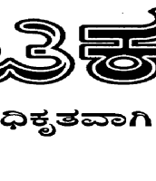
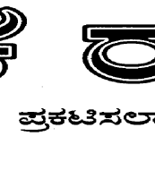

ತ್ರಿಕೆ


A
ಭಾಗ - 4ಎ Part – IVA
ನಂ. 63 No. 63
ಕರ್ನಾ ಟಕ ಸರ್ಕಾರ
ಸಂಖ್ಯೆ:ಸಂವ್ಯಶ
ಶಾಇ 05 ರಾಶಾ ಪ್ರ 2020
ಅಧಿ
ಧಿಸೂಚನೆ
The Karnataka Real Estat
te (Regulat ಕನ
ರ್ನಾಟಕ ಸರ್ಕಾರ
ಯ ರದ ಸಚಿವಾಲಯ
ವಿಧಾನಸ
ಸೌಧ,
ಬೆಂಗ ಳೂರು, ದಿನಾಂ
ಂಕ: 26.02.20
020.
ಕನ್ನಡ ಭಾಷಾಂ
velopment)
) Rules, 20 17 ಇದರ ಅಧಿ ಕೃತ ಂತರವನ್ನು Th e Karnatak
ka Official L
ರಾಜ್ಯಪಾಲರ ಅ
ಅಧಿಕಾರದ ಮೇ
ೕರೆಗೆ ಸಾರ್ವಜನಿ ಕರ ಮಾಹಿತಿಗಾ Act 1963 ರ ಪ
ಪ್ರಕರಣ 5ರ ಅಡಿ
ಡಿಯಲ್ಲಿ
ಆದೇಶಿಸಲಾಗಿದೆ
ದೆ.
ವಸತಿ ರಾಜ್ಯಪತ್ರದ ವಿಶೆ
ಶೇಷ ರಾಜ್ಯಪತ್ರ
ತ್ರದಲ್ಲಿ ಪ್ರಕಟಿಸ
ಸಲು
ಅಧಿ
ಧಿಸೂಚನೆ
ಸಂಖ್ಯೆ: ಡಿಒಎಚ್
ಚ್ 109 ಕೆಹೆಚ್
ಚ್ಬಿ 2017, ಬೆ
ಬೆಂಗಳೂರು, ದಿನ
ಕರ್ನಾ
ರ್ಟಕ ರಿಯಲ್ ಎ
ಎಸ್ಟೇಟ್ (ನಿಯ
ಯಂತ್ರಣ ಮತ್ತು .2017
ಸಂಖ್ಯೆ: ಡಿಒಎಚ್
ಚ್ 128 ಕೆಹೆಚ್
ಚ್ಬಿ 2016, ದಿನಾಂಕ: 201 ನಿಯಮಗಳು, 2
2016ರ ಕರಡನ
ನ್ನು, ಸರ್ಕಾರಿ ಆ
ಆದೇಶ
ಸಂಚಿಕೆ ಸಂಖ್ಯೆ:
: 1193), ದಿನ
ನಾಂಕ: 2016 ರ ಅಕ್ಟೋಬರ್ ಬರ್ 24ರ ಪ್ರಕ
ಕಾರ, ಕರ್ನಾಟಕ ರಾಜ್ಯಪತ್ರ (ವಿ
ವಿಶೇಷ
ಪ್ರಕಟಣೆಯ ದಿ
ದಿನಾಂಕದಿಂದ ಹ
ಹದಿನೈದು ದಿನ
ನಗಳೊಳಗಾಗಿ -Iರಲ್ಲಿ ಪ್ರಕಟಿ
ಟಿಸಿ,ಸರ್ಕಾರಿ ರಾ
ಾಜ್ಯಪತ್ರದಲ್ಲಿ ಅದರ
ಸಲಹೆಗಳನ್ನು ಆ
ಆಹ್ವಾನಿಸಿರುವು
ುದರಿಂದ;
ಮತ್ತು
ು್ತ, ಸದರಿ ರ
ರಾಜ್ಯಪತ್ರವನ್ನು
ನ್ 2016ರ ಧಿತರಾಗುವ ಸ
ಸಂಭವವಿರುವ ಎ
ಎಲ್ಲಾ ವ್ಯಕ್ತಿಗ
ಗಳಿಂದ
ಮಾಡಿರುವುದರಿ
ರಿಂದ;
ಮತ್ತು
ು್ತ, ರಾಜ್ಯ ಸರ್ಕಾ
ರ್ರವು ಸಲಹೆಗಳ
ಳನ್ನು ಸ್ವೀಕರಿಸಿ 24ರಂದು ಸಾರ್ವಜನಿಕರಿಗೆ
ಗೆ ಲಭ್ಯವಾಗ ುವಂತೆ
ಮತ್ತು
ು್ತ ಅಧಿನಿಯಮದ
ದ ಉಪಬಂಧಗ ಳನ್ನು ಅನುಷಾ ಹಾಗೂ ಪರಿಗಣಿಸಿ
ಸಿರುವುದರಿಂದ;
ಭಾರತ ಸರ್ಕಾರ ಭ
ರವು, ಎಸ್.ಒ. ಸ
ಸಂ. 3347, ದಿ ನಾಂಕ: 28ರ ಅ ಾಗ ಕಂಡು ಬಂದ
ದ ಕೆಲವು ತೊಂದ
ದರೆಗಳ ನಿವಾರಣೆ
ಣೆಗಾಗಿ
೧ 016ರಲ್ಲಿ ಆದೆ
ದೇಶವನ್ನು ಮಾ ಡಿರುವುದರಿಂದ ;
೨ಈಗ, ರಿಯಲ್ ಎಸ್ಟೇಟ್ (ನಿಯಂತ್ರಣ ಮತ್ತು ಅಭಿವೃದ್ಧಿ) ಅಧಿನಿಯಮ, 2016ರ (2016ರ ಕೇಂದ್ರಾಧಿನಿಯಮ 16) 84ನೇ ಪ್ರಕರಣದ (1)ನೇ ಉಪ-ಪ್ರಕರಣದ ಮೂಲಕ ಪ್ರದತ್ತವಾದ ಅಧಿಕಾರಗಳನ್ನು ಚಲಾಯಿಸಿ, ಕರ್ನಾಟಕ ಸರ್ಕಾರವು ಈ ಮೂಲಕ ಈ ಕೆಳಕಂಡ ನಿಯಮಗಳನ್ನು ರಚಿಸುತ್ತದೆ, ಎಂದರೆ:-
ಪ್ರಾರಂಭಿಕ
1. ಶೀರ್ಷಿಕೆ ಮತ್ತು ಪ್ರಾರಂಭ.- (1) ಈ ನಿಯಮಗಳನ್ನು, ಕರ್ನಾಟಕ ರಿಯಲ್ ಎಸ್ಟೇಟ್ (ನಿಯಂತ್ರಣ ಮತ್ತು ಅಭಿವೃದ್ಧಿ) ನಿಯಮಗಳು, 2017 ಎಂದು ಕರೆಯತಕ್ಕದ್ದು.
(2) ಅವು, ಸರ್ಕಾರಿ ರಾಜ್ಯಪತ್ರದಲ್ಲಿ ಅವುಗಳನ್ನುಪ್ರಕಟಿಸಿದ ದಿನಾಂಕದಿಂದ ಜಾರಿಗೆ ಬರತಕ್ಕದ್ದು.
2. ಪರಿಭಾಷೆಗಳು.- (1) ಈ ನಿಯಮಗಳಲ್ಲಿ, ಸಂದರ್ಭವು ಅನ್ಯಥಾ ಅಗತ್ಯಪಡಿಸಿದ ಹೊರತು,-
(ಎ) "ಅಧಿನಿಯಮ" ಎಂದರೆ, ರಿಯಲ್ ಎಸ್ಟೇಟ್ (ನಿಯಂತ್ರಣ ಹಾಗೂ ಅಭಿವೃದ್ಧಿ) ಅಧಿನಿಯಮ, 2016 (2016ರ ಕೇಂದ್ರಾಧಿನಿಯಮ 16);
(ಬಿ) "ಹಂಚಿಕೆ ಪಡೆದವರ ಸಂಘ" ಎಂದರೆ, ಅದರ ಸದಸ್ಯರುಗಳ ಉದ್ದೇಶವನ್ನು ಈಡೇರಿಸಲು ಒಂದು ಸಮೂಹದಂತೆ ಕಾರ್ಯನಿರ್ವಹಿಸುವ, ತತ್ಕಾಲದಲ್ಲಿ ಜಾರಿಯಲ್ಲಿರುವ ಯಾವುದೇ ಕಾನೂನಿನ ಅಡಿಯಲ್ಲಿ ನೋಂದಾಯಿತವಾದ ಯಾವುದೇ ಹೆಸರಿನಿಂದ ಕರೆಯಲ್ಪಡುವ ರಿಯಲ್ ಎಸ್ಟೇಟ್ ಪ್ರಾಜೆಕ್ಟ್ನಲ್ಲಿ ಹಂಚಿಕೆ ಪಡೆದವರ ಸಮುದಾಯ ಹಾಗೂ ಇದರಲ್ಲಿ ಹಂಚಿಕೆ ಪಡೆದವರ ಅಧಿಕೃತ ಪ್ರತಿನಿಧಿಗಳೂ ಒಳಗೊಂಡಿರತಕ್ಕದ್ದು;
(ಸಿ) "ಸಹಕಾರಸಂಘ" ಎಂದರೆ, ಕರ್ನಾಟಕ ಸಹಕಾರ ಸಂಘಗಳ ಅಧಿನಿಯಮ, 1959 (1959ರ ಕರ್ನಾಟಕ ಅಧಿನಿಯಮ 11) ರ ಅಡಿಯಲ್ಲಿ ನೋಂದಾಯಿತವಾದ ಅಥವಾ ನೋಂದಾಯಿತವಾಗಿರುವುದಾಗಿ ಪರಿಭಾವಿತವಾದ ಸಂಘ;
(ಡಿ) "ನಮೂನೆ" ಎಂದರೆ ಈ ನಿಯಮಗಳಿಗೆ ಸೇರಿಸಲಾದ ನಮೂನೆ; ಮತ್ತು
(ಇ) "ಪ್ರಕರಣ" ಎಂದರೆ ಅಧಿನಿಯಮದ ಪ್ರಕರಣ.
(2) ಇದರಲ್ಲಿ ಬಳಸಿರುವ ಆದರೆ, ಪರಿಭಾಷಿಸಿಲ್ಲದ ಪದಗಳಿಗೆ ಮತ್ತು ಪದಾವಳಿಗೆ, ಕೇಂದ್ರ ಅಧಿನಿಯಮದಲ್ಲಿ ಪರಿಭಾಷಿಸಲಾದ, ಪದಗಳನ್ನು ಹಾಗೂ ಪದಾವಳಿಗಳನ್ನುಪರಿಭಾಷಿಸಿದ್ದರೆ, ಈ ನಿಯಮದಲೂ ಅನುಕ್ರಮವಾಗಿ ಅದೇ ಅರ್ಥ ಇರತಕ್ಕದ್ದು.
೩ಅಧ್ಯಾಯ-II
ರಿಯಲ್ ಎಸ್ಟೇಟ್ ಪ್ರಾಜೆಕ್ಟ್
3.ಪ್ರಾಜೆಕ್ಟ್ನ ನೋಂದಣಿಗಾಗಿ ಪ್ರವರ್ತಕನು ಸಲ್ಲಿಸಬೇಕಾದ ಮಾಹಿತಿ ಹಾಗೂದಾಖಲೆಗಳು.- (1)ಪ್ರವರ್ತಕನು, ರಿಯಲ್ ಎಸ್ಟೇಟ್ ಪ್ರಾಜೆಕ್ಟ್ನ ನೋಂದಣಿಗಾಗಿಅಧಿನಿಯಮದ 4ನೇ ಪ್ರಕರಣದ (2)ನೇ
ಉಪ-ಪ್ರಕರಣದಲ್ಲಿ ನಿರ್ದಿಷ್ಟಪಡಿಸಿರುವವುಗಳ ಜೊತೆಗೆ ಈ ಕೆಳಕಂಡ ಹೆಚ್ಚುವರಿ ಮಾಹಿತಿಯನ್ನು ಹಾಗೂ ದಾಖಲೆಗಳನ್ನು ನಿಯಂತ್ರಣ ಪ್ರಾಧಿಕಾರಕ್ಕೆ ಸಲ್ಲಿಸತಕ್ಕದ್ದು.
(ಎ) ಪ್ರವರ್ತಕನ ಪಾನ್ ಕಾರ್ಡಿನ ಸ್ವಯಂ ದೃಢೀಕೃತ ಪ್ರತಿ;
(ಬಿ) ನಿಕಟಪೂರ್ವ ಮೂರು ಹಣಕಾಸು ವರ್ಷಗಳಿಗೆ ಸಂಬಂಧಿಸಿದ ಪರಿಶೋಧಿತ ಲಾಭ ಹಾಗೂ ನಷ್ಟದ ಲೆಕ್ಕಪತ್ರಗಳನ್ನು ಒಳಗೊಂಡಂತೆ ವಾರ್ಷಿಕ ವರದಿ, ಜಮಾಖರ್ಚು ಪಟ್ಟಿ, ನಗದು ಹರಿವು ವಿವರಪಟ್ಟಿ, ನಿರ್ದೇಶಕರ ವರದಿ ಹಾಗೂ ಪ್ರವರ್ತಕನ ಲೆಕ್ಕಪರಿಶೋಧಕರ ವರದಿ ಹಾಗೂ ವಾರ್ಷಿಕ ವರದಿಯು ಲಭ್ಯವಿರದಿದ್ದರೆ, ನಿಕಟಪೂರ್ವ ಮೂರು ಹಣಕಾಸು ವರ್ಷಗಳಿಗೆ ಸಂಬಂಧಿಸಿದ ಪರಿಶೋಧಿತ ಲಾಭ ಹಾಗೂ ನಷ್ಟದ ಲೆಕ್ಕಪತ್ರ, ಜಮಾಖರ್ಚು ಪಟ್ಟಿ, ನಗದು ಹರಿವು ವಿವರಪಟ್ಟಿ ಹಾಗೂ ಪ್ರವರ್ತಕನ ಲೆಕ್ಕಪರಿಶೋಧಕರ ವರದಿ;
(ಸಿ) ಸದರಿ ರಿಯಲ್ ಎಸ್ಟೇಟ್ ಪ್ರಾಜೆಕ್ಟ್ನಲ್ಲಿ ಲಭ್ಯವಿರುವ ವಾಹನ ನಿಲುಗಡೆ ಸ್ಥಾನಗಳ ಸಂಖ್ಯೆ;
(ಡಿ) ಹಕ್ಕು ಸರಣಿಗೆ ಸಂಬಂಧಿಸಿದ ಕಾನೂನು ಸಮ್ಮತವಾಗಿ ಸಿಂಧುವಾದ ದಾಖಲೆಗಳೊಂದಿಗೆ
ಯಾವ ಪ್ರಾಜೆಕ್ಟ್ನ ನಿರ್ಮಾಣಕ್ಕಾಗಿ ಉದ್ದೇಶಿಸಲಾಗಿದೆಯೋ ಆ ಪ್ರಾಜೆಕ್ಟ್ನ ಜಮೀನಿನ ಮೇಲೆ ಪ್ರವರ್ತಕನಿಗೆ ಇರುವ ಹಕ್ಕನ್ನು ತಿಳಿಯಪಡಿಸುವ ಕಾನೂನು ಸಮ್ಮತ ಅಧಿಪ್ರಮಾಣಿತ ಪ್ರತಿ;
(ಇ) ಕರ್ನಾಟಕ ಭೂ-ಸುಧಾರಣಾ ಅಧಿನಿಯಮ, 1961ರ 109ನೇ ಪ್ರಕರಣವು ಅನ್ವಯಿಸುವಂತಿದ್ದರೆ ಅದರ ಅಡಿಯಲ್ಲಿ ಯಾವ ಜಮೀನಿಗೆ ಅನುಮತಿ ನೀಡಬೇಕಾಗಿರುವುದೋ ಆ ಜಮೀನಿನ ಮೇಲಿನ ಪೂರ್ವಾಧಿ ವಿವರಗಳು, ಕರ್ನಾಟಕ ಭೂ ಕಂದಾಯ ಅಧಿನಿಯಮ, 1964ರ 95ನೇ ಪ್ರಕರಣದಡಿ ನೀಡಿರುವ ಭೂ ಪರಿವರ್ತನೆ ಆದೇಶದ ಪ್ರಮಾಣಿತ ಪ್ರತಿ ಹಾಗೂ ಉದ್ದೇಶಿಸಿರುವ ನಿರ್ಮಾಣಕ್ಕೆಕರ್ನಾಟಕ ಪಟ್ಟಣ ಮತ್ತು ಗ್ರಾಮಾಂತರ ಯೋಜನೆ ಅಧಿನಿಯಮ, 1961ರ 14ನೇ ಪ್ರಕರಣವು ಅನ್ವಯವಾಗುವಂತಿದ್ದರೆ, ಅದರ ಅಡಿಯಲ್ಲಿ ಯಾವುದೇ ಹಕ್ಕುಗಳು, ಹಕ್ಕು ಪತ್ರ, ಹಿತಾಸಕ್ತಿ ಅಥವಾ ವಿವರಗಳ ಸಹಿತ ಅಂಥ ಜಮೀನಿನಲ್ಲಿ ಅಥವಾ ಜಮೀನಿನ ಮೇಲೆ ಯಾರೇ ಪಕ್ಷಕಾರನ ಹೆಸರು ಒಳಗೊಂಡಂತೆ ಆ 14ನೆಯ ಪ್ರಕರಣದ ಅಡಿಯಲ್ಲಿ ಮಂಜೂರು ಮಾಡಿದ ಭೂ ಬಳಕೆಯಲ್ಲಿ ಬದಲಾವಣೆಗೆ ನೀಡಿರುವ ಅನುಮತಿ ಪತ್ರ;
(ಎಫ್) ಪ್ರವರ್ತಕನು, ಯಾವ ಜಮೀನಿನಲ್ಲಿ ಪ್ರಾಜೆಕ್ಟ್ನ್ನು ನಿರ್ಮಾಣ ಮಾಡಲು ಉದ್ದೇಶಿಸಲಾಗಿದೆಯೋ ಆ ಜಮೀನಿನ ಮಾಲೀಕನಲ್ಲದಿದ್ದರೆ, ಪ್ರವರ್ತಕನು ಹಾಗೂ ಅಂಥ ಮಾಲೀಕನು ಪರಸ್ಪರ ಮಾಡಿಕೊಂಡಿರುವ ಸ್ವಯಂ ದೃಢೀಕೃತ ಸಹಭಾಗಿತ್ವದ ಒಪ್ಪಂದ, ನಿರ್ಮಾಣ ಒಪ್ಪಂದ, ಜಂಟಿ ನಿರ್ಮಾಣ ಒಪ್ಪಂದ ಅಥವಾ ಸಂದರ್ಭಾನುಸಾರ ಯಾವುದೇ ಇತರ ಒಪ್ಪಂದ ಇವುಗಳ ಸಹಿತ ಭೂಮಾಲೀಕನ ಸಮ್ಮತಿ ವಿವರಗಳು ಮತ್ತು ಯಾವ ಜಮೀನಿನಲ್ಲಿ ಪ್ರಾಜೆಕ್ಟ್ನ್ನು ನಿರ್ಮಾಣ ಮಾಡಲು ಉದ್ದೇಶಿಸಲಾಗಿದೆಯೋ ಆ ಜಮೀನಿನ ಮೇಲೆ ಇರುವ ಅಂಥ ಮಾಲೀಕನ ಹಕ್ಕನ್ನು ತಿಳಿಯಪಡಿಸುವ ಹಕ್ಕು ಪತ್ರದ ಪ್ರತಿಗಳು ಮತ್ತು ಇತರ ದಾಖಲೆಗಳು;
೪(ಜಿ) ಪ್ರವರ್ತಕನು ವ್ಯಕ್ತಿಯಾಗಿದ್ದರೆ, ಆತನ ಹೆಸರು, ಭಾವಚಿತ್ರ, ಸಂಪರ್ಕದ ವಿವರಗಳು ಮತ್ತು ವಿಳಾಸ ಹಾಗೂ ಇತರ ಸಂಸ್ಥೆಗಳ ಸಂದರ್ಭದಲ್ಲಿ ಸಂದರ್ಭಾನುಸಾರ ಅದರ ಅಧ್ಯಕ್ಷರ, ಪಾಲುದಾರರ, ನಿರ್ದೇಶಕರುಗಳ ಮತ್ತು ಅಧಿಕೃತ ವ್ಯಕ್ತಿಯ ಹೆಸರು, ಭಾವಚಿತ್ರ, ಸಂಪರ್ಕದ ವಿವರಗಳು ಹಾಗೂ ವಿಳಾಸ.
(2) ರಿಯಲ್ ಎಸ್ಟೇಟ್ ಪ್ರಾಜೆಕ್ಟ್ನ ನೋಂದಣಿಗಾಗಿ, ಪ್ರಾಧಿಕಾರಕ್ಕೆ ಸಲ್ಲಿಸುವ ಅರ್ಜಿಯನ್ನು, ಅಂಥ ಅರ್ಜಿಯನ್ನು ಅಂತರ್ಜಾಲದಲ್ಲಿ ಸಲ್ಲಿಸಲು ಪ್ರಕ್ರಿಯೆಯನ್ನು ಗೊತ್ತುಪಡಿಸುವವರೆಗೆ, ತ್ರಿಪ್ರತಿಯಲ್ಲಿ ನಮೂನೆ 'ಎ' ನಲ್ಲಿ ಲಿಖಿತದಲ್ಲಿ ಸಲ್ಲಿಸತಕ್ಕದ್ದು.
(3) ಪ್ರವರ್ತಕನು, ನೋಂದಣಿಗಾಗಿ ಅರ್ಜಿಯನ್ನು ಸಲ್ಲಿಸುವ ಸಮಯದಲ್ಲಿ, ಈ ಕೆಳಕಂಡ ದರದಲ್ಲಿ ಲೆಕ್ಕ ಹಾಕಿದ ಮೊತ್ತದ ನೋಂದಣಿ ಶುಲ್ಕವನ್ನು, ಯಾವುದೇ ಅನುಸೂಚಿತ ಬ್ಯಾಂಕ್ನಿಂದ ಅಥವಾ ಸಂದರ್ಭಾನುಸಾರ ಸಹಕಾರಿ ಬ್ಯಾಂಕ್ನಿಂದ ಪಡೆದುಕೊಂಡ ಡಿಮ್ಯಾಂಡ್ ಡ್ರಾಫ್ಟ್ ಅಥವಾ ಬ್ಯಾಂಕರ್ಸ್ ಚೆಕ್ಸ್ನ ರೂಪದಲ್ಲಿ ಅಥವಾ ಆನ್ಲೈನ್ ಮೂಲಕ ಸಂದಾಯ ವಿಧಾನದ ಮುಖಾಂತರ ಸಂದಾಯ ಮಾಡತಕ್ಕದ್ದು; ಎಂದರೆ,-
(ಎ) ಗ್ರೂಪ್ ಹೌಸಿಂಗ್ ಪ್ರಾಜೆಕ್ಟಾದರೆ, ಯಾವ ಜಮೀನಿನಲ್ಲಿ ನಿರ್ಮಾಣ ಮಾಡಲು ಉದ್ದೇಶಿಸಲಾಗಿದೆಯೋ ಆ ಜಮೀನಿನ ವಿಸ್ತೀರ್ಣವು ಒಂದು ಸಾವಿರ ಚದರ ಮೀಟರುಗಳನ್ನು ಮೀರಿರದಿದ್ದರೆ, ಪ್ರಾಜೆಕ್ಟ್ಗೆ ಪ್ರತಿ ಚದರ ಮೀಟರಿಗೆ ಐದು ರೂಪಾಯಿಗಳು ಅಥವಾ ನಿರ್ಮಾಣ ಮಾಡಲು ಉದ್ದೇಶಿಸಿರುವ ಜಮೀನಿನ ವಿಸ್ತೀರ್ಣವು ಒಂದು ಸಾವಿರ ಚದರ ಮೀಟರುಗಳನ್ನು ಮೀರಿದ್ದರೆ, ಪ್ರಾಜೆಕ್ಟ್ಗೆ ಪ್ರತಿ ಚದರ ಮೀಟರಿಗೆ ನೋಂದಣಿ ಶುಲ್ಕವು ಹತ್ತು ರೂಪಾಯಿಗಳು;
ಆದರೆ ಐದು ಲಕ್ಷ ರೂಪಾಯಿಗಳಿಗಿಂತ ಹೆಚ್ಚಿರತಕ್ಕದ್ದಲ್ಲ;
(ಬಿ) ಮಿಕ್ಸ್ಡ್ ಡೆವಲಪ್ಮೆಂಟ್ (ರೆಸಿಡೆನ್ಷಿಯಲ್ ಹಾಗೂ ಕಮರ್ಷಿಯಲ್) ಪ್ರಾಜೆಕ್ಟಾಗಿದ್ದರೆ ನಿರ್ಮಾಣ ಮಾಡಲು ಉದ್ದೇಶಿಸಿರುವ ಜಮೀನಿನ ವಿಸ್ತೀರ್ಣವು ಒಂದು ಸಾವಿರ ಚದರ ಮೀಟರುಗಳನ್ನು ಮೀರಿರದಿದ್ದರೆ ಪ್ರಾಜೆಕ್ಟ್ನ ಪ್ರತಿ ಚದರ ಮೀಟರಿಗೆ ಹತ್ತು ರೂಪಾಯಿಗಳು; ಅಥವಾ ನಿರ್ಮಾಣ ಮಾಡಲು ಉದ್ದೇಶಿಸಿರುವ ಜಮೀನಿನ ವಿಸ್ತೀರ್ಣವು ಒಂದು ಸಾವಿರ ಚದರ ಮೀಟರನ್ನು ಮೀರಿರುವಲ್ಲಿ, ಪ್ರಾಜೆಕ್ಟ್ನ ಪ್ರತಿ ಚದರ ಮೀಟರಿಗೆ ನೋಂದಣಿ ಶುಲ್ಕವು ಹದಿನೈದು ರೂಪಾಯಿಗಳು; ಆದರೆ ಏಳು ಲಕ್ಷ ರೂಪಾಯಿಗಳಿಗಿಂತ ಹೆಚ್ಚಿರತಕ್ಕದ್ದಲ್ಲ;
(ಸಿ) ಕಮರ್ಷಿಯಲಾಪ್ರ್ಜೆಕ್ಟ್ಗಳಾಗಿದ್ದರೆ,ನಿರ್ಮಾಣ ಮಾಡಲು ಉದ್ದೇಶಿಸಿರುವ ಜಮೀನಿನ ವಿಸ್ತೀರ್ಣವು ಒಂದು ಸಾವಿರ ಚದರ ಮೀಟರುಗಳನ್ನು ಮೀರಿರದಿದ್ದರೆ, ಪ್ರಾಜೆಕ್ಟ್ನ ಪ್ರತಿ ಚದರ ಮೀಟರಿಗೆ ಇಪ್ಪತ್ತು ರೂಪಾಯಿಗಳು; ಅಥವಾ ನಿರ್ಮಾಣ ಮಾಡಲುಉದ್ದೇಶಿಸಿರುವ ಜಮೀನಿನ ವಿಸ್ತೀರ್ಣವು ಒಂದು ಸಾವಿರ ಚದರ ಮೀಟರುಗಳನ್ನು ಮೀರಿದ್ದರೆ, ಪ್ರಾಜೆಕ್ಟ್ಗೆ ಪ್ರತಿ ಚದರ ಮೀಟರಿಗೆ ನೋಂದಣಿ ಶುಲ್ಕವು ಇಪ್ಪತ್ತೈದು ರೂಪಾಯಿಗಳು; ಆದರೆ ಹತ್ತು ಲಕ್ಷ ರೂಪಾಯಿಗಳಿಗಿಂತ ಹೆಚ್ಚಿರತಕ್ಕದ್ದಲ್ಲ;
(ಡಿ) ನಿವೇಶನ ನಿರ್ಮಾಣ ಪ್ರಾಜೆಕ್ಟಾಗಿದ್ದರೆ ಪ್ರತಿ ಚದರ ಮೀಟರಿಗೆ ನೋಂದಣಿ ಶುಲ್ಕವು ಐದು ರೂಪಾಯಿಗಳು; ಆದರೆ ಎರಡು ಲಕ್ಷ ರೂಪಾಯಿಗಳಿಗಿಂತ ಹೆಚ್ಚಿರತಕ್ಕದ್ದಲ್ಲ; ಮತ್ತು
(4)4ನೇ ಪ್ರಕರಣದ (2)ನೇ ಉಪ-ಪ್ರಕರಣದ (1)ನೇ ಖಂಡದ ಅಡಿಯಲ್ಲಿ ಸಲ್ಲಿಸಬೇಕಾದ ಘೋಷಣೆಯು, ನಮೂನೆ-ಬಿ ಯಲ್ಲಿರತಕ್ಕದ್ದು, ಅದರಲ್ಲಿ ಪ್ರವರ್ತಕನು, ಸಂದರ್ಭಾನುಸಾರ ಯಾವುದೇ ಅಪಾರ್ಟ್ಮೆಂಟ್, ನಿವೇಶನ ಅಥವಾ ಯಾವುದೇ ಕಟ್ಟಡದ ಹಂಚಿಕೆಯ ಸಮಯದಲ್ಲಿ ಯಾರೇ ಹಂಚಿಕೆ ಪಡೆಯುವವನ ವಿರುದ್ಧ ತಾರತಮ್ಯವನ್ನು ಮಾಡತಕ್ಕದ್ದಲ್ಲ ಎಂದು ಹೇಳಿರುವ ಘೋಷಣೆಯೂ ಒಳಗೊಂಡಿರತಕ್ಕದ್ದು.
(5) ಪ್ರವರ್ತಕನು, 5ನೇ ಪ್ರಕರಣದ (1)ನೇ ಉಪ-ಪ್ರಕರಣದ ಅಡಿಯಲ್ಲಿ ನಿರ್ದಿಷ್ಟಪಡಿಸಿರುವ ಮೂವತ್ತು ದಿನಗಳ ಅವಧಿಯು ಮುಕ್ತಾಯವಾಗುವುದಕ್ಕೆ ಮುಂಚೆ, ಪ್ರಾಜೆಕ್ಟ್ನ ನೋಂದಣಿಗಾಗಿ ಸಲ್ಲಿಸಿದ್ದ ಅರ್ಜಿಯನ್ನು ಹಿಂತೆಗೆದುಕೊಳ್ಳಲು೫ ಅರ್ಜಿ ಸಲ್ಲಿಸಿದರೆ, (3)ನೇ ಉಪ-ನಿಯಮದ ಅಡಿಯಲ್ಲಿ ಸಂದಾಯ ಮಾಡಿದ ಶೇಕಡಾ ಹತ್ತರಷ್ಟು ನೋಂದಣಿ ಶುಲ್ಕ ಅಥವಾ ಐವತ್ತು ಸಾವಿರ ರೂಪಾಯಿಗಳು ಇವುಗಳಲ್ಲಿ ಯಾವುದು ಹೆಚ್ಚೋ ಅದನ್ನು ನಿಯಂತ್ರಣ ಪ್ರಾಧಿಕಾರವು ಪ್ರೊಸೆಸಿಂಗ್ ಫೀಯಾಗಿ ಉಳಿಸಿಕೊಳ್ಳತಕ್ಕದ್ದು ಹಾಗೂ ಉಳಿದ ಮೊಬಲಗನ್ನು, ಅರ್ಜಿಯನ್ನು ಹಾಗೆ ಹಿಂಪಡೆದ ದಿನಾಂಕದಿಂದ ಮೂವತ್ತು ದಿವಸಗಳೊಳಗಾಗಿ ಪ್ರವರ್ತಕನಿಗೆ ಮರುಪಾವತಿ ಮಾಡತಕ್ಕದ್ದು.
4. ಮುಂದುವರಿಯುತ್ತಿರುವ ಪ್ರಾಜೆಕ್ಟ್ಗಳ ಪ್ರವರ್ತಕರುಹೆಚ್ಚಿನ ವಿವರಗಳನ್ನು ತಿಳಿಯಪಡಿಸುವುದು.- (1) 3ನೇ ಪ್ರಕರಣದ (1)ನೇ ಉಪ-ಪ್ರಕರಣದ ಪ್ರಾರಂಭಕ್ಕಾಗಿ ಅಧಿಸೂಚನೆಯನ್ನು ಹೊರಡಿಸಿದ ಕೂಡಲೇ, ನಡೆಯುತ್ತಿರುವ ಯಾವ ಪ್ರಾಜೆಕ್ಟ್ಗಳಿಗೆ ಅವು ಪೂರ್ಣಗೊಂಡ ಬಗ್ಗೆ ಪ್ರಮಾಣಪತ್ರವನ್ನು ಪಡೆದುಕೊಂಡಿಲ್ಲವೋ ಆ ಎಲ್ಲಾ ನಡೆಯುತ್ತಿರುವ ಪ್ರಾಜೆಕ್ಟ್ ಗಳ ಪ್ರವರ್ತಕರು, ಸದರಿ ಉಪ-ಪ್ರಕರಣದಲ್ಲಿ ಗೊತ್ತುಪಡಿಸಿರುವ ಅವಧಿಯೊಳಗೆ, ನಿಯಮ 3ರಲ್ಲಿ ನಿರ್ದಿಷ್ಟಪಡಿಸಿರುವಂಥ ನಮೂನೆಯಲ್ಲಿ ಹಾಗೂ ವಿಧಾನದಲ್ಲಿ ನಿಯಂತ್ರಣ ಪ್ರಾಧಿಕಾರಕ್ಕೆ ಅರ್ಜಿಯನ್ನು ಸಲ್ಲಿಸತಕ್ಕದ್ದು.
ವಿವರಣೆ:- ಈ ನಿಯಮದ ಉದ್ದೇಶಕ್ಕಾಗಿ, "ಮುಂದುವರಿಯುತ್ತಿರುವ ಪ್ರಾಜೆಕ್ಟ್" ಎಂದರೆ:-
(i) ಯಾವ ಬಡಾವಣೆಗಳಲ್ಲಿರುವ ದಾರಿಗಳನ್ನು ಹಾಗೂ ನಾಗರಿಕ ಸೌಲಭ್ಯಗಳಿರುವ ನಿವೇಶನಗಳನ್ನು ಹಾಗೂ ಇತರ ಸೇವೆಗಳನ್ನು ನಿರ್ವಹಣೆಗಾಗಿ ಸ್ಥಳೀಯ ಪ್ರಾಧಿಕಾರಕ್ಕೆ ಹಾಗೂ ಯೋಜನಾ ಪ್ರಾಧಿಕಾರಕ್ಕೆ ಹಸ್ತಾಂತರಿಸಲಾಗಿದೆಯೋ ಆ ಬಡಾವಣೆಗಳಿಗೆ ಸಂಬಂಧಪಟ್ಟಂತೆ;
(ii) ಯಾವ ಅಪಾರ್ಟ್ಮೆಂಟ್ಗಳಲ್ಲಿರುವ ಸಮಸ್ತರ ಬಳಕೆಯ ಪ್ರದೇಶಗಳನ್ನು ಹಾಗೂ ಸೌಲಭ್ಯಗಳನ್ನು
ಹಸ್ತಾಂತರಿಸಲಾಗಿದೆಯೋ ಆ ಅಪಾರ್ಟ್ಮೆಂಟ್ಗಳಿಗೆ ಸಂಬಂಧಪಟ್ಟಂತೆ;
(iii) ಯಾವ ಎಲ್ಲಾ ನಿರ್ಮಾಣ ಕಾಮಗಾರಿಗಳನ್ನು ಅಧಿನಿಯಮದ ಪ್ರಕಾರ ಪೂರ್ಣಗೊಳಿಸಲಾಗಿದೆಯೋ ಹಾಗೂ ಆ ಬಗ್ಗೆ ಸಕ್ಷಮ ಏಜೆನ್ಸಿಯು ಪ್ರಮಾಣೀಕರಿಸಿದೆಯೋ ಹಾಗೂ ಶೇಕಡಾ ಅರವತ್ತರಷ್ಟು ಅಪಾರ್ಟ್ಮೆಂಟ್ಗಳ/ ಮನೆಗಳ/ ನಿವೇಶನಗಳ ಮಾರಾಟ/ಭೋಗ್ಯ ಪತ್ರಗಳನ್ನು ನೋಂದಾಯಿಸಲಾಗಿದೆಯೋ ಹಾಗೂ ಬರೆದುಕೊಡಲಾಗಿದೆಯೋ ಆ ನಿರ್ಮಾಣ ಕಾಮಗಾರಿಗಳಿಗೆ ಸಂಬಂಧಪಟ್ಟಂತೆ;
(iv) ಯಾವ ಎಲ್ಲಾ ನಿರ್ಮಾಣ ಕಾಮಗಾರಿಗಳನ್ನು ಅಧಿನಿಯಮದ ಪ್ರಕಾರ ಪೂರ್ಣಗೊಳಿಸಲಾಗಿದೆಯೋಹಾಗೂ ಸಕ್ಷಮ ಏಜೆನ್ಸಿಯು ಪ್ರಮಾಣೀಕರಿಸಿದೆಯೋ ಹಾಗೂ ಪೂರ್ಣಗೊಂಡ ಬಗ್ಗೆ ಪ್ರಮಾಣಪತ್ರವನ್ನು/ ಸ್ವಾಧೀನ ಪ್ರಮಾಣಪತ್ರವನ್ನು ನೀಡುವಂತೆ ಸಕ್ಷಮ ಪ್ರಾಧಿಕಾರಕ್ಕೆ ಅರ್ಜಿಯನ್ನು ಸಲ್ಲಿಸಲಾಗಿದೆಯೋ ಆ ನಿರ್ಮಾಣ ಕಾಮಗಾರಿಗಳಿಗೆ ಸಂಬಂಧಪಟ್ಟಂತೆ; ಹಾಗೂ
(v) ಯಾವ ಭಾಗಕ್ಕಾಗಿ ಭಾಗಶಃ ಸ್ವಾಧೀನ ಪ್ರಮಾಣಪತ್ರವನ್ನು ಪಡೆದುಕೊಳ್ಳಲಾಗಿದೆಯೋ ಆ ಭಾಗದಷ್ಟು ಮಟ್ಟಿಗೆ, ಭಾಗಶಃ ಸ್ವಾಧೀನ ಪ್ರಮಾಣಪತ್ರವನ್ನು ಪಡೆದುಕೊಂಡಿರುವ ಭಾಗಶಃ ಸ್ವಾಧೀನ ಪ್ರಮಾಣಪತ್ರಕ್ಕೆ ಸಂಬಂಧಪಟ್ಟಂತೆ.
- ಸದರಿ ಮಾನದಂಡವನ್ನು ಈಡೇರಿಸುವಂಥ ಪ್ರಾಜೆಕ್ಟಗಳ ಹೊರತಾದ ನಿರ್ಮಾಣ ಕಾರ್ಯ ಮುಂದುವರೆದಿರುವ ಮತ್ತು ಆ ಪ್ರಾಜೆಕ್ಟ್ ಪೂರ್ಣಗೊಂಡ ಬಗ್ಗೆ ಪ್ರಮಾಣಪತ್ರವನ್ನು ನೀಡಿರದಿರುವ ಪ್ರಾಜೆಕ್ಟ್.
(2) ಪ್ರವರ್ತಕನು, ನಿಯಮ 3ರಲ್ಲಿ ಹೇಳಿರುವಂತೆ ತಿಳಿಯಪಡಿಸಿರುವವುಗಳ ಜೊತೆಗೆ ಈ ಕೆಳಕಂಡ
ಮಾಹಿತಿಯನ್ನು, ಎಂದರೆ:-
೬(ಎ) ಈಗಿರುವ ಮಂಜೂರಾದ ನಕ್ಷೆ, ಬಡಾವಣೆ ನಿರ್ಮಾಣ ನಕ್ಷೆ ಹಾಗೂ ತಪಶೀಲುಗಳು ಸೇರಿದಂತೆ ಮಂಜೂರಾದ ಮೂಲ ನಕ್ಷೆ, ಬಡಾವಣೆ ನಕ್ಷೆ ಮತ್ತು ತಪಶೀಲುಗಳು ಹಾಗೂ ತರುವಾಯ ಮಾರ್ಪಾಟುಗಳನ್ನು ಏನಾದರೂ ಮಾಡಿದ್ದರೆ ತರುವಾಯದಆ ಮಾರ್ಪಾಟುಗಳು;
ವಿವರಣೆ:- ಅಧಿನಿಯಮದ 14ನೇ ಪ್ರಕರಣದ (2)ನೇ ಉಪ-ಪ್ರಕರಣದ ಖಂಡ (ii)ರ
ಉದ್ದೇಶಕ್ಕಾಗಿ ಹಂಚಿಕೆ ಪಡೆದಿರುವವರಲ್ಲಿ,-
(i) ನೋಂದಣಿಗೆ ಮುಂಚೆ ಆಗಿದ್ದ ಒಪ್ಪಂದದಂತೆ ಹಂಚಿಕೆ ಪಡೆಯುವವರಿಗೆ ಉದ್ದೇಶಿತ ನಕ್ಷೆಯ ಅನುಷ್ಠಾನವನ್ನು ಈಗಾಗಲೇ ತಿಳಿಯಪಡಿಸಿದ್ದರೆ; ಅಥವಾ
(ii) ಸಕ್ಷಮ ಪ್ರಾಧಿಕಾರವು ಅಥವಾ ಶಾಸನಬದ್ಧ ಪ್ರಾಧಿಕಾರವು ಹೊರಡಿಸಿದ ಯಾವುದೇ ಆದೇಶವನ್ನು ಅಥವಾ ನಿರ್ದೇಶನವನ್ನು ಪಾಲಿಸುವಲ್ಲಿ ಮಾರ್ಪಾಟುಗಳನ್ನು ಮಾಡಬೇಕಾಗಿದ್ದರೆ, ಮಾರಾಟದ ಒಪ್ಪಂದದಂತೆ ಸರ್ಕಾರಿ ಪ್ರಾಧಿಕಾರಿಗಳು ಅಪಾರ್ಟಮೆಂಟ್ಗೆ ಯಾವುದೇ ಮಾರ್ಪಾಟು ಮಾಡುವಂತೆ ಅಥವಾ ಸೇರ್ಪಡೆಯನ್ನು ಮಾಡುವಂತೆ ಅಗತ್ಯಪಡಿಸಿದ ಸಂದರ್ಭದಲ್ಲಿ ಅಥವಾ ಯಾವುದೇ ಕಾನೂನಿನಲ್ಲಿ ಬದಲಾವಣೆಯಾದ ಕಾರಣದಿಂದಾಗಿ ಪ್ರವರ್ತಕನು ಹಂಚಿಕೆ ಪಡೆಯುವವರ ಸಮ್ಮತಿಯನ್ನು ಪಡೆದುಕೊಳ್ಳುವ ಅಗತ್ಯವಿಲ್ಲದಿದ್ದರೆ
- ಕನಿಷ್ಠಪಕ್ಷ ಮೂರನೇ ಎರಡರಷ್ಟು ಜನರಿಂದ ಮುಂಚಿತವಾಗಿಯೇ ಲಿಖಿತ ಸಮ್ಮತಿಯು
ಅಗತ್ಯವಿರುವುದಿಲ್ಲ.
(ಬಿ) ಪ್ರವರ್ತಕನ ಬಳಿ ಇರುವ ಒಟ್ಟು ಶಿಲ್ಕು ಹಣದ ಮೊಬಲಗು ಸೇರಿದಂತೆ ಪ್ರಾಜೆಕ್ಟ್ನ ನಿರ್ಮಾಣಕ್ಕಾಗಿ ಹಂಚಿಕೆ ಪಡೆಯುವವರಿಂದ ಸಂಗ್ರಹಿಸಿರುವ ಒಟ್ಟು ಮೊಬಲಗು ಮತ್ತು ಉಪಯೋಗಿಸಲಾದ ಒಟ್ಟು ಹಣದ ಮೊಬಲಗು;
ಹಾಗೂ
(ಸಿ) ಪ್ರಾಜೆಕ್ಟ್ನ್ನು ಪೂರ್ಣಗೊಳಿಸುವುದಕ್ಕೆ ಹಂಚಿಕೆ ಪಡೆಯುವವರಿಗೆ ಮಾರಾಟದ ಅವಧಿಯಲ್ಲಿ ತಿಳಿಯಪಡಿಸಿದ ಮೂಲ ಕಾಲಾವಧಿ ಮತ್ತು ಆಗಿರುವ ವಿಳಂಬ ಮತ್ತು ತೆಗೆದುಕೊಂಡಿರುವ ಕಾಲಾವಧಿಯು ಸೇರಿದಂತೆ, ಆತನು ಬಾಕಿ ಉಳಿದಿರುವ ಪ್ರಾಜೆಕ್ಟ್ನ್ನು ಈಗಾಗಲೇ ಪೂರ್ಣಗೊಂಡಿರುವ ನಿರ್ಮಾಣದಷ್ಟಕ್ಕೆ ಅನುಗುಣವಾಗಿರುವಂತೆ ಪೂರ್ಣಗೊಳಿಸಲು ಪ್ರಾಜೆಕ್ಟ್ನ ಸ್ಥಿತಿಗತಿ (ಈ ದಿನಾಂಕದವರೆಗೆ ಮಾಡಿರುವ ನಿರ್ಮಾಣ ವಿಸ್ತೀರ್ಣ ಮತ್ತು ಬಾಕಿ ಉಳಿದಿರುವ ನಿರ್ಮಾಣ ವಿಸ್ತೀರ್ಣ)
- ಈ ಮೇಲಿನ ಮಾಹಿತಿಯನ್ನು ತಿಳಿಯಪಡಿಸತಕ್ಕದ್ದು ಹಾಗೂ ಈ ಮಾಹಿತಿಯನ್ನು ಎಂಜಿನಿಯರ್ರವರು, ವೃತ್ತಿ ನಿರತ ವಾಸ್ತುಶಿಲ್ಪಿ ಮತ್ತು ಚಾರ್ಟರ್ಡ್ ಅಕೌಂಟೆಂಟ್ ಪ್ರಮಾಣೀಕರಿಸಿರತಕ್ಕದ್ದು.
(3) ಸೂಪರ್ ಏರಿಯಾ, ಸೂಪರ್ ಬಿಲ್ಟ್ ಅಪ್ ಏರಿಯಾ,ಬಿಲ್ಟ್ ಅಪ್ ಏರಿಯಾ ಮುಂತಾದಂಥ ಯಾವುದೇ ಇತರ ಆಧಾರದ ಮೇಲೆ ಈ ಹಿಂದೆ ಮಾರಾಟ ಮಾಡಿದ್ದರೂ ಕೂಡ ಪ್ರವರ್ತಕನು ಕಾರ್ಪೆಟ್ ಏರಿಯಾಆಧಾರದ ಮೇಲೆ ಅಪಾರ್ಟ್ಮೆಂಟಿನ ಒಟ್ಟಳತೆಯನ್ನು ತಿಳಿಯಪಡಿಸತಕ್ಕದ್ದು. ಆ ಮಟ್ಟಿಗೆ ಇದು ಪ್ರವರ್ತಕನು ಹಾಗೂ ಹಂಚಿಕೆ ಪಡೆಯುವವನು ಪರಸ್ಪರ ಮಾಡಿಕೊಂಡ ಒಪ್ಪಂದದ ಸಿಂಧುತ್ವಕ್ಕೆ ಬಾಧಕವಾಗತಕ್ಕದ್ದಲ್ಲ.
(4) ಪ್ಲಾಟ್ ನಿರ್ಮಾಣದ ಸಂದರ್ಭದಲ್ಲಿ ಪ್ರವರ್ತಕನು, ಲೇ-ಔಟ್ನಕ್ಷೆಯ ಪ್ರಕಾರ ಹಂಚಿಕೆ ಪಡೆಯುವವನಿಗೆ ಮಾರಾಟ ಮಾಡುತ್ತಿರುವ ಪ್ಲಾಟ್ನ ಪ್ರದೇಶವನ್ನು ತಿಳಿಯಪಡಿಸತಕ್ಕದ್ದು.
(5) ಮುಂದುವರಿಯುತ್ತಿರುವ ಆದರೆ ಪೂರ್ಣಗೊಂಡ ಬಗ್ಗೆ ಅಧಿನಿಯಮದ ಪ್ರಾರಂಭದ ದಿನಾಂಕದಂದು ಪ್ರಮಾಣಪತ್ರವನ್ನು ಪಡೆದುಕೊಂಡಿರದಿರುವಪ್ರಾಜೆಕ್ಟ್ಗಳಿಗೆ ಸಂಬಂಧಿಸಿದಂತೆ ಪ್ರವರ್ತಕನು, ಪ್ರಾಧಿಕಾರಕ್ಕೆ ಪ್ರಾಜೆಕ್ಟ್ನ೭ ನೋಂದಣಿಗಾಗಿ ಅರ್ಜಿಯನ್ನು ಸಲ್ಲಿಸಿದ ಮೂರು ತಿಂಗಳುಗಳ ಅವಧಿಯೊಳಗೆ, ಈಗಾಗಲೇ ಹಂಚಿಕೆ ಪಡೆಯುವವರಿಂದ ಪಡೆದುಕೊಂಡಿದ್ದ, ಆದರೆ ಪ್ರಾಜೆಕ್ಟ್ನ ನಿರ್ಮಾಣಕ್ಕಾಗಿ ಬಳಸಿಕೊಂಡಿಲ್ಲದಿರುವ ಮೊಬಲಗಿನಲ್ಲಿನ ಶೇಕಡಾ ಎಪ್ಪತ್ತರಷ್ಟನ್ನು ಅಥವಾ ಪ್ರಾಜೆಕ್ಟ್ ಬೇಕಾಗಿರುವ ಜಮೀನಿನ ಬೆಲೆಯನ್ನು 4ನೇ ಪ್ರಕರಣದ (2)ನೇ ಉಪ-ಪ್ರಕರಣದ ಖಂಡ (1)ರ ಉಪ-ಖಂಡ (ಡಿ) ಯಲ್ಲಿ ಅಗತ್ಯಪಡಿಸಿರುವಂತೆ ಪ್ರತ್ಯೇಕ ಬ್ಯಾಂಕ್ ಖಾತೆಯಲ್ಲಿ ಠೇವಣಿ ಮಾಡತಕ್ಕದ್ದು, ಅದನ್ನು ಅದರಲ್ಲಿ ನಿರ್ದಿಷ್ಟಪಡಿಸಿದ ಉದ್ದೇಶಗಳಿಗಾಗಿ ಬಳಸತಕ್ಕದ್ದು:
ಪರಂತು, ಮುಂದುವರಿಯುತ್ತಿರುವ ಪ್ರಾಜೆಕ್ಟ್ನಿಂದ ಇನ್ನೂ ಬರಬೇಕಾಗಿರುವ ಮೊಬಲಗು,ನಿರ್ಮಾಣವಾಗದೆ ಬಾಕಿ ಉಳಿದಿರುವ ನಿರ್ಮಾಣದ ಅಂದಾಜು ವೆಚ್ಚಕ್ಕಿಂತ ಕಡಿಮೆ ಇದ್ದರೆ, ಆಗ ಪ್ರವರ್ತಕನು, ವಸೂಲಾಗಬಹುದಾದ ಮೊಬಲಗಿನ ಶೇಕಡಾ 100 ರಷ್ಟನ್ನು ಪ್ರತ್ಯೇಕ ಖಾತೆಯಲ್ಲಿ ಠೇವಣಿ ಇಡತಕ್ಕದ್ದು.
5. ಪ್ರತ್ಯೇಕ ಬ್ಯಾಂಕ್ ಖಾತೆಯಲ್ಲಿ ಠೇವಣಿ ಇಟ್ಟಿರುವ ಮೊತ್ತಗಳ ಹಿಂಪಡೆಯುವಿಕೆ.- (1) ಅಧಿನಿಯಮದ 4ನೇ ಪ್ರಕರಣದ (2)ನೇ ಉಪ-ಪ್ರಕರಣದ (1)ನೇ ಖಂಡದ (ಡಿ) ಉಪ-ಖಂಡದ ಉದ್ದೇಶಗಳಿಗಾಗಿ ಜಮೀನಿನ ಬೆಲೆ ಎಂದರೆ,- (i) ಒಮ್ಮೆಗೇ ಖರೀದಿ ಗುತ್ತಿಗೆ ಇತ್ಯಾದಿಯಂತೆ ರಿಯಲ್ ಎಸ್ಟೇಟ್ ಪ್ರಾಜೆಕ್ಟ್ಗಾಗಿ ಜಮೀನಿನ ಭಾಗಗಳ ಮಾಲೀಕತ್ವದ ಹಾಗೂ ಹಕ್ಕಿನ ಆರ್ಜನೆಗಾಗಿ ಪ್ರವರ್ತಕನು ವಹಿಸಿರುವ ವೆಚ್ಚಗಳುಅಥವಾ ರಿಯಲ್ ಎಸ್ಟೇಟ್ ಪ್ರಾಜೆಕ್ಟ್ನ ನೋಂದಣಿ ದಿನಾಂಕದಂದು ಕರ್ನಾಟಕ ಸ್ಟಾಂಪ್ ಅಧಿನಿಯಮ, 1957ರ 45-ಬಿ ಪ್ರಕರಣಕ್ಕೆ ಅನುಸಾರವಾಗಿರುವ ಸುಸಂಗತ ಮಾರ್ಗದರ್ಶಿ ಮೌಲ್ಯ ಇವರೆಡರಲ್ಲಿ ಯಾವುದು ಹೆಚ್ಚೋ ಅದು;
(ii) ಟಿಡಿಆರ್ ಮುಂತಾದಂಥ ಸ್ವಾಧೀನ/ ಖರೀದಿಗಾಗಿ ಸಂದಾಯ ಮಾಡಿದ ಮೊಬಲಗು;
(iii) ಪ್ರಾಜೆಕ್ಟ್ನ ಅನುಮೋದನೆಗೆ, ನಿರಾಕ್ಷೇಪಣ ಪ್ರಮಾಣಪತ್ರಗಳಿಗೆ, ಸ್ಟಾಂಪ್ಶುಲ್ಕಕ್ಕಾಗಿ, ವರ್ಗಾವಣೆ ವೆಚ್ಚಗಳಿಗಾಗಿ, ನೋಂದಣಿ ವೆಚ್ಚಗಳಿಗಾಗಿ, ಪರಿವರ್ತನೆಯ ವೆಚ್ಚಗಳಿಗಾಗಿ, ಬದಲಾವಣೆಗಾಗಿ, ತೆರಿಗೆಗಳಿಗಾಗಿ, ರಾಜ್ಯ ಸರ್ಕಾರಕ್ಕೆ ಹಾಗೂ ಕೇಂದ್ರ ಸರ್ಕಾರಕ್ಕೆ ಮಾಡಬೇಕಾದ ಶಾಸನಬದ್ಧ ಸಂದಾಯಗಳಿಗಾಗಿ ಸಕ್ಷಮ ಪ್ರಾಧಿಕಾರಕ್ಕೆ ಸಂದಾಯ ಮಾಡಿದ ಮೊಬಲಗು.
(2) ಅಧಿನಿಯಮದ 4ನೇ ಪ್ರಕರಣದ (2)ನೇ ಉಪ-ಪ್ರಕರಣದ (i)ನೇ ಖಂಡದ (ಡಿ) ಉಪ-ಖಂಡದ ಉದ್ದೇಶಕ್ಕಾಗಿ, "ನಿರ್ಮಾಣ ವೆಚ್ಚ" ಎಂದರೆ,-
ನಿರ್ಮಾಣದ ವೆಚ್ಚದಲ್ಲಿ, ಅನುಸೂಚಿತ ಬ್ಯಾಂಕುಗಳು ಅಥವಾ ಬ್ಯಾಂಕೇತರ ಹಣಕಾಸು ಕಂಪನಿಗಳು, ಮುಂತಾದವು ಸೇರಿದಂತೆ ಯಾವುವೇ ಹಣಕಾಸು ಸಂಸ್ಥೆಗಳಿಗೆ ಸಂದಾಯ ಮಾಡಿದ ಅಥವಾ ಸಂದಾಯ ಮಾಡಬೇಕಾದ ಬಡ್ಡಿಯು ಸೇರಿದಂತೆ ಕೇಂದ್ರ ಸರ್ಕಾರದ ಅಥವಾ ರಾಜ್ಯ ಸರ್ಕಾರದ ಯಾವುದೇ ಸಕ್ಷಮ ಪ್ರಾಧಿಕಾರಕ್ಕೆ ಅಥವಾ ಶಾಸನಬದ್ದ ಪ್ರಾಧಿಕಾರಕ್ಕೆ ತೆರಿಗೆಗಳು, ಶುಲ್ಕಗಳು, ವೆಚ್ಚಗಳು, ಪ್ರೀಮಿಯಂಗಳು, ಬಡ್ಡಿ ಮುಂತಾದಂಥ ಸಂದಾಯವೂ ಸೇರಿದಂತೆ ರಿಯಲ್ ಎಸ್ಟೇಟ್ ಪ್ರಾಜೆಕ್ಟ್ ನಿರ್ಮಾಣಕ್ಕಾಗಿ ನಿವೇಶನದಲ್ಲಿ ಮತ್ತು ನಿವೇಶನದ ಹೊರಗೆಮಾಡಿದ ಖರ್ಚುವೆಚ್ಚದ ನಿಮಿತ್ತ ಪ್ರವರ್ತಕನು ವಹಿಸಿದಂಥ ಎಲ್ಲಾ ವೆಚ್ಚಗಳು ಒಳಗೊಂಡಿರತಕ್ಕದ್ದು.
6. ಪ್ರಾಜೆಕ್ಟ್ನ ನೋಂದಣಿಯ ಮಂಜೂರಾತಿ ಅಥವಾ ತಿರಸ್ಕರಣೆ.-(1) ನಿಯಮ 3 ರೊಂದಿಗೆ ಓದಿಕೊಂಡ 5ನೇ ಪ್ರಕರಣದ ಪ್ರಕಾರ ಪ್ರಾಜೆಕ್ಟ್ನ ನೋಂದಣಿಯ ನಂತರ, ನಿಯಂತ್ರಣ ಪ್ರಾಧಿಕಾರವು ಪ್ರವರ್ತಕನಿಗೆ ನಮೂನೆ-ಸಿ ಯಲ್ಲಿ ನೋಂದಣಿ ಸಂಖ್ಯೆ ಸಹಿತ ನೋಂದಣಿ ಪ್ರಮಾಣಪತ್ರವನ್ನು ನೀಡತಕ್ಕದ್ದು.
(2) 5ನೇ ಪ್ರಕರಣದ ಪ್ರಕಾರ ಅರ್ಜಿಯನ್ನು ತಿರಸ್ಕರಿಸಿದ ಸಂದರ್ಭದಲ್ಲಿ, ಅದನ್ನು ಪ್ರಾಧಿಕಾರವು ಅರ್ಜಿದಾರನಿಗೆ ನಮೂನೆ-ಡಿ ಯಲ್ಲಿ ತಿಳಿಸತಕ್ಕದ್ದು:
೮ಪರಂತು, ಪ್ರಾಧಿಕಾರವು, ನಿರ್ದಿಷ್ಟಪಡಿಬಹುದಾದಂಥ ಕಾಲಾವಧಿಯೊಳಗೆ ಅರ್ಜಿಯಲ್ಲಿನ ನ್ಯೂನತೆಗಳನ್ನು ಸರಿಪಡಿಸಲು ಅರ್ಜಿದಾರನಿಗೆ ಅವಕಾಶವನ್ನು ನೀಡಬಹುದು.
7. ಪ್ರಾಜೆಕ್ಟ್ನ ನೋಂದಣಿಗೆ ಕಾಲವಿಸ್ತರಣೆ.- (1) ಅಧಿನಿಯಮದ ಅಡಿಯಲ್ಲಿ ಮಂಜೂರು ಮಾಡಿದ ನೋಂದಣಿಯನ್ನು, ಪ್ರವರ್ತಕನು ತ್ರಿಪ್ರತಿಯಲ್ಲಿ 'ಇ' ನಮೂನೆಯಲ್ಲಿ ಅರ್ಜಿ ಸಲ್ಲಿಸಿದಾಗಪ್ರಾಧಿಕಾರವು ಅರ್ಜಿಯ ಪ್ರಕ್ರಿಯೆಯನ್ನು ಅಂತರ್ಜಾಲದಲ್ಲಿ ಅಳವಡಿಸಿಕೊಳ್ಳುವವರೆಗೆ, ಮಂಜೂರಾಗಿದ್ದ ನೋಂದಣಿಯು ಮುಕ್ತಾಯವಾಗುವುದಕ್ಕೂ ಮುಂಚಿನ ಮೂರು ತಿಂಗಳುಗಳೊಳಗಾಗಿ ವಿಸ್ತರಿಸಬಹುದು.
(2) ನೋಂದಣಿಯ ವಿಸ್ತರಣೆಗಾಗಿ ಸಲ್ಲಿಸಿದ ಅರ್ಜಿಯೊಂದಿಗೆ ಪ್ರಾಜೆಕ್ಟ್ನ್ನು ಪೂರ್ಣಗೊಳಿಸುವಲ್ಲಿ ಆಗಿರುವ ವಿಳಂಬಕ್ಕಾಗಿಕಾರಣಗಳನ್ನು ಮತ್ತು ಅಂಥ ಕಾರಣಗಳನ್ನು ಸಮರ್ಥಿಸುವ ದಾಖಲೆಗಳ ಸಹಿತ ಪ್ರಾಜೆಕ್ಟ್ನ ನೋಂದಣಿಯ ವಿಸ್ತರಣೆಯಅಗತ್ಯವಿದೆಯೆಂಬುದನ್ನು ನಿರೂಪಿಸಿರುವ ವಿವರಣಾತ್ಮಕ ಟಿಪ್ಪಣಿಯೊಂದಿಗೆ ನಿಯಮ 3ರ (3)ನೇ ಉಪ- ನಿಯಮದ ಅಡಿಯಲ್ಲಿ ಗೊತ್ತುಪಡಿಸಿರುವ ನೋಂದಣಿ ಶುಲ್ಕದ ಅರ್ಧ ಭಾಗಕ್ಕೆ ಸಮನಾದ ಮೊಬಲಗನ್ನು ಆನ್ಲೈನ್ ಸಂದಾಯ ವಿಧಾನದಂತೆ ಸಂದರ್ಭಾನುಸಾರ ಯಾವುದೇ ಅನುಸೂಚಿತ ಬ್ಯಾಂಕ್ನಲ್ಲಿ ಅಥವಾ ಸಹಕಾರ ಬ್ಯಾಂಕಿನಲ್ಲಿ ಪಡೆದುಕೊಂಡ ಡಿಮ್ಯಾಂಡ್ ಡ್ರಾಫ್ಟ್ನ್ನು ಅಥವಾ ಬ್ಯಾಂಕರ್ಸ್ ಚೆಕ್ನ್ನು ಜೊತೆಯಲ್ಲಿರಿಸತಕ್ಕದ್ದು:
ಪರಂತು, ಪ್ರವರ್ತಕನು ಅನಿವಾರ್ಯ ಕಾರಣದಿಂದಾಗಿ ಪ್ರಾಜೆಕ್ಟ್ನ ನೋಂದಣಿಯ ಕಾಲವಿಸ್ತರಣೆಗಾಗಿ ಅರ್ಜಿಯನ್ನು ಸಲ್ಲಿಸಲು ಆಗಿರದಿದ್ದರೆ ಆತನು ಯಾವುದೇ ಶುಲ್ಕವನ್ನು ಸಂದಾಯ ಮಾಡಲು ಹೊಣೆಯಾಗಿರತಕ್ಕದ್ದಲ್ಲ.
(3) ಪ್ರಾಜೆಕ್ಟ್ ನೋಂದಣಿಯ ಕಾಲ ವಿಸ್ತರಣೆಯು, ಸಂದರ್ಭಾನುಸಾರ ಪ್ರಾಜೆಕ್ಟ್ನ್ನು ಅಥವಾ ಅದರ ಹಂತದ ಕಾರ್ಯವನ್ನು ಪೂರ್ಣಗೊಳಿಸುವುದಕ್ಕಾಗಿ ಆಯಾ ರಾಜ್ಯ ಅಧಿನಿಯಮಗಳ ಅಡಿಯಲ್ಲಿ ಗೊತ್ತುಪಡಿಸಿರುವ ಕಾಲಾವಧಿಯನ್ನು ಮೀರತಕ್ಕದ್ದಲ್ಲ.
(4) ನೋಂದಣಿಯ ಕಾಲವಿಸ್ತರಣೆ ಮಾಡಿದಾಗ, ಪ್ರಾಧಿಕಾರವು ಪ್ರವತರ್ಕನಿಗೆ ಅಂಥ ಕಾಲ ವಿಸ್ತರಣೆಯ ಬಗ್ಗೆ ನಮೂನೆ 'ಎಫ್' ನಲ್ಲಿ ತಿಳಿಸತಕ್ಕದ್ದು ಹಾಗೂ ನೋಂದಣಿ ಕಾಲವಿಸ್ತರಣೆಗಾಗಿ ಸಲ್ಲಿಸಿರುವ ಅರ್ಜಿಯನ್ನು ತಿರಸ್ಕರಿಸಿದ ಸಂದರ್ಭದಲ್ಲಿ, ಪ್ರಾಧಿಕಾರವು ಪ್ರವರ್ತಕನಿಗೆ ಅಂಥ ತಿರಸ್ಕರಣೆಯ ಬಗ್ಗೆ ನಮೂನೆ 'ಡಿʼ ಯಲ್ಲಿ ತಿಳಿಸತಕ್ಕದ್ದು:
ಪರಂತು, ಪ್ರಾಧಿಕಾರವು, ಅದು ನಿರ್ದಿಷ್ಟಪಡಿಸಬಹುದಾದಂಥ ಕಾಲಾವಧಿಯೊಳಗೆ, ಪ್ರವರ್ತಕನಿಗೆ ಅರ್ಜಿಯಲ್ಲಿನ ನ್ಯೂನತೆಗಳನ್ನು ಸರಿಪಡಿಸಲು ಅವಕಾಶವನ್ನು ನೀಡಬಹುದು.
8. ಪ್ರಾಜೆಕ್ಟ್ನನೋಂದಣಿಯರದ್ದು.- 7ನೇ ಪ್ರಕರಣದ ಅಡಿಯಲ್ಲಿ ಪ್ರಾಜೆಕ್ಟ್ನ ನೋಂದಣಿಯನ್ನು ರದ್ದುಪಡಿಸಿದ ಮೇಲೆ ನಿಯಂತ್ರಣ ಪ್ರಾಧಿಕಾರವು ಪ್ರವರ್ತಕನಿಗೆ ಅದನ್ನು ರದ್ದು ಮಾಡಿದ ಬಗ್ಗೆ ನಮೂನೆ 'ಡಿ' ಯಲ್ಲಿ ತಿಳಿಸತಕ್ಕದ್ದು.
9.ರಿಯಲ್ ಎಸ್ಟೇಟ್ ಏಜೆಂಟನಿಂದ ನೋಂದಣಿಗಾಗಿ ಅರ್ಜಿ.-(1) 9ನೇ ಪ್ರಕರಣದ(2)ನೇ ಉಪ-ಪ್ರಕರಣದ ಪ್ರಕಾರ ಅಗತ್ಯಪಡಿಸಿದಂತೆ ಪ್ರತಿಯೊಬ್ಬ ರಿಯಲ್ ಎಸ್ಟೇಟ್ ಏಜೆಂಟನು, ಈ ಕೆಳಕಂಡ ದಾಖಲೆಗಳೊಂದಿಗೆ 'ಜಿ' ನಮೂನೆಯಲ್ಲಿ ನಿಯಂತ್ರಣ ಪ್ರಾಧಿಕಾರಕ್ಕೆ ಲಿಖಿತದಲ್ಲಿ ಅರ್ಜಿಯನ್ನು ಸಲ್ಲಿಸತಕ್ಕದ್ದು, ಎಂದರೆ:-
(ಎ) ಉದ್ಯಮದ ಹೆಸರು, ನೋಂದಾಯಿತ ವಿಳಾಸ, ಉದ್ಯಮದ ಬಗೆ, ಮಾಲೀಕತ್ವ, ಸಂಘಗಳು, ಸಹಕಾರ ಸಂಘಗಳು, ಪಾಲುದಾರಿಕೆ, ಕಂಪನಿಗಳು ಮುಂತಾದವುಗಳೂ ಸೇರಿದಂತೆ ಆತನ ಉದ್ಯಮದ ಸಂಕ್ಷಿಪ್ತ ವಿವರಗಳು;
೯(ಬಿ)ಬೈಲಾಗಳು, ಸಂದರ್ಭಾನುಸಾರ ಸಂಘಸ್ಥಾಪನಾ ವಿವರಣ ಪತ್ರ, ಸಂಘದ ಅಂತರ್ನಿಯಮಾವಳಿ ಮುಂತಾದವುಗಳೂ ಸೇರಿದಂತೆ ನೋಂದಣಿಯ ವಿವರಗಳು;
(ಸಿ)ರಿಯಲ್ ಎಸ್ಟೇಟ್ ಏಜೆಂಟ್ ವ್ಯಕ್ತಿಯಲ್ಲದಿದ್ದರೆ, ಅದರÀ ಹೆಸರು, ವಿಳಾಸ, ಸಂಪರ್ಕದ ವಿವರಗಳು ಹಾಗೂ ಭಾವಚಿತ್ರ ಮತ್ತು ಇತರ ಸಂಸ್ಥೆಗಳಾಗಿದ್ದರೆ ಪಾಲುದಾರರು, ನಿರ್ದೇಶಕರು ಮುಂತಾದವರ ಭಾವಚಿತ್ರ;
(ಡಿ)ಪಾನ್ಕಾರ್ಡ್ನ ಸ್ವಯಂ ದೃಢೀಕೃತ ಪ್ರತಿ; ಮತ್ತು
(ಇ)ವ್ಯವಹಾರ ಸ್ಥಳದ ವಿಳಾಸದ ರುಜುವಾತಿನ ಸ್ವಯಂ ದೃಢೀಕೃತ ಪ್ರತಿ.
(2)ರಿಯಲ್ ಎಸ್ಟೇಟ್ ಏಜೆಂಟನು, ನೋಂದಣಿಗಾಗಿ ಅರ್ಜಿಯನ್ನು ಸಲ್ಲಿಸುವ ಕಾಲದಲ್ಲಿ ಅರ್ಜಿದಾರನು ವ್ಯಕ್ತಿಯಾಗಿದ್ದರೆ ಇಪ್ಪತ್ತೈದು ಸಾವಿರ ರೂಪಾಯಿಗಳ ಮೊತ್ತಕ್ಕಾಗಿ ಅಥವಾ ಅರ್ಜಿದಾರನು ವ್ಯಕ್ತಿಯಲ್ಲದ ಬೇರೆ ಅರ್ಜಿದಾರನಾಗಿದ್ದರೆ ಎರಡು ಲಕ್ಷ ರೂಪಾಯಿಗಳ ಮೊತ್ತಕ್ಕಾಗಿ ಯಾವುದೇ ಅನುಸೂಚಿತ ಬ್ಯಾಂಕ್ನಿಂದ ಅಥವಾ ಸಂದರ್ಭಾನುಸಾರ ಸಹಕಾರ ಬ್ಯಾಂಕ್ನಿಂದ ಪಡೆದುಕೊಂಡ ಡಿಮ್ಯಾಂಡ್ ಡ್ರಾಪ್ಟ್ ನ್ನು ಅಥವಾ ಬ್ಯಾಂಕರ್ಸ್ ಚೆಕ್ ರೂಪದಲ್ಲಿ ಅಥವಾ ಆನ್ಲೈನ್ ಸಂದಾಯದ ಮುಖಾಂತರ ನೋಂದಣಿ ಶುಲ್ಕವನ್ನು ಸಂದಾಯ ಮಾಡತಕ್ಕದ್ದು.
10.ರಿಯಲ್ ಎಸ್ಟೇಟ್ ಏಜೆಂಟನಿಗೆ ನೋಂದಣಿಯ ಮಂಜೂರಾತಿ.-(1) ನಿಯಮ 10ರ ಅಡಿಯಲ್ಲಿ ಅರ್ಜಿಯನ್ನು ಸ್ವೀಕರಿಸಿದ ನಂತರ ಪ್ರಾಧಿಕಾರವು, ಮೂವತ್ತು ದಿವಸಗಳ ಅವಧಿಯೊಳಗಾಗಿ ರಿಯಲ್ ಎಸ್ಟೇಟ್ ಏಜೆಂಟನಿಗೆ ಸಂದರ್ಭಾನುಸಾರ ನೋಂದಣಿಗೆ ಮಂಜೂರಾತಿಯನ್ನು ನೀಡತಕ್ಕದ್ದು ಅಥವಾ ಅರ್ಜಿಯನ್ನು ತಿರಸ್ಕರಿಸತಕ್ಕದ್ದು:
ಪರಂತು, ಪ್ರಾಧಿಕಾರವು, ಅದು ಗೊತ್ತುಪಡಿಸಬಹುದಾದಂಥ ಕಾಲಾವಧಿಯೊಳಗೆ ಅರ್ಜಿಯಲ್ಲಿರುವ ನ್ಯೂನತೆಗಳನ್ನುಸರಿಪಡಿಸಲು ರಿಯಲ್ ಎಸ್ಟೇಟ್ ಏಜೆಂಟನಿಗೆ ಒಂದು ಅವಕಾಶವನ್ನು ನೀಡತಕ್ಕದ್ದು.
(2) ರಿಯಲ್ ಎಸ್ಟೇಟ್ ಏಜೆಂಟನ ನೋಂದಣಿಯ ಬಗ್ಗೆ ಪ್ರಾಧಿಕಾರವು, ರಿಯಲ್ ಎಸ್ಟೇಟ್ ಏಜೆಂಟನಿಗೆ 'ಹೆಚ್' ನಮೂನೆಯಲ್ಲಿ ನೋಂದಣಿ ಸಂಖ್ಯೆ ಸಹಿತ ನೋಂದಣಿ ಪ್ರಮಾಣಪತ್ರವನ್ನು ನೀಡತಕ್ಕದ್ದು.
(3) ಅರ್ಜಿಯನ್ನು ತಿರಸ್ಕರಿಸಿದ ಸಂದರ್ಭದಲ್ಲಿ ಪ್ರಾಧಿಕಾರವು, ಅರ್ಜಿದಾರನಿಗೆ ಅದನ್ನು 'ಐ' ನಮೂನೆಯಲ್ಲಿ ತಿಳಿಸತಕ್ಕದ್ದು.
(4) ಈ ನಿಯಮದ ಅಡಿಯಲ್ಲಿ ಅನುಮತಿಸಿದ ನೋಂದಣಿಯು ಐದು ವರ್ಷಗಳ ಅವಧಿಯವರೆಗೆ ಸಿಂಧುವಾಗಿರತಕ್ಕದ್ದು.
11. ರಿಯಲ್ ಎಸ್ಟೇಟ್ ಏಜೆಂಟನ ನೋಂದಣಿಯ ನವೀಕರಣ.- (1) 9ನೇ ಪ್ರಕರಣದಡಿ ಮಂಜೂರಾದ ನೋಂದಣಿಯನ್ನು, 6ನೇ ಪ್ರಕರಣದಪ್ರಕಾರ ಮಂಜೂರಾದನೋಂದಣಿಯ ಕಾಲಾವಧಿಯು ಮುಕ್ತಾಯವಾಗುವದಕ್ಕಿಂತಲೂ ಮುಂಚಿತವಾಗಿ ಮೂರು ತಿಂಗಳಿಗಿಂತ ಕಡಿಮೆ ಇರದಂತೆ 'ಜೆ' ನಮೂನೆಯಲ್ಲಿ ಅರ್ಜಿಯನ್ನು ಸಲ್ಲಿಸಿದಾಗ ನವೀಕರಿಸತಕ್ಕದ್ದು.
(2) ನೋಂದಣಿಯ ನವೀಕರಣಕ್ಕಾಗಿ ಸಲ್ಲಿಸಿದ ಅರ್ಜಿಯೊಂದಿಗೆ, ರಿಯಲ್ ಎಸ್ಟೇಟ್ ಏಜೆಂಟನು ವ್ಯಕ್ತಿಯಾಗಿದ್ದರೆ ಐದು ಸಾವಿರ ರೂಪಾಯಿಗಳ ಮೊತ್ತಕ್ಕಾಗಿ ಅಥವಾ ರಿಯಲ್ ಎಸ್ಟೇಟ್ ಏಜೆಂಟನು ವ್ಯಕ್ತಿಯಲ್ಲದ ಅರ್ಜಿದಾರನಾಗಿದ್ದರೆ, ಇಪ್ಪತ್ತೈದು ಸಾವಿರ ರೂಪಾಯಿಗಳ ಮೊತ್ತಕ್ಕಾಗಿ ಯಾವುದೇ ಅನುಸೂಚಿತ ಬ್ಯಾಂಕ್ನಿಂದ ಅಥವಾ ಸಂದರ್ಭಾನುಸಾರ ಸಹಕಾರಿ ಬ್ಯಾಂಕ್ನಿಂದಪಡೆದುಕೊಂಡ ಡಿಮ್ಯಾಂಡ್ ಡ್ರಾಫ್ಟ್ನ್ನು ಅಥವಾ ಬ್ಯಾಂಕರ್ಸ್ ಚೆಕ್ ಅನ್ನು ಜೊತೆಯಲ್ಲಿರಿಸತಕ್ಕದ್ದು ಅಥವಾ ಆನ್ಲೈನ್ ಮುಖಾಂತರ ಸಂದಾಯ ಮಾಡಿ ಅರ್ಜಿಯನ್ನು ಸಲ್ಲಿಸತಕ್ಕದ್ದು.
(3) ರಿಯಲ್ ಎಸ್ಟೇಟ್ ಏಜೆಂಟನು, ನವೀಕರಿಸಲು ಅರ್ಜಿಯನ್ನು ಸಲ್ಲಿಸುವಾಗ ಉಪ-ನಿಯಮ (2)ರಲ್ಲಿ ನಿರ್ದಿಷ್ಟಪಡಿಸಿರುವಂತೆ ಅದೇ ಶುಲ್ಕದೊಂದಿಗೆ, ನಿಯಮ 9ರ (ಎ) ಯಿಂದ (ಇ) ವರೆಗಿನ ಖಂಡಗಳಲ್ಲಿ ಹೇಳಿರುವ ತಹಲ್ವರೆಗಿನ ದಾಖಲೆಗಳನ್ನು ಸಹ ಸಲ್ಲಿಸತಕ್ಕದ್ದು.
೧೦(4) ನೋಂದಣಿಯ ನವೀಕರಣದ ಸಂದರ್ಭದಲ್ಲಿ, ನಿಯಂತ್ರಣ ಪ್ರಾಧಿಕಾರವು, ರಿಯಲ್ ಎಸ್ಟೇಟ್ ಏಜೆಂಟನಿಗೆ ಅದರ ಬಗ್ಗೆ ನಮೂನೆ-'ಕೆ'ಯಲ್ಲಿ ತಿಳಿಸತಕ್ಕದ್ದು ಹಾಗೂ ನೋಂದಣಿಯ ನವೀಕರಣಕ್ಕಾಗಿ ಸಲ್ಲಿಸಿರುವ ಅರ್ಜಿಯನ್ನು ತಿರಸ್ಕರಿಸಿರುವ ಸಂದರ್ಭದಲ್ಲಿ, ನಿಯಂತ್ರಣ ಪ್ರಾಧಿಕಾರವು, ಅದರ ಬಗ್ಗೆ ರಿಯಲ್ ಎಸ್ಟೇಟ್ ಏಜೆಂಟನಿಗೆ ನಮೂನೆ-1 ರಲ್ಲಿ ತಿಳಿಸತಕ್ಕದ್ದು:
ಪರಂತು, ನೋಂದಣಿಯ ನವೀಕರಣಕ್ಕಾಗಿ ಸಲ್ಲಿಸಿರುವ ಅರ್ಜಿಯನ್ನು ಅರ್ಜಿದಾರನಿಗೆ ತನ್ನ ಅಹವಾಲನ್ನು ಹೇಳಿಕೊಳ್ಳಲು ಅವಕಾಶವನ್ನು ನೀಡಿದ್ದ ಹೊರತು ತಿರಸ್ಕರಿಸತಕ್ಕದ್ದಲ್ಲ:
ಮತ್ತು ಪರಂತು, ಪ್ರಾಧಿಕಾರವು, ಅದು ನಿರ್ದಿಷ್ಟಪಡಿಸಬಹುದಾದಂಥ ಕಾಲಾವಧಿಯೊಳಗೆ ಅರ್ಜಿಯಲ್ಲಿನ ನ್ಯೂನತೆಗಳನ್ನು ಸರಿಪಡಿಸಲು ರಿಯಲ್ ಎಸ್ಟೇಟ್ ಏಜೆಂಟನಿಗೆ ಒಂದು ಅವಕಾಶವನ್ನು ನೀಡಬಹುದು.
(5) ರಿಯಲ್ ಎಸ್ಟೇಟ್ ಏಜೆಂಟನ ನೋಂದಣಿಯ ನವೀಕರಣಕ್ಕೆ, ಆ ರಿಯಲ್ ಎಸ್ಟೇಟ್ ಏಜೆಂಟನು, ಅಧಿನಿಯಮದ ಉಪಬಂಧಗಳನ್ನು ಹಾಗೂ ಅದರ ಅಡಿಯಲ್ಲಿ ರಚಿಸಿದ ನಿಯಮಗಳನ್ನು ಮತ್ತು ವಿನಿಯಮಗಳನ್ನು ಪಾಲನೆ ಮಾಡಿದ್ದರೆ ಮಂಜೂರು ಮಾಡತಕ್ಕದ್ದು.
(6) ಈ ನಿಯಮದ ಅಡಿಯಲ್ಲಿ ಮಂಜೂರಾದ ನವೀಕರಣವು, ಐದು ವರ್ಷಗಳ ಅವಧಿಯವರೆಗೆ ಸಿಂಧುವಾಗಿರತಕ್ಕದ್ದು.
12. ರಿಯಲ್ ಎಸ್ಟೇಟ್ ಏಜೆಂಟನ ನೋಂದಣಿಯ ರದ್ದು.- ನಿಯಂತ್ರಣ ಪ್ರಾಧಿಕಾರವು, ರಿಯಲ್ ಎಸ್ಟೇಟ್ ಏಜೆಂಟನಿಗೆ ಮಂಜೂರಾದನೋಂದಣಿಯನ್ನು 9ನೇ ಪ್ರಕರಣದ (7)ನೇ ಉಪಪ್ರಕರಣದ ಅಡಿಯಲ್ಲಿ ನಿರ್ದಿಷ್ಟಪಡಿಸಿರುವ ಕಾರಣಗಳಿಗಾಗಿ ಸಂದರ್ಭಾನುಸಾರ ರದ್ದುಪಡಿಸಬಹುದು ಅಥವಾ ಅದರ ನವೀಕರಣ ಮಾಡಬಹುದು ಹಾಗೂ ರಿಯಲ್ ಎಸ್ಟೇಟ್ ಏಜೆಂಟನಿಗೆ ಹಾಗೆ ರದ್ದು ಮಾಡಿರುವುದರ ಬಗ್ಗೆ ನಮೂನೆ-Iರಲ್ಲಿ ತಿಳಿಸಬಹುದು.
13. ಲೆಕ್ಕದ ಪುಸ್ತಕಗಳು, ದಾಖಲೆಗಳು ಹಾಗೂ ದಸ್ತಾವೇಜುಗಳ ನಿರ್ವಹಣೆ ಹಾಗೂ ಸಂರಕ್ಷಣೆ.-ರಿಯಲ್ ಎಸ್ಟೇಟ್ ಏಜೆಂಟನು, ವರಮಾನ ತೆರಿಗೆ ಅಧಿನಿಯಮ, 1961ರ ಉಪಬಂಧಗಳ ಅನುಸಾರವಾಗಿ ಲೆಕ್ಕದ ಪುಸ್ತಕಗಳು, ದಾಖಲೆಗಳು ಹಾಗೂ ದಸ್ತಾವೇಜುಗಳನ್ನು ನಿರ್ವಹಿಸತಕ್ಕದ್ದು ಹಾಗೂ ಸಂರಕ್ಷಿಸತಕ್ಕದ್ದು.
14. ರಿಯಲ್ ಎಸ್ಟೇಟ್ ಏಜೆಂಟನ ಇತರ ಪ್ರಕಾರ್ಯಗಳು,- ರಿಯಲ್ ಎಸ್ಟೇಟ್ ಏಜೆಂಟನು ಸಂದರ್ಭಾನುಸಾರ ಯಾವುದೇ ನಿವೇಶನ, ಅಪಾರ್ಟ್ಮೆಂಟ್ ಅಥವಾ ಕಟ್ಟಡದ ಕಾಯ್ದಿರಿಸುವಿಕೆ ಮತ್ತು ಮಾರಾಟದ ಸಮಯದಲ್ಲಿ ಹಂಚಿಕೆ ಪಡೆಯುವವನು ಮತ್ತು ಪ್ರವರ್ತಕನು ಅವರ ಅನುಕ್ರಮವಾದ ಹಕ್ಕುಗಳನ್ನು ಚಲಾಯಿಸಲು ಹಾಗೂ ಅವರ ಅನುಕ್ರಮವಾದ ಬಾಧ್ಯತೆಗಳನ್ನು ನೆರವೇರಿಸಲು ಅನುಕೂಲವಾಗುವಂತೆ ನೆರವನ್ನು ನೀಡತಕ್ಕದ್ದು.
15. ವೆಬ್ಸೈಟ್ನಲ್ಲಿ ಪ್ರಕಟಿಸಬೇಕಾದ ವಿವರಗಳು.-(1) 34ನೇ ಪ್ರಕರಣದ (ಬಿ) ಖಂಡದ ಉದ್ದೇಶಕ್ಕಾಗಿ, ನಿಯಂತ್ರಣ ಪ್ರಾಧಿಕಾರವು, ನೋಂದಾಯಿತವಾದ ಪ್ರತಿಯೊಂದು ಪ್ರಾಜೆಕ್ಟ್ಗೆ ಸಂಬಂಧಪಟ್ಟಂತೆ ಅದರ ವೆಬ್ಸೈಟ್ನಲ್ಲಿ ಈ ಕೆಳಕಂಡ ಮಾಹಿತಿಯು ಲಭ್ಯವಾಗುವಂತೆ ಮಾಡಲಾಗಿದೆ ಎಂಬುದನ್ನು ಖಚಿತಪಡಿಸಿಕೊಳ್ಳತಕ್ಕದ್ದು, ಎಂದರೆ:-
(ಎ) ಈ ಕೆಳಕಂಡವುಗಳೂ ಸೇರಿದಂತೆ ಪ್ರವರ್ತಕನ ವಿವರಗಳು, ಎಂದರೆ:-
(i)ಪ್ರವರ್ತಕನ ಅಥವಾ ಸಮೂಹದ ಕಿರುಪರಿಚಯ (ಪ್ರೊಫೈಲ್);
(ಎ) ಆತನ ಉದ್ಯಮದ ಹೆಸರು, ನೋಂದಾಯಿತ ವಿಳಾಸ, ಉದ್ಯಮದ ಬಗೆ, ಮಾಲೀಕತ್ವ, ಲಿಮಿಟೆಡ್ ಲಯಬಿಲಿಟಿ ಪಾಲುದಾರಿಕೆ, ಸಂಘಗಳು, ಸಹಕಾರ ಸಂಘ, ಪಾಲುದಾರಿಕೆ, ಕಂಪನಿ, ಸಕ್ಷಮ ಪ್ರಾಧಿಕಾರ ಇವೆಲ್ಲವುಗಳ ವಿವರಗಳು೧೧ ಮತ್ತು ನೋಂದಣಿಯ ವಿವರಗಳೂ ಸೇರಿದಂತೆ ಆತನ ಉದ್ಯಮದ ಸಂಕ್ಷಿಪ್ತ ವಿವರ ಹಾಗೂ ಹೊಸದಾಗಿ ನಿಗಮಿತವಾದ ಅಥವಾ ನೋಂದಾಯಿತವಾದ ಸಂಸ್ಥೆಯಾಗಿದ್ದರೆ, ಅದರ ಹೆಸರು, ನೋಂದಾಯಿತ ವಿಳಾಸ, ಉದ್ಯಮದ ಬಗೆ (ಮಾಲೀಕತ್ವ, ಸಂಘಗಳು, ಸಹಕಾರಿ ಸಂಘ, ಲಿಮಿಟೆಡ್ ಲಯಬಿಲಿಟಿ ಪಾಲುದಾರಿಕೆ, ಪಾಲುದಾರಿಕೆ, ಕಂಪನಿಗಳು, ಸಕ್ಷಮ ಪ್ರಾಧಿಕಾರ) ಇವುಗಳೂ ಸೇರಿದಂತೆ ಮೂಲ ಸಂಸ್ಥೆಯ ಸಂಕ್ಷಿಪ್ತ ವಿವರಗಳು;
(ಬಿ) ಪ್ರವರ್ತಕನ ಹಿನ್ನೆಲೆ- ಶೈಕ್ಷಣಿಕ ವಿದ್ಯಾರ್ಹತೆ, ಕಾರ್ಯಾನುಭವ ಹಾಗೂ ಹೊಸದಾಗಿ ನಿಗಮಿತವಾದ ಅಥವಾ ನೋಂದಾಯಿತವಾದ ಸಂಸ್ಥೆಯಾಗಿದ್ದರೆ, ಮೂಲ ಸಂಸ್ಥೆಯಲ್ಲಿ ಕಾರ್ಯಾನುಭವ; ಮತ್ತು
(ಸಿ) ಪ್ರವರ್ತಕ ವ್ಯಕ್ತಿಯಾಗಿದ್ದರೆ ಆತನ ಹೆಸರು, ವಿಳಾಸ, ಸಂಪರ್ಕದ ವಿವರಗಳು ಹಾಗೂ ಭಾವಚಿತ್ರ ಮತ್ತು ಸಂದರ್ಭಾನುಸಾರ ಅಧ್ಯಕ್ಷ, ನಿರ್ದೇಶಕರು, ಪಾಲುದಾರರು ಮತ್ತು ಅದೇ ರೀತಿಯಾಗಿ ಅಧಿಕೃತ ವ್ಯಕ್ತಿಗಳ ಹೆಸರು, ವಿಳಾಸ, ಸಂಪರ್ಕ ವಿವರಗಳು ಹಾಗೂ ಭಾವಚಿತ್ರ.
(ii)ಪ್ರವರ್ತಕನ ಹಿಂದಿನ ಸಾಧನೆಗಳು:
(ಎ)ರಾಜ್ಯದಲ್ಲಿ ರಿಯಲ್ ಎಸ್ಟೇಟ್ ನಿರ್ಮಾಣದಲ್ಲಿ ಪ್ರವರ್ತಕನ ಅಥವಾ ಮೂಲ ಸಂಸ್ಥೆಯಅನುಭವದ ವರ್ಷಗಳ ಸಂಖ್ಯೆ;
(ಬಿ)ಇತರ ರಾಜ್ಯಗಳಲ್ಲಿ ರಿಯಲ್ ಎಸ್ಟೇಟ್ ನಿರ್ಮಾಣದಲ್ಲಿ ಪ್ರವರ್ತಕನ ಅಥವಾ ಮೂಲಸಂಸ್ಥೆಯ, ಅನುಭವದ ವರ್ಷಗಳ ಸಂಖ್ಯೆ;
(ಸಿ)ಪ್ರಾಜೆಕ್ಟ್ನಸ್ಥಿತಿಗತಿ, ಅದರ ನಿರ್ಮಾಣವನ್ನು ಪೂರ್ಣಗೊಳಿಸುವಲ್ಲಿ ಆಗಿರುವವಿಳಂಬ, ಜಮೀನಿನ ಬಗೆ ಹಾಗೂ ಬಾಕಿ ಇರುವ ಹಣ ಸಂದಾಯಗಳ ವಿವರಗಳೂಸೇರಿದಂತೆ ಕಳೆದಐದು ವರ್ಷಗಳಲ್ಲಿ ಈ ದಿನಾಂಕದವರೆಗೆ ಪೂರ್ಣಗೊಂಡಿರುವಪ್ರಾಜೆಕ್ಟ್ಗಳು ಹಾಗೂ ನಿರ್ಮಾಣ ಮಾಡಿದ ಪ್ರದೇಶದ ಸಂಖ್ಯೆ;
(ಡಿ)ಈಗ ಮುಂದುವರಿಯುತ್ತಿರುವ ಪ್ರಾಜೆಕ್ಟ್ಗಳ ಸಂಖ್ಯೆ ಹಾಗೂ ಸದರಿ ಪ್ರಾಜೆಕ್ಟ್ಗಳ ಸ್ಥಿತಿಗತಿಮತ್ತು ಅದರ ನಿರ್ಮಾಣವನ್ನು ಪೂರ್ಣಗೊಳಿಸುವಲ್ಲಿ ಆಗಿರುವ ವಿಳಂಬ, ಜಮೀನಿನ ಬಗೆ ವಿವರಗಳು ಮತ್ತು ಬಾಕಿ ಇರುವ ಹಣ ಸಂದಾಯಗಳ ವಿವರಗಳು ಸೇರಿದಂತೆ ಕಳೆದ ಐದು ವರ್ಷಗಳಲ್ಲಿ ಪ್ರಾರಂಭಿಸಿದ್ದು, ನಿರ್ಮಾಣ ಮಾಡಬೇಕಾದ ಉದ್ದೇಶಿತ ಪ್ರದೇಶ; ಮತ್ತು
(ಇ)ಅಧಿನಿಯಮದ 4ನೇ ಪ್ರಕರಣದ (2)ನೇ ಉಪ-ಪ್ರಕರಣದ (ಬಿ) ಖಂಡದಲ್ಲಿ ಹೇಳಿರುವಂತೆಕಳೆದ ಐದು ವರ್ಷಗಳಿಂದ ಮುಂದುವರಿಯುತ್ತಿರುವ ಹಾಗೂ ಪೂರ್ಣಗೊಂಡಿರುವ ಪ್ರಾಜೆಕ್ಟ್ಗಳವಿವರಗಳು ಹಾಗೂ ಕಿರು ಪರಿಚಯ.
(iii) ವ್ಯಾಜ್ಯಗಳು: ರಿಯಲ್ ಎಸ್ಟೇಟ್ ಪ್ರಾಜೆಕ್ಟ್ಗೆ ಸಂಬಂಧಿಸಿದಂತೆ ಹಿಂದಿನ ಅಥವಾ ಈಗ
ನಡೆಯುತ್ತಿರುವ ವ್ಯಾಜ್ಯಗಳ ವಿವರಗಳು.
(iv) ವೆಬ್ಸೈಟ್:
(ಎ) ಪ್ರವರ್ತಕರ ಅಥವಾ ಸಂದರ್ಭಾನುಸಾರ ಸಂಸ್ಥೆಯ ವೆಬ್ ಲಿಂಕ್; ಮತ್ತು
(ಬಿ) ಪ್ರಾಜೆಕ್ಟ್ನ ವೆಬ್ ಲಿಂಕ್.
೧೨(ಬಿ)ಈ ಕೆಳಕಂಡವುಗಳೂ ಸೇರಿದಂತೆ ರಿಯಲ್ ಎಸ್ಟೇಟ್ ಪ್ರಾಜೆಕ್ಟ್ನ ವಿವರಗಳು, ಎಂದರೆ:-
(i) ಪ್ರಾಜೆಕ್ಟ್ಗೆ ಸಂಬಂಧಪಟ್ಟಂತೆ ಹೊರಡಿಸಿದ ಜಾಹೀರಾತು ಹಾಗೂ ಪರಿಚಯ ಪ್ರಕಟಣೆ;
(ii) ಅನುಪಾಲನೆ ಮತ್ತು ನೋಂದಣಿ:
(ಎ)4ನೇ ಪ್ರಕರಣದ (2)ನೇ ಉಪ-ಪ್ರಕರಣದ (ಸಿ) ಖಂಡದಲ್ಲಿ ಹೇಳಿರುವಂತೆ ಸಕ್ಷಮ ಪ್ರಾಧಿಕಾರವು ನೀಡಿದ ಅನುಮೋದನೆಗಳು ಹಾಗೂ ಪ್ರಾರಂಭದ ಪ್ರಮಾಣಪತ್ರದ ಅಧಿಪ್ರಮಾಣಿತ ಪ್ರತಿ;
(ಬಿ) ಪ್ರಾಜೆಕ್ಟ್ನ ಮಂಜೂರಾದ ನಕ್ಷೆ, ಲೇಔಟ್ ನಕ್ಷೆ ಹಾಗೂ ನಿರ್ದಿಷ್ಟ ವಿವರಣೆಗಳು ಅಥವಾ ಅದರ ಹಂತ ಮತ್ತು ಅಧಿನಿಯಮದ 4ನೇ ಪ್ರಕರಣದ (2)ನೇ ಉಪ-ಪ್ರಕರಣದ (ಡಿ) ಖಂಡದಲ್ಲಿ ಹೇಳಿರುವಂತೆ ಸಕ್ಷಮ ಪ್ರಾಧಿಕಾರವು ಮಂಜೂರು ಮಾಡಿರುವ ಪ್ರಾಜೆಕ್ಟ್; ಮತ್ತು
(ಸಿ)ಪ್ರಾಧಿಕಾರವು ಮಂಜೂರು ಮಾಡಿರುವ ನೋಂದಣಿಯ ವಿವರಗಳು.
(iii) ಅಪಾರ್ಟ್ಮೆಂಟ್, ಪ್ಲಾಟ್ ಮತ್ತು ಗ್ಯಾರೇಜ್ಗಳು ಏನಾದರೂ ಇದ್ದರೆ, ಅವುಗಳಿಗೆ
ಸಂಬಂಧಪಟ್ಟ ವಿವರಗಳು:-
(ಎ) ಪ್ರತ್ಯೇಕಬಾಲ್ಕನಿಏರಿಯಾ ಅಥವಾ ವರಾಂಡ ಏರಿಯಾಗಳು ಹಾಗೂಅಪಾರ್ಟ್ಮೆಂಟ್ನಲ್ಲಿ ಪ್ರತ್ಯೇಕ ಓಪನ್ ಟೆರೇಸ್ ಏರಿಯಾಗಳವಿವರಗಳು ಏನಾದರೂ ಇದ್ದರೆ, ಅದರ ಜೊತೆಗೆ ಪ್ರಾಜೆಕ್ಟ್ನಲ್ಲಿ ಮಾರಾಟಕ್ಕಾಗಿ ಇರುವ ಅಪಾರ್ಟ್ಮೆಂಟ್ಗಳ ಸಂಖ್ಯೆ, ಬಗೆ ಹಾಗೂ ಕಾರ್ಪೆಟ್ ಏರಿಯಾ ವಿವರಗಳು ಅಥವಾ ಸಂದರ್ಭಾನುಸಾರ ಪ್ರಾಜೆಕ್ಟ್ನಲ್ಲಿ ಅಥವಾ ಅವೆರಡರಲ್ಲೂ ಮಾರಾಟಕ್ಕಾಗಿ ಇರುವ ಪ್ಲಾಟ್ಗಳ ಸಂಖ್ಯೆ, ಬಗೆ ಹಾಗೂ ಏರಿಯಾವಿವರಗಳು.
(ಬಿ) ಅಧಿನಿಯಮದ 4ನೇ ಪ್ರಕರಣದ (2)ನೇ ಉಪ-ಪ್ರಕರಣದ (i)ನೇ ಖಂಡದ ಅಡಿಯಲ್ಲಿ ಹೇಳಿರುವಂತೆ ಪ್ರಾಜೆಕ್ಟ್ ನಲ್ಲಿಮಾರಾಟಕ್ಕಾಗಿ ಗ್ಯಾರೇಜ್ಗಳು ಏನಾದರೂ ಇದ್ದರೆ ಅವುಗಳ ಸಂಖ್ಯೆಯ ವಿವರಗಳು; ಮತ್ತು
(ಸಿ) ರಿಯಲ್ ಎಸ್ಟೇಟ್ ಪ್ರಾಜೆಕ್ಟ್ನಲ್ಲಿಲಭ್ಯವಿರುವ ವಾಹನ ನಿಲುಗಡೆ ತಾಣಗಳ ಸಂಖ್ಯೆಯ ವಿವರಗಳು.
(iv) ನೋಂದಾಯಿತ ಏಜೆಂಟ್ರುಗಳು: ಅಧಿನಿಯಮದ 4ನೇ ಪ್ರಕರಣದ (2)ನೇ ಉಪ-ಪ್ರಕರಣದ (i)ನೇ ಖಂಡದ ಅಡಿಯಲ್ಲಿ ಹೇಳಿರುವಂತೆರಿಯಲ್ ಎಸ್ಟೇಟ್ ಏಜೆಂಟ್ರುಗಳ ಹೆಸರುಗಳು ಹಾಗೂ ವಿಳಾಸಗಳು.
(v) ಸಮಾಲೋಚಕರು: 4ನೇ ಪ್ರಕರಣದ (2)ನೇ ಉಪ-ಪ್ರಕರಣದ (ಕೆ) ಖಂಡದ ಅಡಿಯಲ್ಲಿ ಹೇಳಿರುವಂತೆರಿಯಲ್ ಎಸ್ಟೇಟ್ ಪ್ರಾಜೆಕ್ಟ್ನ ನಿರ್ಮಾಣಕ್ಕೆ ಸಂಬಂಧಪಟ್ಟ ಕಂಟ್ರಾಕ್ಟರ್ಗಳು, ವಾಸ್ತುಶಿಲ್ಪಿ ಮತ್ತು ಸೆಟ್ರ್ಕ್ಚರಲ್ ಎಂಜನಿಯರುಗಳು ಹಾಗೂ ಇತರ ವ್ಯಕ್ತಿಗಳ ಹೆಸರು ಮತ್ತು ವಿಳಾಸಗಳು ಸೇರಿದಂತೆ ವಿವರಗಳು, ಅಂಥವುಗಳೆಂದರೆ:-
(ಎ) ಫರ್ಮಿನ ಹೆಸರು ಮತ್ತು ವಿಳಾಸ;
(ಬಿ) ಪ್ರವರ್ತಕರ ಹೆಸರುಗಳು;
(ಸಿ) ಸ್ಥಾಪನೆಯ ವರ್ಷ; ಮತ್ತು
(ಡಿ) ಪೂರ್ಣಗೊಂಡ ಪ್ರಾಜೆಕ್ಟ್ಗಳ ಹೆಸರುಗಳು ಹಾಗೂ ಕಿರು ಪರಿಚಯ.
(vi) ಸ್ಥಳ: ಅಧಿನಿಯಮದ 4ನೇ ಪ್ರಕರಣದ (2)ನೇ ಉಪ-ಪ್ರಕರಣದ (ಎಫ್) ಖಂಡದಲ್ಲಿ ಹೇಳಿರುವಂತೆ ಪ್ರಾಜೆಕ್ಟ್ನ ಕೊನೆಯ ಭಾಗಗಳ ಅಕ್ಷಾಂಶ ಹಾಗೂ ರೇಖಾಂಶ ಸೇರಿದಂತೆ ಅವುಗಳ ಎಲ್ಲೆ ಸಹಿತ ಪ್ರಾಜೆಕ್ಟ್ಗಾಗಿ ಮೀಸಲಿಡಲಾದ ಜಮೀನಿನ ಎಲ್ಲೆಯನ್ನು ಸ್ಪಷ್ಟವಾಗಿ ಗುರುತು ಮಾಡುವುದರೊಂದಿಗೆ ಪ್ರಾಜೆಕ್ಟ್ನ ಸ್ಥಳದ ವಿವರಗಳು.
೧೩(vii) ನಿರ್ಮಾಣ ನಕ್ಷೆ:
(ಎ) 4ನೇ ಪ್ರಕರಣದ (2) ನೇ ಉಪ-ಪ್ರಕರಣದ (ಇ)ಖಂಡದ ಅಡಿಯಲ್ಲಿ ಉದ್ದೇಶಿತ ಪ್ರಾಜೆಕ್ಟ್ನಲ್ಲಿ ಕೈಗೊಳ್ಳಬೇಕಾದ ನಿರ್ಮಾಣ ಕಾರ್ಯಗಳು ಹಾಗೂ ಒದಗಿಸಬೇಕಾದ ಅಗ್ನಿಶಾಮಕ ಸೌಲಭ್ಯಗಳು, ಕುಡಿಯುವ ನೀರಿನ ಸೌಲಭ್ಯ, ತುರ್ತು ಸ್ಥಳಾಂತರ ಸೇವೆಗಳು, ನವೀಕರಿಸಬಹುದಾದ ಇಂಧನದ ಬಳಕೆ ಮುಂತಾದವು ಸೇರಿದಂತೆ ಅದಕ್ಕೆ ಒದಗಿಸಬೇಕಾದ ಉದ್ದೇಶಿತ ಸೌಲಭ್ಯಗಳ ನಕ್ಷೆ;
(ಬಿ) ಸೌಕರ್ಯಗಳು:ಪ್ರಾಜೆಕ್ಟ್ಗೆ ಪ್ರವೇಶ, ಬೀದಿ ದೀಪದ ವ್ಯವಸ್ಥೆ ಸೇರಿದಂತೆ ವಿದ್ಯುತ್ ಪೂರೈಕೆಗಾಗಿ ನಕ್ಷೆ, ನೀರು ಸರಬರಾಜಿನ ಏರ್ಪಾಡುಗಳು, ವಿಲೆಗಾಗಿ ನಿವೇಶನ, ಬಿರುಗಾಳಿ ಮಳೆ ನೀರು ಹಾಗೂ ರೊಚ್ಚು ನೀರಿನ ವಿಲೆ ಮಾಡುವುದಕ್ಕಾಗಿ ಮತ್ತು ಶುದ್ಧೀಕರಿಸುವುದಕ್ಕಾಗಿ ಪ್ರಾಜೆಕ್ಟ್ನಲ್ಲಿ ಒದಗಿಸಲು ಉದ್ದೇಶಿಸಿರುವ ಯಾವುದೇ ಇತರ ಸೌಲಭ್ಯಗಳು ಹಾಗೂ ಸೌಕರ್ಯಗಳು ಸೇರಿದಂತೆ ಉದ್ದೇಶಿತ ಪ್ರಾಜೆಕ್ಟ್ನ ಮುಖ್ಯ ಲಕ್ಷಣಗಳನ್ನು ವಿವರಿಸಿರುವ ವಿವರವಾದ ಟಿಪ್ಪಣಿ;
(ಸಿ) ಪ್ರಾಜೆಕ್ಟ್ನ ವೇಳಾಪಟ್ಟಿ:ಪ್ರಾಜೆಕ್ಟ್ನಲ್ಲಿ ಕೈಗೊಳ್ಳಬೇಕಾದ ನಿರ್ಮಾಣ ಕಾಮಗಾರಿಗಳ ವಿವರವಾದ ವೇಳಾಪಟ್ಟಿ ಹಾಗೂ ಅದಕ್ಕೆ ಒದಗಿಸಬೇಕಾದ ಉದ್ದೇಶಿತ ಸೌಲಭ್ಯಗಳ ವಿವರಗಳು; ಮತ್ತು
(ಡಿ) ನೀರು, ನೈರ್ಮಲ್ಯ ಹಾಗೂ ವಿದ್ಯುಚ್ಛಕ್ತಿ ಮುಂತಾದಂಥ ನಾಗರಿಕ ಮೂಲಸೌಲಭ್ಯಗಳಿಗಾಗಿ ವ್ಯವಸ್ಥೆಗಳು ಸೇರಿದಂತೆ ಪ್ರಾಜೆಕ್ಟ್ ಪೂರ್ಣಗೊಳ್ಳುವುದಕ್ಕೆ ಹಂತವಾರು ವೇಳಾಪಟ್ಟಿ.
(ಸಿ)ಪ್ರವರ್ತಕನ ಹಣಕಾಸಿನ ವಿಚಾರಗಳು.-
(i) ಪ್ರವರ್ತಕನ ಪಾನ್ಕಾರ್ಡಿನ ಸ್ವಯಂ ದೃಢೀಕೃತ ಪ್ರತಿ; ಮತ್ತು
(ii) ನಿಕಟಪೂರ್ವ ಮೂರು ಹಣಕಾಸು ವರ್ಷಗಳಿಗೆ ಸಂಬಂಧಿಸಿದ, ಪ್ರವರ್ತಕನ ಪರಿಶೋಧಿತ ಲಾಭ ಮತ್ತು ನಷ್ಟದ ಲೆಕ್ಕಗಳು, ಜಮಾಖರ್ಚು ಪಟ್ಟಿ, ಹಣದ ಹರಿವಿನ ವಿವರಪತ್ರ, ನಿರ್ದೇಶಕರುಗಳ ವರದಿ ಹಾಗೂ ಲೆಕ್ಕಪರಿಶೋಧಕರ ವರದಿಯೂ ಸೇರಿದಂತೆ ವಾರ್ಷಿಕ ವರದಿ ಹಾಗೂ ವಾರ್ಷಿಕ ವರದಿಯು ಲಭ್ಯವಿಲ್ಲದಿದ್ದರೆ, ಆಗ ಪ್ರವರ್ತಕನ ಮೂರು ಹಣಕಾಸು ವರ್ಷಗಳ ನಿಕಟಪೂರ್ವದ ಪರಿಶೋಧಿತ ಲಾಭ ಮತ್ತು ನಷ್ಟದ ಲೆಕ್ಕಗಳು, ಜಮಾಖರ್ಚು ಪಟ್ಟಿ ಹಣದ ಹರಿವಿನ ವಿವರಪತ್ರ ಮತ್ತು ಲೆಕ್ಕಪರಿಶೋಧಕರ ವರದಿ ಹಾಗೂ ಹೊಸದಾಗಿ ನಿಗಮಿತವಾದ ಅಥವಾ ನೋಂದಾಯಿತವಾದ ಸಂಸ್ಥೆಯಾಗಿದ್ದರೆ ಅಂಥ ಮಾಹಿತಿಯನ್ನು ಮೂಲ ಸಂಸ್ಥೆಗೆ ತಿಳಿಯಪಡಿಸತಕ್ಕದ್ದು;
(ಡಿ)ಪ್ರವರ್ತಕನು, ಪ್ರತಿ ಮೂರುತಿಂಗಳು ಮುಕ್ತಾಯವಾದದಿನಾಂಕದಿಂದಹದಿನೈದು
ದಿವಸಗಳೊಳಗಾಗಿ,ಪ್ರಾಜೆಕ್ಟ್ನವೆಬ್ಪೇಜ್ನಲ್ಲಿಈ ಕೆಳಕಂಡ ಅಂಕಿಅಂಶಗಳನ್ನು
ಅಪ್ಲೋಡ್ ಮಾಡತಕ್ಕದ್ದು:
(i) ಬುಕ್ ಮಾಡಿರುವ ಅಪಾರ್ಟ್ಮೆಂಟ್ಗಳ ಅಥವಾ ಪ್ಲಾಟ್ಗಳ ಸಂಖ್ಯೆ ಹಾಗೂ ಬಗೆಗಳ ಪಟ್ಟಿ;
(ii) ಬುಕ್ ಮಾಡಿರುವಗ್ಯಾರೇಜುಗಳ ಸಂಖ್ಯೆಯ ಪಟ್ಟಿ;
(iii) ಪ್ರಾಜೆಕ್ಟ್ನ ಸ್ಥಿತಿಗತಿ:
(ಎ) ಫೋಟೊಗ್ರಾಫ್ಗಳೊಂದಿಗೆ ಪ್ರತಿಯೊಂದು ಕಟ್ಟಡದ ನಿರ್ಮಾಣದ ಸ್ಥಿತಿಗತಿ;
೧೪(ಬಿ) ಫೋಟೊಗ್ರಾಫ್ಗಳೊಂದಿಗೆ ಪ್ರತಿಯೊಂದು ಅಂತಸ್ತಿನ ನಿರ್ಮಾಣದ ಸ್ಥಿತಿಗತಿ; ಮತ್ತು
(ಸಿ) ಫೋಟೊಗ್ರಾಫ್ಗಳೊಂದಿಗೆ ಆಂತರಿಕ ಮೂಲ ಸೌಕರ್ಯದ ಹಾಗೂ ಫೋಟೊಗ್ರಾಫ್ಗಳೊಂದಿಗೆ ಕಾಮನ್ ಏರಿಯಾಗಳ ನಿರ್ಮಾಣದ ಸ್ಥಿತಿಗತಿ.
(iv) ಅನುಮೋದನೆಗಳ ಸ್ಥಿತಿಗತಿ:
(ಎ)ಬಂದಿರುವ ಅನುಮೋದನೆಗಳು;
(ಬಿ)ಅನುಮೋದನೆಗಳಿಗಾಗಿ ಅರ್ಜಿ ಸಲ್ಲಿಸಿರುವುದು ಹಾಗೂ ಅದು ಬರುವ ನಿರೀಕ್ಷಿತ ದಿನಾಂಕ;
(ಸಿ)ಅರ್ಜಿಯನ್ನು ಸಲ್ಲಿಸಬೇಕಾದ ಮತ್ತು ಅರ್ಜಿಯನ್ನು ಸಲ್ಲಿಸುವುದಕ್ಕೆ ಗೊತ್ತು ಮಾಡಿಕೊಂಡ ದಿನಾಂಕ; ಮತ್ತು (ಡಿ)ಪ್ರಾಜೆಕ್ಟ್ಗೆ ಲೈಸೆನ್ಸ್, ಪರ್ಮಿಟ್ ಅಥವಾ ಅನುಮೋದನೆಗೆ ಸಂಬಂಧಿಸಿದಂತೆ ಸಕ್ಷಮ ಪ್ರಾಧಿಕಾರವು ಯಾವುದಾದರೂಮಾರ್ಪಾಟುಗಳಿಗೆ, ತಿದ್ದುಪಡಿಗಳಿಗೆ ಅಥವಾ ಪರಿಷ್ಕರಣೆಗಳಿಗೆ ಹೇಳಿದ್ದರೆ ಅಂಥ ಮಾರ್ಪಾಟುಗಳ ತಿದ್ದುಪಡಿಗಳ ಪರಿಷ್ಕರಣೆಗಳು.
(ಇ) ಅನುಮೋದನೆಗಳು, ಅನುಮತಿಗಳು,ಒಪ್ಪಿಗೆಗಳು, ಕಾನೂನುಸಮ್ಮತ ದಾಖಲೆಗಳ ವಿವರಗಳು,-
ಪ್ರಾಜೆಕ್ಟ್ಗೆ ಅನ್ವಯವಾಗಬಹುದಾದ ಕಾನೂನುಗಳಿಗೆ ಅನುಸಾರವಾಗಿ ಸಕ್ಷಮ ಪ್ರಾಧಿಕಾರದಿಂದ ಪಡೆದುಕೊಳ್ಳಲಾದ ಲೈಸೆನ್ಸ್ ಅಥವಾ ಭೂ ಬಳಕೆ ಅನುಮತಿ ಪತ್ರ, ಕಟ್ಟಡದ ಮಂಜೂರಾತಿ ನಕ್ಷೆ ಮತ್ತು ಪ್ರಾರಂಭದ ಪ್ರಮಾಣಪತ್ರದ ಅಧಿಪ್ರಮಾಣಿತ ಪ್ರತಿಹಾಗೂ ಪ್ರಾಜೆಕ್ಟ್ನ್ನು ಹಂತಹಂತಗಳಲ್ಲಿ ನಿರ್ಮಾಣ ಮಾಡಲು ಉದ್ದೇಶಿಸಿದ್ದರೆ, ಅಂಥ ಪ್ರತಿಯೊಂದು ಹಂತಕ್ಕೆ ಸಂಬಂಧಿಸಿದ ಲೈಸೆನ್ಸ್ನ ಅಥವಾ ಭೂಬಳಕೆ ಅನುಮತಿ ಪತ್ರದ,ಕಟ್ಟಡ ಮಂಜೂರಾತಿ ನಕ್ಷೆಯ ಹಾಗೂ ಅಂಥ ಹಂತಗಳ ಪ್ರತಿಯೊಂದಕ್ಕೂ ಪ್ರಾರಂಭದ ಪ್ರಮಾಣಪತ್ರದ ಅಧಿಪ್ರಮಾಣಿತ ಪ್ರತಿ;
(ii) ಪ್ರಾಜೆಕ್ಟ್ಗೆ ಜಮೀನಿನ ಪ್ರತಿಯೊಂದು ಭಾಗಗಳ ಸರ್ವೆ ನಂಬರುಗಳ ಹೆಸರು, ಖಾತಾ ಸಂಖ್ಯೆಗಳು ಮತ್ತು ವಿಸ್ತೀರ್ಣದ ಸಹಿತ ಪ್ರಾಜೆಕ್ಟ್ ಜಮೀನಿನ ಸ್ಥಳವನ್ನು ತೋರಿಸಿರುವ ನಿವೇಶನ ನಕ್ಷೆಯ ಅಥವಾ ನಿವೇಶನ ನಕಾಶೆಯ ಅಧಿಪ್ರಮಾಣಿತ ಪ್ರತಿ;
(iii) ಪ್ರಾಜೆಕ್ಟ್ನ ಅಥವಾ ಅದರ ಹಂತದ ಲೇಔಟ್ ನಕ್ಷೆಯ ಹಾಗೂ ಸಕ್ಷಮ ಪ್ರಾಧಿಕಾರವುಮಂಜೂರು ಮಾಡಿರುವ ಇಡೀ ಪ್ರಾಜೆಕ್ಟ್ನ ಲೇಔಟ್ ನಕ್ಷೆಯ ಅಧಿಪ್ರಮಾಣಿತ ಪ್ರತಿ;
(iv) ಕ್ಲಬ್ಹೌಸ್, ಸೌಲಭ್ಯಗಳು ಹಾಗೂ ಕಾಮನ್ ಏರಿಯಾಗಳೂ ಸೇರಿದಂತೆ ಪ್ರತಿಯೊಂದು ಟವರ್ ಹಾಗೂ ಬ್ಲಾಕಿಗೆ ಸಂಬಂಧಿಸಿದ ನಕ್ಷೆಗಳು;
(v) ಅನ್ವಯವಾಗಬಹುದಾದ ಕಾನೂನಿನಲ್ಲಿ ಅಗತ್ಯಪಡಿಸಿರುವಂಥ ಯಾವುದೇ ಇತರ ಅನುಮತಿ ಪತ್ರ, ಅನುಮೋದನೆ ಅಥವಾ ಲೈಸೆನ್ಸ್; ಮತ್ತು
(vi) ಸ್ವಾಧೀನ ಪ್ರಮಾಣಪತ್ರದ ಹಾಗೂ ಅದರ ಬಳಕೆ ಸೇರಿದಂತೆ ಪೂರ್ಣಗೊಂಡ ಪ್ರಮಾಣಪತ್ರದ ಅಧಿಪ್ರಮಾಣಿತ ಪ್ರತಿ.
(ಎಫ್) ಕಾನೂನುಸಮ್ಮತ ದಾಖಲೆಗಳು:
(ಎ) ಅರ್ಜಿ ನಮೂನೆಯ ಪ್ರೊಫಾರ್ಮ ಸೇರಿದಂತೆ ಹಂಚಿಕೆ ಪತ್ರ, ಮಾರಾಟದ ಒಪ್ಪಂದ ಪತ್ರ ಮತ್ತು ಹಸ್ತಾಂತರಣ ಪತ್ರದ ವಿವರಗಳು;
(ಬಿ) ಯಾವ ಜಮೀನಲ್ಲಿನಿರ್ಮಾಣಕ್ಕೆ ಉದ್ದೇಶಿಸಲಾಗಿದೆಯೋ ಅಂಥ ಜಮೀನಿನ ಹಕ್ಕನ್ನು ಇನ್ನೊಬ್ಬ ವ್ಯಕ್ತಿಯು ಹೊಂದಿದ್ದರೆ, ಅಂಥ ಹಕ್ಕಿನ ಅಧಿಪ್ರಮಾಣನದ ಸಹಿತ ಕಾನೂನು ಸಮ್ಮತವಾಗಿ ಸಿಂಧುವಾದ ದಾಖಲೆಗಳ೧೫ ಜೊತೆಗೆ ಆ ಜಮೀನಿಗೆ ಪ್ರವರ್ತಕನ ಹಕ್ಕನ್ನು ಸೂಚಿಸುವ ಕಾನೂನುಸಮ್ಮತ ಹಕ್ಕುಪತ್ರದ ಅಧಿಪ್ರಮಾಣಿತ ಪ್ರತಿ;
(ಸಿ) ಜಮೀನಿಗೆ ಸಂಬಂಧಿಸಿದ ವಿಷಯಗಳಲ್ಲಿ ಕನಿಷ್ಠಪಕ್ಷ ಹತ್ತು ವರ್ಷಗಳ ಅನುಭವವನ್ನು ಹೊಂದಿರುವ ನ್ಯಾಯವಾದಿಯಿಂದ ಜಮೀನಿನ ಹಕ್ಕಿನ ಶೋಧನಾ ವರದಿ;
(ಡಿ) ಅಂಥ ಜಮೀನಿನ ವಿವರಗಳ ಜೊತೆಗೆ ಅದರಲ್ಲಿ ಅಥವಾ ಅದರ ಮೇಲೆ ಯಾರೇ ಪಕ್ಷಕಾರರಿಗೆಇರುವ ಯಾವುವೇ ಅಧಿಕಾರಗಳು, ಹಕ್ಕು, ಹಿತಾಸಕ್ತಿ ಅಥವಾ ಹೆಸರು ಸೇರಿದಂತೆ ಯಾವ ಜಮೀನಿನ ಮೇಲೆ ನಿರ್ಮಾಣಕ್ಕೆ ಉದ್ದೇಶಿಸಲಾಗಿದೆಯೋ ಆ ಜಮೀನಿನ ಪೂರ್ವಾಧಿ ವಿವರಗಳು ಅಥವಾ ಸಂಬಂಧಪಟ್ಟ ಸಬ್- ರಿಜಿಸಾಟ್ರ್ರ್ರಿಂದ ಕಳೆದ ಹನ್ನೆರಡು ವರ್ಷಗಳ ನಾನ್ ಎನ್ಕಂಬರೆನ್ಸ್ ಸರ್ಟಿಫಿಕೇಟ್;
(ಇ) ಪ್ರವರ್ತಕನು, ಯಾವ ಜಮೀನಿನ ಮೇಲೆ ನಿರ್ಮಾಣ ಮಾಡಲು ಉದ್ದೇಶಿಸಲಾಗಿದೆಯೋ ಆ ಜಮೀನಿನ ಮಾಲೀಕನಾಗಿಲ್ಲದಿದ್ದರೆ ಪ್ರವರ್ತಕನು ಮತ್ತು ಅಂಥ ಮಾಲೀಕನು ಪರಸ್ಪರ ಮಾಡಿಕೊಂಡಿರುವ ಸ್ವಯಂ ದೃಢೀಕೃತ ಸಹಯೋಗ ಒಪ್ಪಂದ ಪತ್ರ, ನಿರ್ಮಾಣ ಒಪ್ಪಂದ ಪತ್ರ, ಜಂಟಿ ನಿರ್ಮಾಣಪತ್ರ ಅಥವಾ ಸಂದರ್ಭಾನುಸಾರ ಯಾವುದೇ ಇತರ ಒಪ್ಪಂದ ಪತ್ರದ ವಿವರಗಳು ಹಾಗೂ ನಿರ್ಮಾಣಮಾಡಲು ಉದ್ದೇಶಿಸಿರುವ ಜಮೀನಿನ ಮೇಲೆ ಅಂಥ ಮಾಲೀಕನಿಗೆ ಇರುವ ಹಕ್ಕನ್ನು ಸೂಚಿಸುವ ಇತರ ದಸ್ತಾವೇಜುಗಳು; ಮತ್ತು
(ಎಫ್) ಜಮೀನಿನ ಮೇಲೆ ಮತ್ತು ಪ್ರಾಜೆಕ್ಟ್ ಮೇಲೆ ಅಡಮಾನ ಅಥವಾ ಋಣಭಾರವನ್ನೇನಾದರೂ ಸೃಜಿಸಿದ್ದರೆ ಅದರ ವಿವರಗಳು.
(ಜಿ) ಸಂಪರ್ಕ ವಿವರಗಳು: (1) ಪ್ರಾಜೆಕ್ಟ್ನ ನಿರ್ವಹಣೆ ಮಾಡುವ ಪ್ರವರ್ತಕನ ಮತ್ತು ಇತರ ಉದ್ಯೋಗಿಗಳ ಸಂಪರ್ಕ ವಿಳಾಸಗಳು, ದೂರವಾಣಿ ಸಂಪರ್ಕ ಸಂಖ್ಯೆಗಳು ಮತ್ತು ಇ-ಮೇಲ್ ಐಡಿಗಳು.
(2) ನಿಯಂತ್ರಣ ಪ್ರಾಧಿಕಾರವು ದತ್ತಾಂಶ ಸಂಗ್ರಹಣೆ ಮಾಡಿಇಟ್ಟುಕೊಂಡಿರತಕ್ಕದ್ದು, ನಿರ್ವಹಿಸತಕ್ಕದ್ದು ಮತ್ತು ಸಂದರ್ಭಾನುಸಾರ, ರದ್ದುಪಡಿಸಿದ ಅಥವಾ ದಂಡ ಹಾಕಿದ ಪ್ರತಿಯೊಂದುಪ್ರಾಜೆಕ್ಟ್ಗೆ ಸಂಬಂಧಪಟ್ಟಂತೆಅದರಲ್ಲಿ ನಿರ್ದಿಷ್ಟಪಡಿಸಿದ ಮಾಹಿತಿಯು ಅದರ ವೆಬ್ಸೈಟ್ನಲ್ಲಿ ಲಭ್ಯವಾಗುವಂತೆ ನೋಡಿಕೊಳ್ಳತಕ್ಕದ್ದು.
(3) 34ನೇ ಪ್ರಕರಣದ (ಡಿ) ಖಂಡದ ಉದ್ದೇಶಕ್ಕಾಗಿ, ನಿಯಂತ್ರಣ ಪ್ರಾಧಿಕಾರವು, ಪ್ರಾಧಿಕಾರದಲ್ಲಿ ನೋಂದಾಯಿತನಾಗಿರುವ ಅಥವಾ ನೋಂದಣಿಗಾಗಿ ಸಲ್ಲಿಸಿದ್ದ ಯಾವ ರಿಯಲ್ ಎಸ್ಟೇಟ್ ಏಜೆಂಟನ ಅರ್ಜಿಯನ್ನು ತಿರಸ್ಕರಿಸಲಾಗಿದೆಯೋ ಅಥವಾ ರದ್ದುಪಡಿಸಲಾಗಿದೆಯೋ ಆ ಪ್ರತಿಯೊಬ್ಬ ರಿಯಲ್ ಎಸ್ಟೇಟ್ ಏಜೆಂಟನಿಗೆ ಸಂಬಂಧಪಟ್ಟಂತೆ ಅದರ ವೆಬ್ಸೈಟ್ನಲ್ಲಿ ಈ ಕೆಳಕಂಡ ಮಾಹಿತಿಯು ಲಭ್ಯವಾಗುವಂತೆ ನೋಡಿಕೊಳ್ಳತಕ್ಕದ್ದು, ಅಂದರೆ:-
(ಎ) ರಿಯಲ್ ಎಸ್ಟೇಟ್ ಏಜೆಂಟರುಗಳಾಗಿ ಪ್ರಾಧಿಕಾರದಲ್ಲಿ ನೋಂದಾಯಿತರಾಗಿದ್ದರೆ:
(i) ನಿಯಂತ್ರಣ ಪ್ರಾಧಿಕಾರದಲ್ಲಿ ರಿಯಲ್ ಎಸ್ಟೇಟ್ ಏಜೆಂಟನ ನೋಂದಣಿಯ ಸಂಖ್ಯೆ ಮತ್ತು ನೋಂದಣಿಯ ಸಿಂಧುತ್ವದ ಅವಧಿ;
(ii) ಅವನ ಉದ್ಯಮದ ಹೆಸರು, ನೋಂದಾಯಿತ ವಿಳಾಸ, ಉದ್ಯಮದ ಬಗೆ, ಮಾಲೀಕತ್ವ, ಸಂಘಗಳು, ಸಹಕಾರ ಸಂಘ, ಪಾಲುದಾರಿಕೆ, ಕಂಪನಿಗಳು ಮುಂತಾದವುಗಳೂ ಸೇರಿದಂತೆ ಸಂಕ್ಷಿಪ್ತ ವಿವರಗಳು;
೧೬(iii) ಸಂದರ್ಭಾನುಸಾರ ಬೈ-ಲಾಗಳು, ಸಂಘ ಸ್ಥಾಪನಾ ವಿವರಣಾ ಪತ್ರ, ಸಂಘದ ಅಂತರ್ನಿಯಮಾವಳಿ ಮುಂತಾದವುಗಳೂ ಸೇರಿದಂತೆ ನೋಂದಣಿಯ ವಿವರಗಳು;
(iv) ರಿಯಲ್ ಎಸ್ಟೇಟ್ ಏಜೆಂಟನು ಒಬ್ಬ ಪ್ರತ್ಯೇಕವಾದವನಾಗಿದ್ದರೆ, ಆತನ ಹೆಸರು, ವಿಳಾಸ, ಸಂಪರ್ಕ, ವಿವರಗಳು ಹಾಗೂ ಭಾವಚಿತ್ರ ಮತ್ತು ಇತರ ವ್ಯಕ್ತಿಗಳ ಸಂದರ್ಭದಲ್ಲಿ ಪಾಲುದಾರರು ಹಾಗೂ ನಿರ್ದೇಶಕರು ಮುಂತಾದವರ ಹೆಸರು, ವಿಳಾಸ, ಸಂಪರ್ಕ ವಿವರಗಳು ಹಾಗೂ ಭಾವಚಿತ್ರ;
(v) ರಿಯಲ್ ಎಸ್ಟೇಟ್ ಏಜೆಂಟ್ ವ್ಯಕ್ತಿಯಲ್ಲದಿದ್ದರೆ ಅದರ ಭಾವಚಿತ್ರ ಹಾಗೂ ಇತರ ವ್ಯಕ್ತಿಗಳ ಸಂದರ್ಭದಲ್ಲಿ, ಪಾಲುದಾರರ, ನಿರ್ದೇಶಕರು ಮುಂತಾದವರ ಭಾವಚಿತ್ರ;
(vi) ಪಾನ್ ಕಾರ್ಡಿನ ಸ್ವಯಂ ದೃಢೀಕೃತ ಪ್ರತಿ; ಮತ್ತು
(vii) ರಿಯಲ್ ಎಸ್ಟೇಟ್ ಏಜೆಂಟ್ನ ಮತ್ತು ಇತರ ಜವಾಬ್ದಾರಿಯುತ ಉದ್ಯೋಗಸ್ಥರ ಉದ್ಯಮ ಸ್ಥಳದ ವಿಳಾಸದರುಜುವಾತಿನ ಸ್ವಯಂ ದೃಢೀಕೃತ ಪ್ರತಿ, ಸಂಪರ್ಕ ವಿಳಾಸ, ದೂರವಾಣಿ ಸಂಪರ್ಕ ಸಂಖ್ಯೆಗಳು ಹಾಗೂ ಇ-ಮೇಲ್ ಐಡಿಗಳು.
(ಬಿ) ರಿಯಲ್ ಎಸ್ಟೇಟ್ ಏಜೆಂಟನಂತೆ ನೋಂದಣಿಗಾಗಿ ಸಲ್ಲಿಸಿರುವ ಯಾವ ಅರ್ಜಿದಾರನ ಅರ್ಜಿಯನ್ನು ನಿಯಂತ್ರಣ ಪ್ರಾಧಿಕಾರವು, ತಿರಸ್ಕರಿಸಿದೆಯೋ,ನೋಂದಣಿಯನ್ನು ರದ್ದುಪಡಿಸಿದೆಯೋಆ ಅರ್ಜಿದಾರನ ಅಥವಾ ಆ ರಿಯಲ್ ಎಸ್ಟೇಟ್ ಏಜೆಂಟನ ಸಂದರ್ಭದಲ್ಲಿ:-
(i) ನಿಯಂತ್ರಣ ಪ್ರಾಧಿಕಾರದಲ್ಲಿ ರಿಯಲ್ ಎಸ್ಟೇಟ್ ಏಜೆಂಟನು ಮಾಡಿಸಿರುವ ನೋಂದಣಿ ಸಂಖ್ಯೆ ಹಾಗೂ ನೋಂದಣಿಯ ಸಿಂಧುತ್ವದ ಅವಧಿ;
(ii) ಉದ್ಯಮದ ಹೆಸರು, ನೋಂದಾಯಿತ ವಿಳಾಸ, ಉದ್ಯಮದ ಬಗೆ, ಮಾಲೀಕತ್ವ, ಸಂಘಗಳು, ಸಹಕಾರ- ಸಂಘಗಳು, ಪಾಲುದಾರಿಕೆ ಕಂಪನಿ ಮುಂತಾದವುಗಳು ಸೇರಿದಂತೆ ಉದ್ಯಮದ ಸಂಕ್ಷಿಪ್ತ ವಿವರಗಳು; ಮತ್ತು (iii) ರಿಯಲ್ ಎಸ್ಟೇಟ್ ಏಜೆಂಟನು ವ್ಯಕ್ತಿಯಲ್ಲದಿದ್ದರೆಅದರ ಭಾವಚಿತ್ರ; ಇತರ ವ್ಯಕ್ತಿಗಳ ಸಂದರ್ಭದಲ್ಲಿ, ಪಾಲುದಾರರು, ನಿರ್ದೇಶಕರು ಮುಂತಾದವರ ಭಾವಚಿತ್ರ.
(4) ಪ್ರಾಧಿಕಾರವು, ಈ ನಿಯಮಗಳನುಸಾರವಾಗಿ ಅದರ ವೆಬ್ಸೈಟ್ನ ಒಳಾಂಶಗಳ ಬ್ಯಾಕ್ ಅಪ್ನ್ನು ಡಿಜಿಟಲ್ ರೂಪದಲ್ಲಿ ನಿರ್ವಹಿಸತಕ್ಕದ್ದು ಮತ್ತು ತಿಂಗಳಿನ ಕೊನೆಯ ದಿನದಂದು ಅಂಥ ಬ್ಯಾಕ್ ಅಪ್ನ್ನು ತಹಲ್ವರೆಗೆ ಅಪ್ಡೇಟ್ ಮಾಡಿರುವುದನ್ನು ಖಚಿತಪಡಿಸಿಕೊಳ್ಳತಕ್ಕದ್ದು.
ಪ್ರವರ್ತಕನು ಹಾಗೂ ಹಂಚಿಕೆ ಪಡೆಯುವವನು ಸಂದಾಯ ಮಾಡಬೇಕಾದ ಬಡ್ಡಿಯ ದರ ಹಾಗೂಸಕಾಲದಲ್ಲಿ ಮರುಪಾವತಿ 16. ಪ್ರವರ್ತಕನು ಹಾಗೂ ಹಂಚಿಕೆ ಪಡೆಯುವವನು ಸಂದಾಯ ಮಾಡಬೇಕಾದ ಬಡ್ಡಿಯ ದರ.- ಸಂದರ್ಭಾನುಸಾರ ಪ್ರವರ್ತಕನು ಹಂಚಿಕೆ ಪಡೆಯುವನಿಗೆ ಅಥವಾ ಹಂಚಿಕೆ ಪಡೆಯುವವನು ಪ್ರವರ್ತಕನಿಗೆ ಸಂದಾಯ ಮಾಡಬೇಕಾದ ಬಡ್ಡಿ ದರವು, ಭಾರತೀಯ ಸ್ಟೇಟ್ ಬ್ಯಾಂಕ್ನ ಸಾಲ ನೀಡಿಕೆ ದರದ ಗರಿಷ್ಠ ಮಾರ್ಜಿನಲ್ ಕಾಸ್ಟ್ ಜೊತೆಗೆ ಶೇಕಡಾ ಎರಡರಷ್ಟು ಇರತಕ್ಕದ್ದು.
೧೭17. ಸಕಾಲದಲ್ಲಿ ಮರುಪಾವತಿ.- ಅಧಿನಿಯಮದ ಅಥವಾ ಅದರ ಅಡಿಯಲ್ಲಿ ರಚಿಸಿದ ನಿಯಮಗಳಿಗೆ ಹಾಗೂ ವಿನಿಯಮಗಳಿಗೆ ಅನುಸಾರವಾಗಿ ಪ್ರವರ್ತಕನು ಅನ್ವಯವಾಗುವ ಬಡ್ಡಿಯನ್ನೇನಾದರೂ ಮತ್ತು ನಷ್ಟಪರಿಹಾರವನ್ನೇನಾದರೂ,ಸಂದಾಯ ಮಾಡಬೇಕಾಗಿದ್ದರೆ ಅವುಗಳ ಸಹಿತ ಅನ್ವಯವಾಗುವ ಬಡ್ಡಿ ಮತ್ತು ನಷ್ಟಪರಿಹಾರವು ಬಾಕಿ ಏನಾದರೂ ಉಳಿದಿದ್ದರೆ ಅವುಗಳ ಸಹಿತ ಯಾವುದೇ ಹಣದ ಮರುಪಾವತಿಯನ್ನು ಪ್ರವರ್ತಕನು, ಅಂಥ ಮರುಪಾವತಿ ಮಾಡಬೇಕಾದ ದಿನಾಂಕದಿಂದ ಅರವತ್ತು ದಿನಗಳ ಒಳಗಾಗಿ ಹಂಚಿಕೆ ಪಡೆಯುವವನಿಗೆ ಸಂದಾಯ ಮಾಡತಕ್ಕದ್ದು.
18.ಪ್ರಾಧಿಕಾರದ ಅಧ್ಯಕ್ಷರ ಹಾಗೂ ಸದಸ್ಯರ ಆಯ್ಕೆಯ ವಿಧಾನ.- (1) ನಿಯಂತ್ರಣ ಪ್ರಾಧಿಕಾರದಲ್ಲಿ ಅಧ್ಯಕ್ಷರ ಅಥವಾ ಸದಸ್ಯರ ಹುದ್ದೆಗಳು ಖಾಲಿ ಇರುವಾಗ ಅಥವಾ ಖಾಲಿಯಾದಾಗ ಅಥವಾ ಖಾಲಿಯಾಗುವ ಸಂಭವವಿರುವಾಗ ಕರ್ನಾಟಕ ಸರ್ಕಾರವು, 21ನೇ ಪ್ರಕರಣದ ಉಪಬಂಧಗಳ ಪ್ರಕಾರ ತುಂಬಬೇಕಾದ ಖಾಲಿ ಹುದ್ದೆಗಳಿಗೆ ಸಂಬಂಧಪಟ್ಟಂತೆ ಆಯ್ಕೆ ಸಮಿತಿಗೆ ವಿಷಯವನ್ನು ಉಲ್ಲೇಖಿಸಬಹುದು.
(2) ರಾಜ್ಯ ಸರ್ಕಾರವು, ಅಧ್ಯಕ್ಷ ಹಾಗೂ ಸದಸ್ಯರುಗಳ ನೇಮಕಕ್ಕಾಗಿ ವ್ಯಕ್ತಿಗಳನ್ನು ಆಯ್ಕೆ ಮಾಡಲು ಆಗಿಂದಾಗ್ಗೆ ಅಗತ್ಯವಾಗಬಹುದಾದಂತೆ ಆಯ್ಕೆ ಸಮಿತಿಯನ್ನು ಶೀಘ್ರವಾಗಿ ರಚಿಸತಕ್ಕದ್ದು.
(3) ಆಯ್ಕೆ ಸಮಿತಿಯು, ಸಾಮಾನ್ಯವಾಗಿ ಅದರ ಸಭೆಗಳನ್ನು ಬೆಂಗಳೂರಿನಲ್ಲಿ ಅಥವಾ ಅಂಥ ಸಭೆಯ ಸ್ಥಳದ ಬದಲಾವಣೆಗಾಗಿ ಕಾರಣಗಳನ್ನು ದಾಖಲಿಸಿ, ಅಧ್ಯಕ್ಷನು ಅಧಿಕೃತಗೊಳಿಸಬಹುದಾದಂಥ ಸ್ಥಳಗಳಲ್ಲಿ ನಡೆಸತಕ್ಕದ್ದು.
(4) ಆಯ್ಕೆ ಸಮಿತಿಯ ಸಭೆಗೆ ಸಂಬಂಧಿಸಿದ ನೋಟೀಸನ್ನು ಅಥವಾ ಸಂದರ್ಭಾನುಸಾರ ಕಾರ್ಯಸೂಚಿಯನ್ನು ಮುಂಚಿತವಾಗಿ ಹೊರಡಿಸತಕ್ಕದ್ದು. ಸಭೆ ನಡೆಸುವ ಸ್ಥಳ ಹಾಗೂ ದಿನಾಂಕವನ್ನು ಆಯ್ಕೆ ಸಮಿತಿಯ ಅಧ್ಯಕ್ಷರ ಅನುಕೂಲದ ಪ್ರಕಾರ ನಿಗದಿಪಡಿಸತಕ್ಕದ್ದು.
(5) (2)ನೇ ಉಪ-ನಿಯಮದಡಿ ರಚಿಸಿದ ಆಯ್ಕೆ ಸಮಿತಿಯು, ನಿಯಂತ್ರಣ ಪ್ರಾಧಿಕಾರದ ಅಧ್ಯಕ್ಷರನ್ನು ಅಥವಾ ಸದಸ್ಯನನ್ನು ಆಯ್ಕೆ ಮಾಡುವ ಉದ್ದೇಶಕ್ಕಾಗಿ, ಶೋಧನಾ ಸಮಿತಿಯ ನೇಮಕವೂ ಸೇರಿದಂತೆ ಯೋಗ್ಯವೆಂದು ಭಾವಿಸಬಹುದಾದಂಥ ತನ್ನದೇ ಆದ ಕಾರ್ಯವಿಧಾನವನ್ನು ರೂಪಿಸಬಹುದು ಹಾಗೂ 22ನೇ ಪ್ರಕರಣದಲ್ಲಿ ನಿರ್ದಿಷ್ಟಪಡಿಸಿರುವ ಅರ್ಹತೆಗಳ ಪ್ರಕಾರ ಅರ್ಹ ವ್ಯಕ್ತಿಗಳಿಂದ ಅರ್ಜಿಗಳನ್ನು ಆಹ್ವಾನಿಸಲು ಮಾರ್ಗಸೂಚಿಗಳನ್ನು ಹಾಗೂ ಕಾರ್ಯವಿಧಾನಗಳನ್ನು ಗೊತ್ತುಪಡಿಸಬಹುದು.ಅಗತ್ಯಪಡಿಸಿದ ಅರ್ಹತೆಯನ್ನು ಹಾಗೂ ಅನುಭವವನ್ನು ಹೊಂದಿರುವ ಹಾಗೂ ನಿಯಂತ್ರಣ ಪ್ರಾಧಿಕಾರದ ಅಧ್ಯಕ್ಷನಾಗಿ ಹಾಗೂ ಸದಸ್ಯನಾಗಿ ನೇಮಕ ಮಾಡುವುದಕ್ಕಾಗಿ ಪರಿಗಣಿಸಲು ಸೂಕ್ತವೆಂದು ಕಂಡುಬರುವ ಹೆಸರುಗಳ ಪಟ್ಟಿಯನ್ನು ಆಯ್ಕೆ ಸಮಿತಿಯು, ಸಿದ್ಧಪಡಿಸತಕ್ಕದ್ದು.
(6) ಆಯ್ಕೆ ಪ್ರಾಧಿಕಾರವು, ತದನಂತರ, ರಾಜ್ಯ ಸರ್ಕಾರವುಉಲ್ಲೇಖ ಮಾಡಿದ ಪ್ರತಿಯೊಂದು ಖಾಲಿ ಸ್ಥಾನಕ್ಕಾಗಿ ಅಥವಾ ಹುದ್ದೆಗಳಿಗಾಗಿ ಪ್ರತ್ಯೇಕ ಪ್ರಾಶಸ್ತ್ಯ ನಿಗದಿ ಮಾಡಿ ಮೂವರು ವ್ಯಕ್ತಿಗಳನ್ನು ಮೀರದ ಪಟ್ಟಿಯನ್ನು ಪರಿಗಣನೆಗಾಗಿ, (2)ನೇ ಉಪ-ನಿಯಮದಡಿ ವಿಷಯವನ್ನು ಉಲ್ಲೇಖಿಸಿದ ದಿನಾಂಕದಿಂದ ಅರವತ್ತು ದಿನಗಳನ್ನು ಮೀರದಿರುವ ಅವಧಿಯೊಳಗಾಗಿ ರಾಜ್ಯ ಸರ್ಕಾರಕ್ಕೆ ಅದರ ಶಿಫಾರಸ್ಸುಗಳನ್ನು ಮಾಡತಕ್ಕದ್ದು.
೧೮(7) ರಾಜ್ಯ ಸರ್ಕಾರವು, ಆಯ್ಕೆ ಸಮಿತಿಯು ಶಿಫಾರಸ್ಸುಮಾಡಿದ ದಿನಾಂಕದಿಂದ ಮೂವತ್ತು ದಿವಸಗಳೊಳಗಾಗಿ, ನಿಯಂತ್ರಣ ಪ್ರಾಧಿಕಾರದ ಅಧ್ಯಕ್ಷರ ಅಥವಾ ಸದಸ್ಯರ ಖಾಲಿ ಹುದ್ದೆಗಳಿಗಾಗಿ ಮೂವರು ವ್ಯಕ್ತಿಗಳ ಪಟ್ಟಿಯ ಪೈಕಿ ಒಬ್ಬರನ್ನು ನೇಮಕ ಮಾಡತಕ್ಕದ್ದು ಅಥವಾ ಸಂದರ್ಭಾನುಸಾರ ಮುರುಪರಿಗಣನೆಗಾಗಿ ಒಮ್ಮೆ ಮಾತ್ರ ಪಟ್ಟಿಯನ್ನು ಹಿಂದಿರುಗಿಸತಕ್ಕದ್ದು.
(8) ರಾಜ್ಯ ಸರ್ಕಾರವು, 20ನೇ ಪ್ರಕರಣದ (1)ನೇ ಉಪ-ಪ್ರಕರಣದ ನಿಬಂಧನೆಗಳನುಸಾರವಾಗಿ, ಈ ಅಧಿನಿಯಮದ ಉದ್ದೇಶಕ್ಕಾಗಿ ಮಧ್ಯಕಾಲೀನ ನಿಯಂತ್ರಣ ಪ್ರಾಧಿಕಾರಿಯಾಗಿ ವಸತಿ ಇಲಾಖೆಯ ಕಾರ್ಯದರ್ಶಿಯನ್ನು ನೇಮಕ ಮಾಡತಕ್ಕದ್ದು.
ರಿಯಲ್ ಎಸ್ಟೇಟ್ ನಿಯಂತ್ರಣ ಪ್ರಾಧಿಕಾರದ ಅಧ್ಯಕ್ಷರ ಹಾಗೂ ಸದಸ್ಯರ ಸಂಬಳ ಮತ್ತು ಭತ್ಯೆಗಳು
19. ಸಂಬಳಗಳು ಹಾಗೂ ಭತ್ಯೆಗಳು.- (1) ರಿಯಲ್ ಎಸ್ಟೇಟ್ ನಿಯಂತ್ರಣ ಪ್ರಾಧಿಕಾರದ ಅಧ್ಯಕ್ಷರ ಹಾಗೂ ಸದಸ್ಯರ ಸಂಬಳಗಳು ಹಾಗು ಭತ್ಯೆಗಳು ಈ ಕೆಳಕಂಡಂತಿರತಕ್ಕದ್ದು, ಅಂದರೆ:-
(ಎ) ಪ್ರಾಧಿಕಾರದ ಅಧ್ಯಕ್ಷರಿಗೆ ಸರ್ಕಾರದ ಮುಖ್ಯಕಾರ್ಯದರ್ಶಿಯ ಕನಿಷ್ಠ ವೇತನದಷ್ಟನ್ನು ಸಂದಾಯ ಮಾಡತಕ್ಕದ್ದು; ಹಾಗೂ
(ಬಿ) ಪ್ರಾಧಿಕಾರದ ಸದಸ್ಯರಿಗೆ, ರಾಜ್ಯ ಸರ್ಕಾರದ ಕಾರ್ಯದರ್ಶಿಯ ಕನಿಷ್ಠ ವೇತನದಷ್ಟನ್ನು ಸಂದಾಯ ಮಾಡತಕ್ಕದ್ದು.
(2) ತುಟ್ಟಿಭತ್ಯೆ ಹಾಗೂ ನಗರ ಪರಿಹಾರ ಭತ್ಯೆ.- ಪ್ರಾಧಿಕಾರದ ಅಧ್ಯಕ್ಷರು ಹಾಗೂ ಸದಸ್ಯರು, ಅನುಕ್ರಮವಾಗಿ ರಾಜ್ಯ ಸರ್ಕಾರದ ಮುಖ್ಯ ಕಾರ್ಯದರ್ಶಿ ಅಥವಾ ರಾಜ್ಯ ಸರ್ಕಾರದ ಕಾರ್ಯದರ್ಶಿಗಳಿಗೆ ಅನುಮತಿಸುವ ದರದಲ್ಲಿ ತುಟ್ಟಿಭತ್ಯೆಯನ್ನು ಹಾಗೂ ನಗರ ಪರಿಹಾರ ಭತ್ಯೆಗಳನ್ನು ಪಡೆಯಲು ಹಕ್ಕುಳ್ಳವರಾಗಿರತಕ್ಕದ್ದು:
ಪರಂತು, ಅಧ್ಯಕ್ಷನಾಗಿ ಅಥವಾ ಸದಸ್ಯನಾಗಿ ನೇಮಕವಾದ ವ್ಯಕ್ತಿಯು, ಯಾವುದೇ ಪಿಂಚಣಿಯನ್ನು ಪಡೆಯುತ್ತಿರುವ ಸಂದರ್ಭದಲ್ಲಿ, ಅಂಥ ವ್ಯಕ್ತಿಯ ವೇತನವನ್ನು, ಆತನು ಆ ವೇತನದಲ್ಲಿ ಯಾವುದೇ/ಭಾಗವನ್ನು ಪಿಂಚಣಿಯಾಗಿ ಪರಿವರ್ತಿಸಿಕೊಂಡು ಪಡೆಯುತ್ತಿದ್ದರೆ ಆ ಭಾಗವು ಸೇರಿದಂತೆ ಪಿಂಚಣಿಯ ಒಟ್ಟು ಮೊತ್ತದಷ್ಟಕ್ಕೆ ಕಡಿಮೆ ಮಾಡತಕ್ಕದ್ದು:
ಮತ್ತು ಪರಂತು, ಅಧ್ಯಕ್ಷರು ಹಾಗೂ ಇತರ ಸದಸ್ಯರು, ಅಂಥ ವೇತನ ನಿಗದಿಗೆ ಮುಂಚಿನ ಅಸಲು ಮೂಲ ವೇತನದ ಆಧಾರದ ಮೇಲೆ ಅನುಮತಿಸಬಹುದಾದ ಭತ್ಯೆಗಳನ್ನು ಪಡೆಯಲು ಹಕ್ಕುಳ್ಳವರಾಗಿರತಕ್ಕದ್ದು.
(3) ರಜೆ.- (ಎ) ಗಳಿಕೆ ರಜೆ: ಅಧ್ಯಕ್ಷರು ಅಥವಾ ಸದಸ್ಯನು ತಮ್ಮ ಸೇವಾವಧಿಯ ಪ್ರತಿಯೊಂದು ವರ್ಷಕ್ಕೆ ಮೂವತ್ತು ದಿನಗಳ ಗಳಿಕೆ ರಜೆಗೆ ಹಕ್ಕುಳ್ಳವರಾಗಿರತಕ್ಕದ್ದು.
(ಬಿ) ರಜೆ ಮಂಜೂರಾತಿ ಪ್ರಾಧಿಕಾರ.- ರಜೆ ಮಂಜೂರಾತಿಗೆ,-
(i) ಪ್ರಾಧಿಕಾರದ ಅಧ್ಯಕ್ಷರ ಸಂದರ್ಭದಲ್ಲಿ, ಸರ್ಕಾರದ ಅಪರ ಮುಖ್ಯ ಕಾರ್ಯದರ್ಶಿಯವರು ಅಥವಾ ರಾಜ್ಯ ಸರ್ಕಾರದ ವಸತಿ ಇಲಾಖೆಯ ಪ್ರಧಾನ ಕಾರ್ಯದರ್ಶಿಯವರು ಅಥವಾ ಕಾರ್ಯದರ್ಶಿ ರಜೆ ಮಂಜೂರಾತಿ ಪ್ರಾಧಿಕಾರ ಆಗಿರತಕ್ಕದ್ದು; ಮತ್ತು
(ii) ಪ್ರಾಧಿಕಾರದ ಸದಸ್ಯರ ಸಂದರ್ಭದಲ್ಲಿ, ಅಧ್ಯಕ್ಷರು ರಜೆ ಮಂಜೂರಾತಿ ಪ್ರಾಧಿಕಾರವಾಗಿರತಕ್ಕದ್ದು.
(4) ಪ್ರಯಾಣ ಭತ್ಯೆ ಹಾಗೂ ದಿನ ಭತ್ಯೆ.-
(i) ಅಧ್ಯಕ್ಷರು ಹಾಗೂ ಸದಸ್ಯರುಗಳು ಪ್ರವಾಸದಲ್ಲಿರುವಾಗ (ತನ್ನ ಸ್ವಂತ ಊರಿಗೆ ತೆರಳಲು ಕೈಗೊಂಡ ಅಥವಾ ಆತನ ಪದಾವಧಿಯು ಮುಕ್ತಾಯವಾದ ನಂತರದ ಪ್ರಯಾಣವು ಒಳಗೊಂಡಂತೆ), ರಾಜ್ಯ ಸರ್ಕಾರದ ಮುಖ್ಯ೧೯ ಕಾರ್ಯದರ್ಶಿಗೆ ಅಥವಾ ಸಂದರ್ಭಾನುಸಾರ ಕಾರ್ಯದರ್ಶಿಗೆ ಅನುಮತಿಸುವಂಥದೆ ದರದಲ್ಲೇ ಪ್ರಯಾಣ ಭತ್ಯೆಗಳಿಗೆ, ದಿನ ಭತ್ಯೆಗಳಿಗೆ, ಮನೆ ಸಾಮಾನು ಸರಂಜಾಮುಗಳ ಮತ್ತು ಇತರ ಅದೇ ರೀತಿಯ ವಸ್ತುಗಳ ಸಾಗಣೆಗೆ ಹಕ್ಕುಳ್ಳವರಾಗಿರತಕ್ಕದ್ದು;
(ii) ಅಧ್ಯಕ್ಷರು ಅಥವಾ ಪ್ರತಿಯೊಬ್ಬ ಸದಸ್ಯನು ಪ್ರಯಾಣ ಭತ್ಯೆಗಳಹಾಗೂ ದಿನಭತ್ಯೆಗಳ ಆತನ ಬಿಲ್ಗಳಿಗೆ ಸಂಬಂಧಪಟ್ಟಂತೆ ಆತನೇ ನಿಯಂತ್ರಣಾಧಿಕಾರಿಯಾಗಿರತಕ್ಕದ್ದು; ಮತ್ತು
(iii) ದೇಶೀಯ ಸರ್ಕಾರಿ ಪ್ರವಾಸಗಳು: ಅಧ್ಯಕ್ಷರು ಅಥವಾ ಸದಸ್ಯನು ಪ್ರವಾಸದಲ್ಲಿರುವಾಗ, ರಾಜ್ಯ ಸರ್ಕಾರವು ನಡೆಸುತ್ತಿರುವ ಅತಿಥಿಗೃಹದಲ್ಲಿ ಅಥವಾ ಪರಿವೀಕ್ಷಣಾ ಬಂಗಲೆಗಳಲ್ಲಿ ಸರ್ಕಾರಿ ವಸತಿ ಸೌಲಭ್ಯಕ್ಕೆ ಅಥವಾ ಸರ್ಕಾರಿ ವಸತಿ ಸೌಲಭ್ಯವು ಲಭ್ಯವಿರದ ಸಂದರ್ಭದಲ್ಲಿ, ಕರ್ನಾಟಕ ಸರ್ಕಾರದ ಮುಖ್ಯ ಕಾರ್ಯದರ್ಶಿಗೆ ಅಥವಾ ಕಾರ್ಯದರ್ಶಿಗೆ ಅನುಮತಿಸಬಹುದಾದಂತೆ ಹೊಟೇಲ್ ವಸತಿ ಸೌಕರ್ಯವನ್ನು ಪಡೆಯಲು ಹಕ್ಕುಳ್ಳವನಾಗಿರತಕ್ಕದ್ದು.
(5) ವೈದ್ಯಕೀಯ ಸೌಲಭ್ಯಗಳು.- ಅಧ್ಯಕ್ಷರು ಹಾಗೂ ಸದಸ್ಯನು, ರಾಜ್ಯ ಸರ್ಕಾರದ ಮುಖ್ಯ ಕಾರ್ಯದರ್ಶಿಗೆ ಅಥವಾ ಸಂದರ್ಭಾನುಸಾರ ಕಾರ್ಯದರ್ಶಿಗೆ ಅನುಮತಿಸಬಹುದಾದ ವೈದ್ಯಕೀಯ ಚಿಕಿತ್ಸೆಗೆ ಹಾಗೂ ಆಸ್ಪತ್ರೆ ಸೌಲಭ್ಯಗಳಿಗೆ ಹಕ್ಕುಳ್ಳವನಾಗಿರತಕ್ಕದ್ದು.
(6) ಸರ್ಕಾರೀ ವಿದೇಶಿ ಭೇಟಿಗಳು.- ಅಧ್ಯಕ್ಷರು ಅಥವಾ ಸದಸ್ಯರುಗಳು, ವಸತಿ ಇಲಾಖೆಯ ಮುಖಾಂತರ ಸರ್ಕಾರದಿಂದ ಮುಂಚಿತವಾಗಿಯೇ ಮಂಜೂರಾತಿ ಪಡೆದುಕೊಂಡು ಹಾಗೂ ಭಾರತ ಸರ್ಕಾರದ ವಿದೇಶಿ ವ್ಯವಹಾರಗಳ ಮಂತ್ರಾಲಯದಿಂದ ಅನುಮತಿಯನ್ನು ಪಡೆದುಕೊಂಡ ನಂತರ ಸರ್ಕಾರಿ ವಿದೇಶಿ ಭೇಟಿಗಳನ್ನು ಕೈಗೊಳ್ಳಲುಅರ್ಹನಾಗಿರತಕ್ಕದ್ದು. ವಿದೇಶಿ ಪ್ರವಾಸ ಕಾಲಾವಧಿಯಲ್ಲಿ ದಿನಭತ್ಯೆಗೆ ಹಾಗೂ ವಸತಿಗೆಅನುಕ್ರಮವಾಗಿ ರಾಜ್ಯ ಸರ್ಕಾರದ ಮುಖ್ಯ ಕಾರ್ಯದರ್ಶಿಗೆ ಅಥವಾ ಕಾರ್ಯದರ್ಶಿಗೆ ಅನ್ವಯವಾಗುವ ರಾಜ್ಯ ಸರ್ಕಾರದ ಸೂಚನೆಗಳಿಗೆ ಅನುಸಾರವಾಗಿ ಒದಗಿಸತಕ್ಕದ್ದು.
(7) ವಾಹನ ಸೌಲಭ್ಯ.- ಅಧ್ಯಕ್ಷರು ಹಾಗೂ ಸದಸ್ಯನು, ಅನುಕ್ರಮವಾಗಿ ಸರ್ಕಾರದ ಮುಖ್ಯ ಕಾರ್ಯದರ್ಶಿಗೆ ಹಾಗೂ ಕಾರ್ಯದರ್ಶಿಗೆ ಅನುಮತಿಸಬಹುದಾದಂತೆ ವಾಹನ ಸೌಲಭ್ಯಕ್ಕೆ ಅರ್ಹನಾಗಿರತಕ್ಕದ್ದು.
(8) ಅಧ್ಯಕ್ಷರಿಗೆ ಹಾಗೂ ಸದಸ್ಯರುಗಳಿಗೆ ವಸತಿ.-
(ಎ) ಪ್ರಾಧಿಕಾರದ ಅಧ್ಯಕ್ಷರು, ರಾಜ್ಯ ಸರ್ಕಾರದ ಮುಖ್ಯ ಕಾರ್ಯದರ್ಶಿಗೆ ಅನುಮತಿಸಬಹುದಾದಂತೆ ನಿವಾಸದ ವಸತಿಗೆ ಅರ್ಹನಾಗಿರತಕ್ಕದ್ದು;
(ಬಿ) ಸದಸ್ಯನು ರಾಜ್ಯ ಸರ್ಕಾರದ ಕಾರ್ಯದರ್ಶಿಗೆ ಇರುವ ತತ್ಸಮಾನ ವೇತನವನ್ನು ಪಡೆಯುತ್ತಿರುವ ಕಾರ್ಯದರ್ಶಿ ದರ್ಜೆಗೆ ಅನುಮತಿಸಬಹುದಾದ ನಿವಾಸದ ವಸತಿಗೆಅರ್ಹನಾಗಿರತಕ್ಕದ್ದು.ಸ್ಥಾನವನ್ನು ತ್ಯಜಿಸಿದಾಗ ಅಧ್ಯಕ್ಷರು ಮತ್ತು ಸದಸ್ಯನು, ಅದೇ ನಿಬಂಧನೆಗಳ ಮತ್ತು ಷರತ್ತುಗಳ ಆಧಾರದ ಮೇಲೆ ಒಂದು ತಿಂಗಳವರೆಗೆ ನಿವಾಸದ ವಸತಿಯನ್ನು ಬಳಸಿಕೊಳ್ಳಲು ಅರ್ಹನಾಗಿರತಕ್ಕದ್ದು; ಮತ್ತು
(ಸಿ) ಅಧ್ಯಕ್ಷರಿಗೆ ಅಥವಾ ಸದಸ್ಯರಿಗೆ, ಬೆಂಗಳೂರಿನಲ್ಲಿ ಆತನ ಸ್ವಂತ ವಸತಿ ಅಥವಾ ವಾಸದ ಮನೆ ಇದ್ದರೆ, ಆದರೆ ಸರ್ಕಾರಿ ವಸತಿಯನ್ನು ಬಳಸಿಕೊಳ್ಳದಿದ್ದರೆ, ಆಗ ಆತನು ಅನುಕ್ರಮವಾಗಿ ಸರ್ಕಾರದ ಮುಖ್ಯ ಕಾರ್ಯದರ್ಶಿಗೆ ಹಾಗೂ ಸರ್ಕಾರದ ಕಾರ್ಯದರ್ಶಿಗೆ ಅನುಮತಿಸಬಹುದಾದ ಮನೆ ಬಾಡಿಗೆ ಭತ್ಯೆಯನ್ನು ಪಡೆಯಲು ಅರ್ಹನಾಗಿರುತ್ತಾನೆ.
(9) ದೂರವಾಣಿ ಸೌಲಭ್ಯಗಳು.- ಪ್ರಾಧಿಕಾರದ ಅಧ್ಯಕ್ಷರು ಅಥವಾ ಸದಸ್ಯನು ಅನುಕ್ರಮವಾಗಿ ರಾಜ್ಯ ಸರ್ಕಾರದ ಮುಖ್ಯ ಕಾರ್ಯದರ್ಶಿಗೆ ಹಾಗೂ ಕಾರ್ಯದರ್ಶಿಗೆ ಅನುಮತಿಸಬಹುದಾದ ದೂರವಾಣಿ ಸೌಲಭ್ಯಕ್ಕೆ ಅರ್ಹನಾಗಿರತಕ್ಕದ್ದು.
೨೦(10) ಇತರ ಭತ್ಯೆ.-ಪ್ರಾಧಿಕಾರದ ಅಧ್ಯಕ್ಷರು ಮತ್ತು ಸದಸ್ಯನು ಅನುಕ್ರಮವಾಗಿ ರಾಜ್ಯ ಸರ್ಕಾರದ ಮುಖ್ಯ ಕಾರ್ಯದರ್ಶಿಗೆ ಅಥವಾ ಕಾರ್ಯದರ್ಶಿಗೆ ಅನ್ವಯವಾಗುವಂಥ ಇತರ ಭತ್ಯೆಗೆ ಅರ್ಹನಾಗಿರತಕ್ಕದ್ದು.
(11) ಈನಿಯಮದಲ್ಲಿ ಒಳಗೊಂಡಿರುವ ಉಪಬಂಧಗಳಲ್ಲಿ ಏನೇ ಇದ್ದರೂ, ಅಧ್ಯಕ್ಷರು ಅಥವಾ ಸದಸ್ಯನು ರಾಜ್ಯ ಅಥವಾ ಕೇಂದ್ರ ಸರ್ಕಾರದ ಸೇವೆಯಲ್ಲಿರುವ ಅಧಿಕಾರಿಯಾಗಿದ್ದರೆ, ಅನ್ವಯವಾಗುವ ಸೇವಾ ನಿಯಮದ ಪ್ರಕಾರ ಆತನಿಗೆ ಅನುಮತಿಸಬಹುದಾದಕ್ಕಿಂತಲೂ ಹೆಚ್ಚಿನ ಅರ್ಹತೆಯು ಆತನಿಗೆ ಇರತಕ್ಕದ್ದು.
20. ಅಧಿಕಾರಾವಾಧಿ.- (1) ಅಧ್ಯಕ್ಷರು ಮತ್ತು ಪ್ರತಿಯೊಬ್ಬ ಸದಸ್ಯನು, 26ನೇ ಪ್ರಕರಣದ (1)ನೇ ಉಪ- ಪ್ರಕರಣದ ಮೇರೆಗೆ ಆ ಸ್ಥಾನದಿಂದ ಆತನನ್ನು ತೆಗೆದು ಹಾಕಿದ್ದ ಹೊರತು, ಆತನು ಆ ಸ್ಥಾನಬಲದಿಂದ ಅಧಿಕಾರದ ಪ್ರಭಾರವನ್ನು ತೆಗೆದುಕೊಂಡ ದಿನಾಂಕದಿಂದ ಐದು ವರ್ಷಗಳನ್ನು ಮೀರದ ಅವಧಿವರೆಗೆ ಅಥವಾ ಅರವತ್ತೈದು ವರ್ಷ ವಯಸ್ಸಿನವರೆಗೆ ಯಾವುದು ಮೊದಲೋ ಅಲ್ಲಿಯವರೆಗೆ ಅಧಿಕಾರವನ್ನು ಹೊಂದಿರತಕ್ಕದ್ದು.
(2) ಅಧ್ಯಕ್ಷರು ತನ್ನ ಅನುಪಸ್ಥಿತಿಯ, ಅನಾರೋಗ್ಯದ ಕಾರಣದಿಂದ ಅಥವಾ ಯಾವುದೇ ಇತರ ಕಾರಣದಿಂದ ತನ್ನ ಪ್ರಕಾರ್ಯಗಳನ್ನು ನಿರ್ವಹಿಸಲು ಅಸಮರ್ಥನಾದಾಗ, ತತ್ಕಾಲದಲ್ಲಿ ಅಧಿಕಾರವನ್ನು ಹೊಂದಿರುವ ರಿಯಲ್ ಎಸ್ಟೇಟ್ ನಿಯಂತ್ರಣ ಪ್ರಾಧಿಕಾರದ ಅತ್ಯಂತ ಹಿರಿಯ (ನೇಮಕದ ಕ್ರಮದಲ್ಲಿ) ಸದಸ್ಯನು, ಅಧ್ಯಕ್ಷರು ಯಾವ ದಿವಸದಂದು ತನ್ನ ಪ್ರಕಾರ್ಯಗಳ ಪ್ರಭಾರವನ್ನು ಪುನಃ ವಹಿಸಿಕೊಳ್ಳುವರೋ ಆ ದಿವಸದವರೆಗೆ, ಅಧ್ಯಕ್ಷರ ಪ್ರಕಾರ್ಯಗಳನ್ನು ನಿರ್ವಹಿಸತಕ್ಕದ್ದು.
(3) ಅಧ್ಯಕ್ಷರಮರಣದ, ರಾಜೀನಾಮೆಯ ಕಾರಣದಿಂದ ಅಥವಾ ರಾಜ್ಯ ಸರ್ಕಾರವು ಆತನನ್ನು ತೆಗೆದು ಹಾಕುವ ಮೂಲಕ ಅಧ್ಯಕ್ಷ ಸ್ಥಾನವು ಖಾಲಿ ಉಂಟಾದರೆ, ಅಧ್ಯಕ್ಷರಾಗಿ ಕಾರ್ಯ ನಿರ್ವಹಿಸಲು ನೇಮಕಗೊಂಡ ದಿವಸದಂದು ಜೇಷ್ಠತೆಯ ಪ್ರಕಾರ ಅತ್ಯಂತ ಹಿರಿಯ ಸದಸ್ಯನನ್ನು ನಾಮನಿರ್ದೇಶನ ಮಾಡತಕ್ಕದ್ದು ಮತ್ತು ಹಾಗೆ ನಾಮನಿರ್ದೇಶಿತನಾದ ಸದಸ್ಯನು, ಅಧಿನಿಯಮದ 24ನೇ ಪ್ರಕರಣದ (3)ನೇ ಉಪ-ಪ್ರಕರಣದ ಅಡಿಯಲ್ಲಿ ಹೊಸದಾಗಿ ನೇಮಕ ಮಾಡುವ ಮೂಲಕ ಖಾಲಿ ಹುದ್ದೆಯನ್ನು ತುಂಬಿಸುವವರೆಗೆ ಅಧ್ಯಕ್ಷರ ಅಧಿಕಾರವನ್ನು ಹೊಂದಿರತಕ್ಕದ್ದು. ಆ ಅವಧಿಯವರೆಗೆ ತತ್ಕಾಲದಲ್ಲಿ ಅಧಿಕಾರವನ್ನು ಹೊಂದಿರುವ ರಿಯಲ್ ಎಸ್ಟೇಟ್ ನಿಯಂತ್ರಣ ಪ್ರಾಧಿಕಾರದ ಅತ್ಯಂತ ಹಿರಿಯ (ನೇಮಕದ ಕ್ರಮದಲ್ಲಿ) ಸದಸ್ಯನು, ಯಾವ ದಿನಾಂಕದಂದು ಅಧ್ಯಕ್ಷರು,ತನ್ನ ಪ್ರಕಾರ್ಯಗಳ ಪ್ರಭಾರವನ್ನು ಪುನಃ ವಹಿಸಿಕೊಳ್ಳುವನೋ ಆ ದಿವಸದವರೆಗೆ ಅಧ್ಯಕ್ಷರಪ್ರಕಾರ್ಯಗಳನ್ನು ನಿರ್ವಹಿಸತಕ್ಕದ್ದು.
21. ಅಧಿಕಾರಸ್ವೀಕಾರ ಪ್ರಮಾಣವಚನ ಹಾಗೂ ಗೋಪ್ಯತೆ.- (1) ಅಧ್ಯಕ್ಷರಾಗಿ ಹಾಗೂ ಸದಸ್ಯನಾಗಿ ನೇಮಕಗೊಂಡ ಪ್ರತಿಯೊಬ್ಬ ವ್ಯಕ್ತಿಯು, ಅವರ ಅಧಿಕಾರ ಸ್ಥಾನಕ್ಕೆ ಬರುವುದಕ್ಕೆ ಮುಂಚೆ ಅನುಕ್ರಮವಾಗಿ ನಮೂನೆ 'ಎಲ್' ಹಾಗೂ 'ಎಮ್' ನಲ್ಲಿ ಅಧಿಕಾರ ಸ್ವೀಕಾರ ಪ್ರಮಾಣವಚನವನ್ನು ಹಾಗೂ ಗೋಪ್ಯತೆ ಕಾಪಾಡುವ ಘೋಷಣೆಯನ್ನು ಮಾಡತಕ್ಕದ್ದು ಹಾಗೂ ಸಹಿ ಹಾಕತಕ್ಕದ್ದು.
(2) ನೇಮಕಕ್ಕೆ ಮುಂಚೆ ಅಧ್ಯಕ್ಷರು ಹಾಗೂ ಸದಸ್ಯನು, ಅಂಥ ಅಧ್ಯಕ್ಷರಾಗಿ ಅಥವಾ ಸದಸ್ಯನಾಗಿ ಆತನ ಪ್ರಕಾರ್ಯಗಳಿಗೆ ಪ್ರತಿಕೂಲ ಪರಿಣಾವನ್ನುಂಟುಮಾಡುವ ಸಂಭವವಿರುವಂಥ ಯಾವುದೇ ಹಣಕಾಸು ಅಥವಾ ಇತರ ಹಿತಾಸಕ್ತಿಗಳನ್ನು ಹೊಂದಿರುವುದಿಲ್ಲ ಹಾಗೂ ಹೊಂದುವುದಿಲ್ಲವೆಂದು ಮುಚ್ಚಳಿಕೆ ಬರೆದುಕೊಡತಕ್ಕದ್ದು.
22. ನಿಯಂತ್ರಣ ಪ್ರಾಧಿಕಾರದ ಅಧ್ಯಕ್ಷರ ಆಡಳಿತಾತ್ಮಕ ಅಧಿಕಾರಗಳು.- ಅಧಿನಿಯಮದ ಉಪಬಂಧಗಳಿಗೊಳಪಟ್ಟು, ನಿಯಂತ್ರಣ ಪ್ರಾಧಿಕಾರದ ಅಧ್ಯಕ್ಷರ ಆಡಳಿತಾತ್ಮಕ ಅಧಿಕಾರಗಳಲ್ಲಿ, ಈ ಕೆಳಕಂಡವುಗಳಿಗೆ ಎಂದರೆ:-
(ಎ) ರಾಜ್ಯ ಸರ್ಕಾರದಿಂದಮುಂಚಿತವಾಗಿಯೇ ಅನುಮೋದನೆ ಪಡೆದು ಸಿಬ್ಬಂದಿ ಸಂಖ್ಯಾಬಲ, ಮಜೂರಿಗಳು ಮತ್ತು ಸಂಬಳಗಳ ವ್ಯವಸ್ಥೆ, ಉಪಲಬ್ಧಿಗಳು, ಪರಿಲಬ್ದಿಗಳು ಹಾಗೂ ಸಿಬ್ಬಂದಿ ವರ್ಗದ ಕಾರ್ಯನೀತಿಗಳಿಗೆ ಸಂಬಂಧಪಡುವ ಎಲ್ಲಾ ವಿಷಯಗಳಿಗೆ;
೨೧(ಬಿ) ರಾಜ್ಯ ಸರ್ಕಾರದಿಂದ ಮುಂಚಿತವಾಗಿಯೇ ಅನುಮೋದನೆ ಪಡೆದುಹುದ್ದೆಗಳನ್ನು ಸೃಜಿಸುವುದಕ್ಕೆ ಹಾಗೂ ರದ್ದುಪಡಿಸುವುದಕ್ಕೆ ಸಂಬಂಧಪಟ್ಟ ಎಲ್ಲಾ ವಿಷಯಗಳಿಗೆ;
(ಸಿ) ರಾಜ್ಯ ಸರ್ಕಾರದಿಂದ ಮುಂಚಿತವಾಗಿಯೇ ಅನುಮೋದನೆ ಪಡೆದುಎಲ್ಲಾ ಹುದ್ದೆಗಳಿಗೆನೇಮಕಗಳು, ಮುಂಬಡ್ತಿಗಳು ಹಾಗೂ ಖಾಯಂಗೊಳಿಸುವುದಕ್ಕೆ ಸಂಬಂಧಪಟ್ಟ ಎಲ್ಲಾ ವಿಷಯಗಳಿಗೆ;
(ಡಿ) ಯಾರೇ ಸದಸ್ಯನು, ಅಧಿಕಾರಿಯು ಅಥವಾ ನೌಕರನು ಸಲ್ಲಿಸುವ ರಾಜೀನಾಮೆಯ ಅಂಗೀಕಾರಕ್ಕೆ;
(ಇ) ಮಂಜೂರಾದ ಹುದ್ದೆಗಳಲ್ಲಿ ಅಪಿಷಿಯೇಟಿಂಗ್ಗೆ;
(ಎಫ್) ಯಾರೇ ಸದಸ್ಯನು, ಅಧಿಕಾರಿಯು ಅಥವಾ ನೌಕರನು ಭಾರತದ ಒಳಗಡೆ ಹಾಗೂ ಹೊರಗಡೆ ಕೈಗೊಳ್ಳುವ ಪ್ರವಾಸವನ್ನು ಹಾಗೂ ಅದಕ್ಕಾಗಿ ಮಂಜೂರು ಮಾಡಬೇಕಾದ ಭತ್ಯೆಗಳನ್ನು ಪಡೆಯಲು ಅಧಿಕಾರ ಕೊಡುವುದಕ್ಕೆ;
(ಜಿ) ರಾಜ್ಯ ಸರ್ಕಾರದಿಂದ ಮುಂಚಿತವಾಗಿಯೇ ಅನುಮತಿ ಪಡೆದುಯಾರೇ ಸದಸ್ಯನು, ಅಧಿಕಾರಿಯು ಅಥವಾ ನೌಕರನು ಭಾರತದ ಹೊರಗಡೆ ಪ್ರವಾಸವನ್ನು ಕೈಗೊಳ್ಳವುದಕ್ಕೆ ಹಾಗೂ ಅದಕ್ಕಾಗಿ ಮಂಜೂರು ಮಾಡಬೇಕಾದ ಭತ್ಯೆಯನ್ನು ಪಡೆದುಕೊಳ್ಳಲು ಅಧಿಕಾರ ಕೊಡುವುದಕ್ಕೆ;
(ಹೆಚ್) ವೈದ್ಯಕೀಯ ಕ್ಲೇಮಗಳನ್ನು ತುಂಬಿಕೊಡುವುದಕ್ಕೆ ಸಂಬಂಧಿಸಿದ ಎಲ್ಲಾ ವಿಷಯಗಳಿಗೆ;
(ಐ) ರಜೆಗಳನ್ನು ಮಂಜೂರು ಮಾಡುವುದಕ್ಕೆ ಅಥವಾ ತಿರಸ್ಕರಿಸುವುದಕ್ಕೆ ಸಂಬಂಧಿಸಿದ ಎಲ್ಲಾ ವಿಷಯಗಳಿಗೆ;
(ಜೆ) ಸರ್ಕಾರಿ ಕೆಲಸಕ್ಕಾಗಿ ವಾಹನಗಳನ್ನು ಬಾಡಿಗೆಗೆ ಪಡೆಯಲು ಅನುಮತಿ ನೀಡುವುದಕ್ಕೆ;
(ಕೆ) (ಎಫ್) ಹಾಗೂ (ಜಿ) ಖಂಡಗಳ ಪ್ರಕಾರ ಭಾರತದಲ್ಲಿ ಅಥವಾ ವಿದೇಶದಲ್ಲಿ ವಿಚಾರ ಸಂಕಿರಣಗಳು, ಸಮ್ಮೇಳನಗಳು ಹಾಗೂ ತರಬೇತಿ ಕೋರ್ಸ್ಗಳಿಗೆ ಹಾಜರಾಗುವುದಕ್ಕಾಗಿ ನಾಮನಿರ್ದೇಶನ ಮಾಡುವುದಕ್ಕೆ;
(ಎಲ್) ತರಬೇತಿ ವ್ಯಾಸಂಗ ಕ್ರಮಗಳನ್ನು ನಡೆಸಲು ಅತಿಥಿಗಳನ್ನು ಆಹ್ವಾನಿಸುವುದಕ್ಕಾಗಿ ಅನುಮತಿ ನೀಡುವುದಕ್ಕೆ;
(ಎಮ್) ಸಿಬ್ಬಂದಿ ಕ್ಷೇಮಾಭಿವೃದ್ಧಿ ವೆಚ್ಚಗಳಿಗೆ ಸಂಬಂಧಿಸಿದ ಎಲ್ಲಾ ವಿಷಯಗಳಿಗೆ;
(ಎನ್) ಸಾಧಾರಣವಾಗಿ ಸವೆತದ ಕಾರಣದಿಂದ ಉಪಯೋಗಕ್ಕೆ ಬಾರದಿರುವ ಅಥವಾ ಮಿತವ್ಯಯ ವೆಚ್ಚವನ್ನು ಮೀರುವ ದುರಸ್ತಿಗಳೆಂದು ಪರಿಗಣಿಸಲಾಗಿರುವ ಮೂಲ ಆಸ್ತಿಗಳನ್ನು ರದ್ದುಮಾಡಲು ಅಥವಾ ತೆಗೆದುಹಾಕಲು ಮಂಜೂರಾತಿ ನೀಡುವುದಕ್ಕೆ; ಮತ್ತು
(ಒ) ಯಾರೇ ಸದಸ್ಯನ, ಅಧಿಕಾರಿಯ ಅಥವಾ ನೌಕರನ ವಿರುದ್ಧ ಶಿಸ್ತುಕ್ರಮ ಕೈಗೊಳ್ಳುವುದಕ್ಕೆ ಸಂಬಂಧಿಸಿದ ಎಲ್ಲಾ ವಿಷಯಗಳಿಗೆ
- ಸಂಬಂಧಿಸಿದಂತೆ ಕೈಗೊಳ್ಳಲಾಗುವ ನಿರ್ಧಾರಗಳನ್ನು ಒಳಗೊಂಡಿರತಕ್ಕದ್ದು.
(2) ಪ್ರಾಧಿಕಾರದ ಅಧ್ಯಕ್ಷನು ಸಹ ಪ್ರಾಧಿಕಾರದ ದಕ್ಷ ಕಾರ್ಯನಿರ್ವಹಣೆಗಾಗಿ ಹಾಗೂ ಅಧಿನಿಯಮದ ಉಪಬಂಧಗಳ ಹಾಗೂ ಅದರ ಮೇರೆಗೆ ರಚಿಸಿದ ನಿಯಮಗಳ ಮತ್ತು ವಿನಿಯಮಗಳ ಜಾರಿಗಾಗಿ ಅಗತ್ಯವಾಗಬಹುದಾದಂಥ ಇತರ ಅಧಿಕಾರಗಳನ್ನು ಚಲಾಯಿಸತಕ್ಕದ್ದು.
23. ಪ್ರಾಧಿಕಾರದ ಕಾರ್ಯನಿರ್ವಹಣೆ.- (1) ನಿಯಂತ್ರಣಪ್ರಾಧಿಕಾರದ ಕಾರ್ಯಾಲಯವು ಬೆಂಗಳೂರಿನಲ್ಲಿ ಅಥವಾ ಅಧಿಸೂಚನೆಯ ಮೂಲಕ ರಾಜ್ಯ ಸರ್ಕಾರವು ನಿರ್ಧರಿಸಬಹುದಾದಂಥ ಸ್ಥಳದಲ್ಲಿ ಇರತಕ್ಕದ್ದು.
೨೨(2) ನಿಯಂತ್ರಣ ಪ್ರಾಧಿಕಾರದ ಕೆಲಸದ ದಿನಗಳ ಹಾಗೂ ಕಚೇರಿ ವೇಳೆಯು ರಾಜ್ಯ ಸರ್ಕಾರದಲ್ಲಿರುವಂಥದ್ದೇ ರೀತಿಯಲ್ಲಿರತಕ್ಕದ್ದು.
(3) ನಿಯಂತ್ರಣ ಪ್ರಾಧಿಕಾರದ ಅಧಿಕೃತ ಸಾಮಾನ್ಯ ಮೊಹರು ಹಾಗೂ ಲಾಂಛನವು, ರಾಜ್ಯ ಸರ್ಕಾರವು ನಿರ್ದಿಷ್ಟಪಡಿಸಬಹುದಾದಂಥ ರೀತಿಯಲ್ಲಿರತಕ್ಕದ್ದು.
(4) ಪ್ರಾಧಿಕಾರದ ಪ್ರತಿಯೊಂದು ನೋಟೀಸು, ಆದೇಶ ಮತ್ತು ನಿರ್ದೇಶನವು, ಪ್ರಾಧಿಕಾರದ ಮೊಹರನ್ನು ಹೊಂದಿರತಕ್ಕದ್ದಾಗಿದ್ದು, ಅವು ಅಧ್ಯಕ್ಷನು ಹೆಸರಿಸಿದ ವ್ಯಕ್ತಿಯ ಸುಪರ್ದಿನಲ್ಲಿರತಕ್ಕದ್ದು.
(5) ಪ್ರಾಧಿಕಾರವು ಸಾಮಾನ್ಯವಾಗಿ ಅದರ ಕೇಂದ್ರ ಕಾರ್ಯಾಲಯದಲ್ಲಿಮತ್ತು ಅಧ್ಯಕ್ಷನು ಸಾಮಾನ್ಯ ಅಥವಾ ವಿಶೇಷ ಆದೇಶದ ಮೂಲಕ ನಿರ್ದಿಷ್ಟಪಡಿಸಬಹುದಾದಂಥ ಇತರ ಸ್ಥಳಗಳಲ್ಲಿ ಉಪವೇಶನಗಳನ್ನು ನಡೆಸತಕ್ಕದ್ದು.
24. ಪ್ರಾಧಿಕಾರದ ಹೆಚ್ಚುವರಿ ಅಧಿಕಾರಗಳು.- (1) 35ನೇ ಪ್ರಕರಣದ (2)ನೇ ಉಪ-ಪ್ರಕರಣದಲ್ಲಿ ನಿರ್ದಿಷ್ಟಪಡಿಸಿರುವ ಅಧಿಕಾರಗಳ ಜೊತೆಗೆ ನಿಯಂತ್ರಣ ಪ್ರಾಧಿಕಾರವು ಈ ಕೆಳಕಂಡಂತೆಎಂದರೆ:-
(ಎ) ಅವಶ್ಯವೆಂದು ಭಾವಿಸಬಹುದಾದಂಥ ಮಾಹಿತಿಯನ್ನು ಅಥವಾ ವಿವರಣೆಯನ್ನು ಸಮಂಜಸ ಕಾಲದೊಳಗೆ ಲಿಖಿತದಲ್ಲಿ ಒದಗಿಸುವಂತೆ ಅಥವಾ ಅಂಥ ದಾಖಲೆಗಳನ್ನು ಹಾಜರುಪಡಿಸುವಂತೆ, ಪ್ರವರ್ತಕನಿಗೆ, ಹಂಚಿಕೆ ಪಡೆಯುವವನಿಗೆ ಅಥವಾ ರಿಯಲ್ ಎಸ್ಟೇಟ್ ಏಜೆಂಟನಿಗೆ ಅಗತ್ಯಪಡಿಸುವುದಕ್ಕೆ; ಮತ್ತು
(ಬಿ) ಭಾರತ ಸಾಕ್ಷ್ಯ ಅಧಿನಿಯಮ, 1872ರ 123ನೇ ಹಾಗೂ 124ನೇ ಪ್ರಕರಣಗಳ ಉಪಬಂಧಗಳಿಗೊಳಪಟ್ಟು, ಯಾವುದೇ ಕಚೇರಿಯಿಂದ ಯಾವುದೇ ಸಾರ್ವಜನಿಕ ದಾಖಲೆಯನ್ನು ಅಥವಾ ದಸ್ತಾವೇಜನ್ನು ಅಥವಾ ಅಂಥ ದಾಖಲೆ ಅಥವಾ ದಸ್ತಾವೇಜಿನ ಪ್ರತಿಯನ್ನು ಕಡ್ಡಾಯವಾಗಿ ಕೋರುವುದಕ್ಕೆ
- ಹೆಚ್ಚುವರಿ ಅಧಿಕಾರಗಳನ್ನು ಹೊಂದಿರತಕ್ಕದ್ದು,
(2) ನಿಯಂತ್ರಣ ಪ್ರಾಧಿಕಾರವು, ತನ್ನ ಮುಂದೆ ಇರುವ ಯಾವುದೇ ವಿಚಾರಣೆಯನ್ನು ಅಥವಾ ವ್ಯವಹರಣೆಗಳನ್ನು ನಡೆಸುವಾಗ, ನಿಯಂತ್ರಣ ಪ್ರಾಧಿಕಾರಕ್ಕೆ ನೆರವು ನೀಡಲು, ಆರ್ಥಿಕ, ವಾಣಿಜ್ಯ, ಅಕೌಂಟೆನ್ಸಿ, ರಿಯಲ್ ಎಸ್ಟೇಟ್, ಸ್ಪರ್ಧೆ, ನಿರ್ಮಾಣ, ವಾಸ್ತುಶಿಲ್ಪ ಅಥವಾ ಇಂಜಿನಿಯರಿಂಗ್ ಕ್ಷೇತ್ರಗಳಲ್ಲಿನ ಅಥವಾ ಅಗತ್ಯವೆಂದು ತಾನು ಭಾವಿಸಬಹುದಾದ ಯಾವುದೇ ಇತರ ವಿದ್ಯೆ ಕ್ಷೇತ್ರದಲ್ಲಿನ ತಜ್ಞರನ್ನು ಅಥವಾ ಸಮಾಲೋಚಕರನ್ನು ಕೋರಬಹುದು.
(3) ಪ್ರಾಧಿಕಾರವು ಹಂಚಿಕೆ ಪಡೆಯುವವರ ಹಿತದೃಷ್ಟಿಯಿಂದ ಪ್ರವರ್ತಕನು ಸಂದಾಯ ಮಾಡಿದ ಅಥವಾ ಸಂದಾಯ ಮಾಡಬಹುದಾದ ದಂಡದ, ಬಡ್ಡಿಯ ಅಥವಾ ಪರಿಹಾರವೆಂದು ವಿಧಿಸಿದ ಮೊಬಲಗುಗಳ ಸಂದಾಯದ ಬಗ್ಗೆ ಪ್ರವರ್ತಕನು:-
(ಎ) 4ನೇ ಪ್ರಕರಣದ (2)ನೇ ಉಪ-ಪ್ರಕರಣದ (1)ನೇ ಖಂಡದ (ಡಿ) ಉಪ-ಖಂಡದ ಅಡಿಯಲ್ಲಿ ಹೇಳಿರುವಂತೆ ನಿರ್ವಹಿಸಿದ ಖಾತೆಯಿಂದ ಸದರಿ ಮೊಬಲಗನ್ನು ಹಿಂಪಡೆದುಕೊಂಡಿಲ್ಲವೆಂಬುದನ್ನು; ಅಥವಾ
(ಬಿ) ಯಾವ ರಿಯಲ್ ಎಸ್ಟೇಟ್ ಪ್ರಾಜೆಕ್ಟ್ಗಾಗಿ ದಂಡವನ್ನು, ಬಡ್ಡಿಯನ್ನು ಅಥವಾ ಪರಿಹಾರವನ್ನು ಸಂದಾಯ ಮಾಡಬೇಕಾಗಿದೆಯೋ ಅದಕ್ಕಾಗಿ ಅಥವಾ ಯಾವುದೇ ಇತರ ರಿಯಲ್ ಎಸ್ಟೇಟ್ ಪ್ರಾಜೆಕ್ಟ್ಗಾಗಿ ಹಂಚಿಕೆ ಪಡೆಯುವವರು ಅಂಥ ಪ್ರವರ್ತಕನಿಗೆ ಸಂದಾಯ ಮಾಡಿದ ಯಾವುದೇ ಮೊಬಲಗುಗಳನ್ನು ಬಳಸಿಕೊಂಡಿಲ್ಲವೆಂಬುದನ್ನು; ಮತ್ತು
(ಸಿ) ಸಂಬಂಧಪಟ್ಟ ರಿಯಲ್ ಎಸ್ಟೇಟ್ ಪ್ರಾಜೆಕ್ಟ್ಗೆ ಅಥವಾ ಯಾವುದೇ ರಿಯಲ್ ಎಸ್ಟೇಟ್ ಪ್ರಾಜೆಕ್ಟ್ಗೆ ಹಂಚಿಕೆ ಪಡೆಯುವವರಿಂದ, ದಂಡವನ್ನು, ಜುಲ್ಮಾನೆಯನ್ನು ಅಥವಾ ಪರಿಹಾರದಂತೆ ಸಂದಾಯ ಮಾಡಿರುವ ಮೊಬಲಗುಗಳನ್ನು ವಸೂಲು ಮಾಡಿರುವುದಿಲ್ಲವೆಂಬುದನ್ನು೨೩ - ಖಚಿತಪಡಿಸಿಕೊಳ್ಳುವ ದೃಷ್ಟಿಯಿಂದ ವಿಚಾರಣೆಯನ್ನು ಮಾಡಬಹುದು.
25. ಬಡ್ಡಿ, ದಂಡ ಮತ್ತು ಪರಿಹಾರದ ವಸೂಲಿಯ ವಿಧಾನ.- 40ನೇ ಪ್ರಕರಣದ (1)ನೇ ಉಪ-ಪ್ರಕರಣದ ಉಪಬಂಧಗಳಿಗೊಳಪಟ್ಟು, ಭೂ ಕಂದಾಯದ ಬಾಕಿಗಳಂತೆ ಬರಬೇಕಾದ ಮೊಬಲಗುಗಳ ವಸೂಲಿಯನ್ನು, ಕರ್ನಾಟಕ ಭೂ ಕಂದಾಯ ಅಧಿನಿಯಮ, 1964 ಹಾಗೂ ಅದರ ಅಡಿಯಲ್ಲಿ ರಚಿಸಲಾದ ನಿಯಮಗಳಲ್ಲಿ ಉಪಬಂಧಿಸಲಾದ ವಿಧಾನದಲ್ಲಿ ಮಾಡತಕ್ಕದ್ದು.
26. ನ್ಯಾಯನಿರ್ಣಯ ಅಧಿಕಾರಿಯ, ಪ್ರಾಧಿಕಾರದ ಅಥವಾ ಅಪೀಲು ನ್ಯಾಯಾಧಿಕರಣದ ಆದೇಶವನ್ನು, ನಿರ್ದೇಶನವನ್ನು ಅಥವಾ ನಿರ್ಣಯಗಳನ್ನು ಅನುಷ್ಠಾನಗೊಳಿಸುವ ವಿಧಾನ.- 40ನೇ ಪ್ರಕರಣದ (2)ನೇ ಉಪ-ಪ್ರಕರಣದ ಉದ್ದೇಶಕ್ಕಾಗಿ, ಅಧಿನಿಯಮದ ಅಥವಾ ಅದರಡಿಯಲ್ಲಿ ರಚಿಸಿರುವ ನಿಯಮಗಳ ಹಾಗೂ ವಿನಿಯಮಗಳ ಅಡಿಯಲ್ಲಿ, ಸಂದರ್ಭಾನುಸಾರ ನ್ಯಾಯನಿರ್ಣಯ ಅಧಿಕಾರಿಯು, ನಿಯಂತ್ರಣ ಪ್ರಾಧಿಕಾರವು, ಅಪೀಲು ನ್ಯಾಯಾಧಿಕರಣವು ಹೊರಡಿಸಿದ ಪ್ರತಿಯೊಂದು ಆದೇಶವನ್ನು, ಪ್ರಧಾನ ಸಿವಿಲ್ ನ್ಯಾಯಾಲಯದಲ್ಲಿ ಇತ್ಯರ್ಥದಲ್ಲಿರುವ ದಾವೆಯಲ್ಲಿ ಪ್ರಧಾನ ಸಿವಿಲ್ ನ್ಯಾಯಾಲಯವು ಡಿಕ್ರಿಯನ್ನು ಅಥವಾ ಆದೇಶವನ್ನು ಮಾಡಿದಿದ್ದರೆ ಹೇಗೆ, ಯಾವ ರೀತಿಯಲ್ಲಿ ಜಾರಿ ಮಾಡಲಾಗುತ್ತಿತ್ತೋ ಹಾಗೆ, ಅದೇ ರೀತಿಯಲ್ಲಿ ನ್ಯಾಯನಿರ್ಣಯ ಅಧಿಕಾರಿಯು, ನಿಯಂತ್ರಣ ಪ್ರಾಧಿಕಾರವು ಅಥವಾ ಅಪೀಲು ನ್ಯಾಯಾಧಿಕರಣವು ಜಾರಿ ಮಾಡತಕ್ಕದ್ದು ಹಾಗೂ ಸಂದರ್ಭಾನುಸಾರ ನ್ಯಾಯನಿರ್ಣಯ ಅಧಿಕಾರಿಯು, ನಿಯಂತ್ರಣ ಪ್ರಾಧಿಕಾರವು ಅಥವಾ ಅಪೀಲು ನ್ಯಾಯಾಧಿಕರಣವು ಆದೇಶವನ್ನು ಜಾರಿ ಮಾಡಲು ಆಗದಿರುವ ಸಂದರ್ಭದಲ್ಲಿ, ಅಂಥ ಆದೇಶವನ್ನು ಯಾವ ಪ್ರಧಾನ ಸಿವಿಲ್ ನ್ಯಾಯಾಲಯದ ಅಧಿಕಾರವ್ಯಾಪ್ತಿಯ ಒಳಗಿರುವ ಸ್ಥಳೀಯ ಎಲ್ಲೆಗಳ ಒಳಗೆ ಎಸ್ಟೇಟ್ ಪ್ರಾಜೆಕ್ಟ್ ಇರುವುದೋ ಆ ಸ್ಥಳೀಯ ಪರಿಮಿತಿಗಳ ಒಳಗೆ ಅಥವಾ ವಾಸ್ತವವಾಗಿ ಮತ್ತು ಸ್ವಯಂ ಆಗಿ ವಾಸವಾಗಿರುವನೋ ಅಥವಾ ವ್ಯವಹಾರವನ್ನು ನಡೆಸುತ್ತಿರುವನೋ ಅಥವಾ ಲಾಭಕ್ಕಾಗಿ ಸ್ವತಃ ಕೆಲಸ ಮಾಡುತ್ತಿರುವನೋ ಆ ವ್ಯಕ್ತಿಯ ವಿರುದ್ಧ ಜಾರಿಗೊಳಿಸಲು ಪ್ರಧಾನ ಸಿವಿಲ್ ನ್ಯಾಯಾಲಯಕ್ಕೆ ಕಳುಹಿಸುವುದು ಕಾನೂನುಬದ್ಧವಾಗಿರತಕ್ಕದ್ದು.
27. ಪ್ರಾಧಿಕಾರದ ಅಧಿಕಾರಿಗಳ ಹಾಗೂ ಇತರ ನೌಕರರ ಪ್ರವರ್ಗಗಳು ಹಾಗೂ ವೇತನ ಶ್ರೇಣಿಗಳು.- ಪ್ರಾಧಿಕಾರದ ಅಧಿಕಾರಿಗಳ ಹಾಗೂ ನೌಕರರ ಬಗೆಯನ್ನು ಮತ್ತು ಪ್ರವರ್ಗಗಳನ್ನು ಪ್ರಾಧಿಕಾರವು ರಾಜ್ಯ ಸರ್ಕಾರದ ಪರಿಗಣನೆಗಾಗಿ ಕಳುಹಿಸತಕ್ಕದ್ದು ಅದನ್ನು ರಾಜ್ಯ ಸರ್ಕಾರವು ಸಂದರ್ಭಾನುಸಾರ ಮಾರ್ಪಾಟುಗಳೊಂದಿಗೆ ಅಥವಾ ಮಾರ್ಪಾಟುಗಳಿಲ್ಲದೆಯೇ ಅನುಮೋದಿಸತಕ್ಕದ್ದು.
28. ಸೇವಾ ಷರತ್ತುಗಳು:- (1) ವೇತನ, ಭತ್ಯೆಗಳು, ರಜೆ, ಸೇರಿಕೆಕಾಲ, ಸೇರಿಕೆ ಕಾಲದ ವೇತನ, ನಿವೃತ್ತಿ ವಯೋಮಿತಿ ವಿಷಯದಲ್ಲಿ ಪ್ರಾಧಿಕಾರದ ಅಧಿಕಾರಿಗಳ ಹಾಗೂ ನೌಕರರ ಮತ್ತು ಯಾವುದೇ ಇತರ ಪ್ರವರ್ಗಗಳ ನೌಕರರ ಸೇವಾಷರತ್ತುಗಳನ್ನು ಹಾಗೂ ಇತರ ಸೇವಾ ಷರತ್ತುಗಳನ್ನು ವೇತನದ ಸಂವಾದಿ ಶ್ರೇಣಿಗಳನ್ನು ಪಡೆಯುತ್ತಿರುವ ರಾಜ್ಯ ಸರ್ಕಾರದ ಅಧಿಕಾರಿಗಳಿಗೆ ಹಾಗೂ ನೌಕರರಿಗೆ ಕಾಲಕಾಲಕ್ಕೆ ಅನ್ವಯವಾಗುವಂಥ ನಿಯಮಗಳಿಗೆ ಹಾಗೂ ವಿನಿಯಮಗಳಿಗನುಸಾರವಾಗಿ ಕ್ರಮಬದ್ಧಗೊಳಿಸತಕ್ಕದ್ದು:
ಪರಂತು, ಕರ್ನಾಟಕ ಸಿವಿಲ್ ಸೇವೆಗಳ(ವರ್ಗೀಕರಣ, ನಿಯಂತ್ರಣ ಮತ್ತು ಅಪೀಲು) ನಿಯಮಗಳು, 1957ರ ಉಪಬಂಧಗಳು, ಈ ನಿಯಮಗಳ ಅನುಸೂಚಿಯಲ್ಲಿ ನಿರ್ದಿಷ್ಟಪಡಿಸಿದ ಮಾರ್ಪಾಡುಗಳಿಗೊಳಪಟ್ಟು ಪ್ರಾಧಿಕಾರದ ಅಧಿಕಾರಿಗಳಿಗೆ ಹಾಗೂ ನೌಕರರಿಗೆ ಅನ್ವಯವಾಗತಕ್ಕದ್ದು.
೨೪(2) ಪ್ರಾಧಿಕಾರವು ತನ್ನ ಪ್ರಕಾರ್ಯಗಳನ್ನು ನಿರ್ವಹಿಸಲು ಅನುಕೂಲವಾಗುವಂತೆ ಸಮಾಲೋಚಕರನ್ನು ಹಾಗೂ ತಜ್ಞರನ್ನು ತೊಡಗಿಸಿಕೊಳ್ಳಬಹುದು.
(3) ರಾಜ್ಯ ಸರ್ಕಾರವು, ಕಾರಣಗಳನ್ನು ಲಿಖಿತದಲ್ಲಿ ದಾಖಿಲಿಸಿ, ಅಧಿಕಾರಿಗಳ ಅಥವಾ ನೌಕರರ ಯಾವುದೇ ವರ್ಗಕ್ಕೆ ಅಥವಾ ಪ್ರವರ್ಗಕ್ಕೆ ಅಥವಾ ಸಂದರ್ಭಾನುಸಾರ ಸಮಾಲೋಚಕರಿಗೆ ಹಾಗೂ ತಜ್ಞರಿಗೆ ಸಂಬಂಧಪಟ್ಟಂತೆ ಈ ನಿಯಮಗಳ ಯಾವುವೇ ಉಪಬಂಧಗಳನ್ನು ಸಡಿಲಿಸಲು ಅಧಿಕಾರಗಳನ್ನು ಹೊಂದಿರತಕ್ಕದ್ದು.
29. ದೂರನ್ನು ದಾಖಲು ಮಾಡುವುದು ಹಾಗೂ ನಿಯಂತ್ರಣ ಪ್ರಾಧಿಕಾರವು ಅದರ ವಿಚಾರಣೆಯನ್ನು ನಡೆಸುವ ವಿಧಾನ.- (1) ಯಾರೇ ಬಾಧಿತವ್ಯಕ್ತಿಯು, ಅಧಿನಿಯಮದ ಅಥವಾ ಅದರ ಅಡಿಯಲ್ಲಿ ರಚಿಸಿರುವ ನಿಯಮಗಳು ಹಾಗೂ ವಿನಿಯಮಗಳ ಅಡಿಯಲ್ಲಿನ ಯಾವುದೇ ಉಲ್ಲಂಘನೆಗಾಗಿ, ನಿಯಂತ್ರಣ ಪ್ರಾಧಿಕಾರಕ್ಕೆ, ನಮೂನೆ 'ಎನ್' ನಲ್ಲಿ ನ್ಯಾಯ ನಿರ್ಣಯ ಅಧಿಕಾರಿಯು ನ್ಯಾಯ ನಿರ್ಣಯ ಮಾಡಲು ಉಪಬಂಧಿಸಿರುವುದನ್ನುಳಿದು ನಿಯಂತ್ರಣ ಪ್ರಾಧಿಕಾರಕ್ಕೆ ದೂರನ್ನು ದಾಖಲಿಸಬಹುದುಮತ್ತು ರಾಷಿಟ್ರ್ೕಕೃತ ಬ್ಯಾಂಕ್ನಿಂದ ಅಥವಾ ಸಹಕಾರ ಬ್ಯಾಂಕ್ನಿಂದ ನಿಯಂತ್ರಣ ಪ್ರಾಧಿಕಾರದ ಹೆಸರಿಗೆ ಪಡೆದ ಹಾಗೂ ಸದರಿ ನಿಯಂತ್ರಣ ಪ್ರಾಧಿಕಾರದ ಸ್ಥಾನವು ಯಾವ ಸ್ಥಳದಲ್ಲಿ ಇರುವುದೋಆ ಸ್ಥಳದಲ್ಲಿರುವ ಬ್ಯಾಂಕಿನ ಮುಖ್ಯ ಶಾಖೆಯಲ್ಲಿ ಸಂದಾಯ ಮಾಡಬಹುದಾದ ಒಂದು ಸಾವಿರ ರೂಪಾಯಿಗಳ ಶುಲ್ಕದ ಡಿಮ್ಯಾಂಡ್ ಡ್ರಾಫ್ಟ್ ನ್ನು ಅರ್ಜಿಯ ಜೊತೆಯಲ್ಲಿರಿಸತಕ್ಕದ್ದು.
(2) ನಿಯಂತ್ರಣ ಪ್ರಾಧಿಕಾರವು, (1)ನೇ ಉಪ-ನಿಯಮದ ಅಡಿಯಲ್ಲಿ ನಿರ್ದಿಷ್ಟಪಡಿಸಿರುವಂಥ ಯಾವುದೇ ದೂರಿನ ಬಗ್ಗೆ ತೀರ್ಮಾನಿಸುವ ಉದ್ದೇಶಗಳಿಗಾಗಿ, ಈ ಮುಂದೆ ಹೇಳಿರುವ ವಿಧಾನದಲ್ಲಿ ವಿಚಾರಣೆ ಮಾಡುವುದಕ್ಕಾಗಿ ಕ್ಷಿಪ್ರ ಪ್ರಕ್ರಿಯೆಯನ್ನು ಅನುಸರಿಸತಕ್ಕದ್ದು, ಅಂದರೆ:-
ಉಲ್ಲಂಘನೆಯ ವಿವರಗಳೊಂದಿಗೆ ಹಾಗೂ ಸುಸಂಗತ ದಸ್ತಾವೇಜುಗಳೊಂದಿಗೆ ಪ್ರತಿವಾದಿಗೆ
ನೋಟೀಸನ್ನು ನೀಡತಕ್ಕದ್ದು;
(ಬಿ) (2)ನೇ ಉಪ-ನಿಯಮದ (ಎ) ಖಂಡದ ಅಡಿಯಲ್ಲಿ ಯಾವ ಪ್ರತಿವಾದಿಯ ವಿರುದ್ಧ ನೋಟೀಸನ್ನು ನೀಡಲಾಗಿದೆಯೋ ಆ ಪ್ರತಿವಾದಿಯು, ಆ ನೋಟೀಸಿನಲ್ಲಿ ನಿರ್ದಿಷ್ಟಪಡಿಸಿರುವಂಥ ಅವಧಿಯೊಳಗೆ ದೂರಿಗೆ ಸಂಬಂಧಪಟ್ಟಂತೆ, ತನ್ನ ಉತ್ತರವನ್ನು ದಾಖಲು ಮಾಡಬಹುದು;
(ಸಿ) ನೋಟೀಸಿನಲ್ಲಿ ಮುಂದಿನ ವಿಚಾರಣೆಯ ದಿನಾಂಕ ಮತ್ತು ವೇಳೆಯನ್ನು ನಿರ್ದಿಷ್ಟಪಡಿಸಿರತಕ್ಕದ್ದು; ಮತ್ತು (ಡಿ) ಹಾಗೆ ನಿಗದಿಪಡಿಸಿದ ದಿನಾಂಕದಂದು, ನಿಯಂತ್ರಣ ಪ್ರಾಧಿಕಾರವು, ಅಧಿನಿಯಮದ ಅಥವಾ ಅದರ ಅಡಿಯಲ್ಲಿ ರಿಚಿಸಿದ ನಿಯಮಗಳ ಹಾಗೂ ವಿನಿಯಮಗಳ ಯಾವುದೇ ಉಪಬಂಧಗಳಿಗೆ ಸಂಬಂಧಪಟ್ಟಂತೆ ಮಾಡಿರುವುದಾಗಿ ಆರೋಪಿಸಿರುವ ಉಲ್ಲಂಘನೆಯ ಬಗ್ಗೆ ಪ್ರತಿವಾದಿಗೆ ವಿವರಿಸತಕ್ಕದ್ದು ಹಾಗೂ ಪ್ರತಿವಾದಿಯು:
(i) ತಪ್ಪನ್ನು ಒಪ್ಪಿಕೊಂಡರೆ, ನಿಯಂತ್ರಣ ಪ್ರಾಧಿಕಾರವು ವಾದವನ್ನು ದಾಖಲಿಸಿಕೊಳ್ಳತಕ್ಕದ್ದು ಹಾಗೂ ಅಧಿನಿಯಮದ ಅಥವಾ ಅದರ ಅಡಿಯಲ್ಲಿ ರಚಿಸಿದ ನಿಯಮಗಳ ಹಾಗೂ ವಿನಿಯಮಗಳ ಉಪಬಂಧಗಳಿಗನುಸಾರವಾಗಿ ಸರಿಯೆಂದು ಅದುಭಾವಿಸಬಹುದಾದ ದಂಡವನ್ನು ವಿಧಿಸುವುದು ಸೇರಿದಂತೆ ಅಂಥ ಆದೇಶಗಳನ್ನು ಮಾಡತಕ್ಕದ್ದು; ಮತ್ತು೨೫ (ii) ತಪ್ಪನ್ನು ಒಪ್ಪಿಕೊಳ್ಳದಿದ್ದರೆ ಹಾಗೂ ದೂರನ್ನು ವಿರೋಧಿಸಿದರೆ, ನಿಯಂತ್ರಣ ಪ್ರಾಧಿಕಾರವು, ಪ್ರತಿವಾದಿಯಿಂದ ವಿವರಣೆಯನ್ನು ಕೇಳತಕ್ಕದ್ದು.
(ಇ) ಮಾಡಿಕೊಂಡ ನಿವೇದನೆಗಳ ಆಧಾರದ ಮೇಲೆ ನಿಯಂತ್ರಣ ಪ್ರಾಧಿಕಾರವು, ದೂರಿನ ಬಗ್ಗೆ
ಯಾವುದೇ ಮುಂದಿನ ವಿಚಾರಣೆಯ ಅಗತ್ಯವಿರುವುದಿಲ್ಲವೆಂದುಮನದಟ್ಟ ಮಾಡಿಕೊಂಡ ಸಂದರ್ಭದಲ್ಲಿ ದೂರನ್ನು ವಜಾ ಮಾಡಬಹುದು;
(ಎಫ್) ಮಾಡಿಕೊಂಡ ನಿವೇದನೆಗಳ ಆಧಾರದ ಮೇಲೆ ನಿಯಂತ್ರಣ ಪ್ರಾಧಿಕಾರವು ದೂರಿನ
ಮುಂದಿನ ವಿಚಾರಣೆಯ ಅಗತ್ಯವಿದೆಯೆಂದು ಮನದಟ್ಟು ಮಾಡಿಕೊಂಡ ಸಂದರ್ಭದಲ್ಲಿ, ಅದು ನಿಗದಿಪಡಿಸಿದ ದಿನಾಂಕದಂದು ಹಾಗೂ ಸಮಯದಲ್ಲಿ ದಸ್ತಾವೇಜುಗಳನ್ನು ಅಥವಾ ಇತರ ಸಾಕ್ಷ್ಯವನ್ನು ಹಾಜರುಪಡಿಸುವಂತೆ ಆದೇಶಿಸಬಹುದು;
(ಜಿ) ನಿಯಂತ್ರಣ ಪ್ರಾಧಿಕಾರವು, ದಸ್ತಾವೇಜುಗಳ ಹಾಗೂ ನಿವೇದನೆಗಳ ಆಧಾರದ ಮೇಲೆ ದೂರಿನ ಬಗ್ಗೆ ವಿಚಾರಣೆ ಮಾಡುವ ಅಧಿಕಾರವನ್ನು ಹೊಂದಿರತಕ್ಕದ್ದು;
(ಹೆಚ್) ವಿಷಯದ ಸಂಗತಿಗಳನ್ನು ಹಾಗೂ ಸಂದರ್ಭ ಸನ್ನಿವೇಶಗಳನ್ನು ಚೆನ್ನಾಗಿ ತಿಳಿದವನಾಗಿರುವ ಯಾರೇ ವ್ಯಕ್ತಿಯನ್ನು, ಸಾಕ್ಷ್ಯವನ್ನು ಕೊಡಲು ಅಥವಾ ಯಾವ ದಸ್ತಾವೇಜುಗಳುವಿಚಾರಣೆಯ ವಸ್ತು ವಿಷಯಕ್ಕೆ ಉಪಯುಕ್ತವಾಗಬಹುದೆಂದು ಅಥವಾ ಸುಸಂಗತವಾಗಬಹುದೆಂದು ನ್ಯಾಯನಿರ್ಣಯ ಅಧಿಕಾರಿಯು ಅಭಿಪ್ರಾಯಪಡುವರೋ, ಆ ಯಾವುದೇ ದಸ್ತಾವೇಜುಗಳನ್ನು ಸಲ್ಲಿಸಲು ಹಾಜರಿರುವಂತೆ ಒತ್ತಾಯಪಡಿಸುವ ಅಧಿಕಾರವನ್ನು ಪ್ರಾಧಿಕಾರವು ಹೊಂದಿರತಕ್ಕದ್ದುಮತ್ತು ಅಂಥ ಸಾಕ್ಷ್ಯವನ್ನು ತೆಗೆದುಕೊಳ್ಳುವಾಗ, ಪ್ರಾಧಿಕಾರವು ಭಾರತ ಸಾಕ್ಷ್ಯ ಅಧಿನಿಯಮ, 1872 (1982ರ ಕೇಂದ್ರಾಧಿನಿಯಮ 11) ರ ಉಪಬಂಧಗಳನ್ನು ಪಾಲಿಸಲು ಬದ್ಧವಾಗಿರತಕ್ಕದ್ದಲ್ಲ;
(ಐ) ಹಾಗೆ ನಿಗದಿಪಡಿಸಿದ ದಿನಾಂಕದಂದು, ನಿಯಂತ್ರಣ ಪ್ರಾಧಿಕಾರವು, ತನ್ನ ಮುಂದೆ ಸಲ್ಲಿಸಿದ ಸಾಕ್ಷ್ಯಗಳನ್ನು ಹಾಗೂ ಇತರ ದಾಖಲೆಗಳನ್ನು ಮತ್ತು ನಿವೇದನೆಗಳನ್ನು ಪರಿಗಣಿಸಿದ ಮೇಲೆ ಪ್ರತಿವಾದಿಯು,-
(ಎ)ಅಧಿನಿಯಮದ ಅಥವಾ ಅದರ ಅಡಿಯಲ್ಲಿ ರಚಿಸಿದ ನಿಯಮಗಳ ಮತ್ತು ವಿನಿಯಮಗಳ ಉಪಬಂಧಗಳನ್ನು ಉಲ್ಲಂಘಿಸಿರುವನೆಂದು ಮನದಟ್ಟಾದರೆ, ಅಧಿನಿಯಮದ ಅಥವಾ ಅದರ ಅಡಿಯಲ್ಲಿ ರಚಿಸಿದ ನಿಯಮಗಳ ಹಾಗೂ ವಿನಿಯಮಗಳ ಉಪಬಂಧಗಳಿಗೆ ಅನುಸಾರವಾಗಿ ಅದು ಸರಿಯೆಂದು ತಾನು ಭಾವಿಸಿದ ದಂಡವನ್ನು ವಿಧಿಸುವುದೂ ಸೇರಿದಂತೆ ಅಂಥ ಆದೇಶಗಳನ್ನು ಅದು ಹೊರಡಿಸತಕ್ಕದ್ದು; ಮತ್ತು
(ಬಿ) ಪ್ರತಿವಾದಿಯು ಅಧಿನಿಯಮದ ಅಥವಾ ಅದರ ಅಡಿಯಲ್ಲಿ ರಚಿಸಿದ ನಿಯಮಗಳ ಮತ್ತು ವಿನಿಯಮಗಳ ಉಪಬಂಧಗಳನ್ನು ಉಲ್ಲಂಘಿಸಿಲ್ಲವೆಂದು ಮನದಟ್ಟಾದರೆ, ನಿಯಂತ್ರಣ ಪ್ರಾಧಿಕಾರವು, ಲಿಖಿತದಲ್ಲಿ ಕಾರಣಗಳನ್ನು ದಾಖಲಿಸಿ ಲಿಖಿತ ಆದೇಶವನ್ನು ಹೊರಡಿಸುವ ಮೂಲಕ ದೂರನ್ನು ರದ್ದುಪಡಿಸಬಹುದು.
(ಜೆ) ಅಗತ್ಯಪಡಿಸಿದಂತೆ ಯಾರೇ ವ್ಯಕ್ತಿಯು, ನಿಯಂತ್ರಣ ಪ್ರಾಧಿಕಾರದ ಮುಂದೆ ಸ್ವತಃ ಹಾಜರಾಗಲು ಅಥವಾ ಉಪಸ್ಥಿತನಿರಲು ವಿಫಲನಾದರೆ, ನಿರ್ಲಕ್ಷಿಸಿದರೆ ಅಥವಾ ನಿರಾಕರಿಸಿದರೆ, ನಿಯಂತ್ರಣ ಪ್ರಾಧಿಕಾರವು, ಅಂಥ ವ್ಯಕ್ತಿಯ ಅಥವಾ ವ್ಯಕ್ತಿಗಳ ಗೈರುಹಾಜರಿಯಲ್ಲಿ ವಿಚಾರಣೆಯನ್ನು ಮುಂದುವರಿಸುವುದಕ್ಕೆಕಾರಣಗಳನ್ನು ದಾಖಲಿಸಿದ ನಂತರ ವಿಚಾರಣೆಯನ್ನು ಮುಂದುವರಿಸಲು ಅಧಿಕಾರವನ್ನು ಹೊಂದಿರತಕ್ಕದ್ದು.
೨೬(3) ಪ್ರಾಧಿಕಾರದ ಯಾವ ದೈನಂದಿನ ಕಾರ್ಯಗಳ ನಿರ್ವಹಣೆಗೆ ಪ್ರಕ್ರಿಯೆಯನ್ನುಅಧಿನಿಯಮದ ಅಥವಾ ಅದರಡಿ ರಚಿಸಿದ ನಿಯಮಗಳ ಮೂಲಕ ಉಪಬಂಧಿಸಿಲ್ಲವೋಆ ಪ್ರಕ್ರಿಯೆಯುಪ್ರಾಧಿಕಾರವು ರಚಿಸಿರುವ ವಿನಿಯಮಗಳ ಮೂಲಕ ನಿರ್ದಿಷ್ಟಪಡಿಸಿರುವಂಥಾದ್ದಾಗಿರತಕ್ಕದ್ದು.
(4) ದೂರು ನೀಡಿರುವ ಪಕ್ಷಕಾರನನ್ನು 56ನೇ ಪ್ರಕರಣದಡಿ ಹೇಳಿರುವಂತೆ, ಅಧಿಕೃತ ವ್ಯಕ್ತಿಯು ಪ್ರತಿನಿಧಿಸಿದ್ದರೆ, ಹಾಗೆ ಪ್ರತಿನಿಧಿಸಲು ನೀಡಿರುವ ಅಧಿಕಾರದ ಅಧಿಕೃತ ಪ್ರತಿ ಹಾಗೂ ಹಾಗೆ ಅಧಿಕೃತಗೊಂಡ ವ್ಯಕ್ತಿಯು ಪ್ರತಿನಿಧಿಸಲು ನೀಡಿರುವ ಲಿಖಿತ ಸಮ್ಮತಿ ಇವೆರಡರ ಮೂಲ ಪ್ರತಿಯನ್ನು ಸಂದರ್ಭಾನುಸಾರ ದೂರಿಗೆ ಅಥವಾ ದೂರಿನ ನೋಟೀಸಿಗೆ ನೀಡಿರುವ ಉತ್ತರಕ್ಕೆ ಸೇರಿಸತಕ್ಕದ್ದು.
30. ನ್ಯಾಯನಿರ್ಣಯ ಅಧಿಕಾರಿಗೆ ದೂರನ್ನು ದಾಖಲ್ಮಾಡುವ ವಿಧಾನ ಹಾಗೂ ನ್ಯಾಯನಿರ್ಣಯ ಅಧಿಕಾರಿಯು ವಿಚಾರಣೆಯನ್ನು ನಡೆಸುವ ವಿಧಾನ.- (1) ಯಾರೇ ಬಾಧಿತ ವ್ಯಕ್ತಿಯು 'ಒ' ನಮೂನೆಯಲ್ಲಿ ಪ್ರಕಾರ, 12ನೇ, 14ನೇ, 18ನೇ ಮತ್ತು 19ನೇ ಪ್ರಕರಣದ ಅಡಿಯಲ್ಲಿ ನಷ್ಟಪರಿಹಾರಕ್ಕಾಗಿ ನ್ಯಾಯನಿರ್ಣಯ ಅಧಿಕಾರಿಗೆ ದೂರನ್ನು ದಾಖಲಿಸಬಹುದು.
ಅದರೊಂದಿಗೆ ರಾಷಿಟ್ರ್ೕಕೃತ ಬ್ಯಾಂಕ್ನಿಂದ ಅಥವಾ ಸಹಕಾರ ಬ್ಯಾಂಕಿನಿಂದ ನಿಯಂತ್ರಣ ಪ್ರಾಧಿಕಾರದ ಹೆಸರಿನಲ್ಲಿ ಪಡೆದ ಹಾಗೂ ಯಾವ ಸ್ಥಳದಲ್ಲಿ ಸದರಿ ನಿಯಂತ್ರಣ ಪ್ರಾಧಿಕಾರದ ಸ್ಥಾನವು ಇರುವುದೋ ಆ ಸ್ಥಳದಲ್ಲಿರುವ ಬ್ಯಾಂಕಿನ ಮುಖ್ಯ ಶಾಖೆಯಲ್ಲಿ ಸಂದಾಯ ಮಾಡಬಹುದಾದ ಒಂದು ಸಾವಿರ ರೂಪಾಯಿ ಶುಲ್ಕದ ಡಿಮ್ಯಾಂಡ್ ಡ್ರಾಫ್ಟ್ ನ್ನು ಇರಿಸತಕ್ಕದ್ದು.
(2) ನ್ಯಾಯ ನಿರ್ಣಯ ಅಧಿಕಾರಿಯು, ನಷ್ಟಪರಿಹಾರವನ್ನು ನಿರ್ಣಯಿಸುವ ಉದ್ದೇಶಕ್ಕಾಗಿ, ಈ ಮುಂದೆ ಹೇಳಿರುವ ವಿಧಾನದಲ್ಲಿ ವಿಚಾರಣೆ ಮಾಡುವುದಕ್ಕಾಗಿ ಕ್ಷಿಪ್ರ ಪ್ರಕ್ರಿಯೆಯನ್ನು ಅನುಸರಿಸತಕ್ಕದ್ದು.
(ಎ) ನ್ಯಾಯನಿರ್ಣಯ ಅಧಿಕಾರಿಯು ದೂರನ್ನು ಸ್ವೀಕರಿಸಿದ ಮೇಲೆ ದೂರಿನಲ್ಲಿ ಆರೋಪಿಸಿರುವ ಉಲ್ಲಂಘನೆಯ ವಿವರಗಳೊಂದಿಗೆ ಮತ್ತು ಸುಸಂಗತ ದಾಖಲೆಗಳೊಂದಿಗೆ ಪ್ರವರ್ತಕನಿಗೆ ನೋಟೀಸನ್ನು ನೀಡತಕ್ಕದ್ದು;
(ಬಿ) (2)ನೇ ಉಪ-ನಿಯಮದ (ಎ) ಖಂಡದ ಮೇರೆಗೆ ಯಾವ ಪ್ರವರ್ತಕನ ವಿರುದ್ಧ ಅಂಥ ನೋಟೀಸನ್ನು ನೀಡಲಾಗಿದೆಯೋ ಆ ಪ್ರವರ್ತಕನು; ನೋಟೀಸಿನಲ್ಲಿ ನಿರ್ದಿಷ್ಟಪಡಿಸಿರುವ ಅವಧಿಯೊಳಗೆ ದೂರಿಗೆ ಸಂಬಂಧಪಟ್ಟಂತೆ ತನ್ನ ಉತ್ತರವನ್ನು ದಾಖಲ್ಮಾಡಬಹುದು;
(ಸಿ) ಆ ನೋಟೀಸಿನಲ್ಲಿ ಮುಂದಿನ ವಿಚಾರಣೆಯ ದಿನಾಂಕ ಮತ್ತು ವೇಳೆಯನ್ನು ನಿರ್ದಿಷ್ಟಪಡಿಸಿರತಕ್ಕದ್ದು;
(ಡಿ) ಹಾಗೆ ನಿರ್ದಿಷ್ಟಪಡಿಸಿದ ದಿನಾಂಕದಂದು, ನ್ಯಾಯನಿರ್ಣಯ ಅಧಿಕಾರಿಯು, ಅಧಿನಿಯಮದ ಅಥವಾ ಅದರ ಮೇರೆಗೆ ರಚಿಸಿದ ನಿಯಮಗಳ ಹಾಗೂ ವಿನಿಯಮಗಳ ಯಾವುದೇ ಉಪಬಂಧಗಳಿಗೆ ಸಂಬಂಧಪಟ್ಟಂತೆ ಮಾಡಿರುವುದಾಗಿ ಆರೋಪಿಸಿರುವ ಉಲ್ಲಂಘನೆಯ ಬಗ್ಗೆ ಪ್ರವರ್ತಕನಿಗೆ ವಿವರಿಸತಕ್ಕದ್ದು ಹಾಗೂ ಪ್ರವರ್ತಕನು:-
(ಎ) ತಪ್ಪೊಪ್ಪಿಕೊಂಡರೆ, ನ್ಯಾಯನಿರ್ಣಯ ಅಧಿಕಾರಿಯು, ವಾದವನ್ನು ದಾಖಲಿಸಿಕೊಳ್ಳತಕ್ಕದ್ದು ಮತ್ತು ಅಧಿನಿಯಮದ ಅಥವಾ ಅದರ ಮೇರೆಗೆ ರಚಿಸಿದ ಉಪಬಂಧಗಳಿಗೆ ಅನುಸಾರವಾಗಿ ಸರಿಯೆಂದು ತಾನು ಭಾವಿಸುವಂಥ ನಷ್ಟಪರಿಹಾರವನ್ನು ಕೊಡತಕ್ಕದ್ದು;
(ಬಿ) ತಪ್ಪೊಪ್ಪಿಕೊಳ್ಳದಿದ್ದರೆ ಹಾಗೂ ದೂರನ್ನು ವಿರೋಧಿಸಿದರೆ, ನ್ಯಾಯನಿರ್ಣಯ ಅಧಿಕಾರಿಯು, ಪ್ರವರ್ತಕನಿಂದ ವಿವರಣೆಯನ್ನು ಕೇಳತಕ್ಕದ್ದು;
(ಇ) ಮಾಡಿಕೊಂಡ ನಿವೇದನೆಗಳ ಆಧಾರದ ಮೇಲೆ ನ್ಯಾಯನಿರ್ಣಯ ಅಧಿಕಾರಿಯು, ದೂರಿನ ಬಗ್ಗೆ ಯಾವುದೇ ಮುಂದಿನ ವಿಚಾರಣೆಯ ಅಗತ್ಯವಿರುವುದಿಲ್ಲವೆಂದು ಮನದಟ್ಟು ಮಾಡಿಕೊಂಡ ಸಂದರ್ಭದಲ್ಲಿ ದೂರನ್ನು ವಜಾ ಮಾಡಬಹುದು;
೨೭(ಎಫ್) ಮಾಡಿಕೊಂಡಿದ್ದ ನಿವೇದನೆಗಳ ಆಧಾರದ ಮೇಲೆ ನ್ಯಾಯನಿರ್ಣಯಅಧಿಕಾರಿಯು, ದೂರಿನ ಬಗ್ಗೆ ಮುಂದಿನ ವಿಚಾರಣೆಯ ಅಗತ್ಯವಿದೆಯೆಂದು ಮನದಟ್ಟು ಮಾಡಿಕೊಂಡ ಸಂದರ್ಭದಲ್ಲಿ, ಆತನು ನಿಗದಿಪಡಿಸಿದ ದಿನಾಂಕದಂದು ಹಾಗೂ ಸಮಯದಲ್ಲಿ ದಸ್ತಾವೇಜುಗಳನ್ನು ಅಥವಾ ಇತರ ಸಾಕ್ಷ್ಯವನ್ನು ಹಾಜರುಪಡಿಸುವಂತೆ ಆದೇಶಿಸಬಹುದು;
(ಜಿ) ನ್ಯಾಯನಿರ್ಣಯ ಅಧಿಕಾರಿಯು, ದಸ್ತಾವೇಜುಗಳ ಹಾಗೂ ನಿವೇದನೆಗಳ ಆಧಾರದ ಮೇಲೆ ದೂರಿನ ಬಗ್ಗೆ ವಿಚಾರಣೆಯನ್ನು ನಡೆಸಲು ಅಧಿಕಾರವನ್ನು ಹೊಂದಿರತಕ್ಕದ್ದು;
(ಹೆಚ್) ವಿಷಯದ ಸಂಗತಿಗಳನ್ನು ಹಾಗೂ ಸಂದರ್ಭ ಸನ್ನಿವೇಶಗಳನ್ನು ಚೆನ್ನಾಗಿ ತಿಳಿದವನಾಗಿರುವ ಯಾರೇ ವ್ಯಕ್ತಿಯನ್ನು, ಸಾಕ್ಷ್ಯವನ್ನು ಕೊಡಲು ಅಥವಾ ಯಾವ ದಸ್ತಾವೇಜುಗಳು ವಿಚಾರಣೆಯ ವಸ್ತು ವಿಷಯಕ್ಕೆ ಉಪಯುಕ್ತವಾಗಬಹುದೆಂದು ಅಥವಾ ಸುಸಂಗತವಾಗಬಹುದೆಂದು ನ್ಯಾಯನಿರ್ಣಯ ಅಧಿಕಾರಿಯು ಅಭಿಪ್ರಾಯಪಡುವರೋ, ಆ ಯಾವುದೇ ದಸ್ತಾವೇಜುಗಳನ್ನು ಸಲ್ಲಿಸಲು ಹಾಜರಿರುವಂತೆ ಒತ್ತಾಯಪಡಿಸುವ ಅಧಿಕಾರವನ್ನು ನ್ಯಾಯನಿರ್ಣಯ ಅಧಿಕಾರಿಯುಹೊಂದಿರತಕ್ಕದ್ದು ಮತ್ತು ಅಂಥ ಸಾಕ್ಷ್ಯವನ್ನು ತೆಗೆದುಕೊಳ್ಳುವಾಗ, ನ್ಯಾಯನಿರ್ಣಯ ಅಧಿಕಾರಿಯು ಭಾರತ ಸಾಕ್ಷ್ಯ ಅಧಿನಿಯಮ, 1872 (1982ರ ಕೇಂದ್ರಾಧಿನಿಯಮ 11) ರ ಉಪಬಂಧಗಳನ್ನು ಪಾಲಿಸಲು ಬದ್ಧವಾಗಿರತಕ್ಕದ್ದಲ್ಲ;
(ಐ) ಹಾಗೆ ನಿಗದಿಪಡಿಸಿದ ದಿನಾಂಕದಂದು, ನ್ಯಾಯನಿರ್ಣಯ ಅಧಿಕಾರಿಯು, ಆತನ ಮುಂದೆ ಸಲ್ಲಿಸಿದ ಸಾಕ್ಷ್ಯಗಳನ್ನು ಹಾಗೂ ದಾಖಲೆಗಳನ್ನು ಮತ್ತು ನಿವೇದನೆಗಳನ್ನು ಪರಿಗಣಿಸಿದ ಮೇಲೆ ಪ್ರವರ್ತಕನು,-
(ಎ) ನಷ್ಟಪರಿಹಾರವನ್ನು ಸಂದಾಯ ಮಾಡಲು ಹೊಣೆಯಾಗಿರುವನೆಂದು ಮನದಟ್ಟು ಮಾಡಿಕೊಂಡರೆ, ಲಿಖಿತಆದೇಶದ ಮೂಲಕ, ಪ್ರವರ್ತಕನು ಫಿರ್ಯಾದಿಗೆ ಸರಿಯೆಂದು ತಾನು ಭಾವಿಸುವಂಥ ನಷ್ಟಪರಿಹಾರದ ಸಂದಾಯಕ್ಕೆ ಆದೇಶಿಸಬಹುದು;
ಅಥವಾ
(ಬಿ) ಯಾವುದೇ ನಷ್ಟಪರಿಹಾರಕ್ಕೆ ಹೊಣೆಯಾಗಿಲ್ಲವೆಂದು ಮನದಟ್ಟು ಮಾಡಿಕೊಂಡರೆ, ನ್ಯಾಯನಿರ್ಣಯ ಅಧಿಕಾರಿಯುಕಾರಣಗಳನ್ನು ಲಿಖಿತದಲ್ಲಿ ದಾಖಲಿಸಿ ಲಿಖಿತ ಆದೇಶದ ಮೂಲಕ ದೂರನ್ನು ವಜಾ ಮಾಡಬಹುದು.
(ಜೆ) ಅಗತ್ಯಪಡಿಸಿದಂತೆ ಯಾರೇ ವ್ಯಕ್ತಿಯು ನ್ಯಾಯನಿರ್ಣಯ ಅಧಿಕಾರಿಯ ಮುಂದೆ ಸ್ವತಃ ಹಾಜರಾಗಲು ಅಥವಾ ಉಪಸ್ಥಿತನಿರಲು ವಿಫಲನಾದರೆ, ನಿರ್ಲಕ್ಷಿಸಿದರೆ ಅಥವಾ ನಿರಾಕರಿಸಿದರೆ, ನ್ಯಾಯನಿರ್ಣಯ ಅಧಿಕಾರಿಯು, ಅಂಥ ವ್ಯಕ್ತಿಯ ಅಥವಾ ವ್ಯಕ್ತಿಗಳ ಗೈರುಹಾಜರಿಯಲ್ಲಿ ವಿಚಾರಣೆಯನ್ನು ಮುಂದುವರಿಸುವುದಕ್ಕೆಕಾರಣಗಳನ್ನು ದಾಖಲಿಸಿದ ನಂತರವಿಚಾರಣೆಯನ್ನು ಮುಂದುವರಿಸಲು ಅಧಿಕಾರವನ್ನು ಹೊಂದಿರತಕ್ಕದ್ದು.
(3) ನ್ಯಾಯನಿರ್ಣಯ ಅಧಿಕಾರಿಯ ಯಾವ ದೈನಂದಿನ ಕಾರ್ಯಗಳನ್ನು, ನಿರ್ವಹಣೆಯ ಪ್ರಕ್ರಿಯೆಯನ್ನು,ಅಧಿನಿಯಮದ ಅಥವಾ ಅದರಡಿ ರಚಿಸಿದ ನಿಯಮಗಳ ಮೂಲಕ ಉಪಬಂಧಿಸಿಲ್ಲವೋ ಆ ಪ್ರಕ್ರಿಯೆಯುಪ್ರಾಧಿಕಾರವು ರಚಿಸಿರುವ ವಿನಿಯಮಗಳ ಮೂಲಕ ನಿರ್ದಿಷ್ಟಪಡಿಸಿರುವಂಥಾಗಿರತಕ್ಕದ್ದು.
(4) ದೂರನ್ನು ನೀಡಿರುವ ಪಕ್ಷಕಾರನನ್ನು 56ನೇ ಪ್ರಕರಣದ ಮೇರೆಗೆಹೇಳಿರುವಂತೆ ಅಧಿಕೃತ ವ್ಯಕ್ತಿಯು ಪ್ರತಿನಿಧಿಸಿದ್ದರೆಹಾಗೆ ಪ್ರತಿನಿಧಿಸಲು ನೀಡಿರುವ ಅಧಿಕಾರದ ಅಧಿಕೃತ ಪ್ರತಿ ಹಾಗೂ ಅಂಥ ಅಧಿಕೃತ ವ್ಯಕ್ತಿಯು ಅದಕ್ಕೆ ನೀಡಿರುವ ಲಿಖಿತ ಸಮ್ಮತಿ ಇವೆರಡರ ಮೂಲ ಪ್ರತಿಯನ್ನು ಸಂದರ್ಭಾನುಸಾರ ದೂರಿಗೆ ಅಥವಾ ದೂರಿನ ನೋಟೀಸಿಗೆ ನೀಡಿರುವ ಉತ್ತರಕ್ಕೆ ಸೇರಿಸತಕ್ಕದ್ದು.
31. ಅಪೀಲು ನ್ಯಾಯಾಧಿಕರಣದ ಸದಸ್ಯನ ಆಯ್ಕೆಯ ವಿಧಾನ.-(1) ಅಪೀಲು ನ್ಯಾಯಾಧಿಕರಣದಲ್ಲಿ ಸದಸ್ಯರ ಸ್ಥಾನ ಖಾಲಿ ಇದ್ದಾಗ ಅಥವಾ ಖಾಲಿ ಆದಾಗ ಅಥವಾ ಖಾಲಿ ಆಗುವ ಸಂಭವವಿರುವಾಗ ಕರ್ನಾಟಕ ಸರ್ಕಾರವು, ತುಂಬಬೇಕಾದ ಖಾಲಿ ಹುದ್ದೆಗಳಿಗೆ ಸಂಬಂಧಪಟ್ಟಂತೆ ಆಯ್ಕೆ ಸಮಿತಿಗೆ ಉಲ್ಲೇಖಿಸಬಹುದು.
(2) ರಾಜ್ಯ ಸರ್ಕಾರವು ಅಪೀಲು ನ್ಯಾಯಾಧಿಕರಣದ ಅಧ್ಯಕ್ಷರನ್ನು 46ನೇ ಪ್ರಕರಣದ (2)ನೇ ಉಪ-ಪ್ರಕರಣದ ಉಪಬಂಧಗಳ ಮೇರೆಗೆ ನೇಮಕ ಮಾಡತಕ್ಕದ್ದು.
(3) ಅಪೀಲು ನ್ಯಾಯಾಧಿಕರಣದ ಸದಸ್ಯರುಗಳನ್ನು ನೇಮಕ ಮಾಡುವುದಕ್ಕಾಗಿ, ರಾಜ್ಯ ಸರ್ಕಾರವು, ನ್ಯಾಯಾಧಿಕರಣದ ಸದಸ್ಯರುಗಳನ್ನಾಗಿ ನೇಮಕ ಮಾಡುವುದಕ್ಕಾಗಿ ಸೂಕ್ತ ವ್ಯಕ್ತಿಗಳನ್ನು ಆಯ್ಕೆ ಮಾಡಲು ಆಯ್ಕೆ ಸಮಿತಿಯನ್ನು ಶೀಘ್ರವಾಗಿ ರಚಿಸತಕ್ಕದ್ದು.
(4) ಆಯ್ಕೆ ಸಮಿತಿಯು, ಸಾಧಾರಣವಾಗಿ ಅದರ ಸಭೆಗಳನ್ನು ಬೆಂಗಳೂರಿನಲ್ಲಿ ಅಥವಾ ಅಂಥ ಸಭೆಯ ಸ್ಥಳದ ಬದಲಾವಣೆಗಾಗಿ ಕಾರಣಗಳನ್ನು ದಾಖಲಿಸಿ ಅಧ್ಯಕ್ಷನು ಅಧಿಕೃತಗೊಳಿಸಬಹುದಾದಂಥ ಸ್ಥಳಗಳಲ್ಲಿ ನಡೆಸತಕ್ಕದ್ದು.
(5) ಆಯ್ಕೆ ಸಮಿತಿಯ ಸಭೆಗೆ ಸಂಬಂಧಿಸಿದ ನೋಟೀಸನ್ನು ಅಥವಾ ಸಂದರ್ಭಾನುಸಾರ ಕಾರ್ಯಸೂಚಿಯನ್ನು ಮುಂಚಿತವಾಗಿ ಹೊರಡಿಸತಕ್ಕದ್ದು. ಸಭೆ ನಡೆಸುವ ದಿನಾಂಕವನ್ನು ಮತ್ತು ಸ್ಥಳವನ್ನು ಆಯ್ಕೆ ಸಮಿತಿಯ ಅಧ್ಯಕ್ಷರ ಅನುಕೂಲದ ಪ್ರಕಾರ ನಿಗದಿಪಡಿಸತಕ್ಕದ್ದು.
(6) (3)ನೇ ಉಪ-ನಿಯಮದಡಿ ರಚಿಸಿದ ಆಯ್ಕೆ ಸಮಿತಿಯು, ಶೋಧನಾ ಸಮಿತಿಯ ನೇಮಕವೂ ಸೇರಿದಂತೆ ಯೋಗ್ಯವೆಂದು ಭಾವಿಸಬಹುದಾದಂಥ ತನ್ನದೇ ಆದ ಕಾರ್ಯವಿಧಾನವನ್ನು ರೂಪಿಸಬಹುದು ಮತ್ತು 46ನೇ ಪ್ರಕರಣದಡಿ ನಿರ್ದಿಷ್ಟಪಡಿಸಲಾದ ಅರ್ಹತೆಯ ಪ್ರಕಾರ ಅರ್ಹ ವ್ಯಕ್ತಿಗಳಿಂದ ಅರ್ಜಿಗಳನ್ನು ಕರೆಯಲು ಮಾರ್ಗಸೂಚಿಗಳನ್ನು ಮತ್ತು ಕಾರ್ಯವಿಧಾನಗಳನ್ನು ಗೊತ್ತುಪಡಿಸಬಹುದು. ಅಪೀಲು ನ್ಯಾಯಾಧಿಕರಣದ ಸದಸ್ಯರಾಗಿ ನೇಮಕ ಮಾಡುವುದಕ್ಕಾಗಿ ಪರಿಗಣಿಸಲು ಸೂಕ್ತವಾಗಿರುವಂತಹವರ ಅಗತ್ಯಪಡಿಸಿದ ವಿದ್ಯಾರ್ಹತೆಯನ್ನು ಮತ್ತು ಅನುಭವವನ್ನು ಹೊಂದಿರುವವರ ಹೆಸರುಗಳ ಪಟ್ಟಿಯನ್ನು ಆಯ್ಕೆ ಸಮಿತಿಯು, ಸಿದ್ಧಪಡಿಸತಕ್ಕದ್ದು.ಕಾರ್ಯದರ್ಶಿ, ವಸತಿ ಇಲಾಖೆ ಇವರು ಆಯ್ಕೆ ಸಮಿತಿಯ ಸಂಚಾಲಕರಾಗಿರುತ್ತಾರೆ.
(7) ಆಯ್ಕೆ ಸಮಿತಿಯು, ತದನಂತರ ರಾಜ್ಯ ಸರ್ಕಾರವು ಉಲ್ಲೇಖಿಸಿದ ಖಾಲಿ ಹುದ್ದೆಗಾಗಿ ಅಥವಾ ಖಾಲಿ ಹುದ್ದೆಗಳಿಗಾಗಿ ಪ್ರತ್ಯೇಕವಾಗಿ ಪ್ರಾಶಸ್ತ್ಯ ನಿಗದಿ ಮಾಡಿ ಮೂವರು ವ್ಯಕ್ತಿಗಳನ್ನು ಮೀರದ ಪಟ್ಟಿಯನ್ನು ಪರಿಗಣನೆಗಾಗಿ (3)ನೇ ಉಪ-ನಿಯಮದಡಿ ಸರ್ಕಾರವು ಉಲ್ಲೇಖಿಸಿದ ದಿನಾಂಕದಿಂದ ಅರವತ್ತು ದಿನಗಳನ್ನು ಮೀರದಿರುವ ಅವಧಿಯೊಳಗಾಗಿ ಕರ್ನಾಟಕ ಸರ್ಕಾರಕ್ಕೆ ಶಿಫಾರಸ್ಸು ಮಾಡತಕ್ಕದ್ದು.
(8) ರಾಜ್ಯ ಸರ್ಕಾರವು, ಆಯ್ಕೆ ಸಮಿತಿಯು ಶಿಫಾರಸ್ಸುಮಾಡಿದ ದಿನಾಂಕದಿಂದ ಮೂವತ್ತು ದಿನಗಳೊಳಗಾಗಿ, ಸಂದರ್ಭಾನುಸಾರ ಅಪೀಲು ನ್ಯಾಯಾಧಿಕರಣ ಸದಸ್ಯರ ಖಾಲಿ ಹುದ್ದೆಗೆ ಅಥವಾ ಖಾಲಿ ಹುದ್ದೆಗಳಿಗೆ ಮೂವರು ವ್ಯಕ್ತಿಗಳ ಹೆಸರಿನ ಪಟ್ಟಿಯ ಪೈಕಿ ಒಬ್ಬರನ್ನು ನೇಮಕ ಮಾಡತಕ್ಕದ್ದು.
(9) ರಾಜ್ಯ ಸರ್ಕಾರವು, 43ನೇ ಪ್ರಕರಣದ (4)ನೇ ಉಪ-ಪ್ರಕರಣದ ನಿಬಂಧನೆಗಳನುಸಾರವಾಗಿ ಮಧ್ಯಕಾಲೀನ ಅಪೀಲು ನ್ಯಾಯಾಧಿಕರಣವಾಗಿ ಕರ್ನಾಟಕ ಅಪೀಲು ನ್ಯಾಯಾಧಿಕರಣವನ್ನು ನಾಮನಿರ್ದೇಶನ ಮಾಡತಕ್ಕದ್ದು.
32. ಅಪೀಲು ನ್ಯಾಯಾಧಿಕರಣದ ಕಾರ್ಯನಿರ್ವಹಣೆ.- (1) ಅಪೀಲು ನ್ಯಾಯಾಧಿಕರಣದ ಕಾರ್ಯಾಲಯವು, ಕರ್ನಾಟಕ ಸರ್ಕಾರವು ಅಧಿಸೂಚನೆಯ ಮೂಲಕ ನಿರ್ಧರಿಸಬಹುದಾದಂಥ ಸ್ಥಳದಲ್ಲಿ ಇರತಕ್ಕದ್ದು.
(2) ಅಪೀಲು ನ್ಯಾಯಾಧಿಕರಣದ ಕೆಲಸದ ದಿನಗಳು ಮತ್ತು ಕಛೇರಿಯ ವೇಳೆಯು ಕರ್ನಾಟಕ ಸರ್ಕಾರದ ಇತರೆ ಕಛೇರಿಗಳ ಸಾಮಾನ್ಯ ಕೆಲಸದ ದಿನಗಳ ಮತ್ತು ಕಛೇರಿಯ ವೇಳೆಯರೀತಿಯಲ್ಲೇ ಇರತಕ್ಕದ್ದು.
೨೯(3) ಅಪೀಲು ನ್ಯಾಯಾಧಿಕರಣದ ಅಧಿಕೃತ ಮೊಹರು ಮತ್ತು ಲಾಂಛನವು ಸಮುಚಿತ ಸರ್ಕಾರವು ನಿರ್ದಿಷ್ಟಪಡಿಸಬಹುದಾದಂಥ ರೀತಿಯಲ್ಲಿರತಕ್ಕದ್ದು.
(4) ಅಪೀಲು ನ್ಯಾಯಾಧಿಕರಣದ ಪ್ರತಿಯೊಂದು ನೋಟೀಸು, ತೀರ್ಪು ಅಪೀಲು ನ್ಯಾಯಾಧಿಕರಣದ ಮೊಹರನ್ನು ಹೊಂದಿರತಕ್ಕದ್ದು, ಅವು ಅಧ್ಯಕ್ಷರು ಹೆಸರಿಸಿದ ವ್ಯಕ್ತಿಯ ಸುಪರ್ದಿನಲ್ಲಿರತಕ್ಕದ್ದು.
(5) ಅಪೀಲು ನ್ಯಾಯಾಧಿಕರಣವು, ಸಾಮಾನ್ಯವಾಗಿ ಅದರ ಕೇಂದ್ರ ಕಾರ್ಯಾಲಯದಲ್ಲಿ ಮತ್ತು ಅಧ್ಯಕ್ಷನು ಸಾಮಾನ್ಯ ಅಥವಾ ವಿಶೇಷ ಆದೇಶದ ಮೂಲಕ ನಿರ್ದಿಷ್ಟಪಡಿಸಬಹುದಾದಂಥ ಸ್ಥಳಗಳಲ್ಲಿ ಉಪವೇಶನಗಳನ್ನು ನಡೆಸತಕ್ಕದ್ದು.
33. ಅಪೀಲು ಮತ್ತು ಸಂದಾಯ ಮಾಡಬೇಕಾದ ಶುಲ್ಕಗಳು.- (1) 44ನೇ ಪ್ರಕರಣದ (1)ನೇ ಉಪ-ಪ್ರಕರಣದಡಿ ದಾಖಲ್ಮಾಡಿದ ಪ್ರತಿಯೊಂದು ಅಪೀಲಿನೊಂದಿಗೆ ಅಪೀಲು ನ್ಯಾಯಾಧಿಕರಣದ ಹೆಸರಿನಲ್ಲಿ ಅನುಸೂಚಿತ ಬ್ಯಾಂಕಿನಿಂದ ಅಥವಾ ಸಹಕಾರ ಬ್ಯಾಂಕ್ನಿಂದ ಪಡೆಯಲಾಗಿದ್ದು ಹಾಗೂಸದರಿ ಅಪೀಲು ನ್ಯಾಯಾಧಿಕರಣದ ಸ್ಥಾನವು ಯಾವ ಸ್ಥಳದಲ್ಲಿ ಇರುವುದೋ ಆ ಸ್ಥಳದಲ್ಲಿರುವ ಬ್ಯಾಂಕ್ನ ಶಾಖೆಯಲ್ಲಿ ಸಂದಾಯ ಮಾಡಬಹುದಾದ ಡಿಮ್ಯಾಂಡ್ ಡ್ರಾಫ್ಟ್ ಅಥವಾ ಬ್ಯಾಂಕರ್ಸ್ ಚೆಕ್ ರೂಪದಲ್ಲಿ ಅಥವಾ ಸಂದರ್ಭಾನುಸಾರ ಆನ್ಲೈನ್ ಮುಖಾಂತರ ಐದು ಸಾವಿರ ರೂಪಾಯಿಗಳ ಶುಲ್ಕ ಇರಿಸತಕ್ಕದ್ದು.
(2) ಪ್ರತಿಯೊಂದು ಅಪೀಲನ್ನು, ಅರ್ಜಿಯ ಪ್ರಕ್ರಿಯೆಯನ್ನು ಅಂತರ್ಜಾಲದಲ್ಲಿ ಅಳವಡಿಸಿಕೊಳ್ಳುವವರೆಗೆ, ತ್ರಿಪ್ರತಿಯಲ್ಲಿ, 'ಆರ್' ನಮೂನೆಯಲ್ಲಿ ಈ ಕೆಳಕಂಡ ದಸ್ತಾವೇಜುಗಳೊಂದಿಗೆ ಸಲ್ಲಿಸತಕ್ಕದ್ದು, ಅಂದರೆ:-
(ಎ) ಯಾವ ಆದೇಶದ ವಿರುದ್ಧ ಅಪೀಲನ್ನು ಸಲ್ಲಿಸಲಾಗಿದೆಯೋ ಆ ಆದೇಶದ ಅಧಿಪ್ರಮಾಣಿತ ಪ್ರತಿ;
(ಬಿ) ಅಪೀಲುದಾರನು ಅವಲಂಬಿಸಿದ ಮತ್ತು ಅಪೀಲಿನಲ್ಲಿ ಉಲ್ಲೇಖಿಸಿರುವ ದಸ್ತಾವೇಜುಗಳ ಪ್ರತಿಗಳು; ಮತ್ತು (ಸಿ) ದಸ್ತಾವೇಜುಗಳ ಸೂಚಿಪಟ್ಟಿ.
(3) ಪ್ರತಿಯೊಂದು ಅಪೀಲನ್ನು, ಅಪೀಲು ನ್ಯಾಯಾಧಿಕರಣದ ನೋಂದಣಿ ಕಾರ್ಯಾಲಯದ ಕೌಂಟರ್ ನಲ್ಲಾಗಲೀ ಅಥವಾ ನೋಂದಾಯಿತ ಅಂಚೆ ಮುಖಾಂತರ ಅಥವಾ ಅನ್ವಯವಾಗುವುದಾದರೆ ಆನ್ಲೈನ್ ಸಿಸ್ಟಂ ಮುಖಾಂತರಸಲ್ಲಿಸತಕ್ಕದ್ದು.
(4) (3)ನೇ ಉಪ-ನಿಯಮದ ಮೇರೆಗೆಅಪೀಲನ್ನು ಅಂಚೆ ಮೂಲಕ ಕಳುಹಿಸಿದ್ದ ಸಂದರ್ಭದಲ್ಲಿ, ಅದನ್ನು ಯಾವ ದಿನದಂದು, ಅಪೀಲು ನ್ಯಾಯಾಧಿಕರಣದ ಕಾರ್ಯಾಲಯದಲ್ಲಿ ಸ್ವೀಕರಿಸಲಾಗುವುದೋ ಆ ದಿನದಂದು ಅಪೀಲು ನ್ಯಾಯಾಧಿಕರಣಕ್ಕೆ ಹಾಜರುಪಡಿಸಲಾಗಿದೆ ಎಂದು ಭಾವಿಸತಕ್ಕದ್ದು.
(5) ಅಪೀಲಿನ ಪಕ್ಷಕಾರನನ್ನು 56ನೇ ಪ್ರಕರಣದಡಿ ಹೇಳಿರುವಂತೆ, ಅಧಿಕೃತ ವ್ಯಕ್ತಿಯು ಪ್ರತಿನಿಧಿಸಿದ್ದರೆ, ಅಂಥ ಅಧಿಕೃತ ವ್ಯಕ್ತಿಯು ಹಾಗೆಕಾರ್ಯ ಮಾಡಲು ನೀಡಿರುವ ಅಧಿಕಾರ ಪತ್ರದ ಪ್ರತಿ ಮತ್ತು ಅದಕ್ಕೆ ಆ ವ್ಯಕ್ತಿಯ ಲಿಖಿತ ಸಮ್ಮತಿ ಪತ್ರ ಇವೆರಡರ ಮೂಲ ಪ್ರತಿಯನ್ನು ಸಂದರ್ಭಾನುಸಾರ ಅಪೀಲಿಗೆ ಅಥವಾ ಅಪೀಲು ನೋಟೀಸಿನ ಉತ್ತರಕ್ಕೆ ಸೇರಿಸತಕ್ಕದ್ದು.
(6) ವಿಚಾರಣೆಯ ದಿನಾಂಕದಂದು ಅಥವಾ ವಿಚಾರಣೆಯನ್ನು ಯಾವ ದಿನಾಂಕಕ್ಕೆ ಮುಂದೂಡಲಾಗುವುದೋ ಆ ಯಾವುದೇ ಇತರ ದಿನಾಂಕದಂದು, ಅಪೀಲು ನ್ಯಾಯಾಧಿಕರಣದ ಮುಂದೆ ಹಾಜರಾಗಲು, ಪಕ್ಷಕಾರರು ಅಥವಾ ಸಂದರ್ಭಾನುಸಾರ ಅವರ ಏಜೆಂಟರು ಬದ್ಧರಾಗಿರತಕ್ಕದ್ದು:
ಪರಂತುಸಂದರ್ಭಾನುಸಾರ, ಅಪೀಲುದಾರನು ಅಥವಾ ಅವನ ಅಧಿಕೃತ ವ್ಯಕ್ತಿಯು ಅಂಥ ದಿನಗಳಂದು ಅಪೀಲು ನ್ಯಾಯಾಧಿಕರಣದ ಮುಂದೆ ಹಾಜರಾಗಲು ವಿಫಲರಾಗಿದ್ದರೆ, ಹಾಗೆ ಹಾಜರಾಗಲು ತಪ್ಪಿರುವುದಕ್ಕಾಗಿ ಅಪೀಲು ನ್ಯಾಯಾಧಿಕರಣವು, ತನ್ನ ವಿವೇಚನಾನುಸಾರ ಅಪೀಲನ್ನು ವಜಾ ಮಾಡಬಹುದು ಅಥವಾ ಗುಣಾವಗುಣಗಳ ಮೇಲೆ೩೦ ತೀರ್ಮಾನಿಸಬಹುದು ಮತ್ತು ಎದುರು ಪಕ್ಷಕಾರನು ಅಥವಾ ಅವನ ಅಧಿಕೃತ ವ್ಯಕ್ತಿಯು ವಿಚಾರಣೆ ದಿನಾಂಕದಂದು ಹಾಜರಾಗಲು ವಿಫಲನಾದರೆ ಅಪೀಲು ನ್ಯಾಯಾಧಿಕರಣವು ಅಪೀಲನ್ನು ಏಕ-ಪಕ್ಷೀಯವಾಗಿ ತೀರ್ಮಾನಿಸಬಹುದು.
(7) ಅಪೀಲು ನ್ಯಾಯಾಧಿಕರಣದ ದೈನಂದಿನ ಕಾರ್ಯಗಳನ್ನು ನಿರ್ವಹಿಸುವ ಪ್ರಕ್ರಿಯೆಯನ್ನುಅಧಿನಿಯಮದ ಅಥವಾ ಅದರ ಮೇರೆಗೆ ರಚಿಸಿದ ನಿಯಮಗಳಲ್ಲಿ ಉಪಬಂಧಿಸಿರದಿದ್ದರೆ ಅಂಥ ಪ್ರಕ್ರಿಯೆಯು ಅಪೀಲು ನ್ಯಾಯಾಧಿಕರಣವು ನಿರ್ದಿಷ್ಟಪಡಿಸಿದಂತೆಯೇ ಇರತಕ್ಕದ್ದು.
34. ನಿಯಂತ್ರಣ ಪ್ರಾಧಿಕಾರದ ಅಥವಾ ಅಪೀಲು ನ್ಯಾಯಾಧಿಕರಣದ ಅಧ್ಯಕ್ಷರ ಅಥವಾ ಸದಸ್ಯನ ವಿರುದ್ಧದ ಆಪಾದನೆಗಳ ವಿಚಾರಣೆಯ ಕಾರ್ಯವಿಧಾನ.- (1) ನಿಯಂತ್ರಣ ಪ್ರಾಧಿಕಾರದ ಅಧ್ಯಕ್ಷರಿಂದ ಅಥವಾ ಸದಸ್ಯರಿಂದ, 26ನೇ ಪ್ರಕರಣದ (1)ನೇ ಉಪ-ಪ್ರಕರಣದ (ಡಿ) ಖಂಡ ಅಥವಾ (ಇ) ಖಂಡದಲ್ಲಿ ನಿರ್ದಿಷ್ಟಪಡಿಸಿರುವ ಸನ್ನಿವೇಶಗಳ ಪೈಕಿ ಯಾವುದೇ ಸನ್ನಿವೇಶವು ಅಥವಾ ಅಪೀಲು ನ್ಯಾಯಾಧಿಕರಣದ ಅಧ್ಯಕ್ಷರಿಂದ ಅಥವಾ ಸದಸ್ಯರಿಂದ 49ನೇ ಪ್ರಕರಣದ (1)ನೇ ಉಪ- ಪ್ರಕರಣದಡಿ ನಿರ್ದಿಷ್ಟಪಡಿಸಿರುವ ಸನ್ನಿವೇಶಗಳ ಪೈಕಿ ಯಾವುದೇ ಸನ್ನಿವೇಶವು ಸಂಭವಿಸಿರುವ ದೂರನ್ನು ಸ್ವೀಕರಿಸಿದಾಗಕರ್ನಾಟಕ ಸರ್ಕಾರದ ವಸತಿ ಇಲಾಖೆಗೆತಿಳಿದು ಬಂದಾಗ ಅಥವಾ ಸಂದರ್ಭಾನುಸಾರ ತಾನಾಗಿಯೇಕರ್ನಾಟಕ ಸರ್ಕಾರದ ವಸತಿ ಇಲಾಖೆಯು, ನಿಯಂತ್ರಣ ಪ್ರಾಧಿಕಾರದ ಅಥವಾ ಅಪೀಲು ಪ್ರಾಧಿಕಾರದ ಅಧ್ಯಕ್ಷರ ವಿರುದ್ಧ ಯಾರೇ ಸದಸ್ಯನ ವಿರುದ್ಧ ಅಂಥ ಆಪಾದನೆಗಳಿಗೆ ಸಂಬಂಧಪಟ್ಟಂತೆ ಪ್ರಾರಂಭಿಕ ವಿಚಾರಣೆಯನ್ನು ಮಾಡತಕ್ಕದ್ದು.
(2) ಪ್ರಾರಂಭಿಕ ವಿಚಾರಣೆ ಮಾಡಿದಾಗ, ಕರ್ನಾಟಕ ಸರ್ಕಾರದ ವಸತಿ ಇಲಾಖೆಯು, ಆಪಾದನೆಗಳ ಬಗ್ಗೆ ತನಿಖೆಯು ಅಗತ್ಯವಿದೆಯೆಂದು ಪರಿಗಣಿಸಿದ್ದರೆ, ದೂರು ಏನಾದರೂ ಇದ್ದರೆ, ಅದನ್ನು ಲಭ್ಯವಿರಬಹುದಾದಂಥ ಸಮರ್ಥನೀಯ ಸಾಮಗ್ರಿ ಸಹಿತ, ಉಚ್ಚ ನ್ಯಾಯಾಲಯದ ಮುಖ್ಯ ನ್ಯಾಯಮೂರ್ತಿಯು ಈ ಉದ್ದೇಶಕ್ಕಾಗಿ ಹೆಸರಿಸಿದ ಉಚ್ಚ ನ್ಯಾಯಾಲಯದ ನ್ಯಾಯಾಧೀಶರ (ಇದರಲ್ಲಿ ಇನ್ನು ಮುಂದೆ ಹೆಸರಿಸಿದ ನ್ಯಾಯಾಧೀಶರೆಂದು ಉಲ್ಲೇಖಿಸಲಾಗಿದೆ) ಮುಂದೆ ಇಡತಕ್ಕದ್ದು.
(3) ಕರ್ನಾಟಕ ಸರ್ಕಾರದ ವಸತಿ ಇಲಾಖೆಯು, ಹೆಸರಿಸಿದ ನ್ಯಾಯಾಧೀಶರಿಗೆ ಈ ಮುಂದಿನ ಪ್ರತಿಗಳನ್ನು ಕಳುಹಿಸಕೊಡತಕ್ಕದ್ದು;ಎಂದರೆ,-
(ಎ) ನಿಯಂತ್ರಣ ಪ್ರಾಧಿಕಾರದ ಅಥವಾ ಸಂದರ್ಭಾನುಸಾರ ಅಪೀಲು ನ್ಯಾಯಾಧಿಕರಣದ ಅಧ್ಯಕ್ಷರ ವಿರುದ್ಧದ ಅಥವಾ ಸದಸ್ಯನ ವಿರುದ್ಧದ ಆಪಾದನೆಗಳ ವಿವರಪತ್ರ; ಮತ್ತು
(ಬಿ) ವಿಚಾರಣೆಗೆ ಸಂಬಂಧಪಟ್ಟ ಮುಖ್ಯ ದಸ್ತಾವೇಜುಗಳು.
(4) ನಿಯಂತ್ರಣ ಪ್ರಾಧಿಕಾರದ ಅಥವಾ ಸಂದರ್ಭಾನುಸಾರ ಅಪೀಲು ನ್ಯಾಯಾಧಿಕರಣದ ಅಧ್ಯಕ್ಷರಿಗೆ ಅಥವಾ ಸದಸ್ಯನಿಗೆ, ಆಪಾದನೆಗಳಿಗೆ ಸಂಬಂಧಿಸಿದಂತೆ ಅಹವಾಲನ್ನು ಹೇಳಿಕೊಳ್ಳಲುನಿರ್ದಿಷ್ಟಪಡಿಸಬಹುದಾದಂಥ ಅವಧಿಯೊಳಗೆ ಹೆಸರಿಸಿದ ನ್ಯಾಯಾಧೀಶರು ಯುಕ್ತ ಅವಕಾಶವನ್ನು ನೀಡತಕ್ಕದ್ದು.
(5) ನಿಯಂತ್ರಣ ಪ್ರಾಧಿಕಾರದ ಮತ್ತು ಅಪೀಲು ನ್ಯಾಯಾಧಿಕರಣದ ಅಧ್ಯಕ್ಷರು ಅಥವಾ ಸದಸ್ಯನು ಯಾವುದೇ ದೈಹಿಕ ಅಥವಾ ಮಾನಸಿಕ ಅಸಮರ್ಥತೆಯ ಕಾರಣದಿಂದ ಸಮರ್ಥವಾಗಿ ತನ್ನ ಅಧಿಕಾರ ಸ್ಥಾನದ ಕರ್ತವ್ಯವನ್ನು ನಿರ್ವಹಿಸಲು ಅಸಮರ್ಥನಾಗಿರುವನೆಂದು ಆಪಾದಿಸಿದ್ದರೆ ಹಾಗೂ ಆ ಆಪಾದನೆಯನ್ನು ಅವರು ನಿರಾಕರಿಸಿದ್ದರೆ ಅಪೀಲು ನ್ಯಾಯಾಧಿಕರಣದ ಅಥವಾ ನಿಯಂತ್ರಣ ಪ್ರಾಧಿಕಾರದ ಅಧ್ಯಕ್ಷರ ಅಥವಾ ಸದಸ್ಯನ ವೈದ್ಯಕೀಯ ಪರೀಕ್ಷೆಗಾಗಿ ಏರ್ಪಾಡು ಮಾಡಬಹುದು.
(6) ತನಿಖೆಯು ಮುಕ್ತಾಯವಾದ ನಂತರ ಇಡೀ ಪ್ರಕರಣ ಕುರಿತಂತೆನ್ಯಾಯಾಧೀಶರು, ಸರಿಯೆಂದು ತಾನು ಭಾವಿಸುವಂತಹ ಅಭಿಪ್ರಾಯಗಳ ಸಹಿತ ತನ್ನ ವರದಿಯನ್ನು ಆರೋಪಗಳ ಪಟ್ಟಿಯಲ್ಲಿರುವ ಪ್ರತಿಯೊಂದು ಆರೋಪಕ್ಕೆಪ್ರತ್ಯೇಕವಾಗಿ ತನ್ನ ನಿರ್ಣಯಗಳನ್ನು ಮತ್ತು ಅದರ ಕಾರಣಗಳನ್ನು ಆ ವರದಿಯಲ್ಲಿ ತಿಳಿಸಿ ಸಮುಚಿತ ಸರ್ಕಾರಕ್ಕೆ ಸಲ್ಲಿಸತಕ್ಕದ್ದು.
೩೧(7) ತದನಂತರ, ರಾಜ್ಯ ಸರ್ಕಾರವು ಕರ್ನಾಟಕ ಉಚ್ಚ ನ್ಯಾಯಾಲಯದ ಮುಖ್ಯ ನ್ಯಾಯಮೂರ್ತಿಯೊಂದಿಗೆ ಸಮಾಲೋಚಿಸಿ, ಸಂದರ್ಭಾನುಸಾರ, ನಿಯಂತ್ರಣ ಪ್ರಾಧಿಕಾರದ ಅಥವಾ ಅಪೀಲು ನ್ಯಾಯಾಧಿಕರಣದ ಅಧ್ಯಕ್ಷರನ್ನು ಅಥವಾ ಸದಸ್ಯನನ್ನು ತೆಗೆದುಹಾಕಲು ಅಥವಾ ತೆಗೆದುಹಾಕದಿರಲು ನಿರ್ಧಾರ ತೆಗೆದುಕೊಳ್ಳತಕ್ಕದ್ದು.
35. ಹೆಸರಿಸಿದ ನ್ಯಾಯಾಧೀಶರ ಅಧಿಕಾರಗಳು.- (1) ಹೆಸರಿಸಿದ ನ್ಯಾಯಾಧೀಶರು, ಸಿವಿಲ್ ಪ್ರಕ್ರಿಯಾ ಸಂಹಿತೆ, 1908, (1908ರ ಕೇಂದ್ರಾಧಿನಿಯಮ 5) ರಲ್ಲಿಗೊತ್ತುಪಡಿಸಿರುವ ಪ್ರಕ್ರಿಯೆಗೆ ಬದ್ಧವಾಗಿರತಕ್ಕದ್ದಲ್ಲ, ಆದರೆ ಸಹಜ ನ್ಯಾಯದ ತತ್ವಗಳಿಂದ ಮಾರ್ಗದರ್ಶನ ಪಡೆದುಕೊಳ್ಳತಕ್ಕದ್ದು ಹಾಗೂ ವಿಚಾರಣೆಗಾಗಿ ಸ್ಥಳಗಳನ್ನು ಮತ್ತು ಸಮಯವನ್ನು ನಿಗದಿಪಡಿಸುವುದೂ ಸೇರಿದಂತೆ ತನ್ನ ಸ್ವಂತ ಪ್ರಕ್ರಿಯೆಯನ್ನು ಗೊತ್ತುಪಡಿಸಿಕೊಳ್ಳುವುದಕ್ಕೆ ಅಧಿಕಾರವನ್ನು ಹೊಂದಿರತಕ್ಕದ್ದು.
(2) ಹೆಸರಿಸಿದ ನ್ಯಾಯಾಧೀಶರು ಈ ನಿಯಮಗಳಡಿ ತನ್ನ ಪ್ರಕಾರ್ಯಗಳನ್ನು ನಿರ್ವಹಿಸುವ ಉದ್ದೇಶಕ್ಕಾಗಿ, ಈ ಕೆಳಕಂಡ ವಿಷಯಗಳಿಗೆ ಸಂಬಂಧಪಟ್ಟಂತೆ, ದಾವೆಯ ವಿಚಾರಣೆಯನ್ನು ನಡೆಸುವಾಗ ಸಿವಿಲ್ ಪ್ರಕ್ರಿಯಾ ಸಂಹಿತೆ, 1908 (1908ರ ಕೇಂದ್ರಾಧಿನಿಯಮ, 5) ರಡಿ ಸಿವಿಲ್ ನ್ಯಾಯಾಲಯದಲ್ಲಿ ನಿಹಿತವಾದ ಅವೇ ಅಧಿಕಾರಗಳನ್ನು ಹೊಂದಿರತಕ್ಕದ್ದು,ಎಂದರೆ:-
(ಎ) ಯಾರೇ ವ್ಯಕ್ತಿಯನ್ನು ಸಮನು ಮಾಡುವುದು ಮತ್ತು ಹಾಜರಾತಿಯನ್ನು ಒತ್ತಾಯಿಸುವುದು ಹಾಗೂ ಪ್ರಮಾಣ ಮಾಡಿಸಿ ವಿಚಾರಣೆ ಮಾಡುವುದು;
(ಬಿ) ದಸ್ತಾವೇಜನ್ನು ಪತ್ತೆ ಮಾಡುವಂತೆ ಮತ್ತು ಹಾಜರುಪಡಿಸುವಂತೆ ಅಗತ್ಯಪಡಿಸುವುದು;
(ಸಿ) ಅಫಿಡಾವಿಟ್ಗಳಲ್ಲಿ ಸಾಕ್ಷ್ಯವನ್ನು ಪಡೆಯುವುದು; ಮತ್ತು
(ಡಿ) ಭಾರತ ಸಾಕ್ಷ್ಯ ಅಧಿನಿಯಮ, 1872 (1872ರ ಕೇಂದ್ರಾಧಿನಿಯಮ 11)ರ 123ನೇ ಮತ್ತು 124ನೇ ಪ್ರಕರಣಗಳ ಉಪಬಂಧಗಳಿಗೆ ಒಳಪಟ್ಟು ಯಾವುದೇ ಕಛೇರಿಯಿಂದ, ಯಾವುದೇ ಸಾರ್ವಜನಿಕ ದಾಖಲೆಯನ್ನು ಅಥವಾ ದಸ್ತಾವೇಜನ್ನು ಅಥವಾ ಅಂಥ ದಾಖಲೆಯ ಅಥವಾ ದಸ್ತಾವೇಜಿನ ಪ್ರತಿಯನ್ನು ಕಡ್ಡಾಯವಾಗಿ ಕೋರುವುದು.
36. ಅಪೀಲು ನ್ಯಾಯಾಧಿಕರಣದ ಅಧ್ಯಕ್ಷರಿಗೆ ಮತ್ತು ಸದಸ್ಯರಿಗೆ ಸಂದಾಯ ಮಾಡಬೇಕಾದ ಸಂಬಳ ಮತ್ತು ಭತ್ಯೆಗಳು ಮತ್ತು ಅವರ ಇತರೆ ಸೇವಾ ನಿಬಂಧನೆಗಳು ಮತ್ತು ಷರತ್ತುಗಳು.- (1) ಅಪೀಲು ನ್ಯಾಯಾಧಿಕರಣದ ಅಧ್ಯಕ್ಷತೆ ವಹಿಸುವ ವ್ಯಕ್ತಿಗೆ ಮತ್ತು ಸದಸ್ಯರಿಗೆ ಸಂದಾಯ ಮಾಡಬೇಕಾದ ಸಂಬಳಗಳು ಮತ್ತು ಭತ್ಯೆಗಳು ಈ ಮುಂದಿನಂತಿರತಕ್ಕದ್ದು, ಎಂದರೆ:-
(ಎ) ಅಧ್ಯಕ್ಷರಿಗೆ, ಉಚ್ಚ ನ್ಯಾಯಾಲಯದ ನ್ಯಾಯಾಧೀಶರಾಗಿ, ಅವರುಕೊನೆಯಲ್ಲಿ ಪಡೆದಿದ್ದ ಸಂಬಳಕ್ಕೆ ಸಮಾನವಾದ ತಿಂಗಳ ಸಂಬಳವನ್ನು ಸಂದಾಯ ಮಾಡತಕ್ಕದ್ದು.
(ಬಿ) ಸದಸ್ಯನಿಗೆ, ಅಪೀಲು ನ್ಯಾಯಾಧಿಕರಣದ ಸದಸ್ಯನಾಗಿ ಆತನ ನೇಮಕಕ್ಕೆ ಮುಂಚೆ, ಅವರು ಹೊಂದಿದ್ದ ಹುದ್ದೆಯಲ್ಲಿ ಕೊನೆಯಲ್ಲಿ ಪಡೆದಿದ್ದ ಸಂಬಳಕ್ಕೆ ಸಮಾನವಾದ ತಿಂಗಳ ಸಂಬಳವನ್ನು ಸಂದಾಯ ಮಾಡತಕ್ಕದ್ದು; ಮತ್ತು
(ಸಿ) ಸರ್ಕಾರದ ನೌಕರನಲ್ಲದ ಸದಸ್ಯನಿಗೆ, ರಾಜ್ಯ ಸರ್ಕಾರದ ಪ್ರಧಾನ ಕಾರ್ಯದರ್ಶಿಯ ಕನಿಷ್ಠ ವೇತನವನ್ನು ಸಂದಾಯ ಮಾಡತಕ್ಕದ್ದು.
(2) ಅಧ್ಯಕ್ಷರು ಮತ್ತು ಇತರ ಪ್ರತಿಯೊಬ್ಬ ಸದಸ್ಯನು ಪ್ರತಿ ವರ್ಷದ ಸೇವೆಗಾಗಿ ಮೂವತ್ತು ದಿವಸಗಳ ಗಳಿಕೆ ರಜೆಗೆ ಅರ್ಹರಾಗಿರತಕ್ಕದ್ದು.
೩೨(3) ಅಧ್ಯಕ್ಷರ ಹಾಗೂ ಪೂರ್ಣಕಾಲದ ಸದಸ್ಯನ ಇತರೆ ಭತ್ಯೆಗಳು ಮತ್ತು ಸೇವಾ ಷರತ್ತುಗಳು ಸಂದರ್ಭಾನುಸಾರ ಉಚ್ಚ ನ್ಯಾಯಾಲಯದ ನ್ಯಾಯಾಧೀಶರಿಗೆ ಅಥವಾ ರಾಜ್ಯ ಸರ್ಕಾರದ ಪ್ರಧಾನ ಕಾರ್ಯದರ್ಶಿಗೆ ಅನುಮತಿಸುವಂಥವೇ ಇರತಕ್ಕದ್ದು:
ಪರಂತು, ಅಂಥ ಅರ್ಹತೆಯು,ಸರ್ಕಾರಿ ನೌಕರನು ಸೇವೆ ಸಲ್ಲಿಸುತ್ತಿದ್ದಿದ್ದರೆ ಆತನು ಅನ್ಯಥಾ ಯಾವುದಕ್ಕೆ ಅರ್ಹನಾಗಿರುತ್ತಿದ್ದನೋ ಅದಕ್ಕಿಂತಲೂ ಕಡಿಮೆ ಇರತಕ್ಕದ್ದಲ್ಲ.
(4) ಅಧ್ಯಕ್ಷರ ಮತ್ತು ಸದಸ್ಯರ ಪದಾವಧಿಯು 47ನೇ ಪ್ರಕರಣದಲ್ಲಿ ಉಪಬಂಧಿಸಿರುವಂಥದಾಗಿರತಕ್ಕದ್ದು.
37. ಸರ್ಕಾರಿ ಸೇವೆಯಿಂದ ನಿವೃತ್ತಿ.- ಸರ್ಕಾರದ ಸೇವೆಯಲ್ಲಿರುವ ವ್ಯಕ್ತಿಯು, ನಿಯಂತ್ರಣ ಪ್ರಾಧಿಕಾರ ಅಥವಾ ಅಪೀಲು ನ್ಯಾಯಾಧಿಕರಣದ ಸದಸ್ಯನಾಗಿ, ಆಯ್ಕೆಯಾದಾಗ ಆತನು ಆಯ್ಕೆಯಾದ ನಂತರ ಆತನು ಸದಸ್ಯನಾಗಿ ತನ್ನ ಅಧಿಕಾರ ಸ್ಥಾನಕ್ಕೆ ಸೇರುವುದಕ್ಕೆ ಮುಂಚೆ ಸೇವೆಯಿಂದ ನಿವೃತ್ತಿ ಹೊಂದತಕ್ಕದ್ದು.
38. ಸ್ಥಾನವಹಿಸಿಕೊಳ್ಳುವುದಕ್ಕೆ ಪ್ರಮಾಣವಚನ ಮತ್ತು ಗೌಪ್ಯತೆ.- ಅಧ್ಯಕ್ಷರಾಗಿ ಅಥವಾ ಸದಸ್ಯನಾಗಿ ನೇಮಕಗೊಂಡ ಪ್ರತಿಯೊಬ್ಬ ವ್ಯಕ್ತಿಯು, ತನ್ನ ಸ್ಥಾನವನ್ನು ವಹಿಸಿಕೊಳ್ಳುವುದಕ್ಕೆ ಮುಂಚೆ, ಈ ನಿಯಮಗಳಿಗೆ ಅನುಬಂಧವಾಗಿ ಸೇರಿಸಿರುವ ಆಯಾಯ ನಮೂನೆ-'ಪಿ' ಯಲ್ಲಿ ಮತ್ತು ನಮೂನೆ-'ಕ್ಯೂ' ನಲ್ಲಿ, ಸ್ಥಾನ ಗ್ರಹಣ ಪ್ರಮಾಣವಚನವನ್ನು ಮತ್ತು ಗೌಪ್ಯತೆ ಕಾಪಾಡುವ ಘೋಷಣೆಯನ್ನು ಮಾಡತಕ್ಕದ್ದು.
39. ಹಣಕಾಸು ಅಥವಾ ಇತರೆ ಹಿತಾಸಕ್ತಿಯ ಘೋಷಣೆ.- ಪ್ರತಿಯೊಬ್ಬ ವ್ಯಕ್ತಿಯು, ಅಧ್ಯಕ್ಷರಾಗಿ ಅಥವಾ ಸಂದರ್ಭಾನುಸಾರ, ಸದಸ್ಯನಾಗಿ ನೇಮಕಗೊಂಡ ನಂತರ, ಹಾಗೆ ಅಧ್ಯಕ್ಷನಾಗಿ ಅಥವಾ ಸದಸ್ಯನಾಗಿ ತನ್ನ ಪ್ರಕಾರ್ಯಗಳಿಗೆ ಪ್ರತಿಕೂಲಪರಿಣಾಮವನ್ನುಂಟುಮಾಡುವ ಸಂಭವವಿರುವಂಥ ಯಾವುದೇ ಹಣಕಾಸು ಅಥವಾ ಇತರೆ ಹಿತಾಸಕ್ತಿಯನ್ನು ತಾನು ಹೊಂದಿರುವುದಿಲ್ಲ ಮತ್ತು ಹೊಂದುವುದಿಲ್ಲವೆಂದು ಮುಚ್ಚಳಿಕೆಬರೆದು ಕೊಡತಕ್ಕದ್ದು.
40. ಉಳಿಕೆ ಉಪಬಂಧ.-ಅಧ್ಯಕ್ಷರ ಅಥವಾ ಸದಸ್ಯನ ಸೇವಾ ನಿಬಂಧನೆಗಳಿಗೆ ಮತ್ತು ಷರತ್ತುಗಳಿಗೆ ಸಂಬಂಧಿಸಿದ ಯಾವ ವಿಷಯಗಳಿಗೆ, ಈ ನಿಯಮಗಳಲ್ಲಿ ವ್ಯಕ್ತ ಉಪಬಂಧವನ್ನು ಮಾಡಿಲ್ಲವೋಆ ವಿಷಯಗಳನ್ನು ಅಪೀಲು ನ್ಯಾಯಾಧಿಕರಣವು ರಾಜ್ಯ ಸರ್ಕಾರಕ್ಕೆ ಅದರ ನಿರ್ಧಾರಕ್ಕಾಗಿ ಕಳುಹಿಸತಕ್ಕದ್ದು.
41. ನ್ಯಾಯಾಧಿಕರಣದ ಅಧಿಕಾರಿಗಳು ಮತ್ತು ನೌಕರರ ಪ್ರವರ್ಗಗಳು.- ನ್ಯಾಯಾಧಿಕರಣದ ಅಧಿಕಾರಿಗಳು ಮತ್ತು ನೌಕರರ ಬಗೆ ಮತ್ತು ಪ್ರವರ್ಗಗಳು ಕುರಿತಂತೆ ನ್ಯಾಯಾಧಿಕರಣವು ರಾಜ್ಯ ಸರ್ಕಾರದ ಪರಿಗಣನೆಗಾಗಿ ಶಿಫಾರಸ್ಸು ಮಾಡತಕ್ಕದ್ದು, ಅದನ್ನು ರಾಜ್ಯ ಸರ್ಕಾರವು, ಸಂದರ್ಭಾನುಸಾರ, ಮಾರ್ಪಾಟುಗಳ ಸಹಿತ ಅಥವಾ ಮಾರ್ಪಾಟುಗಳ ರಹಿತ ಅನುಮೋದಿಸತಕ್ಕದ್ದು.
42. ಸೇವಾ ಷರತ್ತುಗಳು.- ವೇತನ, ಭತ್ಯೆಗಳು, ರಜೆ, ಸೇರಿಕೆ ಕಾಲ, ಸೇರಿಕೆಕಾಲದ ವೇತನ, ಭವಿಷ್ಯನಿಧಿ, ನಿವೃತ್ತಿ ವಯೋಮಿತಿ, ಪಿಂಚಣಿ ಮತ್ತು ನಿವೃತ್ತಿ ಪ್ರಯೋಜನಗಳು ಮತ್ತು ಇತರೆ ಸೇವಾ ಷರತ್ತುಗಳ ವಿಷಯಗಳಲ್ಲಿ ಅಪೀಲು ನ್ಯಾಯಾಧಿಕರಣದ ಅಧಿಕಾರಿಗಳ ಮತ್ತು ನೌಕರರ ಹಾಗೂ ಇತರ ಪ್ರವರ್ಗಗಳ ಸೇವಾ ಷರತ್ತುಗಳನ್ನು ರಾಜ್ಯ ಸರ್ಕಾರದ ಅಧಿಕಾರಿಗಳಿಗೆ ಮತ್ತು ನೌಕರರಿಗೆ ಕಾಲಕಾಲಕ್ಕೆ ಅನ್ವಯವಾಗುವಂಥ ನಿಯಮಗಳಿಗೆ ಮತ್ತು ವಿನಿಯಮಗಳಿಗೆ ಅನುಸಾರವಾಗಿಮತ್ತು ಅವರುಗಳು ಪಡೆಯುತ್ತಿರುವ ವೇತನದ ಸಂವಾದಿ ಶ್ರೇಣಿಗಳಿಗೆ ಅನುಸಾರವಾಗಿ ಗೊತ್ತುಪಡಿಸತಕ್ಕದ್ದು:
ಪರಂತು, ಕರ್ನಾಟಕ ಸಿವಿಲ್ ಸೇವೆಗಳ (ವರ್ಗೀಕರಣ, ನಿಯಂತ್ರಣ ಮತ್ತು ಅಪೀಲು) ನಿಯಮಗಳು, 1957ರ ಉಪಬಂಧಗಳು, ನಿಯಮಗಳ ಅನುಸೂಚಿಯಲ್ಲಿ ನಿರ್ದಿಷ್ಟಪಡಿಸಿರುವ ಮಾರ್ಪಾಡುಗಳಿಗೊಳಪಟ್ಟು ಈ ಅಧಿಕಾರಿಗಳಿಗೂ ಮತ್ತು ನೌಕರರಿಗೂ ಅನ್ವಯವಾಗತಕ್ಕದ್ದು.
೩೩43. ಅಪೀಲು ನ್ಯಾಯಾಧಿಕರಣದ ಹೆಚ್ಚುವರಿ ಅಧಿಕಾರಗಳು.- ಅಪೀಲು ನ್ಯಾಯಾಧಿಕರಣವು, ತನ್ನ ಮುಂದೆ ಇರುವ ಯಾವುದೇ ವಿಚಾರಣೆಯನ್ನು ಅಥವಾ ವ್ಯವಹರಣೆಗಳನ್ನು ನಡೆಸುವಾಗ ಅಪೀಲು ನ್ಯಾಯಾಧಿಕರಣಕ್ಕೆ ನೆರವು ನೀಡಲು ಆರ್ಥಿಕ, ವಾಣಿಜ್ಯ, ಅಕೌಂಟೆನ್ಸಿ, ರಿಯಲ್ ಎಸ್ಟೇಟ್, ಸ್ಪರ್ಧೆ, ನಿರ್ಮಾಣ, ವಾಸ್ತುಶಿಲ್ಪ ಅಥವಾ ಎಂಜಿನಿಯರಿಂಗ್ ಕ್ಷೇತ್ರಗಳಲ್ಲಿನ ಅಥವಾ ಅಗತ್ಯವೆಂದು ತಾನು ಭಾವಿಸಬಹುದಾದ ಯಾವುದೇ ಇತರ ವಿದ್ಯೆ ಕ್ಷೇತ್ರದಲ್ಲಿನ ಅಂಥ ತಜ್ಞರನ್ನು ಅಥವಾ ಸಮಾಲೋಚಕರನ್ನು ಕೋರಬಹುದು.
44. ಅಪೀಲು ನ್ಯಾಯಾಧಿಕರಣದ ಅಧ್ಯಕ್ಷತೆ ವಹಿಸುವ ವ್ಯಕ್ತಿಯ ಆಡಳಿತಾತ್ಮಕ ಅಧಿಕಾರಗಳು.- ಅಪೀಲು ನ್ಯಾಯಾಧಿಕರಣದ ಅಧ್ಯಕ್ಷರ ಆಡಳಿತಾತ್ಮಕ ಅಧಿಕಾರಗಳಲ್ಲಿ ಈ ಕೆಳಕಂಡವುಗಳಿಗೆ ಎಂದರೆ:-
(ಎ) ರಾಜ್ಯ ಸರ್ಕಾರದಿಂದ ಮುಂಚಿತವಾಗಿಯೇ ಅನುಮೋದನೆ ಪಡೆದು ಸಿಬ್ಬಂದಿ ಸಂಖ್ಯಾಬಲ, ಮಜೂರಿಗಳು ಮತ್ತು ಸಂಬಳಗಳ ವ್ಯವಸ್ಥೆ, ಉಪಲಬ್ಧಿಗಳು, ಪರಿಲಬ್ಧಿಗಳು ಮತ್ತು ಸಿಬ್ಬಂದಿ ವರ್ಗದ ಕಾರ್ಯನೀತಿಗಳಿಗೆ ಸಂಬಂಧಪಡುವ ಎಲ್ಲಾ ವಿಷಯಗಳಿಗೆ;
(ಬಿ) ರಾಜ್ಯ ಸರ್ಕಾರದಿಂದ ಮುಂಚಿತವಾಗಿಯೇ ಅನುಮೋದನೆ ಪಡೆದು ಹುದ್ದೆಗಳನ್ನು ಸೃಜಿಸುವುದಕ್ಕೆ ಮತ್ತು ರದ್ದುಪಡಿಸುವುದಕ್ಕೆ ಸಂಬಂಧಪಟ್ಟ ಎಲ್ಲ ವಿಷಯಗಳಿಗೆ;
(ಸಿ) ರಾಜ್ಯ ಸರ್ಕಾರದಿಂದ ಮುಂಚಿತವಾಗಿಯೇ ಅನುಮೋದನೆ ಪಡೆದು ಎಲ್ಲಾ ಹುದ್ದೆಗಳಿಗೆ ನೇಮಕಗಳು, ಮುಂಬಡ್ತಿಗಳು ಮತ್ತು ಖಾಯಂಗೊಳಿಸುವುದಕ್ಕೆ ಸಂಬಂಧಪಟ್ಟ ಎಲ್ಲಾ ವಿಷಯಗಳಿಗೆ;
(ಡಿ) ಯಾರೇ ಸದಸ್ಯನು, ಅಧಿಕಾರಿಯು ಅಥವಾ ನೌಕರನು ಸಲ್ಲಿಸುವ ರಾಜೀನಾಮೆಯ ಅಂಗೀಕಾರಕ್ಕೆ;
(ಇ) ಮಂಜೂರಾದ ಹುದ್ದೆಗಳಲ್ಲಿ ಅಫಿಷಿಯೇಟಿಂಗ್ಗೆ;
(ಎಫ್) ಯಾರೇ ಸದಸ್ಯನು, ಅಧಿಕಾರಿಯು ಅಥವಾ ನೌಕರನು ಭಾರತದೊಳಗಡೆ ಕೈಗೊಳ್ಳಬೇಕಾದ ಪ್ರವಾಸವನ್ನು ಮತ್ತು ಅದಕ್ಕಾಗಿ ಮಂಜೂರು ಮಾಡಬೇಕಾದ ಭತ್ಯೆಯನ್ನು ಪಡೆಯಲು ಅಧಿಕಾರ ಕೊಡುವುದಕ್ಕೆ;
(ಜಿ) ರಾಜ್ಯ ಸರ್ಕಾರದಿಂದ ಮುಂಚಿತವಾಗಿಯೇ ಅನುಮೋದನೆ ಪಡೆದುಯಾರೇ ಸದಸ್ಯನು, ಅಧಿಕಾರಿಯು ಅಥವಾ ನೌಕರನು ಭಾರತದ ಹೊರಗಡೆ ಪ್ರವಾಸವನ್ನು ಕೈಗೊಳ್ಳುವುದಕ್ಕೆ ಮತ್ತು ಅದಕ್ಕಾಗಿ ಮಂಜೂರು ಮಾಡಬೇಕಾದ ಭತ್ಯೆಯನ್ನು ಪಡೆಯಲು ಅಧಿಕಾರ ಕೊಡುವುದಕ್ಕೆ;
(ಹೆಚ್) ವೈದ್ಯಕೀಯ ಕ್ಲೇಮಗಳನ್ನು ತುಂಬಿಕೊಡುವುದಕ್ಕೆ ಸಂಬಂಧಿಸಿದ ಎಲ್ಲಾ ವಿಷಯಗಳಿಗೆ;
(ಐ) ರಜೆಗಳನ್ನು ಮಂಜೂರು ಮಾಡುವುದಕ್ಕೆ ಅಥವಾ ತಿರಸ್ಕರಿಸುವುದಕ್ಕೆ ಸಂಬಂಧಿಸಿದ ಎಲ್ಲಾ ವಿಷಯಗಳಿಗೆ;
(ಜೆ) ಸರ್ಕಾರಿ ಕೆಲಸಕ್ಕಾಗಿ ವಾಹನಗಳನ್ನು ಬಾಡಿಗೆಗೆ ಪಡೆಯಲು ಅನುಮತಿ ನೀಡುವುದಕ್ಕೆ;
(ಕೆ) (ಎಫ್) ಮತ್ತು (ಜಿ) ಖಂಡಗಳ ಪ್ರಕಾರ ಭಾರತದಲ್ಲಿ ಅಥವಾ ವಿದೇಶದಲ್ಲಿ ವಿಚಾರ ಸಂಕಿರಣಗಳು, ಸಮ್ಮೇಳನಗಳು ಮತ್ತು ತರಬೇತಿ ಕೋರ್ಸ್ಗಳಿಗೆ ಹಾಜರಾಗುವುದಕ್ಕಾಗಿ ನಾಮನಿರ್ದೇಶನಗಳನ್ನು ಮಾಡುವುದಕ್ಕೆ;
(ಎಲ್) ತರಬೇತಿ ವ್ಯಾಸಂಗ ಕ್ರಮಗಳನ್ನು ನಡೆಸಲು ಅತಿಥಿಗಳನ್ನು ಆಹ್ವಾನಿಸುವುದಕ್ಕಾಗಿ ಅನುಮತಿ ನೀಡುವುದಕ್ಕೆ;
(ಎಂ) ಸಿಬ್ಬಂದಿ ಕ್ಷೇಮಾಭಿವೃದ್ಧಿ ವೆಚ್ಚಗಳಿಗೆ ಸಂಬಂಧಿಸಿದ ಎಲ್ಲಾ ವಿಷಯಗಳಿಗೆ;
(ಎನ್) ಸಾಧಾರಣವಾಗಿ ಸವೆತದ ಕಾರಣದಿಂದ ಉಪಯೋಗಕ್ಕೆ ಬಾರದಿರುವ ಅಥವಾ ಮಿತವ್ಯಯ ವೆಚ್ಚವನ್ನು ಮೀರಿರುವ ದುರಸ್ತಿಗಳೆಂದು ಪರಿಗಣಿಸಲಾಗಿರುವ ಮೂಲ ಆಸ್ತಿಗಳನ್ನು ರದ್ದುಮಾಡಲು ಅಥವಾ ತೆಗೆದುಹಾಕಲು ಮಂಜೂರಾತಿ ನೀಡುವುದಕ್ಕೆ;
೩೪(ಒ) ಯಾರೇ ಸದಸ್ಯನ, ಅಧಿಕಾರಿಯಅಥವಾ ನೌಕರನ ವಿರುದ್ಧ ಶಿಸ್ತು ಕ್ರಮ ಕೈಗೊಳ್ಳುವುದಕ್ಕೆ ಸಂಬಂಧಿಸಿದ ಎಲ್ಲಾ ವಿಷಯಗಳಿಗೆ; ಮತ್ತು
(ಪಿ) ಅಪೀಲು ನ್ಯಾಯಾಧಿಕರಣದ ದಕ್ಷ ಕಾರ್ಯನಿರ್ವಹಣೆಗಾಗಿ ಮತ್ತು ಅಧಿನಿಯಮದ ಮತ್ತು ಈ ನಿಯಮಗಳ ಉಪಬಂಧಗಳ ಜಾರಿಗಾಗಿ ಅಗತ್ಯವಾಗಬಹುದಾದಂಥ ಯಾವುದೇ ಇತರೆ ಅಧಿಕಾರಗಳಿಗೆ
- ಸಂಬಂಧಿಸಿದಂತೆ ಕೈಗೊಳ್ಳಲಾಗುವ ನಿರ್ಧಾರಗಳು ಒಳಗೊಂಡಿರತಕ್ಕದ್ದು.
45. ನಿಬಂಧನೆಗಳು ಮತ್ತು ಷರತ್ತುಗಳು ಹಾಗೂ ಅಪರಾಧವನ್ನು ರಾಜಿಮಾಡಿಕೊಳ್ಳುವುದಕ್ಕಾಗಿ ಸಂದಾಯ ಮಾಡಬೇಕಾದ ಜುಲ್ಮಾನೆ.-(1) ಅಧಿನಿಯಮದಲ್ಲಿ ಹೇಳಿರುವ ಕಾರವಾಸದೊಂದಿಗೆ ದಂಡನೀಯವಾದ ಯಾವುದೇ ಅಪರಾಧದ ರಾಜಿಮಾಡಿಕೊಳ್ಳುವ ಉದ್ದೇಶಗಳಿಗಾಗಿ ಕೆಳಗಿನ ಕೋಷ್ಟಕದಲ್ಲಿ ನಿರ್ದಿಷ್ಟಪಡಿಸಿರುವ ಮೊಬಲಗನ್ನು ನ್ಯಾಯಾಲಯವು,
| ಅಪರಾಧ | ರಾಜಿ ಮಾಡಿಕೊಳ್ಳುವುದಕ್ಕಾಗಿ ಸಂದಾಯ ಮಾಡಬೇಕಾದ ಮೊಬಲಗು |
| 59ನೇ ಪ್ರಕರಣದ (2)ನೇ ಉಪ-ಪ್ರಕರಣದಲ್ಲಿ ಹೇಳಿರುವ ಕಾರವಾಸದೊಂದಿಗೆ ದಂಡನೀಯವಾದ ಅಪರಾಧ | ರಿಯಲ್ ಎಸ್ಟೇಟ್ ಪ್ರಾಜೆಕ್ಟ್ನ ಅಂದಾಜು ವೆಚ್ಚದ ಶೇಕಡಾ ಹತ್ತರವರೆಗೆ |
| 64ನೇ ಪ್ರಕರಣದಲ್ಲಿ ಹೇಳಿರುವ ಕಾರವಾಸದೊಂದಿಗೆ ದಂಡನೀಯವಾದ ಅಪರಾಧ | ರಿಯಲ್ ಎಸ್ಟೇಟ್ ಪ್ರಾಜೆಕ್ಟ್ನ ಅಂದಾಜು ವೆಚ್ಚದ ಶೇಕಡಾ ಹತ್ತರವರೆಗೆ |
| 66ನೇ ಪ್ರಕರಣದಲ್ಲಿ ಹೇಳಿರುವ ಕಾರಾವಾಸದೊಂದಿಗೆ ದಂಡನೀಯವಾದ ಅಪರಾಧ | ಮಾರಾಟ ಅಥವಾ ಖರೀದಿಗಾಗಿ ಅನುಕೂಲ ಮಾಡಿಕೊಡುವ ರಿಯಲ್ ಎಸ್ಟೇಟ್ ಪ್ರಾಜೆಕ್ಟ್ನ ಪ್ಲಾಟ್ನ, ಅಪಾರ್ಟ್ಮೆಂಟ್ನ ಅಥವಾ ಸಂದರ್ಭಾನುಸಾರ ಕಟ್ಟಡದ ಅಂದಾಜು ವೆಚ್ಚದ ಶೇಕಡಾ ಹತ್ತರವರೆಗೆ |
| 68ನೇ ಪ್ರಕರಣದಲ್ಲಿ ಹೇಳಿರುವ ಕಾರಾವಾಸದೊಂದಿಗೆ ದಂಡನೀಯವಾದ ಅಪರಾಧ | ಪ್ಲಾಟ್ನ, ಅಪಾರ್ಟ್ಮೆಂಟ್ನ ಅಥವಾ ಸಂದರ್ಭಾನುಸಾರ ಕಟ್ಟಡದ ಅಂದಾಜು ವೆಚ್ಚದ ಶೇಕಡಾ ಹತ್ತರವರೆಗೆ |
(2) ಮೇಲಿನ ಕೋಷ್ಟಕದ ಅನುಸಾರ ಹಣದ ಮೊತ್ತವನ್ನು ಸಂದಾಯ ಮಾಡಿದ ನಂತರ, ಅಂಥ ಅಪರಾಧಕ್ಕೆ ಸಂಬಂಧಪಟ್ಟಂತೆ ವಶದಲ್ಲಿರುವ ಯಾರೇ ವ್ಯಕ್ತಿಯನ್ನು ಮುಕ್ತಗೊಳಿಸತಕ್ಕದ್ದು ಮತ್ತು ಯಾವುದೇ ನ್ಯಾಯಾಲಯದಲ್ಲಿ ಅಂಥ ವ್ಯಕ್ತಿಯ ವಿರುದ್ಧ ಯಾವುವೇ ವ್ಯವಹರಣೆಗಳನ್ನು ಹೂಡತಕ್ಕದ್ದಲ್ಲ ಅಥವಾ ಮುಂದುವರಿಸತಕ್ಕದ್ದಲ್ಲ.
(3) ಮೇಲಿನ ಕೋಷ್ಟಕದ ಅನುಸಾರ ಅಪರಾಧವನ್ನು ರಾಜಿಮಾಡಿಕೊಳ್ಳುವುದಕ್ಕಾಗಿ ನ್ಯಾಯಾಲಯವು ಸ್ವೀಕರಿಸಿದ ಹಣದ ಮೊತ್ತದ ಅಂಗೀಕಾರವನ್ನು ದಂಡ ಪ್ರಕ್ರಿಯಾ ಸಂಹಿತೆ 1973 (1974ರ ಕೇಂದ್ರಾಧಿನಿಯಮ 2) ರ 300ನೇ ಪ್ರಕರಣದ ಅರ್ಥದ ಪ್ರಕಾರ ಖುಲಾಸೆ ಎಂದು ಭಾವಿಸತಕ್ಕದ್ದು.
೩೫(4) ಪ್ರವರ್ತಕನು, ಹಂಚಿಕೆ ಪಡೆಯುವವನು ಅಥವಾ ಸಂದರ್ಭಾನುಸಾರ ರಿಯಲ್ ಎಸ್ಟೇಟ್ ಏಜೆಂಟ್ನು, ನ್ಯಾಯಾಲಯವು ನಿರ್ದಿಷ್ಟಪಡಿಸಿದ ಅವಧಿಯೊಳಗೆ ನಿಯಂತ್ರಣ ಪ್ರಾಧಿಕಾರದ ಅಥವಾ ಅಪೀಲು ನ್ಯಾಯಾಧಿಕರಣದ ಆದೇಶಗಳನ್ನು ಪಾಲಿಸತಕ್ಕದ್ದು. ಆದರೆ, ಸದರಿ ಅವಧಿಯು ಅದನ್ನು ಅಪರಾಧದ ರಾಜಿಮಾಡಿಕೊಳ್ಳುವ ದಿನಾಂಕದಿಂದ ಅರವತ್ತು ದಿನಗಳಿಗಿಂತ ಹೆಚ್ಚಿರತಕ್ಕದ್ದಲ್ಲ.
ಸಂಕೀರ್ಣ
46. ಅರ್ಥವಿವರಣೆ.- ಈನಿಯಮಗಳ ಅರ್ಥಾನ್ವಯಕ್ಕೆ ಸಂಬಂಧಿಸಿದಂತೆ ಯಾವುದೇ ಪ್ರಶ್ನೆಯು ಉದ್ಭವಿಸಿದರೆ ಅಥವಾ ನಿರ್ದಿಷ್ಟ ವಿಷಯದ ಬಗ್ಗೆ ಈ ನಿಯಮಗಳಲ್ಲಿ ವ್ಯಕ್ತ ಉಪಬಂಧವನ್ನು ಕಲ್ಪಿಸಿರದಿದ್ದರೆ ಅದನ್ನು ತೀರ್ಮಾನಕ್ಕಾಗಿ ವಸತಿ ಇಲಾಖೆಗೆ ಕಳುಹಿಸತಕ್ಕದ್ದು ಮತ್ತು ರಾಜ್ಯ ಸರ್ಕಾರದ ತೀರ್ಮಾನಕ್ಕೆ ಎಲ್ಲರೂ ಬದ್ಧರಾಗಿರತಕ್ಕದ್ದು.
47. ಉಳಿಕೆ ಉಪಬಂಧ.- ಅಧ್ಯಕ್ಷರ ಅಥವಾ ಸದಸ್ಯನ ಸೇವಾ ನಿಬಂಧನೆಗಳಿಗೆ ಮತ್ತು ಷರತ್ತುಗಳಿಗೆ ಸಂಬಂಧಿಸಿದ ಯಾವ ವಿಷಯಗಳಿಗೆ, ಈ ನಿಯಮಗಳಲ್ಲಿ ಯಾವುದರ ಸಂಬಂಧದಲ್ಲಿ ವ್ಯಕ್ತ ಉಪಬಂಧಗಳನ್ನು ಮಾಡಿಲ್ಲವೋ ಅದರ ಸಂಬಂಧವಾಗಿ ಪ್ರಾಧಿಕಾರವು, ಆ ವಿಷಯಗಳನ್ನು ರಾಜ್ಯ ಸರ್ಕಾರಕ್ಕೆ ಅದರ ನಿರ್ಧಾರಕ್ಕಾಗಿ ಕಳುಹಿಸತಕ್ಕದ್ದು ಮತ್ತು ಅವುಗಳ ಮೇಲೆ ರಾಜ್ಯ ಸರ್ಕಾರದ ತೀರ್ಮಾನವು ಸಂದರ್ಭಾನುಸಾರ ಅಧ್ಯಕ್ಷರಿಗೆ ಅಥವಾ ಸದಸ್ಯನಿಗೆ ಅನ್ವಯವಾಗತಕ್ಕದ್ದು.
48. ಬಜೆಟ್, ಲೆಕ್ಕಪತ್ರಗಳು ಮತ್ತು ಲೆಕ್ಕಪರಿಶೋಧನೆ.-(1) ಪ್ರತಿಯೊಂದು ವರ್ಷದ ಆರ್ಥಿಕ ವರ್ಷದ ಕೊನೆಯಲ್ಲಿ, ಪ್ರಾಧಿಕಾರವು, ಬಜೆಟ್ನ್ನು ಸಿದ್ಧಪಡಿಸತಕ್ಕದ್ದು, ಸಮರ್ಪಕ ಲೆಕ್ಕಪತ್ರಗಳನ್ನು ಹಾಗೂ ಸಂಬಂಧಪಟ್ಟ ದಾಖಲೆಗಳನ್ನು ನಿರ್ವಹಿಸತಕ್ಕದ್ದು ಮತ್ತು ನಮೂನೆ-'ಎಸ್'ನಲ್ಲಿ ಲೆಕ್ಕಪತ್ರಗಳ ವಾರ್ಷಿಕ ವಿವರಪಟ್ಟಿಕೆಗಳನ್ನು ಸಿದ್ಧಪಡಿಸತಕ್ಕದ್ದು.
(2) ಪ್ರಾಧಿಕಾರವು, (1)ನೇ ಉಪ-ನಿಯಮದ ಮೇರೆಗೆ ಸಿದ್ಧಪಡಿಸಿದ ಲೆಕ್ಕಪತ್ರಗಳನ್ನು ಮತ್ತು ಇತರೆ ಸಂಬಂಧಪಟ್ಟ ದಾಖಲೆಗಳನ್ನು ಕನಿಷ್ಠಪಕ್ಷ ಐದು ವರ್ಷಗಳ ಅವಧಿವರೆಗೆ ಸಂರಕ್ಷಿಸಿ ಇಟ್ಟುಕೊಂಡಿರತಕ್ಕದ್ದು.
(3) (1)ನೇ ಉಪ-ನಿಯಮದಲ್ಲಿ ಹೇಳಿರುವ ಲೆಕ್ಕಪತ್ರಗಳಿಗೆ ಮತ್ತು ಇತರೆ ಸಂಬಂಧಪಟ್ಟ ದಾಖಲೆಗಳಿಗೆ ಅಧ್ಯಕ್ಷರು, ಸದಸ್ಯರು, ಕಾರ್ಯದರ್ಶಿ ಮತ್ತು ಹಣಕಾಸು ಮತ್ತು ಲೆಕ್ಕಪತ್ರಗಳ ಪ್ರಭಾರಿ ಅಧಿಕಾರಿಯು ಸಹಿ ಮಾಡಿರತಕ್ಕದ್ದು.
(4) ಪ್ರಾಧಿಕಾರದ ಲೆಕ್ಕಪತ್ರಗಳನ್ನು ಮತ್ತು ಲೆಕ್ಕಪರಿಶೋಧನೆ ವರದಿಯನ್ನು ಸಾಧ್ಯವಾದಷ್ಟು ಬೇಗನೆ, ಸಂಸತ್ತಿನ ಮುಂದಿಡುವುದಕ್ಕಾಗಿ ಸಮುಚಿತ ಸರ್ಕಾರಕ್ಕೆ ಸಲ್ಲಿಸತಕ್ಕದ್ದು.
49. ವಾರ್ಷಿಕ ವರದಿ.- (1) ಪ್ರಾಧಿಕಾರವು, ನಮೂನೆ-ಟಿ ಯಲ್ಲಿ ಅದರ ವಾರ್ಷಿಕ ವರದಿಯನ್ನು ಸಿದ್ಧಪಡಿಸತಕ್ಕದ್ದು.
(2) ಪ್ರಾಧಿಕಾರವು, ಸಮುಚಿತ ಸರ್ಕಾರಕ್ಕೆ ವರದಿ ಮಾಡುವುದಕ್ಕಾಗಿ ಪ್ರಾಧಿಕಾರವು ಸರಿಯೆಂದು ಭಾವಿಸಬಹುದಾದಂಥ ಇತರೆ ವಿಷಯಗಳನ್ನು ವಾರ್ಷಿಕ ವರದಿಯಲ್ಲಿಯೂ ಸಹ ಸೇರಿಸಬಹುದು.
೩೬(3) ವಾರ್ಷಿಕ ವರದಿಯನ್ನು ಪ್ರಾಧಿಕಾರದ ಸಭೆಯಲ್ಲಿ ಅದನ್ನು ಅಂಗೀಕರಿಸಿದ ನಂತರ ಮತ್ತು ಅಧ್ಯಕ್ಷರು ಮತ್ತು ಸದಸ್ಯರು ಸಹಿ ಮಾಡಿದ ನಂತರ ಹಾಗೂ ಪ್ರಾಧಿಕಾರದ ಸಾಮಾನ್ಯ ಮೊಹರನ್ನು ಹಾಕಿ ಅಧಿಪ್ರಮಾಣೀಕರಿಸಿದ ನಂತರ, ಅದರ ಅವಶ್ಯ ಸಂಖ್ಯೆಯ ಪ್ರತಿಗಳೊಂದಿಗೆ, ಅದನ್ನು ಯಾವ ವರ್ಷಕ್ಕಾಗಿ ಸಿದ್ಧಪಡಿಸಲಾಗಿರುವುದೋ ಆ ವರ್ಷವು ಮುಕ್ತಾಯವಾದ ಕೂಡಲೇ ಮುಂಬರುವ ಒಂದುನೂರ ಎಂಭತ್ತು ದಿವಸಗಳ ಅವಧಿಯೊಳಗೆ ಸಮುಚಿತ ಸರ್ಕಾರಕ್ಕೆ ಸಲ್ಲಿಸತಕ್ಕದ್ದು.
ಕರ್ನಾಟಕದ ರಾಜ್ಯಪಾಲರ ಆದೇಶಾನುಸಾರ
ಮತ್ತು ಅವರ ಹೆಸರಿನಲ್ಲಿ,
ಕಪಿಲ್ ಮೋಹನ್ ಸರ್ಕಾರದ ಪ್ರಧಾನಕಾರ್ಯದರ್ಶಿ,
ವಸತಿ ಇಲಾಖೆ.
ಗೆ
ರಿಯಲ್ ಎಸ್ಟೇಟ್ ನಿಯಂತ್ರಣ ಪ್ರಾಧಿಕಾರ (ಸ್ಥಳದ ಹೆಸರು)
. . . . . .. . . . . .. . . . . ..
. . . . .. . . . . . . . . . . . . .
ಮಾನ್ಯರೆ,
[ನಾನು/ ನಾವು] . . . . . . . . . ,. . . . . . . ತಾಲೂಕು . . . . . . .ಜಿಲ್ಲೆ . . . . . . . . ರಾಜ್ಯದಲ್ಲಿ ಪ್ರಾರಂಭಿಸಲಿರುವ [ನನ್ನ / ನಮ್ಮ] ಪ್ರಾಜೆಕ್ಟ್ನ ನೋಂದಣಿಯ ಮಂಜೂರಾತಿಗಾಗಿ ಈ ಮೂಲಕ ಅರ್ಜಿ ಸಲ್ಲಿಸುತ್ತಿದ್ದೇನೆ/ಅರ್ಜಿ ಸಲ್ಲಿಸುತ್ತಿದ್ದೇವೆ.
1. ಅಗತ್ಯವಾದ ವಿವರಗಳು ಈ ಕೆಳಕಂಡಂತಿವೆ:-
(i) ಅರ್ಜಿದಾರನ ಸ್ಥಾನಮಾನ - [ವ್ಯಕ್ತಿ/ ಕಂಪನಿ/ ಮಾಲೀಕತ್ವದ ಫರ್ಮು/ ಸಂಘಗಳು/ ಪಾಲುದಾರಿಕೆ ಫರ್ಮು/ ಸಕ್ಷಮ ಪ್ರಾಧಿಕಾರ ಇತ್ಯಾದಿ];
(ii) ವ್ಯಕ್ತಿಯಾದರೆ,–
(ಎ) ಹೆಸರು
(ಬಿ) ತಂದೆಯ ಹೆಸರು
(ಸಿ) ವೃತ್ತಿ
(ಡಿ) ವಿಳಾಸ
(ಇ) ಸಂಪರ್ಕ ವಿವರಗಳು (ದೂರವಾಣಿ ಸಂಖ್ಯೆ, ಇ-ಮೇಲ್, ಫ್ಯಾಕ್ಸ್ ಸಂಖ್ಯೆ ಇತ್ಯಾದಿ)
(ಎಫ್) ಪ್ರವರ್ತಕನ ಹೆಸರು, ಭಾವಚಿತ್ರ, ಸಂಪರ್ಕ ವಿವರಗಳು ಮತ್ತು ವಿಳಾಸ
ಅಥವಾ
[ಫರ್ಮು/ ಸಂಘಗಳು/ ಟ್ರಸ್ಟ್/ ಕಂಪನಿ/ ಪರಿಮಿತ ಹೊಣೆ ಪಾಲುದಾರಿಕೆ/ ಸಕ್ಷಮ ಪ್ರಾಧಿಕಾರ ಇತ್ಯಾದಿ] ಯಾದರೆ – (ಎ) ಹೆಸರು
(ಬಿ) ವಿಳಾಸ೩೭ (ಸಿ) (ಫರ್ಮ್/ ಸಂಘಗಳು/ ಟ್ರಸ್ಟ್/ ಕಂಪನಿ/ ಪರಿಮಿತ ಹೊಣೆ ಪಾಲುದಾರಿಕೆ/ ಸಕ್ಷಮ ಪ್ರಾಧಿಕಾರ ಇತ್ಯಾದಿ] ಯಂತೆ ಮಾಡಿಸಿಕೊಂಡ ನೋಂದಣಿ ಪ್ರಮಾಣಪತ್ರದ ಪ್ರತಿ.
(ಡಿ) ಮುಖ್ಯ ಧ್ಯೇಯೋದ್ದೇಶಗಳು
(ಇ) ಸಂಪರ್ಕ ವಿವರಗಳು (ದೂರವಾಣಿ ಸಂಖ್ಯೆ, ಇ-ಮೇಲ್, ಪ್ಯಾಕ್ಸ್ ಸಂಖ್ಯೆ ಇತ್ಯಾದಿ)
(ಎಫ್) [ಅಧ್ಯಕ್ಷ/ ಪಾಲುದಾರರು/ ನಿರ್ದೇಶಕರು] ಮತ್ತು ಅಧಿಕೃತ ವ್ಯಕ್ತಿಯ ಹೆಸರು, ಭಾವಚಿತ್ರ ಸಂಪರ್ಕ ವಿವರಗಳು ಮತ್ತು ವಿಳಾಸ ಇತ್ಯಾದಿ.
(iii) ಪ್ರವರ್ತಕನ ಪಾನ್ ಸಂಖ್ಯೆ. ____________ ;
(iv) 4ನೇ ಪ್ರಕರಣದ (2)ನೇ ಉಪ-ಪ್ರಕರಣದ (1)ನೇ ಖಂಡದ (ಡಿ) ಉಪ-ಖಂಡದಲ್ಲಿ ಹೇಳಿರುವ ನಿಬಂಧನೆಗಳಿಗನುಸಾರವಾಗಿ ಖಾತೆಯು ಯಾವ ಬ್ಯಾಂಕ್ನಲ್ಲಿ ಅಥವಾ ಬ್ಯಾಂಕರ್ನಲ್ಲಿ ಇದೆಯೋ ಆ ಬ್ಯಾಂಕ್ನ ಅಥವಾ ಬ್ಯಾಂಕರ್ನ ಹೆಸರು ಮತ್ತು ವಿಳಾಸ __________ ;
(v) ಅರ್ಜಿದಾರನು, ಹೊಂದಿರುವ ಪ್ರಾಜೆಕ್ಟ್ ಭೂಮಿಯ ವಿವರಗಳು_____;
(vi) ಪ್ರವರ್ತಕನು ಕಳೆದ ಐದು ವರ್ಷಗಳಲ್ಲಿ ಆರಂಭಿಸಿರುವ ಪ್ರಾಜೆಕ್ಟ್ಗಳ ಸಂಕ್ಷಿಪ್ತ ವಿವರಗಳು ಎಂದರೆ, ಸಂದರ್ಭಾನುಸಾರ ಅವುಗಳನ್ನು ಈಗಾಗಲೇ ಪೂರ್ಣಗೊಳಿಸಲಾಗಿದೆಯೋ ಅಥವಾ ನಿರ್ಮಾಣ ಮಾಡಲಾಗುತ್ತಿದೆಯೋ, ಆ ಸದರಿ ಪ್ರಾಜೆಕ್ಟ್ ಗಳ ಪ್ರಸಕ್ತ ಸ್ಥಿತಿಗತಿ,ಅವುಗಳು ಪೂರ್ಣಗೊಳ್ಳುವಲ್ಲಿ ಆಗಿರುವ ಯಾವುದೇ ವಿಳಂಬ, ಇತ್ಯರ್ಥವಾಗದೆ ಇರುವ ಪ್ರಕರಣಗಳ ವಿವರಗಳು, ಜಮೀನಿನ ಬಗೆ ಮತ್ತು ಬಾಕಿಯಿರುವ ಸಂದಾಯ ಇತ್ಯಾದಿಗಳ ವಿವರಗಳು. . . . . .. ;
(vii) ಬಾಹ್ಯ ನಿರ್ಮಾಣ ಕಾಮಗಾರಿಗಳನ್ನು ಕೈಗೊಳ್ಳಲಿರುವ ಏಜೆನ್ಸಿ ________ [ಸ್ಥಳೀಯ ಪ್ರಾಧಿಕಾರ/ ಸ್ವಯಂ ನಿರ್ಮಾಣ] ;
(viii) 3ನೇ ನಿಯಮದ (3)ನೇ ಉಪ-ನಿಯಮದ ಪ್ರಕಾರ ಲೆಕ್ಕ ಹಾಕಿದ - - - - ರೂ.ಗಳ - - - - ಮೊಬಲಗಿನ - -- -- - ಸಂಖ್ಯೆಯನ್ನು ಹೊಂದಿರುವ ದಿನಾಂಕ - - - - - ರಂದು ಪಡೆದುಕೊಂಡ ಡಿಮ್ಯಾಂಡ್ ಡ್ರಾಪ್ಟ್/ ಬ್ಯಾಂಕರ್ಸ್ ಚೆಕ್ ರೂಪದಲ್ಲಿ ಅಥವಾ ಸಂದರ್ಭಾನುಸಾರ ಆನ್ಲೈನ್ ಮುಖಾಂತರ ಸಂದಾಯ ಮಾಡಿದ - - - - - - (ಸಂದಾಯ ಮಾಡಿದ ದಿನಾಂಕ, ವ್ಯವಹಾರದ ಸಂಖ್ಯೆ ಮುಂತಾದಂಥ ಆನ್ಲೈನ್ ಸಂದಾಯದ ವಿವರಗಳನ್ನು ನೀಡುವುದು); . . . .
. . . . ನೋಂದಣಿ ಶುಲ್ಕ;
(ix) ಅರ್ಜಿದಾರನು ಒದಗಿಸಲು ಇಚ್ಛಿಸಬಹುದಾದಂಥ ಯಾವುದೇ ಇತರ ಮಾಹಿತಿ.
2. [ನಾನು/ ನಾವು] ಈ ಮುಂದಿನ ದಸ್ತಾವೇಜುಗಳನ್ನು ಲಗತ್ತಿಸಿದ್ದೇನೆ/ಲಗತ್ತಿಸಿದ್ದೇವೆ, ಎಂದರೆ:-
(i) ಪ್ರವರ್ತಕನ ಪಾನ್ಕಾರ್ಡ್ನ ಅಧಿಪ್ರಮಾಣಿತ ಪ್ರತಿ;
(ii) ನಿಕಟಪೂರ್ವ ಮೂರು ಹಣಕಾಸು ವರ್ಷಗಳಿಗೆ ಸಂಬಂಧಿಸಿದ, ಪರಿಶೋಧಿತ ಲಾಭ ಮತ್ತು ನಷ್ಟದ ಲೆಕ್ಕಪತ್ರಗಳು,ಜಮಾ ಖರ್ಚು ಪಟ್ಟಿ, ನಗದು ಹರಿವು ವಿವರಪಟ್ಟಿ, ನಿರ್ದೇಶಕರ ವರದಿ ಮತ್ತು ಪ್ರವರ್ತಕನ ಲೆಕ್ಕಪರಿಶೋಧನಾ ವರದಿ ಒಳಗೊಂಡಂತೆ ವಾರ್ಷಿಕ ವರದಿ ಹಾಗೂ ವಾರ್ಷಿಕ ವರದಿಯು ಲಭ್ಯವಿಲ್ಲದಿದ್ದರೆ, ನಿಕಟಪೂರ್ವ ಮೂರು ಹಣಕಾಸು ವರ್ಷಗಳಿಗೆ ಸಂಬಂಧಿಸಿದಂತೆ ಪ್ರವರ್ತಕನ ಲೆಕ್ಕಪರಿಶೋಧಿತ ಲಾಭ ಮತ್ತು ನಷ್ಠದ ಲೆಕ್ಕಪತ್ರ, ಜಮಾಖರ್ಚು ಪಟ್ಟಿ, ನಗದು ಹರಿವು ವಿವರಪಟ್ಟಿ ಮತ್ತು ಲೆಕ್ಕಪರಿಶೋಧಕ ವರದಿ;
(iii) ಯಾವ ಪ್ರಾಜೆಕ್ಟ್ನ ನಿರ್ಮಾಣಕ್ಕಾಗಿ ಉದ್ದೇಶಿಸಲಾಗಿದೆಯೋ ಆ ಪ್ರಾಜೆಕ್ಟ್ನ ಜಮೀನಿನ ಮೇಲೆ ಪ್ರವರ್ತಕನಿಗೆ ಇರುವ ಹಕ್ಕನ್ನು ತೋರಿಸುವ ಕಾನೂನುಸಮ್ಮತ ಅಧಿಪ್ರಮಾಣಿತ ಪ್ರತಿಅಂಥ ಹಕ್ಕಿನ ಅಧಿಪ್ರಮಾಣೀಕರಣದ ಸಹಿತ ಹಕ್ಕು ಸರಣಿಗೆ ಸಂಬಂಧಿಸಿದ ಕಾನೂನು ಸಮ್ಮತವಾಗಿ ಸಿಂಧುವಾದ ದಾಖಲೆಗಳು;
೩೮(iv) ಯಾವುದೇ ಅಧಿಕಾರಗಳ, ಹಕ್ಕು, ಹಿತಾಸಕ್ತಿ, ಬಾಕಿಗಳು, ವ್ಯಾಜ್ಯ ಮತ್ತು ಅಂಥ ಜಮೀನಿನಲ್ಲಿ ಅಥವಾ ಅದರ ಮೇಲೆ ಹಕ್ಕಿರುವ ಯಾರೇ ಪಕ್ಷಕಾರ ಹೆಸರು ಅಥವಾ ಕಡೇಪಕ್ಷ ಹತ್ತು ವರ್ಷಗಳ ಅನುಭವವನ್ನು ಹೊಂದಿರುವ ವಕೀಲನಿಂದ ಅಥವಾ ಸಂದರ್ಭಾನುಸಾರ, ತಹಸೀಲ್ದಾರನ ದರ್ಜೆಗಿಂತ ಕಡಿಮೆಯಲ್ಲದದರ್ಜೆಯ ಕಂದಾಯ ಅಧಿಕಾರಿಯಿಂದ ಪೂರ್ವಾಧಿರಹಿತ ಪ್ರಮಾಣಪತ್ರ ಸೇರಿದಂತೆ ಯಾವ ಜಮೀನಿನಲ್ಲಿ ಪ್ರಾಜೆಕ್ಟ್ನ ನಿರ್ಮಾಣ ಮಾಡಲು ಉದ್ದೇಶಿಸಲಾಗಿದೆಯೋ ಆ ಜಮೀನಿನ ಪೂರ್ವಾದಿ ವಿವರಗಳು;
(v) ಪ್ರವರ್ತಕನು, ಯಾವ ಜಮೀನಿನಲ್ಲಿ ಪ್ರಾಜೆಕ್ಟ್ನ್ನು ನಿರ್ಮಾಣ ಮಾಡಲು ಉದ್ದೇಶಿಸಿರುವನೋ ಆ ಜಮೀನಿನ ಮಾಲೀಕನಲ್ಲದಿದ್ದರೆ, ಪ್ರವರ್ತಕನು ಮತ್ತು ಅಂಥ ಮಾಲೀಕನು ಪರಸ್ಪರ ಮಾಡಿಕೊಂಡಿರುವ ಸಹಭಾಗಿತ್ವದ ಒಪ್ಪಂದ, ನಿರ್ಮಾಣ ಒಪ್ಪಂದ, ಜಂಟಿ ನಿರ್ಮಾಣಒಪ್ಪಂದ ಅಥವಾ ಸಂದರ್ಭಾನುಸಾರ ಯಾವುದೇ ಇತರ ಒಪ್ಪಂದದ ಪ್ರತಿಗಳೊಂದಿಗೆ ಭೂ ಮಾಲೀಕನ ಸಮ್ಮತಿಯ ವಿವರಗಳು ಹಾಗೂ ಯಾವ ಜಮೀನಿನಲ್ಲಿ ಪ್ರಾಜೆಕ್ಟ್ನ್ನು ನಿರ್ಮಾಣ ಮಾಡಲು ಉದ್ದೇಶಿಸಲಾಗಿದೆಯೋ ಆ ಜಮೀನಿನ ಮೇಲೆ ಅಂಥ ಮಾಲೀಕನ ಹಕ್ಕನ್ನು ತೋರಿಸುವ ಇತರ ದಸ್ತಾವೇಜುಗಳ ಪ್ರತಿಗಳು;
(vi) ಅರ್ಜಿಯಲ್ಲಿ ಹೇಳಿರುವ ರಿಯಲ್ ಎಸ್ಟೇಟ್ ಪ್ರಾಜೆಕ್ಟ್ಗೆ ಸಂಬಂಧಿಸಿದಂತೆ ಅನ್ವಯವಾಗಬಹುದಾದಂಥ ಕಾನೂನುಗಳಿಗೆ ಅನುಸಾರವಾಗಿ ಸಕ್ಷಮ ಪ್ರಾಧಿಕಾರದಿಂದ ಪಡೆದುಕೊಂಡ ಅನುಮೋದನೆಗಳ ಅಧಿಪ್ರಮಾಣಿತ ಪ್ರತಿ ಮತ್ತು ಪ್ರಾರಂಭದ ಪ್ರಮಾಣಪತ್ರ ಮತ್ತು ಪ್ರಾಜೆಕ್ಟ್ನ್ನು ಹಂತಹಂತಗಳಲ್ಲಿ ನಿರ್ಮಾಣ ಮಾಡಲು ಉದ್ದೇಶಿಸಿದ್ದರೆ ಅಂಥ ಪ್ರತಿಯೊಂದು ಹಂತಕ್ಕೆ ಸಕ್ಷಮ ಪ್ರಾಧಿಕಾರದಿಂದ ಪಡೆದುಕೊಂಡ ಅನುಮೋದನೆಗಳ ಅಧಿಪ್ರಾಮಾಣಿತ ಪ್ರತಿ ಹಾಗೂ ಪ್ರಾರಂಭದ ಪ್ರಮಾಣಪತ್ರ;
(vii) ಉದ್ದೇಶಿತ ಪ್ರಾಜೆಕ್ಟ್ನ ಅಥವಾ ಅದರ ಹಂತದ ಮಂಜೂರಾದ ನಕ್ಷೆ, ಲೇಔಟ್ ನಕ್ಷೆ ಮತ್ತು ತಪಶೀಲುಗಳು ಹಾಗೂ ಸಕ್ಷಮ ಪ್ರಾಧಿಕಾರವು ಮಂಜೂರು ಮಾಡಿರುವಂಥ ಇಡೀಪ್ರಾಜೆಕ್ಟ್ನ ನಕ್ಷೆ;
(viii) ಉದ್ದೇಶಿತ ಪ್ರಾಜೆಕ್ಟ್ನಲ್ಲಿ ನಿರ್ವಹಿಸಬೇಕಾದ ನಿರ್ಮಾಣ ಕಾಮಗಾರಿಗಳ ನಕ್ಷೆ ಮತ್ತು ಅಗ್ನಿಶಾಮಕ ಸೌಲಭ್ಯಗಳು, ಕುಡಿಯುವ ನೀರಿನ ಸೌಲಭ್ಯಗಳು, ತುರ್ತು ವಿಸರ್ಜನೆ ಸೇವೆಗಳು, ನವೀಕರಿಸಬಹುದಾದ ಇಂಧನದ ಬಳಕೆ ಸೇರಿದಂತೆ ಅದಕ್ಕೆ ಒದಗಿಸಬೇಕಾದ ಉದ್ದೇಶಿತ ಸೌಲಭ್ಯಗಳು;
(ix) ಪ್ರಾಜೆಕ್ಟ್ ಜಮೀನಿನ ಕೊನೆಯ ಭಾಗಗಳ ಅಕ್ಷಾಂಶ ಮತ್ತು ರೇಖಾಂಶ ಸೇರಿದಂತೆ, ಆ ಜಮೀನಿನ ಎಲ್ಲೆಗಳ ಸಹಿತ, ಪ್ರಾಜೆಕ್ಟ್ಗಾಗಿ ಮೀಸಲಿರಿಸಿರುವ ಜಮೀನಿನ ಎಲ್ಲೆಯನ್ನು ಸ್ಪಷ್ಟವಾಗಿ ಗುರುತು ಮಾಡಿರುವುದರ ಸಹಿತ ಪ್ರಾಜೆಕ್ಟ್ನ ಸ್ಥಳದ ವಿವರಗಳು;
(x) ಹಂಚಿಕೆ ಪತ್ರದ ಫ್ರೊಫಾರ್ಮ, ಮಾರಾಟದ ಒಪ್ಪಂದ ಮತ್ತು ಹಂಚಿಕೆ ಪಡೆಯುವವರೊಂದಿಗೆ ಸಹಿ ಮಾಡಲು ಪ್ರಸ್ತಾವಿಸಿದ ಹಸ್ತಾಂತರಣ ಪತ್ರ;
(xi) ಪ್ರತ್ಯೇಕ ಬಾಲ್ಕನಿ ಪ್ರದೇಶ ಅಥವಾ ವರಾಂಡ ಪ್ರದೇಶಗಳು ಹಾಗೂ ಅಪಾರ್ಟ್ಮೆಂಟ್ ಏನಾದರೂ ಇದ್ದರೆ, ಅದರ ತೆರೆದ ಟೆರಸ್ ಪ್ರದೇಶಗಳ ಜೊತೆಗೆ ಪ್ರಾಜೆಕ್ಟ್ನ ಮಾರಾಟಕ್ಕಾಗಿ ಇರುವ ಅಪಾರ್ಟ್ಮೆಂಟ್ಗಳ ಸಂಖ್ಯೆ, ಮಾದರಿ ಹಾಗೂ ಹಾಸು ಪ್ರದೇಶ;
(xii) ಪ್ರಾಜೆಕ್ಟ್ನಲ್ಲಿ ಮಾರಾಟಕ್ಕಾಗಿ ಇರುವ ಗ್ಯಾರೇಜ್ನ ಸಂಖ್ಯೆ ಮತ್ತು ವಿಸ್ತೀರ್ಣ;
(xiii) ರಿಯಲ್ ಎಸ್ಟೇಟ್ ಪ್ರಾಜೆಕ್ಟ್ನಲ್ಲಿ ಲಭ್ಯವಿರುವ ತೆರೆದ ವಾಹನ ನಿಲುಗಡೆ ಸ್ಥಳಗಳ ಸಂಖ್ಯೆ ಮತ್ತು ಆವೃತ ವಾಹನ ನಿಲುಗಡೆ ಸ್ಥಳಗಳಸಂಖ್ಯೆ;
೩೯(xiv) ಉದ್ದೇಶಿತ ಪ್ರಾಜೆಕ್ಟ್ಗಾಗಿ ಆತನ ರಿಯಲ್ ಎಸ್ಟೇಟ್ ಏಜೆಂಟುಗಳು ಯಾರಾದರೂ ಇದ್ದರೆ, ಅವರ ಹೆಸರುಗಳು ಮತ್ತು ವಿಳಾಸಗಳು;
(xv) ಕಂಟ್ರಾಕ್ಟರುಗಳು, ವಾಸ್ತುಶಿಲ್ಪಿ,ಸಟ್ರ್ಕ್ಚರಲ್ ಎಂಜಿನಿಯರ್ ಯಾರಾದರೂ ಇದ್ದರೆ, ಅವರ ಮತ್ತು ಉದ್ದೇಶಿತ ಪ್ರಾಜೆಕ್ಟ್ ನಿರ್ಮಾಣಕ್ಕೆ ಸಂಬಂಧಪಟ್ಟ ಇತರ ವ್ಯಕ್ತಿಗಳ ಹೆಸರುಗಳು ಮತ್ತು ವಿಳಾಸಗಳು;
(xvi) 'ಬಿ' ನಮೂನೆಯಲ್ಲಿ ಘೋಷಣೆ;
3. ಮುಂದುವರಿಯುತ್ತಿರುವ ಪ್ರಾಜೆಕ್ಟ್ಗಳಿಗೆ ಸಂಬಂಧಿಸಿದಂತೆ [ನಾನು/ ನಾವು, 4ನೇ ನಿಯಮದಲ್ಲಿ ಮತ್ತು ಅಧಿನಿಯಮದ ಅಥವಾ ಅದರ ಮೇರೆಗೆ ರಚಿಸಿದ ನಿಯಮಗಳಲ್ಲಿ ಮತ್ತು ವಿನಿಯಮಗಳಲ್ಲಿಹೇಳಿರುವಂತೆ ಈ ಕೆಳಕಂಡ ಹೆಚ್ಚುವರಿ ದಸ್ತಾವೇಜುಗಳನ್ನು ಮತ್ತು ಮಾಹಿತಿಯನ್ನು ಲಗತ್ತಿಸಿದ್ದೇನೆ/ಲಗತ್ತಿಸಿದ್ದೇವೆ, ಎಂದರೆ:-
(i)
(ii)
(iii)
. . . . . . .
4. ಇದರಲ್ಲಿ ಕೊಟ್ಟಿರುವ ವಿವರಗಳು [ನನ್ನ/ ನಮ್ಮ] ತಿಳಿವಳಿಕೆಮಟ್ಟಿಗೆ ಮತ್ತು ನಂಬಿಕೆ ಮಟ್ಟಿಗೆ ಸರಿಯಾಗಿವೆಯೆಂದು ಹಾಗೂ[ನಾನು/ ನಾವು] ಯಾವುದೇ ಮಾಹಿತಿಯನ್ನು ಮರೆಮಾಚಿಲ್ಲವೆಂದು ಶ್ರದ್ಧಾಪೂರ್ವಕವಾಗಿ ದೃಢೀಕರಿಸಿದ್ದೇನೆ/ದೃಢೀಕರಿಸಿದ್ದೇವೆ.
ದಿನಾಂಕ:
ಸ್ಥಳ: ತಮ್ಮ ವಿಶ್ವಾಸಿ
ಅರ್ಜಿದಾರನ (ಅರ್ಜಿದಾರರ) ಸಹಿ ಮತ್ತುಮೊಹರು
ಉದ್ದೇಶಿತ ಪ್ರಾಜೆಕ್ಟ್ನ ಪ್ರವರ್ತಕನಾದ/ಉದ್ದೇಶಿತ ಪ್ರಾಜೆಕ್ಟ್ನ ಪ್ರವರ್ತಕನು ಕ್ರಮಬದ್ಧವಾಗಿ ಅಧಿಕೃತಗೊಳಿಸಿದ ಶ್ರೀ/ ಶ್ರೀಮತಿ . . . . . . ರವರಅಫಿಡಾವಿಟ್ಹಾಗೂ ಘೋಷಣೆ.ಅದು/ ಆತನು/ ಅವರು ಅಧಿಪ್ರಮಾಣಿಸಿದ ದಿನಾಂಕ _______ ನೋಡಿ.
___________;
ಉದ್ದೇಶಿತ ಪ್ರಾಜೆಕ್ಟ್ನ ಪ್ರವರ್ತಕನಾದ/ ಉದ್ದೇಶಿತ ಪ್ರಾಜೆಕ್ಟ್ನ ಪ್ರವರ್ತಕನು ಕ್ರಮಬದ್ಧವಾಗಿ ಅಧಿಕೃತಗೊಳಿಸಿದವನಾದ __________ ನಾನು ಈ ಕೆಳಗಿನಂತೆ ಶ್ರದ್ಧಾಪೂರ್ವಕವಾಗಿ ಘೋಷಿಸುತ್ತೇನೆ, ವಾಗ್ದಾನ ಮಾಡುತ್ತೇನೆ ಹಾಗೂ ಹೇಳುತ್ತೇನೆ, ಎಂದರೆ:-
೪೦1. ನಾನು/ ಪ್ರವರ್ತಕರು, ಯಾವ ಜಮೀನಿನಲ್ಲಿ ಪ್ರಾಜೆಕ್ಟ್ನ್ನು ನಿರ್ಮಾಣ ಮಾಡಲು ಉದ್ದೇಶಿಸಲಾಗಿದೆಯೋ ಆ ಜಮೀನಿನ ಕಾನೂನುಸಮ್ಮತ ಹಕ್ಕನ್ನು ಹೊಂದಿದ್ದೇನೆ/ಹೊಂದಿದ್ದಾರೆ.
ಅಥವಾ
__________ ಯಾವ ಜಮೀನಿನಲ್ಲಿ ಪ್ರಾಜೆಕ್ಟ್ನ್ನು ಕಾರ್ಯರೂಪಕ್ಕೆ ತರಲು ಉದ್ದೇಶಿಸಲಾಗಿದೆಯೋ ಆ ಜಮೀನಿನ ಕಾನೂನುಸಮ್ಮತ ಹಕ್ಕನ್ನು ಹೊಂದಿದ್ದೇನೆ/ ಹೊಂದಿದ್ದಾರೆ.
ಹಾಗೂ
ರಿಯಲ್ ಎಸ್ಟೇಟ್ ಪ್ರಾಜೆಕ್ಟ್ನ ನಿರ್ಮಾಣಕ್ಕಾಗಿ ಅಂಥ ಮಾಲೀಕನು ಮತ್ತು ಪ್ರವರ್ತಕನುಪರಸ್ಪರ ಮಾಡಿಕೊಂಡಿರುವ ಒಪ್ಪಂದದ ಅಧಿಪ್ರಮಾಣಿತ ಪ್ರತಿ ಸಹಿತ ಅಂಥ ಜಮೀನಿನ ಕಾನೂನು ಮೇರೆಗೆ ಸಿಂಧುವಾದ ದೃಢೀಕರಣವನ್ನು ಇದರೊಂದಿಗೆ ಲಗತ್ತಿಸಿದ್ದೇನೆ/ ಲಗತ್ತಿಸಿದ್ದಾರೆ.
2. ಸದರಿ ಜಮೀನು ಎಲ್ಲಾ ಪೂರ್ವಾಧಿಗಳಿಂದ ಮುಕ್ತವಾಗಿದೆ.
ಅಥವಾ
ಅಂಥ ಜಮೀನಿನಲ್ಲಿ ಅಥವಾ ಅದರ ಮೇಲೆ ಯಾರೆ ಪಕ್ಷಕಾರನಿಗೆ ಇರುವ ಯಾವುದೇ ಅಧಿಕಾರಗಳ, ಹಕ್ಕು, ಹಿತಾಸಕ್ತಿ ಅಥವಾ ಆತನ ಹೆಸರು ಸೇರಿದಂತೆ ವಿವರಗಳ ಸಹಿತ ____________ ಪೂರ್ವಾಧಿಗಳ ವಿವರಗಳನ್ನು ಲಗತ್ತಿಸಿದ್ದೇನೆ/ಲಗತ್ತಿಸಿದ್ದಾರೆ.
3. ಪ್ರಾಜೆಕ್ಟ್ನ್ನು ನಾನು/ ಪ್ರವರ್ತಕರು ಪೂರ್ಣಗೊಳಿಸಬೇಕಾಗಿರುವ ಆ ಕಾಲಾವಧಿ ಯಾವುದೆಂದರೆ _____________.
4. ಕಾಲಕಾಲಕ್ಕೆ ಹಂಚಿಕೆ ಪಡೆದವರಿಂದ ರಿಯಲ್ ಎಸ್ಟೇಟ್ ಪ್ರಾಜೆಕ್ಟ್ಗಾಗಿ ನಾನು/ ಪ್ರವರ್ತಕರು ವಸೂಲು ಮಾಡಿದ ಮೊಬಲಗುಗಳ ಎಪ್ಪತ್ತರಷ್ಟು ಪ್ರಮಾಣದ ಮೊಬಲಗನ್ನು, ನಿರ್ಮಾಣದ ವೆಚ್ಚವನ್ನು ಮತ್ತು ಜಮೀನಿನ ವೆಚ್ಚವನ್ನು ಭರಿಸಲು ಅನುಸೂಚಿತ ಬ್ಯಾಂಕಿನಲ್ಲಿ ಇಟ್ಟಿರುವ ಪ್ರತ್ಯೇಕ ಖಾತೆಯಲ್ಲಿ ಠೇವಣಿ ಇಟ್ಟಿದ್ದೇನೆ/ಇಟ್ಟಿದ್ದಾರೆ ಮತ್ತು ಅದನ್ನು ಆ ಉದ್ದೇಶಕ್ಕಾಗಿ ಮಾತ್ರ ಬಳಸಿದ್ದೇನೆ/ ಬಳಸಿದ್ದಾರೆ.
5. ಪ್ರಾಜೆಕ್ಟ್ ವೆಚ್ಚವನ್ನು ಭರಿಸಲು ಬೇಕಾದ ಮೊಬಲಗುಗಳನ್ನು ಪ್ರತ್ಯೇಕ ಖಾತೆಯಿಂದ ಪ್ರಾಜೆಕ್ಟ್ ಪೂರ್ಣಗೊಳ್ಳುವುದಕ್ಕೆ ಸಂಬಂಧಿಸಿದ ಶೇಕಡಾ ಪ್ರಮಾಣಕ್ಕೆ ಅನುಸಾರವಾದ ಪ್ರಮಾಣದಲ್ಲಿ ಹಿಂತೆಗೆದಿದ್ದೇನೆ/ ಹಿಂತೆಗೆದಿದ್ದಾರೆ.
6. ಪ್ರಾಜೆಕ್ಟ್ ಪೂರ್ಣಗೊಳ್ಳುವುದಕ್ಕೆ ಸಂಬಂಧಿಸಿದ ಶೇಕಡಾ ಪ್ರಮಾಣಕ್ಕೆ ಅನುಸಾರವಾದ ಪ್ರಮಾಣದಲ್ಲಿ ಹಿಂತೆಗೆಯಲಾಗಿದೆ ಎಂದು ವಾಸ್ತುಶಿಲ್ಪಿಯವರು, ಎಂಜಿನಿಯರ್ ಹಾಗೂ ವೃತ್ತಿನಿರತ ಚಾರ್ಟ್ರ್ಡ್ ಅಕೌಂಟೆಂಟನು ಪ್ರಮಾಣೀಕರಿಸಿದ ನಂತರವೇ ಪ್ರತ್ಯೇಕ ಖಾತೆಯಿಂದ ಮೊಬಲಗುಗಳನ್ನು ಹಿಂತೆಗೆದಿದ್ದೇನೆ/ಹಿಂತೆಗೆದಿದ್ದಾರೆ.
7. ನಾನು/ ಪ್ರವರ್ತಕರು ವೃತ್ತಿನಿರತ ಅಕೌಂಟೆಂಟ್ರಿಂದ ಪ್ರತಿಯೊಂದು ಆರ್ಥಿಕ ವರ್ಷವು ಕೊನೆಗೊಂಡ ನಂತರ ಆರು ತಿಂಗಳೊಳಗಾಗಿ ಲೆಕ್ಕಪತ್ರಗಳ ಪರಿಶೋಧನೆಯನ್ನು ಮಾಡಿಸಿದ್ದೇನೆ/ಮಾಡಿಸಿದ್ದಾರೆ ಮತ್ತು ಅಂಥ ವೃತ್ತಿನಿರತ ಅಕೌಂಟೆಂಟ್ ಕ್ರಮಬದ್ಧವಾಗಿ ಪ್ರಮಾಣೀಕರಿಸಿದ ಮತ್ತು ಸಹಿ ಮಾಡಿದ ಲೆಕ್ಕಪತ್ರಗಳ ವಿವರಪತ್ರವನ್ನು ಹಾಜರುಪಡಿಸಿದ್ದೇನೆ/ ಹಾಜರುಪಡಿಸಿದ್ದಾರೆ ಮತ್ತು ಅದನ್ನು ನಿರ್ದಿಷ್ಟ ಪ್ರಾಜೆಕ್ಟ್ಗಾಗಿ ಸಂಗ್ರಹಿಸಿದ ಮೊಬಲಗುಗಳನ್ನು ಅದೇ ಪ್ರಾಜೆಕ್ಟ್ಗೆ ಬಳಸಲಾಗಿದೆ ಹಾಗೂ ಪ್ರಾಜೆಕ್ಟ್ನ್ನು ಪೂರ್ಣಗೊಳಿಸುವುದಕ್ಕೆ ಸಂಬಂಧಿಸಿದ ಶೇಕಡಾ ಪ್ರಮಾಣಕ್ಕನುಸಾರದ ಮೊಬಲಗನ್ನು ಹಿಂತೆಗೆದು ಕೊಳ್ಳಲಾಗಿದೆಯೆಂದುಲೆಕ್ಕಪರಿಶೋಧನೆಯ ಸಂದರ್ಭದಲ್ಲಿ ಸತ್ಯಾಪನೆ ಮಾಡಿಸಿದ್ದೇನೆ/ಮಾಡಿಸಿದ್ದಾರೆ.
೪೧8. ನಾನು/ ಪ್ರವರ್ತಕರು, ಸಕ್ಷಮ ಪ್ರಾಧಿಕಾರಗಳಿಂದ, ಇತ್ಯರ್ಥದಲ್ಲಿರುವ ಎಲ್ಲಾ ಅನುಮೋದನೆಗಳನ್ನು ಸಕಾಲದಲ್ಲಿ ತೆಗೆದುಕೊಳ್ಳುತ್ತೇನೆ/ತೆಗೆದುಕೊಳ್ಳುತ್ತಾರೆ.
9. ನಾನು/ ಪ್ರವರ್ತಕರು, ಅಧಿನಿಯಮದ ಮೇರೆಗೆ ರಚಿಸಿದ ನಿಯಮಗಳಲ್ಲಿ ಮತ್ತು ವಿನಿಯಮಗಳಲ್ಲಿ ನಿರ್ದಿಷ್ಟಪಡಿಸಿರುವ ಇತರೆ ದಸ್ತಾವೇಜುಗಳನ್ನು ಸಲ್ಲಿಸಿದ್ದೇನೆ/ಸಲ್ಲಿಸಿದ್ದಾರೆ.
10. ನಾನು/ ಪ್ರವರ್ತಕರು, ಸಂದರ್ಭಾನುಸಾರ ಯಾವುದೇ ಅಪಾರ್ಟ್ಮೆಂಟ್ನ, ಪ್ಲಾಟ್ನ ಅಥವಾ ಕಟ್ಟಡದ ಹಂಚಿಕೆಯ ಕಾಲದಲ್ಲಿ, ಯಾರೇ ಹಂಚಿಕೆ ಪಡೆಯುವವನಿಗೆಯಾವುವೇ ಆಧಾರಗಳ ಮೇಲೆ ಪಕ್ಷಪಾತ ಮಾಡುವುದಿಲ್ಲ.
ಹೇಳಿಕೆದಾರ
(Deponent)
ಸತ್ಯಾಪನೆ
ನನ್ನ ಮೇಲಿನ ಅಫಿಡಾವಿಟ್ನಲ್ಲಿರುವ ಹಾಗೂ ಘೋಷಣೆಯಲ್ಲಿರುವ ಒಳಾಂಶಗಳು ನಿಜವಾಗಿವೆ ಮತ್ತು ಸರಿಯಾಗಿವೆ ಹಾಗೂ ನಾನು ಯಾವುದೇ ಮಾಹಿತಿಯನ್ನು ಮರೆಮಾಚಿರುವುದಿಲ್ಲ.
ನಾನು ________ ರ_______ ದಿವಸದಂದು __________ ರಲ್ಲಿ ಸತ್ಯಾಪನೆ ಮಾಡಿದ್ದೇನೆ.
ಹೇಳಿಕೆದಾರ
(Deponent)
___________ ಪ್ರಾಜೆಕ್ಟ್ನ ನೋಂದಣಿ ಸಂಖ್ಯೆ ___________ಕೆಳಕಂಡ ಪ್ರಾಜೆಕ್ಟ್ಗೆ ಅಧಿನಿಯಮದ 5ನೇ ಪ್ರಕರಣದಡಿ ನೋಂದಣಿಗೆ ಅನುಮತಿ ನೀಡಲಾಗಿದೆ.
_________________________
(ಪ್ರಾಜೆಕ್ಟ್ನ ವಿಳಾಸ ಸೇರಿದಂತೆ ಪ್ರಾಜೆಕ್ಟ್ನವಿವರಗಳನ್ನು ನಿರ್ದಿಷ್ಟಪಡಿಸಿ)
1. (ವ್ಯಕ್ತಿಯಾದರೆ) ಶ್ರೀ/ ಶ್ರೀಮತಿ __________ ಇವರ ಮಗನಾದ/ ಮಗಳಾದ ಶ್ರೀ/ ಶ್ರೀಮತಿ __________, _________ ತಾಲ್ಲೂಕು ___________ ಜಿಲ್ಲೆ ____________ ರಾಜ್ಯದವರು; ಇವರಿಗೆ ಅಥವಾ;
(ಫರ್ಮ್ ಅಥವಾ ಸಂಘ ಅಥವಾ ಕಂಪನಿಯಾದರೆ ಅಥವಾ ಸಕ್ಷಮ ಪ್ರಾಧಿಕಾರವಾದರೆ, ___________ನೋಂದಾಯಿತ ಕಾರ್ಯಾಲಯ ಅಥವಾ ವ್ಯವಹಾರದ ಮುಖ್ಯ ಸ್ಥಳ ಇರುವ _________ ಫರ್ಮ್ಅಥವಾ ________ಸಂಘ ಅಥವಾ _________ಕಂಪನಿ ಸಕ್ಷಮ ಪ್ರಾಧಿಕಾರ _______.
2. ಈ ಕೆಳಕಂಡ ಷರತ್ತುಗಳಿಗೆ ಒಳಪಟ್ಟು ಈ ನೋಂದಣಿಗೆ ಅನುಮತಿ ನೀಡಲಾಗಿದೆ, ಎಂದರೆ:-
೪೨ಎ. ಪ್ರವರ್ತಕನು ಅನುಬಂಧ 'ಎ' ಯಲ್ಲಿ ಹೇಳಿರುವಂತೆ ಹಂಚಿಕೆ ಪಡೆಯುವವರೊಂದಿಗೆ ಮಾರಾಟಕ್ಕೆ ಸಂಬಂಧಿಸಿದಂತೆ ಒಪ್ಪಂದವನ್ನು ಮಾಡಿಕೊಳ್ಳತಕ್ಕದ್ದು;
ಬಿ. ಪ್ರವರ್ತಕನು 17ನೇ ಪ್ರಕರಣದನುಸಾರ ಅಪಾರ್ಟ್ಮೆಂಟ್ನ ಅಥವಾ ಕಾಮನ್ ಏರಿಯಾಗಳ ಹಂಚಿಕೆ ಪಡೆಯುವವರ ಅಥವಾ ಸಂದರ್ಭಾನುಸಾರ ಹಂಚಿಕೆ ಪಡೆಯುವವರ ಸಂಘದ ಹೆಸರಿನಲ್ಲಿ ಹಸ್ತಾಂತರಣಪತ್ರವನ್ನು ಬರೆದುಕೊಡತಕ್ಕದ್ದು ಮತ್ತು ನೋಂದಾಯಿಸತಕ್ಕದ್ದು;
ಸಿ. ಪ್ರವರ್ತಕನು, ವಸೂಲು ಮಾಡಿದ ಮೊಬಲಗುಗಳ ಎಪ್ಪತ್ತರಷ್ಟು ಪ್ರಮಾಣದ ಮೊಬಲಗನ್ನು ಅಧಿನಿಯಮದ 4ನೇ ಪ್ರಕರಣದ (2)ನೇ ಉಪ-ಪ್ರಕರಣದ (1)ನೇ ಖಂಡದ (ಡಿ) ಉಪ-ಖಂಡದ ಅನುಸಾರ ಆ ಉದ್ದೇಶಕ್ಕಾಗಿ ಮಾತ್ರ ಬಳಸಬೇಕಾದ ನಿರ್ಮಾಣದ ವೆಚ್ಚವನ್ನು ಹಾಗೂ ಜಮೀನಿನ ವೆಚ್ಚವನ್ನು ಭರಿಸಲು ಅನುಸೂಚಿತ ಬ್ಯಾಂಕ್ನಲ್ಲಿ ಇಟ್ಟಿರಬೇಕಾದ ಪ್ರತ್ಯೇಕ ಖಾತೆಯಲ್ಲಿ ಠೇವಣಿ ಇಡತಕ್ಕದ್ದು;
ಡಿ. ನೋಂದಣಿಯು, ಈ ನಿಯಮಗಳ 7ನೇ ನಿಯಮದೊಂದಿಗೆ ಓದಿಕೊಂಡ ಅಧಿನಿಯಮದ 6ನೇ ಪ್ರಕರಣಕ್ಕೆ ಅನುಸಾರವಾಗಿ ರಿಯಲ್ ಎಸ್ಟೇಟ್ ನಿಯಂತ್ರಣ ಪ್ರಾಧಿಕಾರವು ನವೀಕರಿಸಿದ್ದ ಹೊರತು ___________ರಿಂದ ಪ್ರಾರಂಭವಾಗಿ ಹಾಗೂ ___________ರೊಂದಿಗೆ ಮುಕ್ತಾಯವಾಗುವ ___________ವರ್ಷಗಳ ಅವಧಿಯವರೆಗೆ ಸಿಂಧುವಾಗಿರತಕ್ಕದ್ದು;
ಇ. ಪ್ರವರ್ತಕನು, ಅಧಿನಿಯಮದ ಮತ್ತು ಅದರ ಮೇರೆಗೆ ರಚಿಸಿದ ನಿಯಮಗಳ ಮತ್ತು ವಿನಿಯಮಗಳ ಉಪಬಂಧಗಳನ್ನು ಪಾಲಿಸತಕ್ಕದ್ದು;
ಎಫ್. ಪ್ರವರ್ತಕನು, ಯಾವ ಪ್ರದೇಶದಲ್ಲಿ ಪ್ರಾಜೆಕ್ಟ್ನ್ನು ನಿರ್ಮಾಣ ಮಾಡಲಾಗುತ್ತಿದೆಯೋ ಆ ಪ್ರದೇಶದಲ್ಲಿ ತತ್ಕಾಲದಲ್ಲಿ ಜಾರಿಯಲ್ಲಿರುವ ಯಾವುದೇ ಇತರ ಕಾನೂನಿನ ಉಪಬಂಧಗಳನ್ನು ಉಲ್ಲಂಘಿಸತಕ್ಕದ್ದಲ್ಲ.
3. ಪ್ರವರ್ತಕನು ಮೇಲೆ ಹೇಳಿರುವ ಷರತ್ತುಗಳನ್ನು ಈಡೇರಿಸದಿದ್ದರೆ, ನಿಯಂತ್ರಣ ಪ್ರಾಧಿಕಾರವು, ಅಧಿನಿಯಮದ ಮತ್ತು ಅದರ ಮೇರೆಗೆ ರಚಿಸಿದ ನಿಯಮಗಳ ಮತ್ತು ವಿನಿಯಮಗಳ ಪ್ರಕಾರ, ಇದರಲ್ಲಿ ಅನುಮತಿ ನೀಡಿರುವ ನೋಂದಣಿಯನ್ನು ರದ್ದುಗೊಳಿಸುವುದೂ ಸೇರಿದಂತೆ ಪ್ರವರ್ತಕನ ವಿರುದ್ಧ ಅಗತ್ಯ ಕ್ರಮವನ್ನು ಕೈಗೊಳ್ಳಬಹುದು.
ದಿನಾಂಕ:
ಸ್ಥಳ: ರಿಯಲ್ ಎಸ್ಟೇಟ್ ನಿಯಂತ್ರಣ ಪ್ರಾಧಿಕಾರದ
ಅಧಿಕೃತ ಪ್ರಾಧಿಕಾರಿಯ
ಸಹಿ ಮತ್ತು ಮೊಹರು
[6ನೇ ನಿಯಮದ (2)ನೇ ಉಪ-ನಿಯಮ ಹಾಗೂ 7ನೇ ಮತ್ತು 8ನೇ ನಿಯಮದ (4)ನೇ ಉಪ-ನಿಯಮವನ್ನು ನೋಡಿ] ಪ್ರಾಜೆಕ್ಟ್ನ ನೋಂದಣಿಗಾಗಿ ಸಲ್ಲಿಸಿದ ಅರ್ಜಿಯ ತಿರಸ್ಕರಣೆ/ ಪ್ರಾಜೆಕ್ಟ್ನನೋಂದಣಿಯ ಕಾಲವಿಸ್ತರಣೆಗಾಗಿ ಸಲ್ಲಿಸಿದ ಅರ್ಜಿಯ
ತಿಳಿವಳಿಕೆ
ಇಂದ
ರಿಯಲ್ ಎಸ್ಟೇಟ್ ನಿಯಂತ್ರಣ ಪ್ರಾಧಿಕಾರ (ಸ್ಥಳದ ಹೆಸರು)
. . . . . . . . . . . . .
. . . . . . . . . . . . .
ಗೆ೪೩ . . .. . . . . . . . . . .
. . . . . . . . . . . . .
. . . . . . . . . . . . .
[ಅರ್ಜಿ/ ನೋಂದಣಿ] ಸಂಖ್ಯೆ: __________
ದಿನಾಂಕ: ________________
ನಿಮ್ಮ ಪ್ರಾಜೆಕ್ಟ್ನ ನೋಂದಣಿಗಾಗಿ ಸಲ್ಲಿಸಿದ ನಿಮ್ಮ ಅರ್ಜಿಯನ್ನು ತಿರಸ್ಕರಿಸಲಾಗಿದೆಯೆಂದು ಈ ಮೂಲಕ ತಿಳಿಸಲಾಗಿದೆ. ಅಥವಾ
ನಿಮ್ಮ ಪ್ರಾಜೆಕ್ಟ್ನ ನೋಂದಣಿಯ ಕಾಲ ವಿಸ್ತರಣೆಗಾಗಿ ಸಲ್ಲಿಸಿದ ನಿಮ್ಮ ಅರ್ಜಿಯನ್ನು ತಿರಸ್ಕರಿಸಲಾಗಿದೆಯೆಂದು ಈ ಮೂಲಕ ತಿಳಿಸಲಾಗಿದೆ. ಅಥವಾ
ನಿಮ್ಮ ಪ್ರಾಜೆಕ್ಟ್ಗೆ ಅನುಮತಿ ನೀಡಿದ್ದ ನೋಂದಣಿಯನ್ನು ___________________ಕಾರಣಗಳಿಗಾಗಿ ಈ ಮೂಲಕ ರದ್ದುಗೊಳಿಸಲಾಗಿದೆಯೆಂದು ಈ ಮೂಲಕ ತಿಳಿಸಲಾಗಿದೆ.
ದಿನಾಂಕ:
ಸ್ಥಳ: ರಿಯಲ್ ಎಸ್ಟೇಟ್ ನಿಯಂತ್ರಣ ಪ್ರಾಧಿಕಾರದ
ಅಧಿಕೃತ ಪ್ರಾಧಿಕಾರಿಯ
ಸಹಿ ಮತ್ತು ಮೊಹರು
ಪ್ರಾಜೆಕ್ಟ್ನ ನೋಂದಣಿಯ ಕಾಲ ವಿಸ್ತರಣೆಗಾಗಿ ಅರ್ಜಿ
ಇಂದ:
. . . . . . . . . . . . .
. . . . . . . . . . . . .
. . . . . . . . . . . . .
ಗೆ
ರಿಯಲ್ ಎಸ್ಟೇಟ್ ನಿಯಂತ್ರಣ ಪ್ರಾಧಿಕಾರ (ಸ್ಥಳದ ಹೆಸರು)
. . . . . . . . . . . . .
. . . . . . . . . . . . .
. . . .. . . . .. . . .. . .
ಮಾನ್ಯರೇ,
[ನಾನು/ ನಾವು] ಈ ಕೆಳಕಂಡ ಪ್ರಾಜೆಕ್ಟ್ನ ನೋಂದಣಿಯ ವಿಸ್ತರಣೆಗಾಗಿ ಈ ಮೂಲಕ ಅರ್ಜಿಯನ್ನು ಸಲ್ಲಿಸಿದ್ದೇನೆ/ಸಲ್ಲಿಸಿದ್ದೇವೆ:
ಪ್ರಾಜೆಕ್ಟ್ ನೋಂದಣಿ ಪ್ರಮಾಣಪತ್ರ ಸಂಖ್ಯೆ___________ಸದರಿ ನೋಂದಣಿ ಪ್ರಮಾಣಪತ್ರದ ಪ್ರಕಾರ ಪ್ರಾಧಿಕಾರದಲ್ಲಿ ಪ್ರಾಜೆಕ್ಟ್ ನೋಂದಾಯಿತವಾಗಿದೆ. ನೋಂದಣಿ ಪ್ರಮಾಣಪತ್ರದ ಅವಧಿ ___________ರಂದು ಮುಕ್ತಾಯವಾಗುತ್ತದೆ.
೪೪ಕಾಲದ ವಿಸ್ತರಣೆಗೋಸ್ಕರ ಅಗತ್ಯಪಡಿಸಿರುವ ಈ ಕೆಳಕಂಡ ದಸ್ತಾವೇಜುಗಳನ್ನು ಮತ್ತು ಮಾಹಿತಿಯನ್ನು [ನಾನು/ ನಾವು] ಸಲ್ಲಿಸಿದ್ದೇನೆ/ಸಲ್ಲಿಸಿದ್ದೇವೆ, ಎಂದರೆ:-
(i) 6ನೇ ನಿಯಮದ (2)ನೇ ಉಪ-ನಿಯಮದಲ್ಲಿ ಹೇಳಿರುವಂತೆ ಕಾಲವಿಸ್ತರಣೆ ಶುಲ್ಕ ಸಲುವಾಗಿ. . . . . . . . . , . . . . .
. . . . , ಬ್ಯಾಂಕಿನಲ್ಲಿ . . .. . . ರವರ ಹೆಸರಿನಲ್ಲಿ ಪಡೆದುಕೊಂಡ . . .. . . . ರೂ.ಗಳ . . .. . ದಿನಾಂಕದ ಡಿಮ್ಯಾಂಡ್ ಡ್ರಾಪ್ಟ್ ಸಂಖ್ಯೆ/ ಬ್ಯಾಂಕರ್ನ ಚೆಕ್ ಸಂಖ್ಯೆ . . . .. . . . ಸದರಿ ಶುಲ್ಕವನ್ನು ಆನ್ಲೈನ್ ಮೂಲಕ ಸಂದಾಯ ಮಾಡಲಾಗಿದೆ;
(ಸಂದಾಯ ಮಾಡಿದ ದಿನಾಂಕ, ವ್ಯವಹಾರ ಸಂಖ್ಯೆ ಮುಂತಾದಂಥ ಆನ್ಲೈನ್ ಸಂದಾಯದ ವಿವರಗಳನ್ನು ಇಲ್ಲಿ ಬರೆಯಿರಿ);
(ii) ಈ ದಿನಾಂಕದವರೆಗೆ ಕೈಗೊಂಡಿರುವ ನಿರ್ಮಾಣ ಕಾರ್ಯಗಳ ಹಂತವನ್ನು ತೋರಿಸಿರುವ ಪ್ರಾಜೆಕ್ಟ್ನ ಅಧಿಪ್ರಮಾಣಿತ ನಕ್ಷೆ;
(iii) ಪ್ರಾಜೆಕ್ಟ್ನಲ್ಲಿ ನಿರ್ಮಾಣ ಕಾರ್ಯಗಳ ಸ್ಥಿತಿಗೆ ಸಂಬಂಧಿಸಿದಂತೆ ವಿವರಣಾತ್ಮಕ ಟಿಪ್ಪಣಿ ಮತ್ತು . . . . . . . . . .
.ಪ್ರಾಜೆಕ್ಟ್ ನೋಂದಣಿಗಾಗಿ ಅರ್ಜಿಯನ್ನು ಸಲ್ಲಿಸುವ ಸಮಯದಲ್ಲಿ 'ಬಿ' ನಮೂನೆಯಲ್ಲಿ ಸಲ್ಲಿಸಿದ ಘೋಷಣೆಯಲ್ಲಿ ಘೋಷಿಸಿರುವ ಅವಧಿಯೊಳಗೆ ನಿರ್ಮಾಣ ಕಾರ್ಯಗಳನ್ನು ಪೂರ್ಣಗೊಳಿಸದಿರವುದಕ್ಕೆ ಕಾರಣಗಳು;
(iv) ಪ್ರಾಧಿಕಾರದಿಂದ ಕೋರಿದ್ದ ನೋಂದಣಿಯ ಉದ್ದೇಶಿತ ವಿಸ್ತರಣೆಯ ಕಾಲಾವಧಿಗಿಂತಲೂ ಇನ್ನೂ ಹೆಚ್ಚಿನ ಅವಧಿವರೆಗೆ ಸಕ್ಷಮ ಪ್ರಾಧಿಕಾರದಿಂದ ಪಡೆದುಕೊಂಡ [ಅನುಮತಿ/ ಅನುಮೋದನೆಯ]ಸಿಂಧುವಾಗಿರುವ ಅಧಿಪ್ರಮಾಣಿತ ಪ್ರತಿ;
(v) ಪ್ರಾಜೆಕ್ಟ್ ನೋಂದಣಿ ಪ್ರಮಾಣಪತ್ರದ ಅಧಿಪ್ರಮಾಣಿತ ಪ್ರತಿ; ಮತ್ತು
(vi) ವಿನಿಯಮಗಳ ಮೂಲಕ ನಿರ್ದಿಷ್ಟಪಡಿಸಬಹುದಾದಂತಹ ಯಾವುದೇ ಇತರೆ ಮಾಹಿತಿ:
ದಿನಾಂಕ: ತಮ್ಮ ವಿಶ್ವಾಸಿ,
ಸ್ಥಳ:
ಅರ್ಜಿದಾರನ/ಅರ್ಜಿದಾರರಸಹಿ
ಮತ್ತು ಮೊಹರು
. . . . . . . . . . . . . . . . . . . .
. . . . . .. . . . . .. . . . . . . . . . . . . . . . . . . . . ರ . . ಪ್ರಾಜೆಕ್ಟ್ನ ನೋಂದಣಿ ಪ್ರಮಾಣಪತ್ರ ನಂ. . . . . . . . .
ಪ್ರಕಾರ ಪ್ರಾಧಿಕಾರದಲ್ಲಿ ನೋಂದಾಯಿತವಾಗಿರುವ ಈ ಮುಂದೆ ಹೇಳಿರುವ ಪ್ರಾಜೆಕ್ಟ್ನ ನೋಂದಣಿಯ ವಿಸ್ತರಣೆಗೆ 6ನೇ ಪ್ರಕರಣದಡಿ ಅನುಮತಿ ನೀಡಲಾಗಿದೆ:-
1. (ವ್ಯಕ್ತಿಯಾದರೆ) ಶ್ರೀ/ ಶ್ರೀಮತಿ __________ ಇವರ ಮಗನಾದ/ ಮಗಳಾದ ಶ್ರೀ/ ಶ್ರೀಮತಿ __________, _________ ತಾಲ್ಲೂಕು ___________ ಜಿಲ್ಲೆ ____________ ರಾಜ್ಯದವರು; ಇವರಿಗೆ ಅಥವಾ೪೫ [ಫರ್ಮ್/ ಸಂಘ/ ಕಂಪನಿಯಾದರೆ/ ಸಕ್ಷಮ ಪ್ರಾಧಿಕಾರವಾದರೆ] ______ [ನೋಂದಾಯಿತ ಕಾರ್ಯಾಲಯ/ ವ್ಯವಹಾರದ ಮುಖ್ಯಸ್ಥಳ] ಇರುವ ______ [ಫರ್ಮ್/ ಸಂಘ/ ಕಂಪನಿ/ ಸಕ್ಷಮ ಪ್ರಾಧಿಕಾರ ಮುಂತಾದವು] . . . . . .
. .
2. ಈ ನೋಂದಣಿಯ ವಿಸ್ತರಣೆಗೆ ಕೆಳಕಂಡ ಷರತ್ತುಗಳಿಗೆ ಒಳಪಟ್ಟು ಅನುಮತಿ ನೀಡಲಾಗಿದೆ, ಎಂದರೆ:-
(i) ಪ್ರವರ್ತಕನು, 17ನೇ ಪ್ರಕರಣದ ಪ್ರಕಾರ ಅಪಾರ್ಟ್ಮೆಂಟ್ನ, ಪ್ಲಾಟ್ನ ಅಥವಾ ಕಟ್ಟಡದ ಹಾಗೂ ಸಂದರ್ಭಾನುಸಾರ ಕಾಮನ್ ಏರಿಯಾಗಳ ಹಂಚಿಕೆ ಪಡೆಯುವವರ ಅಥವಾ ಹಂಚಿಕೆ ಪಡೆಯುವವರ ಸಂಘದ ಹೆಸರಿನಲ್ಲಿ ಹಸ್ತಾಂತರಣ ಪತ್ರವನ್ನು ಬರೆದುಕೊಡತಕ್ಕದ್ದು ಹಾಗೂ ಸಂದರ್ಭಾನುಸಾರ ನೋಂದಾಯಿಸತಕ್ಕದ್ದು ;
(ii) ಪ್ರವರ್ತಕನು, ವಸೂಲು ಮಾಡಿದ ಮೊಬಲಗುಗಳ ಎಪ್ಪತ್ತರಷ್ಟು ಪ್ರಮಾಣದ ಮೊಬಲಗನ್ನು 4ನೇ ಪ್ರಕರಣದ (2)ನೇ ಉಪ-ಪ್ರಕರಣದ (1)ನೇ ಖಂಡದ (ಡಿ) ಉಪ-ಖಂಡದ ಪ್ರಕಾರ ಆ ಉದ್ದೇಶಕ್ಕಾಗಿ ಮಾತ್ರ ಬಳಸಬೇಕಾದ ನಿರ್ಮಾಣದ ವೆಚ್ಚವನ್ನು ಹಾಗೂ ಜಮೀನಿನ ವೆಚ್ಚವನ್ನು ಭರಿಸಲು ಅನುಸೂಚಿತ ಬ್ಯಾಂಕಿನಲ್ಲಿ ಇಟ್ಟಿರಬೇಕಾದ ಪ್ರತ್ಯೇಕ ಖಾತೆಯಲ್ಲಿ ಠೇವಣಿ ಇಡತಕ್ಕದ್ದು ;
(iii) ನೋಂದಣಿಯನ್ನು _________[ದಿನಗಳ/ವಾರಗಳ/ತಿಂಗಳುಗಳ] ಅವಧಿಯವರೆಗೆ ವಿಸ್ತರಿಸತಕ್ಕದ್ದು ಮತ್ತು ___________ ನೋಂದಣಿಯವರೆಗೆ ಸಿಂಧುವಾಗಿರತಕ್ಕದ್ದು;
(iv) ಪ್ರವರ್ತಕನು ಅಧಿನಿಯಮದ ಮತ್ತು ಅದರ ಮೇರೆಗೆ ರಚಿಸಿದ ನಿಯಮಗಳ ಮತ್ತು ವಿನಿಯಮಗಳ ಉಪಬಂಧಗಳನ್ನು ಪಾಲಿಸತಕ್ಕದ್ದು;
(v) ಪ್ರವರ್ತಕನು, ಪ್ರಾಜೆಕ್ಟ್ಗೆ ಅನ್ವಯವಾಗುವ ತತ್ಕಾಲದಲ್ಲಿ ಜಾರಿಯಲ್ಲಿರುವ ಯಾವುದೇ ಇತರ ಕಾನೂನಿನ ಉಪಬಂಧಗಳನ್ನು ಉಲ್ಲಂಘಿಸತಕ್ಕದ್ದಲ್ಲ;
(vi) ಪ್ರವರ್ತಕನು ಮೇಲೆ ಹೇಳಲಾದ ಷರತ್ತುಗಳನ್ನು ಈಡೇರಿಸದಿದ್ದರೆ, ಪ್ರಾಧಿಕಾರವು ಅಧಿನಿಯಮದ ಮತ್ತು ಅದರಡಿ ರಚಿಸಿದ ನಿಯಮಗಳ ಮತ್ತು ವಿನಿಯಮಗಳ ಪ್ರಕಾರ ಇದರಲ್ಲಿ ಅನುಮತಿನೀಡಿದ ನೋಂದಣಿಯನ್ನು ರದ್ದುಪಡಿಸುವುದೂ ಸೇರಿದಂತೆ ಪ್ರವರ್ತಕನ ವಿರುದ್ಧ ಅಗತ್ಯ ಕ್ರಮವನ್ನು ಕೈಗೊಳ್ಳಬಹುದು.
ದಿನಾಂಕ: ರಿಯಲ್ ಎಸ್ಟೇಟ್ ನಿಯಂತ್ರಣ ಪ್ರಾಧಿಕಾರದ ಸ್ಥಳ: ಅಧಿಕೃತ ಪ್ರಾಧಿಕಾರಿಯ
ಸಹಿ ಮತ್ತು ಮೊಹರು
ಗೆ
ರಿಯಲ್ ಎಸ್ಟೇಟ್ ನಿಯಂತ್ರಣ ಪ್ರಾಧಿಕಾರ
. . . . . . . . . . . . .
. . . . . . . . . . . . .
ಮಾನ್ಯರೇ,೪೬ 1. (ವ್ಯಕ್ತಿಯಾದರೆ) ಶ್ರೀ/ ಶ್ರೀಮತಿ __________ ಇವರ ಮಗನಾದ/ ಮಗಳಾದ ಶ್ರೀ/ ಶ್ರೀಮತಿ __________, _________ ತಾಲ್ಲೂಕು ___________ ಜಿಲ್ಲೆ ____________ ರಾಜ್ಯದವರು; ಇವರಿಗೆ
ಅಥವಾ
(ಫರ್ಮ್ ಅಥವಾ ಸಂಘಗಳು ಅಥವಾ ಸಹಕಾರ ಸಂಘವಾದರೆ ಅಥವಾ ಕಂಪನಿಯಾದರೆ) __________ ಇಲ್ಲಿ ನಮ್ಮ ನೋಂದಾಯಿತ ಕಾರ್ಯಾಲಯ ಅಥವಾ ವ್ಯವಹಾರದ __________ ಮುಖ್ಯ ಸ್ಥಳ ಇರುವ _______ ಫರ್ಮ್ ಅಥವಾ ಸಂಘ ಅಥವಾ ಕಂಪನಿ.
ನಾನು/ನಾವುಅಧಿನಿಯಮದ ಮತ್ತು ಅದರ ಮೇರೆಗೆ ರಚಿಸಿದ ನಿಯಮಗಳ ಮತ್ತು ವಿನಿಯಮಗಳ ನಿಬಂಧನೆಗಳಿಗೆ ಅನುಸಾರವಾಗಿ ಕರ್ನಾಟಕ ಸರ್ಕಾರದ ________ ಇಲ್ಲಿ ನೋಂದಾಯಿತವಾಗಿರುವ ರಿಯಲ್ ಎಸ್ಟೇಟ್ ಪ್ರಾಜೆಕ್ಟ್ಗಳಲ್ಲಿಯಾವುದೇ ಪ್ಲಾಟ್ನ, ಅಪಾರ್ಟ್ಮೆಂಟ್ನ ಅಥವಾ ಸಂದರ್ಭಾನುಸಾರ ಕಟ್ಟಡದ ಮಾರಾಟಕ್ಕೆ ಅಥವಾ ಖರೀದಿಗೆ ಅನುಕೂಲ ಮಾಡಿಕೊಡಲು ರಿಯಲ್ ಎಸ್ಟೇಟ್ ಏಜೆಂಟನಾಗಿ ನೋಂದಾಯಿಸಿಕೊಳ್ಳುವ ಸಲುವಾಗಿ ಅನುಮತಿಗಾಗಿ ಅರ್ಜಿಯನ್ನು ಸಲ್ಲಿಸಲು ಬಿನ್ನವಿಸಿಕೊಳ್ಳುತ್ತಿದ್ದೇನೆ/ಬಿನ್ನವಿಸಿಕೊಳ್ಳುತ್ತಿದ್ದೇವೆ:
2. ಅಗತ್ಯವಾದ ವಿವರಗಳು ಕೆಳಕಂಡಂತಿವೆ:-
(i) ಅರ್ಜಿದಾರನ ವಿವರ ಎಂದರೆ ವ್ಯಕ್ತಿಯೇ ಅಥವಾ ಕಂಪನಿಯೇ ಅಥವಾ ಮಾಲೀಕತ್ವದ ಫರ್ಮೇಅಥವಾ ಸಂಘಗಳೇ ಅಥವಾ ಸಹಕಾರ ಸಂಘವೇ ಅಥವಾ ಪಾಲದಾರಿಕೆಯ ಫರ್ಮೇ ಅಥವಾ ಲಿಮಿಟೆಡ್ ಲಯಬಿಲಿಟಿ ಪಾಲುಗಾರಿಕೆಯೇ;
(ii) ವ್ಯಕ್ತಿಯಾದರೆ,-
(ಎ) ಹೆಸರು;
(ಬಿ) ತಂದೆಯ ಹೆಸರು;
(ಸಿ) ವೃತ್ತಿ;
(ಡಿ) ಖಾಯಂ ವಿಳಾಸ;
(ಇ) ಭಾವಚಿತ್ರ
ಅಥವಾ
ಫರ್ಮಾದರೆ ಅಥವಾ ಸಂಘಗಳಾದರೆ ಅಥವಾ ಕಂಪನಿಗಳಾದರೆ,-
(ಎ) ಹೆಸರು;
(ಬಿ) ವಿಳಾಸ;
(ಸಿ) ನೋಂದಣಿ ಪ್ರಮಾಣ ಪತ್ರದ ಪ್ರತಿ;
(ಡಿ) ಮುಖ್ಯ ಕಾರ್ಯ ಚಟುವಟಿಕೆಗಳು;
(ಇ) ಪಾಲುದಾರರ/ ನಿರ್ದೇಶಕರು ಮುಂತಾದವರ ಹೆಸರು, ಭಾವಚಿತ್ರ ಮತ್ತು ವಿಳಾಸ.
ಅರ್ಜಿಯನ್ನು ಸಲ್ಲಿಸುವುದಕ್ಕೆ ಹಿಂದಿನ ಮೂರು ಹಣಕಾಸು ವರ್ಷಗಳಿಗಾಗಿಆದಾಯ ತೆರಿಗೆ ಅಧಿನಿಯಮ, 1961ರ ನಿಬಂಧನೆಗಳ ಪ್ರಕಾರದಾಖಲ್ಮಾಡಿರುವ ಆದಾಯ ತೆರಿಗೆ ರಿಟರ್ನ್ಗಳುಅಥವಾ ಅರ್ಜಿದಾರನು ಅರ್ಜಿಯನ್ನು ಸಲ್ಲಿಸುವುದಕ್ಕೆ ಹಿಂದಿನ ಮೂರು ವರ್ಷಗಳಿಗಾಗಿ ಆದಾಯ ತೆರಿಗೆ ಅಧಿನಿಯಮ, 1961ರ ನಿಬಂಧನೆಗಳ ಪ್ರಕಾರ ರಿಟರ್ನ್ಗಳನ್ನು ಸಲ್ಲಿಕೆ ಕುರಿತಂತೆ ವಿನಾಯಿತಿಯನ್ನು ಪಡೆದಿರುವ ಸಂದರ್ಭದಲ್ಲಿ, ಆ ಬಗ್ಗೆ ಘೋಷಣೆ;
೪೭ಬೈಲಾಗಳು, ಸಂಘ ಸ್ಥಾಪನಾ ಪತ್ರ, ಸಂದರ್ಭಾನುಸಾರ ಸಂಘದ ಅಂತರ್ನಿಯಮಾವಳಿ ಸೇರಿದಂತೆ ನೋಂದಣಿಯ ವಿವರಗಳು.
ವ್ಯವಹಾರದ ಸ್ಥಳದ ವಿಳಾಸದ, ರುಜುವಾತಿನ ಅಧಿಪ್ರಮಾಣಿತ ಪ್ರತಿ;
ಯಾವುದೇ ಇತರ ರಾಜ್ಯದಲ್ಲಿ ಅಥವಾ ಕೇಂದ್ರಾಡಳಿತ ಪ್ರದೇಶದಲ್ಲಿ ಮಾಡಿಸಿದ ನೋಂದಣಿಯ ವಿವರಗಳು ಮತ್ತು ಅರ್ಜಿದಾರನು ಸಲ್ಲಿಸಲು ಇಚ್ಛಿಸಬಹುದಾದಂಥ ಯಾವುದೇ ಇತರ ಮಾಹಿತಿ.
3. ನಾನು/ ನಾವು ಈ ಮುಂದಿನವುಗಳ ಸಹಿತ ಕೆಳಕಂಡ ದಸ್ತಾವೇಜುಗಳನ್ನು ಲಗತ್ತಿಸಿದ್ದೇನೆ/ಲಗತ್ತಿಸಿದ್ದೇವೆ, ಅಂದರೆ:-
(i) ಈ ನಿಯಮಗಳ 10ನೇ ನಿಯಮದ (2)ನೇ ಉಪ-ನಿಯಮದ ಪ್ರಕಾರ ನೋಂದಣಿ ಶುಲ್ಕದ ಸಲುವಾಗಿ . . . .
. . ಬ್ಯಾಂಕ್ನಲ್ಲಿ . . . . . . . ಇವರ ಹೆಸರಿನಲ್ಲಿ ಪಡೆದುಕೊಂಡ . . . . . . ರೂ.ಗಳ ಮೊತ್ತದ . . . . . .
ಸಂಖ್ಯೆಯ . . .. . . . . ದಿನಾಂಕದ ಡಿಮ್ಯಾಂಡ್ಡ್ರಾಪ್ಟ್;
(ii) ಕಳೆದ 3 ವರ್ಷಗಳ ಆದಾಯ ತೆರಿಗೆ ರಿಟರ್ನ್ಗಳು ಅಥವಾ ಸಂದರ್ಭಾನುಸಾರ ಘೋಷಣೆ;
(iii) ರಿಯಲ್ ಎಸ್ಟೇಟ್ ಏಜೆಂಟನ ಪಾನ್ಕಾರ್ಡ್ನ ಅಧಿಪ್ರಮಾಣಿತ ಪ್ರತಿ; ಮತ್ತು
(iv) ಅನ್ವಯವಾಗುವಂತಿದ್ದರೆ ಯಾವುದೇ ಇತರ ರಾಜ್ಯದಲ್ಲಿ ಅಥವಾ ಕೇಂದ್ರಾಡಳಿತ ಪ್ರದೇಶದಲ್ಲಿ ರಿಯಲ್ ಎಸ್ಟೇಟ್ ಏಜೆಂಟನಾಗಿ ಮಾಡಿಸಿರುವ ನೋಂದಣಿಯ ಅಧಿಪ್ರಮಾಣಿತ ಪ್ರತಿ;
4. ನಾನು/ ನಾವು ಇದರಲ್ಲಿ ನೀಡಿರುವ ವಿವರಗಳು, ನನ್ನ/ ನಮ್ಮ ತಿಳಿವಳಿಕೆ ಮಟ್ಟಿಗೆ ಮತ್ತು ನಂಬಿಕೆ ಮಟ್ಟಿಗೆ ಸರಿಯಾಗಿವೆಯೆಂದು ಶ್ರದ್ಧಾಪೂರ್ವಕವಾಗಿ ದೃಢೀಕರಿಸುತ್ತೇನೆ/ ದೃಢೀಕರಿಸಿದ್ದೇವೆ ಮತ್ತು ಘೋಷಿಸುತ್ತೇನೆ/ಘೋಷಿಸಿದ್ದೇವೆ.
ದಿನಾಂಕ: ತಮ್ಮ ವಿಶ್ವಾಸಿ,
ಸ್ಥಳ:
ಅರ್ಜಿದಾರನ/ಅರ್ಜಿದಾರರ ಸಹಿ ಮತ್ತು ಮೊಹರು
(ವ್ಯಕ್ತಿಯಾದರೆ) ಶ್ರೀ/ ಶ್ರೀಮತಿ __________ ಇವರ ಮಗನಾದ/ ಮಗಳಾದ ಶ್ರೀ/ ಶ್ರೀಮತಿ __________, _________ ತಾಲ್ಲೂಕು ___________ ಜಿಲ್ಲೆ ____________ ರಾಜ್ಯದವರು; ಇವರಿಗೆ
ಅಥವಾ
(ಫರ್ಮಾದರೆ ಅಥವಾ ಸಂಘವಾದರೆ, ಕಂಪನಿಯಾದರೆ) __________ದಲ್ಲಿ ಅದರ ನೋಂದಾಯಿತ ಕಚೇರಿ/ವ್ಯವಹಾರದ __________ಮುಖ್ಯ ಸ್ಥಳವನ್ನು ಹೊಂದಿರುವ__________ಫರ್ಮ್ ಅಥವಾ ಸಂಘ ಅಥವಾ ಕಂಪನಿ. ಇದಕ್ಕೆ
ಅಧಿನಿಯಮದ ಮತ್ತು ಅದರ ಮೇರೆಗೆ ರಚಿಸಿದ ನಿಯಮಗಳು ಹಾಗೂ ವಿನಿಯಮಗಳ ನಿಬಂಧನೆಗಳನುಸಾರವಾಗಿ __________ರಾಜ್ಯದಲ್ಲಿ ನೋಂದಾಯಿಸಲಾದ ರಿಯಲ್ ಎಸ್ಟೇಟ್ ಪ್ರಾಜೆಕ್ಟ್ಗಳಲ್ಲಿ ಯಾವುದೇ ನಿವೇಶನ, ಅಪಾರ್ಟ್ಮೆಂಟ್ ಅಥವಾ ಸಂದರ್ಭಾನುಸಾರ ಕಟ್ಟಡದ ಮಾರಾಟಕ್ಕೆ ಅಥವಾ ಖರೀದಿಗೆ ಅನುಕೂಲಮಾಡಿಕೊಡಲು ರಿಯಲ್ ಎಸ್ಟೇಟ್ ಏಜೆಂಟ್ಗಾಗಿ ಕಾರ್ಯಮಾಡಲು
1. ಅಧಿನಿಯಮದ 9ನೇ ಪ್ರಕರಣದ ಮೇರೆಗೆ ಈ ಮುಂದಿನವರೆಗೆ__________ಸಂಖ್ಯೆಯನ್ನು ಹೊಂದಿರುವ ಪ್ರಮಾಣಪತ್ರದೊಂದಿಗೆ ನೋಂದಣಿಗೆ ಅನುಮತಿ ನೀಡಲಾಗಿದೆ –೪೮ 2. ಈ ಕೆಳಕಂಡ ಷರತ್ತುಗಳಿಗೊಳಪಟ್ಟು ಈ ನೋಂದಣಿಗೆ ಅನುಮತಿ ನೀಡಲಾಗಿದೆ, ಎಂದರೆ:-
(i) ನಿಯಂತ್ರಣ ಪ್ರಾಧಿಕಾರದಲ್ಲಿ ನೋಂದಣಿ ಮಾಡಿಸಬೇಕಾಗಿರುವ,ಆದರೆ ನೋಂದಾಯಿಸಿಲ್ಲದಿರುವ ಪ್ರಾಜೆಕ್ಟ್ನಲ್ಲಿ ಅಥವಾ ಸಂದರ್ಭಾನುಸಾರ ಅದರ ಭಾಗದಲ್ಲಿ ರಿಯಲ್ ಎಸ್ಟೇಟ್ ಪ್ರವರ್ತಕನು ಮಾರಾಟ ಮಾಡುತ್ತಿರುವ ಯಾವುದೇ ಪ್ಲಾಟ್ನ, ಅಪಾರ್ಟ್ಮೆಂಟ್ನ, ಅಥವಾ ಸಂದರ್ಭಾನುಸಾರ ಕಟ್ಟಡದ ಮಾರಾಟಕ್ಕೆ ಅಥವಾ ಖರೀದಿಗೆರಿಯಲ್ ಎಸ್ಟೇಟ್ ಏಜೆಂಟನು, ಅನುಕೂಲ ಮಾಡಿಕೊಡತಕ್ಕದ್ದಲ್ಲ;
(ii) ರಿಯಲ್ ಎಸ್ಟೇಟ್ ಏಜೆಂಟನು 14ನೇ ನಿಯಮದಡಿ ಹೇಳಿರುವಂತಹ ಲೆಕ್ಕದ ಪುಸ್ತಕಗಳನ್ನು, ದಾಖಲೆಗಳು ಮತ್ತು ದಸ್ತಾವೇಜುಗಳನ್ನು ನಿರ್ವಹಿಸತಕ್ಕದ್ದು ಮತ್ತು ಸಂರಕ್ಷಿಸತಕ್ಕದ್ದು;
(iii) ರಿಯಲ್ ಎಸ್ಟೇಟ್ ಏಜೆಂಟನು, ಅಧಿನಿಯಮದ 10ನೇ ಪ್ರಕರಣದ (ಸಿ) ಖಂಡದ ಮೇರೆಗೆ ನಿರ್ದಿಷ್ಟಪಡಿಸಿರುವ ಯಾವುದೇ ಅನುಚಿತ ವ್ಯಾಪಾರ ವೃತ್ತಿಗಳಲ್ಲಿ ಸ್ವತಃ ತೊಡಗಿರತಕ್ಕದ್ದಲ್ಲ;
(iv) ರಿಯಲ್ ಎಸ್ಟೇಟ್ ಏಜೆಂಟನು, ಯಾವುದೇ ಪ್ಲಾಟನ್ನು, ಅಪಾರ್ಟ್ಮೆಂಟ್ನ್ನು ಅಥವಾ ಸಂದರ್ಭಾನುಸಾರ ಕಟ್ಟಡವನ್ನು ಕಾಯ್ದಿರಿಸುವ ಅಥವಾ ಮಾರಾಟ ಮಾಡುವ ಸಮಯದಲ್ಲಿ ಹಂಚಿಕೆ ಪಡೆಯುವವನು ಮತ್ತು ಪ್ರವರ್ತಕನು ಅವರವರ ಹಕ್ಕುಗಳನ್ನು ಚಲಾಯಿಸಲು ಮತ್ತು ಅವರವರ ಬಾಧ್ಯತೆಗಳನ್ನು ಈಡೇರಿಸಲು ಸಾಧ್ಯವಾಗುವಂತೆ ನೆರವಾಗತಕ್ಕದ್ದು;
(v) ರಿಯಲ್ ಎಸ್ಟೇಟ್ ಏಜೆಂಟನು, ಅಧಿನಿಯಮದ ಮತ್ತು ಅದರ ಮೇರೆಗೆ ರಚಿಸಿದ ನಿಯಮಗಳ ಮತ್ತು ವಿನಿಯಮಗಳ ಉಪಬಂಧಗಳನ್ನು ಪಾಲಿಸತಕ್ಕದ್ದು;
(vi) ರಿಯಲ್ ಎಸ್ಟೇಟ್ ಏಜೆಂಟನು, ಯಾವ ಪ್ರದೇಶದಲ್ಲಿ ಪಾಜೆಕ್ಟ್ನ್ನು ನಿರ್ಮಾಣ ಮಾಡಲಾಗುತ್ತಿದೆಯೋ ಆ ಪ್ರದೇಶದಲ್ಲಿ ತತ್ಕಾಲದಲ್ಲಿ ಜಾರಿಯಲ್ಲಿರುವ ಯಾವುದೇ ಕಾನೂನಿನ ಉಪಬಂಧಗಳನ್ನು ಉಲ್ಲಂಘಿಸತಕ್ಕದ್ದಲ್ಲ;
(vii) ರಿಯಲ್ ಎಸ್ಟೇಟ್ ಏಜೆಂಟನು, ನಿಯಂತ್ರಣಾ ಪ್ರಾಧಿಕಾರವು ವಿನಿಯಮದಲ್ಲಿ ನಿರ್ದಿಷ್ಟಪಡಿಸಿರುವಂತಹ ಇತರ ಪ್ರಕಾರ್ಯಗಳನ್ನು ನಿರ್ವಹಿಸತಕ್ಕದ್ದು.
3. ನೋಂದಣಿಯು ಅಧಿನಿಯಮದ ಅಥವಾ ಅದರ ಮೇರೆಗೆ ರಚಿಸಿದ ನಿಯಮಗಳ ಮತ್ತು ವಿನಿಯಮಗಳ ಉಪಬಂಧಗಳನುಸಾರವಾಗಿ ನಿಯಂತ್ರಣ ಪ್ರಾಧಿಕಾರವು ಅದನ್ನು ನವೀಕರಿಸಿದ್ದ ಹೊರತು __________ ರಿಂದ ಪ್ರಾರಂಭವಾಗುವ ಮತ್ತು _________ ಇದರೊಂದಿಗೆ ಕೊನೆಗೊಳ್ಳುವ ಐದು ವರ್ಷಗಳ ಅವಧಿಯವರೆಗೆ ಸಿಂಧುವಾಗಿರುತ್ತದೆ.
4. ರಿಯಲ್ ಎಸ್ಟೇಟ್ ಏಜೆಂಟನು ಮೇಲೆ ಹೇಳಿರುವ ಷರತ್ತುಗಳನ್ನು ಈಡೇರಿಸದಿದ್ದರೆ, ನಿಯಂತ್ರಣ ಪ್ರಾಧಿಕಾರವು ಅಧಿನಿಯಮದ ಮತ್ತು ಅದರ ಮೇರೆಗೆ ರಚಿಸಿದ ನಿಯಮಗಳ ಮತ್ತು ವಿನಿಯಮಗಳ ಪ್ರಕಾರ ಇದರಲ್ಲಿ ಅನುಮತಿಸಿದ ನೋಂದಣಿಯನ್ನು ರದ್ದುಗೊಳಿಸುವುದೂ ಸೇರಿದಂತೆ ರಿಯಲ್ ಎಸ್ಟೇಟ್ ಏಜೆಂಟನ ವಿರುದ್ಧ ಅಗತ್ಯ ಕ್ರಮವನ್ನು ಕೈಗೊಳ್ಳಬಹುದು.
ದಿನಾಂಕ: ರಿಯಲ್ ಎಸ್ಟೇಟ್ ನಿಯಂತ್ರಣ ಪ್ರಾಧಿಕಾರದ ಸ್ಥಳ: ಅಧಿಕೃತ ಪ್ರಾಧಿಕಾರಿಯ ಸಹಿ ಮತ್ತು ಮೊಹರು
[10ನೇ ನಿಯಮಗಳ (3)ನೇ ಉಪ-ನಿಯಮ ಮತ್ತು 11ನೇ ಮತ್ತು 12ನೇ ನಿಯಮದ (4)ನೇ ಉಪನಿಯಮವನ್ನು ನೋಡಿ]೪೯ ರಿಯಲ್ ಎಸ್ಟೇಟ್ ಏಜೆಂಟ್ನ ನೋಂದಣಿಗಾಗಿ ಸಲ್ಲಿಸಿದ ಅರ್ಜಿಯ ತಿರಸ್ಕರಣೆ ಅಥವಾ ರಿಯಲ್ ಎಸ್ಟೇಟ್ ಏಜೆಂಟನ ನೋಂದಣಿಯ ನವೀಕರಣಕ್ಕಾಗಿ ಸಲ್ಲಿಸಿದ ಅರ್ಜಿಯ ತಿರಸ್ಕರಣೆ ಅಥವಾ ರಿಯಲ್ ಎಸ್ಟೇಟ್ ಏಜೆಂಟನ ನೋಂದಣಿಯ
ಇಂದ
ರಿಯಲ್ ಎಸ್ಟೇಟ್ ನಿಯಂತ್ರಣ ಪ್ರಾಧಿಕಾರ
______________________
_______________________
ಗೆ
___________________
___________________
___________________
ಅರ್ಜಿ ಅಥವಾ ನೋಂದಣಿ ಸಂಖ್ಯೆ _______________
ದಿನಾಂಕ: _________________
ರಿಯಲ್ ಎಸ್ಟೇಟ್ ಏಜೆಂಟನಾಗಿ ನೋಂದಾಯಿಸಿಕೊಳ್ಳುವುದಕ್ಕಾಗಿ ಸಲ್ಲಿಸಿದ ನಿಮ್ಮ ಅರ್ಜಿಯನ್ನು ತಿರಸ್ಕರಿಸಲಾಗಿದೆಯೆಂದು ನಿಮಗೆ ಈ ಮೂಲಕ ತಿಳಿಸಲಾಗಿದೆ.
ಅಥವಾ
ರಿಯಲ್ ಎಸ್ಟೇಟ್ ಏಜೆಂಟನಾಗಿ ನೋಂದಣಿಯ ನವೀಕರಣಕ್ಕಾಗಿ ಸಲ್ಲಿಸಿದ ನಿಮ್ಮ ಅರ್ಜಿಯನ್ನು ತಿರಸ್ಕರಿಸಲಾಗಿದೆಂದು ನಿಮಗೆ ಈ ಮೂಲಕ ತಿಳಿಸಲಾಗಿದೆ.
ಅಥವಾ
ರಿಯಲ್ ಎಸ್ಟೇಟ್ ಏಜೆಂಟನಾಗಿ ನಿಮಗೆ ನೀಡಲಾದ ನೋಂದಣಿಯನ್ನು_________________
ಈ ಕಾರಣಗಳಿಗಾಗಿ ಈ ಮೂಲಕ ರದ್ದುಪಡಿಸಲಾಗಿದೆಯೆಂದು ನಿಮಗೆ ಈ ಮೂಲಕ ತಿಳಿಸಲಾಗಿದೆ.
ದಿನಾಂಕ: ರಿಯಲ್ ಎಸ್ಟೇಟ್ ನಿಯಂತ್ರಣ ಪ್ರಾಧಿಕಾರದ ಸ್ಥಳ: ಅಧಿಕೃತ ಪ್ರಾಧಿಕಾರಿಯ ಸಹಿ ಮತ್ತು ಮೊಹರು
ಇಂದ
______________________
______________________
______________________
ಗೆ
ರಿಯಲ್ ಎಸ್ಟೇಟ್ ನಿಯಂತ್ರಣ ಪ್ರಾಧಿಕಾರ೫೦ ______________________
______________________
______________________
ಮಾನ್ಯರೇ,
ನಾನು/ ನಾವು, __________ರಂದು ಮುಕ್ತಾಯವಾಗುವ ___________ಸಂಖ್ಯೆಯನ್ನು ಹೊಂದಿರುವ ನೋಂದಣಿ ಪ್ರಮಾಣಪತ್ರದನೋಂದಣಿಯನ್ನು ನವೀಕರಿಸುವುದಕ್ಕಾಗಿರಿಯಲ್ ಎಸ್ಟೇಟ್ ಏಜೆಂಟನಾಗಿ ನನ್ನ/ನಮ್ಮ ಅರ್ಜಿಸಲ್ಲಿಸುತ್ತಿದ್ದೇನೆ/ಸಲ್ಲಿಸುತ್ತಿದ್ದೇವೆ.
ಅಗತ್ಯಪಡಿಸಿದಂತೆ, ನಾನು/ ನಾವು ಕೆಳಕಂಡ ದಸ್ತಾವೇಜುಗಳು ಮತ್ತು ಮಾಹಿತಿಯನ್ನು ಸಲ್ಲಿಸಿದ್ದೇನೆ/ಸಲ್ಲಿಸಿದ್ದೇವೆ, ಎಂದರೆ:-
(i) ನವೀಕರಣಾ ಫೀಜನ್ನು ____________ ಬ್ಯಾಂಕಿನಲ್ಲಿ____________ ರವರ ಹೆಸರಿನಲ್ಲಿ ಪಡೆದುಕೊಂಡ ____________ ರೂ.ಗಳ ____________ ದಿನಾಂಕದ ಡಿಮ್ಯಾಂಡ್ ಡ್ರಾಪ್ಟ್ ಸಂಖ್ಯೆ ____________;
(ii) ಮೂಲ ನೋಂದಣಿ ಪ್ರಮಾಣಪತ್ರ; ಮತ್ತು
(iii) ಅರ್ಜಿದಾರನು,ಒಬ್ಬ ವ್ಯಕ್ತಿಯಾಗಿರಲಿ ಅಥವಾ ಕಂಪನಿಯಾಗಿರಲಿ ಅಥವಾ ಮಾಲೀಕತ್ವ ಫರ್ಮ್ ಆಗಿರಲಿ ಅಥವಾ ಸಂಘ ಅಥವಾ ಸಹಕಾರ ಸಂಘ ಆಗಿರಲಿ ಅಥವಾ ಪಾಲುದಾರಿಕೆ ಫರ್ಮ್ ಆಗಿರಲಿ ಅಥವಾ ಸೀಮಿತ ಹೊಣೆಗಾರಿಕೆ ಪಾಲುದಾರಿಕೆಯಾಗಿರಲಿ, ಆ ಅರ್ಜಿದಾರನ ಸ್ಥಾನಮಾನ;
(iv) ವ್ಯಕ್ತಿಯ ಸಂದರ್ಭದಲ್ಲಿ -
(ಎ) ಹೆಸರು;
(ಬಿ) ತಂದೆಯ ಹೆಸರು;
(ಸಿ) ವೃತ್ತಿ;
(ಡಿ) ಖಾಯಂ ವಿಳಾಸ; ಮತ್ತು
(ಇ) ಭಾವಚಿತ್ರ
ಅಥವಾ
ಫರ್ಮ್ ಅಥವಾ ಸಂಘಗಳು ಅಥವಾ ಸಹಕಾರ ಸಂಘಗಳು ಅಥವಾ ಕಂಪನಿ ಸಂದರ್ಭದಲ್ಲಿ,-
(ಎ) ಹೆಸರು;
(ಬಿ) ವಿಳಾಸ;
(ಸಿ) ನೋಂದಣಿ ಪ್ರಮಾಣಪತ್ರದ ಪ್ರತಿ;
(ಡಿ) ಮುಖ್ಯ ಕಾರ್ಯ ಚಟುವಟಿಕೆಗಳು; ಮತ್ತು
(ಇ) ಪಾಲುದಾರರುಗಳ ಅಥವಾ ನಿರ್ದೇಶಕರುಗಳ ಹೆಸರು, ಭಾವಚಿತ್ರ ಮತ್ತು ವಿಳಾಸ.
(v) ಆದಾಯ ತೆರಿಗೆ ಅಧಿನಿಯಮ, 1961ರ ಉಪಬಂಧಗಳಡಿ ಅರ್ಜಿಯ ಹಿಂದಿನ ಮೂರು ಹಣಕಾಸು ವರ್ಷಗಳಿಗಾಗಿ ಅಥವಾ ಅರ್ಜಿದಾರನು ಆದಾಯ ತೆರಿಗೆ ಅಧಿನಿಯಮ, 1961ರ ಉಪಬಂಧಗಳಡಿರಿಟರ್ನ್ಗಳನ್ನು ಸಲ್ಲಿಸುವುದರಿಂದ೫೧ ವಿನಾಯಿತಿಯನ್ನು ಪಡೆದಿರುವ ಸಂದರ್ಭದಲ್ಲಿ, ಆ ಬಗ್ಗೆ ಸಲ್ಲಿಸಿದ ಘೋಷಣೆಯನ್ನು ಅರ್ಜಿಯ ಯಾವುದೇ ಹಿಂದಿನ ಮೂರು ವರ್ಷಗಳಿಗಾಗಿ ಸಲ್ಲಿಸಿದ್ದ ಆದಾಯ ತೆರಿಗೆ ರಿಟರ್ನ್ಗಳು;
(vi) ಬೈಲಾಗಳು, ಸಂಘ ರಚನಾ ಜ್ಞಾಪನಪತ್ರ, ಸಂದರ್ಭಾನುಸಾರ ಸಂಘ ರಚನಾ ನಿಯಮಾವಳಿಗಳು ಸೇರಿದಂತೆ ನೋಂದಣಿಯ ವಿವರಗಳು;
(vii) ವ್ಯವಹಾರದ ಸ್ಥಳದ ವಿಳಾಸದ ರುಜುವಾತಿನ ಅಧಿಪ್ರಮಾಣಿತ ಪ್ರತಿ; ಮತ್ತು
(viii) ಯಾವುದೇ ಇತರ ರಾಜ್ಯದಲ್ಲಿ ಅಥವಾ ಕೇಂದ್ರಾಡಳಿತ ಪ್ರದೇಶದಲ್ಲಿ ಮಾಡಿಸಿದ ನೋಂದಣಿಯ ವಿವರಗಳು;
(ix) ವಿನಿಯಮಗಳ ಮೂಲಕ ನಿರ್ದಿಷ್ಟಪಡಿಸಿದಂಥ ಯಾವುದೇ ಇತರ ಮಾಹಿತಿ.
ದಿನಾಂಕ: ತಮ್ಮ ವಿಶ್ವಾಸಿ,
ಸ್ಥಳ: ಅರ್ಜಿದಾರನ/ರ ಸಹಿ ಮತ್ತು ಮೊಹರು
1. ಅಧಿನಿಯಮದ 9ನೇ ಪ್ರಕರಣದಡಿ ಈ ಮುಂದಿನವರಗೆ ನೋಂದಣಿಯ ನವೀಕರಣಕ್ಕೆ ಅನುಮತಿ ನೀಡಲಾಗಿದೆ – (ವ್ಯಕ್ತಿಯ ಸಂದರ್ಭದಲ್ಲಿ) ಶ್ರೀ/ ಶ್ರೀಮತಿ __________ ಇವರ ಮಗನಾದ/ ಮಗಳಾದ ಶ್ರೀ/ ಶ್ರೀಮತಿ __________,___________ ತಾಲ್ಲೂಕು ___________ ಜಿಲ್ಲೆ ____________ ರಾಜ್ಯ.
ಅಥವಾ
(ಫರ್ಮ್/ ಸಂಘ/ ಕಂಪನಿಯ ಸಂದರ್ಭದಲ್ಲಿ) ___________ ಸಂಖ್ಯೆಯನ್ನು ಹೊಂದಿರುವ ನೋಂದಣಿ ಪ್ರಮಾಣಪತ್ರದ ಮುಂದುವರಿಕೆಯಾಗಿ ___________ ರಲ್ಲಿ ಅದರ ನೋಂದಣಿ ಕಚೇರಿ/ ವ್ಯವಹಾರದ ___________ ಮುಖ್ಯ ಸ್ಥಳವನ್ನು ಹೊಂದಿರುವ ___________ ಫರ್ಮ್/ ಸಂಘ/ಕಂಪನಿ
2. ಈ ಕೆಳಕಂಡ ಷರತ್ತುಗಳಿಗೊಳಪಟ್ಟು ಈ ನೋಂದಣಿಯ ನವೀಕರಣಕ್ಕೆ ಅನುಮತಿಯನ್ನು ನೀಡಲಾಗಿದೆ,ಎಂದರೆ:-
(i) ರಿಯಲ್ ಎಸ್ಟೇಟ್ ಏಜೆಂಟನು, ನೋಂದಣಿಯನ್ನು ಅಗತ್ಯಪಡಿಸಲಾಗಿದ್ದು, ಆದರೆ ನಿಯಂತ್ರಣ ಪ್ರಾಧಿಕಾರದಲ್ಲಿ ನೋಂದಾಯಿಸಿಲ್ಲದಿರುವ ಪ್ರವರ್ತಕನ ಮೂಲಕ ರಿಯಲ್ ಎಸ್ಟೇಟ್ ಪ್ರಾಜೆಕ್ಟ್ ಅಥವಾ ಸಂದರ್ಭಾನುಸಾರ ಅದರ ಭಾಗದಲ್ಲಿ ಯಾವುದೇ ನಿವೇಶನ, ಅಪಾರ್ಟ್ಮೆಂಟ್, ಅಥವಾ ಸಂದರ್ಭಾನುಸಾರ ಕಟ್ಟಡದ ಮಾರಾಟ ಅಥವಾ ಖರೀದಿ ಮಾಡಲು ಅನುಕೂಲ ಮಾಡಿಕೊಡತಕ್ಕದ್ದಲ್ಲ;
(ii) ರಿಯಲ್ ಎಸ್ಟೇಟ್ ಏಜೆಂಟನು, ಈ ನಿಯಮಗಳ 14ನೇ ನಿಯಮದಡಿ ಉಪಬಂಧಿಸಲಾದಂಥ ಲೆಕ್ಕದ ಪುಸ್ತಕಗಳನ್ನು, ದಾಖಲೆಗಳನ್ನು ಮತ್ತು ದಸ್ತಾವೇಜುಗಳನ್ನು ನಿರ್ವಹಿಸತಕ್ಕದ್ದು ಮತ್ತು ಸಂರಕ್ಷಿಸತಕ್ಕದ್ದು;
(iii) ರಿಯಲ್ ಎಸ್ಟೇಟ್ ಏಜೆಂಟನು, ಅಧಿನಿಯಮದ 10ನೇ ಪ್ರಕರಣದ (ಸಿ) ಖಂಡದಡಿ ನಿರ್ದಿಷ್ಟಪಡಿಸಲಾದಂತೆ ಯಾವುದೇ ಅನುಚಿತ ವ್ಯಾಪಾರ, ವೃತ್ತಿಗಳಲ್ಲಿ ಸ್ವತಃ ತೊಡಗಿರತಕ್ಕದ್ದಲ್ಲ;
(iv) ರಿಯಲ್ ಎಸ್ಟೇಟ್ ಏಜೆಂಟನು, ಯಾವುದೇ ನಿವೇಶನ, ಅಪಾರ್ಟ್ಮೆಂಟ್ ಅಥವಾ ಸಂದರ್ಭಾನುಸಾರ ಕಟ್ಟಡವನ್ನು ಕಾಯ್ದಿರಿಸುವ ಸಮಯದಲ್ಲಿ ಅದಕ್ಕೆ ಹಕ್ಕುಳ್ಳವನಾದಂಥ ಹಂಚಿಕೆ ಪಡೆಯುವವನಿಗೆ ಎಲ್ಲಾ ದಸ್ತಾವೇಜುಗಳನ್ನು ಸ್ವಾಧೀನಕ್ಕೆ ಪಡೆದುಕೊಳ್ಳಲು ಅನುಕೂಲ ಮಾಡಿಕೊಡತಕ್ಕದ್ದು;
೫೨(v) ರಿಯಲ್ ಎಸ್ಟೇಟ್ ಏಜೆಂಟನು, ಯಾವುದೇ ನಿವೇಶನ, ಅಪಾರ್ಟ್ಮೆಂಟ್ ಅಥವಾ ಸಂದರ್ಭಾನುಸಾರ ಕಟ್ಟಡವನ್ನು ಕಾಯ್ದಿರಿಸುವ ಅಥವಾ ಮಾರಾಟ ಮಾಡುವ ಸಮಯದಲ್ಲಿ ಹಂಚಿಕೆ ಪಡೆಯುವವನು ಮತ್ತು ಪ್ರವರ್ತಕನು, ತನಗೆ ಸಂಬಂಧಪಟ್ಟ ಹಕ್ಕಗಳನ್ನು ಚಲಾಯಿಸಲು ಮತ್ತು ಅದಕ್ಕೆ ಸಂಬಂಧಪಟ್ಟ ಬಾಧ್ಯತೆಗಳನ್ನು ಈಡೇರಿಸಲು ಸಾಧ್ಯವಾಗುವಂತೆ ನೆರವನ್ನು ನೀಡತಕ್ಕದ್ದು;
(vi) ರಿಯಲ್ ಎಸ್ಟೇಟ್ ಏಜೆಂಟನು ಅಧಿನಿಯಮದ ಮತ್ತು ಅದರಡಿ ರಚಿಸಿದ ನಿಯಮಗಳ ಮತ್ತು ವಿನಿಯಮಗಳ ಉಪಬಂಧಗಳನ್ನು ಪಾಲಿಸತಕ್ಕದ್ದು;
(vii) ರಿಯಲ್ ಎಸ್ಟೇಟ್ ಏಜೆಂಟನು, ಎಲ್ಲಿ ಪ್ರಾಜೆಕ್ಟ್ನ್ನು ಅಭಿವೃದ್ಧಿಪಡಿಸಲಾಗುತ್ತಿರುವುದೋ ಆ ಪ್ರದೇಶದಲ್ಲಿ, ತತ್ಕಾಲದಲ್ಲಿ ಜಾರಿಯಲ್ಲಿರುವ ಯಾವುದೇ ಕಾನೂನಿನ ಉಪಬಂಧಗಳನ್ನು ಉಲ್ಲಂಘಿಸತಕ್ಕದ್ದಲ್ಲ; ಮತ್ತು (viii) ಸಂದರ್ಭಾನುಸಾರ, ರಿಯಲ್ ಎಸ್ಟೇಟ್ ಏಜೆಂಟನು, ನಿಯಂತ್ರಣ ಪ್ರಾಧಿಕಾರವು, ವಿನಿಯಮಗಳ ಮೂಲಕನಿರ್ದಿಷ್ಟಪಡಿಸಬಹುದಾದಂಥ ಇತರ ಪ್ರಕಾರ್ಯಗಳನ್ನು ನಿರ್ವಹಿಸತಕ್ಕದ್ದು.
3. ನೋಂದಣಿಯು, ಅಧಿನಿಯಮದ ಅಥವಾ ಅದರಡಿ ರಚಿಸಿದ ನಿಯಮಗಳು ಮತ್ತು ವಿನಿಯಮನಗಳ ಉಪಬಂಧಗಳನುಸಾರವಾಗಿ, ನಿಯಂತ್ರಣ ಪ್ರಾಧಿಕಾರವು ಅದನ್ನು ನವೀಕರಿಸಿದ ಹೊರತು __________ ರಿಂದ ಪ್ರಾರಂಭವಾಗುವ ಮತ್ತು _________ ಇದರೊಂದಿಗೆ ಕೊನೆಗೊಳ್ಳುವ ಐದು ವರ್ಷಗಳ ಅವಧಿಯವರೆಗೆ ಸಿಂಧುವಾಗಿರುತ್ತದೆ.
4. ಮೇಲೆ ಹೇಳಿದ ಷರತ್ತುಗಳನ್ನು ಈಡೇರಿಸದಿದ್ದರೆ, ರಿಯಲ್ ಎಸ್ಟೇಟ್ ಏಜೆಂಟನು,ನಿಯಂತ್ರಣ ಪ್ರಾಧಿಕಾರವು, ಅಧಿನಿಯಮದ ಮತ್ತು ಅದರ ಮೇರೆಗೆ ರಚಿಸಲಾಗಿರುವ ನಿಯಮಗಳ ಮತ್ತು ವಿನಿಯಮಗಳ ಪ್ರಕಾರ ಇದರಲ್ಲಿ ಅನುಮತಿಸಲಾದ ನೋಂದಣಿಯನ್ನು ರದ್ದುಗೊಳಿಸುವುದು ಸೇರಿದಂತೆ, ರಿಯಲ್ ಎಸ್ಟೇಟ್ ಏಜೆಂಟನ ವಿರುದ್ಧ ಅಗತ್ಯ ಕ್ರಮವನ್ನು ಕೈಗೊಳ್ಳಬಹುದು.
ದಿನಾಂಕ: ರಿಯಲ್ ಎಸ್ಟೇಟ್ ನಿಯಂತ್ರಣ ಪ್ರಾಧಿಕಾರದ
ಸ್ಥಳ: ಅಧಿಕೃತ ಪ್ರಾಧಿಕಾರಿಯ ಸಹಿ ಮತ್ತು ಮೊಹರು
ರಿಯಲ್ ಎಸ್ಟೇಟ್ ನಿಯಂತ್ರಣಾ ಪ್ರಾಧಿಕಾರದ ಅಧ್ಯಕ್ಷರ ಅಥವಾ ಸದಸ್ಯರ ಪದದ ಪ್ರಮಾಣ ವಚನದ ನಮೂನೆ ಅಧ್ಯಕ್ಷನಾಗಿ ಅಥವಾ ಸದಸ್ಯನಾಗಿ ನೇಮಕಗೊಂಡಿರುವ (ಅನ್ವಯಿಸದಿರುವ ಭಾಗವನ್ನು ಹೊಡೆದು ಹಾಕಿ) ___________ ನಾನು, ಯಾವುದೇ ಭಯ ಅಥವಾ ಪಕ್ಷಪಾತ, ರಾಗ ದ್ವೇಷವಿಲ್ಲದೆಯೇ ನನ್ನ ಸಾಮರ್ಥ್ಯ, ತಿಳಿವಳಿಕೆ ಹಾಗೂ ವಿವೇಚನೆಯಿಂದ ರಿಯಲ್ ಎಸ್ಟೇಟ್ ನಿಯಂತ್ರಣ ಪ್ರಾಧಿಕಾರದ ಅಧ್ಯಕ್ಷನಾಗಿ ಅಥವಾ ಸದಸ್ಯನಾಗಿ (ಅನ್ವಯಿಸದಿರುವ ಭಾಗವನ್ನು ಹೊಡೆದು ಹಾಕಿ) ನನ್ನ ಕರ್ತವ್ಯಗಳನ್ನು ನಾನು ಶ್ರದ್ಧಾಪೂರ್ವಕವಾಗಿ ಮತ್ತು ಆತ್ಮ ಸಾಕ್ಷಿಯಂತೆ ನಿರ್ವಹಿಸುತ್ತೇನೆಂದು ದೇವರ ಹೆಸರಿನಲ್ಲಿ ಶ್ರದ್ಧಾಪೂರ್ವಕವಾಗಿ ದೃಢೀಕರಿಸುತ್ತೇನೆ ಹಾಗೂ ಪ್ರಮಾಣ ಮಾಡುತ್ತೇನೆ.
ದಿನಾಂಕ: ರಿಯಲ್ ಎಸ್ಟೇಟ್ ನಿಯಂತ್ರಣ ಪ್ರಾಧಿಕಾರದ
ಅಧ್ಯಕ್ಷರ/ಸದಸ್ಯರ ಹೆಸರು
ರಿಯಲ್ ಎಸ್ಟೇಟ್ ನಿಯಂತ್ರಣಾ ಪ್ರಾಧಿಕಾರದ ಅಧ್ಯಕ್ಷರ ಅಥವಾ ಸದಸ್ಯರ ಗೋಪ್ಯತಾಪಾಲನ ಪ್ರಮಾಣ ವಚನದ ನಮೂನೆ ಅಧ್ಯಕ್ಷನಾಗಿ ಅಥವಾ ಸದಸ್ಯನಾಗಿ ನೇಮಕಗೊಂಡಿರುವನಾದ ನಾನು (ಅನ್ವಯಿಸದಿರುವ ಭಾಗವನ್ನು ಹೊಡೆದು ಹಾಕಿ) ___________ ಅಧ್ಯಕ್ಷನಾಗಿ ಅಥವಾ ಸದಸ್ಯನಾಗಿ (ಅನ್ವಯಿಸದಿರುವ ಭಾಗವನ್ನು ಹೊಡೆದು ಹಾಕಿ) ನನ್ನ ಕರ್ತವ್ಯಗಳಿಗೆ ಅನ್ವಯವಾಗಬಹುದಾದಂತೆ ಹೊರತು, ಸದರಿ ರಿಯಲ್ ಎಸ್ಟೇಟ್ ನಿಯಂತ್ರಣ ಪ್ರಾಧಿಕಾರದ ಅಧ್ಯಕ್ಷನಾಗಿ ಅಥವಾ ಸದಸ್ಯನಾಗಿ (ಅನ್ವಯಿಸದಿರುವ ಭಾಗವನ್ನು ಹೊಡೆದು ಹಾಕಿ) ನನ್ನ ಪರಿಗಣನೆಗೆ ತಂದಿರತಕ್ಕ ಅಥವಾ ನನಗೆ ತಿಳಿವಳಿಕೆಗೆ ಬರತಕ್ಕ ಯಾವುದೇ ವಿಷಯವನ್ನು ಯಾರೇ ವ್ಯಕ್ತಿಗೆ ಅಥವಾ ವ್ಯಕ್ತಿಗಳಿಗೆ, ನಾನು ಪ್ರತ್ಯಕ್ಷವಾಗಿ ಅಥವಾ ಪರೋಕ್ಷವಾಗಿ ತಿಳಿಸುವುದಿಲ್ಲವೆಂದು ಅಥವಾ ಬಹಿರಂಗಪಡಿಸುವುದಿಲ್ಲವೆಂದು ದೇವರ ಹೆಸರಿನಲ್ಲಿ ಶ್ರದ್ಧಾಪೂರ್ವಕವಾಗಿ ದೃಢೀಕರಿಸುತ್ತೇನೆ ಹಾಗೂ ಪ್ರಮಾಣ ಮಾಡುತ್ತೇನೆ.
ದಿನಾಂಕ: ರಿಯಲ್ ಎಸ್ಟೇಟ್ ನಿಯಂತ್ರಣ ಪ್ರಾಧಿಕಾರದ
ಅಧ್ಯಕ್ಷರ/ ಸದಸ್ಯರ ಹೆಸರು
ನಿಯಂತ್ರಣ ಪ್ರಾಧಿಕಾರ(ಗಳ) ಕಚೇರಿ ಬಳಕೆಗಾಗಿ:
ದಾಖಲ್ಮಾಡಿದ ದಿನಾಂಕ: __________
ಅಂಚೆ ಮೂಲಕ ಸ್ವೀಕರಿಸಿದ ದಿನಾಂಕ: ____________
ದೂರಿನ ಸಂಖ್ಯೆ: _____________
ಸಹಿ: ________________
ರಿಜಿಸಾಟ್ರ್ರ್ : _________________
______________ ಫಿರ್ಯಾದುದಾರ(ರು)
ಮತ್ತು
_________________ ಪ್ರತಿವಾದಿ (ಗಳು)– ಇವರ ನಡುವೆ ಕ್ಲೇಮಿನ ವಿವರಗಳು.
1. ಫಿರ್ಯಾದುದಾರನ(ರ) ವಿವರಗಳು:
(i) ಫಿರ್ಯಾದುದಾರನ ಹೆಸರು:
(ii) ಫಿರ್ಯಾದುದಾರನ ಈಗಿರುವ ಕಚೇರಿ/ ವಾಸಸ್ಥಳದ ವಿಳಾಸ:
(iii) ಎಲ್ಲಾ ನೋಟೀಸುಗಳನ್ನು ಜಾರಿಗೊಳಿಸುವುದಕ್ಕಾಗಿನ ವಿಳಾಸಗಳು:
2. ಪ್ರತಿವಾದಿಗಳ ವಿವರಗಳು:
(i) ಪ್ರತಿವಾದಿಯ ಹೆಸರು(ಗಳು):
(ii) ಪ್ರತಿವಾದಿಯ ಕಚೇರಿ ವಿಳಾಸ:
(iii) ಎಲ್ಲಾ ನೋಟೀಸುಗಳನ್ನು ಜಾರಿಗೊಳಿಸುವುದಕ್ಕಾಗಿನ ವಿಳಾಸ:
3. ನಿಯಂತ್ರಣ ಪ್ರಾಧಿಕಾರದ ಅಧಿಕಾರ ವ್ಯಾಪ್ತಿ:
೫೪ಫಿರ್ಯಾದಿಯು, ಕ್ಲೇಮಿನ ವಸ್ತು ವಿಷಯವು ನಿಯಂತ್ರಣ ಪ್ರಾಧಿಕಾರದ ಅಧಿಕಾರ ವ್ಯಾಪ್ತಿಯೊಳಗೆ ಬರುತ್ತದೆ ಎಂದು ಘೋಷಿಸುವುದು.
4. ಪ್ರಕರಣದ ಸಂಗತಿಗಳು:
[ಫಿರ್ಯಾದಿನ ಸಂಗತಿಗಳು ಮತ್ತು ಕಾರಣಗಳ ಸಂಕ್ಷಿಪ್ತ ಹೇಳಿಕೆಯನ್ನು ನೀಡುವುದು.]
5. ಕೋರಲಾದ ಪರಿಹಾರ (ಗಳು):
ಮೇಲಿನ ಪ್ಯಾರಾ 4 ರಲ್ಲಿ ಹೇಳಿದ ಸಂಗತಿಗಳನ್ನು ಗಮನಿಸಿ, ಫಿರ್ಯಾದಿಯು ಈ ಕೆಳಕಂಡ ____________ ನಷ್ಟ ಪರಿಹಾರಗಳಿಗಾಗಿ ಕೋರಿದ್ದಾನೆ.
[ನಷ್ಟ ಪರಿಹಾರಕ್ಕಾಗಿ (ಗಳಿಗಾಗಿ) ಕಾರಣಗಳನ್ನು ಮತ್ತು ಆಧರಿಸಿರುವ ಕಾನೂನಿನ ಉಪಬಂಧವನ್ನು (ಗಳನ್ನು) (ಯಾವುದಾದರೂ ಇದ್ದರೆ) ಅವುಗಳನ್ನು, ವಿವರಿಸಿ ಕ್ಲೇಮು ಮಾಡಿದ ಈ ಕೆಳಕಂಡ ನಷ್ಟ ಪರಿಹಾರವನ್ನು (ಗಳನ್ನು) ನಿರ್ದಿಷ್ಟಪಡಿಸುವುದು.]
6. ಈ ಮುಂದಿನದಕ್ಕೆ ಸಂಬಂಧಿಸಿದಂತೆ ಮಧ್ಯಕಾಲೀನ ಆದೇಶಕ್ಕಾಗಿ ಅದು, ಕೋರಲಾಗಿದ್ದರೆ:
ಫಿರ್ಯಾದಿನ ಮೇಲಿನ ಅಂತಿಮ ತೀರ್ಮಾನವುಇತ್ಯರ್ಥದಲ್ಲಿರುವಾಗ ಫಿರ್ಯಾದಿಯು ಈ ಕೆಳಕಂಡ ಮಧ್ಯಕಾಲೀನ ಆದೇಶದ ನೀಡಿಕೆಗಾಗಿ ಕೋರುವುದು:
[ಕಾರಣಗಳೊಂದಿಗೆ ಕೋರಲಾದ ಮಧ್ಯಕಾಲೀನ ಆದೇಶದ ಸ್ವರೂಪವನ್ನು ಇಲ್ಲಿ ನೀಡುವುದು]
7. ಯಾವುದೇ ಇತರ ನ್ಯಾಯಾಲಯ, ಮುಂತಾದವುಗಳಲ್ಲಿ ಇತ್ಯರ್ಥದಲ್ಲಿರದ ಕ್ಲೇಮು:
ಅರ್ಜಿದಾರನು, ಯಾವ ವಿಷಯದ ಸಂಬಂಧದಲ್ಲಿ ಈ ಅಪೀಲನ್ನು ಸಲ್ಲಿಸಲಾಗಿದೆಯೋ, ಆ ವಿಷಯವು ಯಾವುದೇ ನ್ಯಾಯಾಲಯ ಅಥವಾ ಯಾವುದೇ ಇತರ ಪ್ರಾಧಿಕಾರದ ಅಥವಾ ಯಾವುದೇ ಇತರ ನ್ಯಾಯಧಿಕರಣ(ಗಳ) ಮುಂದೆ ಇತ್ಯರ್ಥದಲ್ಲಿರುವುದಿಲ್ಲವೆಂದು ಸಹ ಘೋಷಿಸುವುದು:
8. 36ನೇ ನಿಯಮದ (1)ನೇ ಉಪ-ನಿಯಮದ ನಿಬಂಧನೆಗಳನುಸಾರ ಶುಲ್ಕದ ಸಂಬಂಧದಲ್ಲಿ ಸಲ್ಲಿಸಿರುವ ಬ್ಯಾಂಕ್ ಡ್ರಾಫ್ಟ್ನ ವಿವರಗಳು:
(i) ಮೊಬಲಗು
(ii) ಯಾವ ಬ್ಯಾಂಕ್ನಲ್ಲಿ ಅದನ್ನು ಪಡೆದುಕೊಳ್ಳಲಾಗಿದೆಯೋ ಆ ಬ್ಯಾಂಕ್ನ ಹೆಸರು
(iii) ಡಿಮ್ಯಾಂಡ್ ಡ್ರಾಫ್ಟ್ ಸಂಖ್ಯೆ
9. ಲಗತ್ತುಗಳ ಪಟ್ಟಿ:
[ಫಿರ್ಯಾದಿ, ಇದರೊಂದಿಗೆ ಲಗತ್ತುಗಳ ವಿವರಗಳನ್ನು ನಿರ್ದಿಷ್ಟಪಡಿಸುವುದು]
ಸತ್ಯಾಪನೆ
___________ ಇವರ ಮಗ/ ಮಗಳಾದ ___________ ನಾನು, (ಪೂರ್ಣ ದೊಡ್ಡ ಅಕ್ಷರಗಳಲ್ಲಿ ಹೆಸರು) ಫಿರ್ಯಾದಿಯಾಗಿದ್ದು [1 ರಿಂದ9] ಪ್ಯಾರಾಗಳ ಒಳಾಂಶಗಳು ನನ್ನ ವೈಯಕ್ತಿಕ ತಿಳಿವಳಿಕೆ ಹಾಗೂ ನಂಬಿಕೆ ಮಟ್ಟಿಗೆ ನಿಜವಾಗಿವೆಯೆಂದು ಮತ್ತು ನಾನು ಯಾವುದೇ ಮುಖ್ಯ ಸಂಗತಿಯನ್ನು (ಗಳನ್ನು) ಮರೆಮಾಚಿಲ್ಲವೆಂದು ಈ ಮೂಲಕ ಸತ್ಯಾಪನೆ ಮಾಡಿದ್ದೇನೆ.
ಸ್ಥಳ: ಫಿರ್ಯಾದಿದಾರನ (ರ) ಸಹಿ.
ದಿನಾಂಕ:
೫೫ಅಧಿನಿಯಮದ 71ನೇ ಪ್ರಕರಣದೊಂದಿಗೆ ಓದಲಾದ 31ನೇ ಪ್ರಕರಣದಡಿ ನಷ್ಟ ಪರಿಹಾರಕ್ಕಾಗಿನ ಕ್ಲೇಮು ನ್ಯಾಯ ನಿರ್ಣಯ ಅಧಿಕಾರಿ ಕಚೇರಿಯಉಪಯೋಗಕ್ಕೆ:
ದಾಖಲ್ಮಾಡಿದ ದಿನಾಂಕ: __________
ಅಂಚೆ ಮೂಲಕ ಸ್ವೀಕರಿಸಿದ ದಿನಾಂಕ: ____________
ಅರ್ಜಿ ಸಂಖ್ಯೆ: _____________
ಸಹಿ: ________________
ಅಧಿಕೃತ ಅಧಿಕಾರಿ : _________________
ನ್ಯಾಯನಿರ್ಣಯ ಅಧಿಕಾರಿಗಳ ಕಚೇರಿಯಲ್ಲಿ (ಸ್ಥಳದ ಹೆಸರು)
______________ ಅರ್ಜಿದಾರ(ರು)
ಮತ್ತು
_________________ ಪ್ರತಿವಾದಿ (ಗಳ) ನಡುವೆ ಕ್ಲೇಮಿನ ವಿವರಗಳು.
1. ಅರ್ಜಿದಾರನ(ರ) ವಿವರಗಳು:
(i) ಅರ್ಜಿದಾರನ ಹೆಸರು:
(ii) ಅರ್ಜಿದಾರನ ಈಗಿರುವ ಕಚೇರಿ/ ವಾಸಸ್ಥಳದ ವಿಳಾಸ:
(iii) ಎಲ್ಲಾ ನೋಟೀಸುಗಳನ್ನು ಜಾರಿಗೊಳಿಸುವುದಕ್ಕಾಗಿನ ವಿಳಾಸಗಳು:
(iv) ಹಂಚಿಕೆ ಪಡೆಯುವವರ ಅಪಾರ್ಟ್ಮೆಂಟ್, ನಿವೇಶನ ಅಥವಾ ಕಟ್ಟಡದ ವಿವರಗಳು:
2. ಪ್ರತಿವಾದಿಗಳ ವಿವರಗಳು:
(i) ಪ್ರತಿವಾದಿಯ ಹೆಸರು(ಗಳು):
(ii) ಪ್ರತಿವಾದಿಯ ಕಚೇರಿ ವಿಳಾಸ:
(iii) ಎಲ್ಲಾ ನೋಟೀಸುಗಳನ್ನು ಜಾರಿಗೊಳಿಸುವುದಕ್ಕಾಗಿನ ವಿಳಾಸ:
(iv) ಹಂಚಿಕೆ ಪಡೆಯುವವರ ಅಪಾರ್ಟ್ಮೆಂಟ್, ನಿವೇಶನ ಅಥವಾ ಕಟ್ಟಡದ ವಿವರಗಳು:
3. ನ್ಯಾಯ ನಿರ್ಣಯಮಾಡುವ ಅಧಿಕಾರಿಯ ಅಧಿಕಾರವ್ಯಾಪ್ತಿ:
ಅರ್ಜಿದಾರನು, ಕ್ಲೇಮಿನ ವಸ್ತು ವಿಷಯವು ನ್ಯಾಯ ನಿರ್ಣಯ ಮಾಡುವ ಅಧಿಕಾರಿಯ ವ್ಯಾಪ್ತಿಯೊಳಗೆ ಬರುವುದೆಂದುಘೋಷಿಸುವುದು.
4. ಪ್ರಕರಣದ ವಾಸ್ತವಾಂಶಗಳು:
[ಪ್ರವರ್ತಕನ ವಿರುದ್ಧ ಕ್ಲೇಮಿನ ವಾಸ್ತವಾಂಶಗಳಮತ್ತು ಕಾರಣಗಳ ಸಂಕ್ಷಿಪ್ತ ಹೇಳಿಕೆಯನ್ನು ನೀಡುವುದು.] 5. ಕೋರಲಾದ ನಷ್ಟ ಪರಿಹಾರ (ಗಳು):
೫೬ಮೇಲಿನ ಪ್ಯಾರಾ 4 ರಲ್ಲಿ ಹೇಳಿದ ವಾಸ್ತವಾಂಶಗಳನ್ನು ಗಮನಿಸಿ, ಅರ್ಜಿದಾರನು ಈ ಕೆಳಕಂಡ ____________ ಪರಿಹಾರವನ್ನು(ಗಳನ್ನು) ಕೋರಿದ್ದಾನೆ.
[ಕ್ಲೇಮಿನ(ಗಳ) ಕಾರಣಗಳು ಹಾಗೂಆಧರಿಸಿರುವ ಕಾನೂನಿನ ಉಪಬಂಧ (ಗಳು) (ಯಾವುವಾದರೂ ಇದ್ದರೆ), ಅವುಗಳನ್ನು ವಿವರಿಸಿ ಕ್ಲೇಮು ಮಾಡಿದ ಈ ಕೆಳಕಂಡ ನಷ್ಟ ಪರಿಹಾರ (ಗಳನ್ನು) ನಿರ್ದಿಷ್ಟಪಡಿಸುವುದು.]
6. ಯಾವುದೇ ಇತರ ನ್ಯಾಯಾಲಯ ಮುಂತಾದವುಗಳಲ್ಲಿ ಇತ್ಯರ್ಥದಲ್ಲಿರದ ಕ್ಲೇಮು:
ಅರ್ಜಿದಾರನು ಯಾವ ವಿಷಯದ ಸಂಬಂಧದಲ್ಲಿ ಈ ಅಪೀಲನ್ನು ಸಲ್ಲಿಸಿರುವನೋ ಆ ವಿಷಯವು, ಯಾವುದೇ ನ್ಯಾಯಾಲಯದ ಅಥವಾ ಯಾವುದೇ ಇತರ ಪ್ರಾಧಿಕಾರದ ಅಥವಾ ಯಾವುದೇ ಇತರ ನ್ಯಾಯಾಧೀಕರಣ(ಗಳ) ಮುಂದೆ ಇತ್ಯರ್ಥದಲ್ಲಿರುವುದಿಲ್ಲವೆಂದುಸಹ ಘೋಷಿಸುವುದು.
7. 36ನೇ ನಿಯಮದ (1)ನೇ ಉಪ ಪ್ರಕರಣದ ನಿಬಂಧನೆಗಳನುಸಾರ ಶುಲ್ಕದ ಸಂಬಂಧದಲ್ಲಿ ಸಲ್ಲಿಸಿರುವ ಬ್ಯಾಂಕ್ ಡ್ರಾಪ್ಟ್ನ ವಿವರಗಳು:-
(i) ಮೊಬಲಗು
(ii) ಯಾವ ಬ್ಯಾಂಕ್ನಲ್ಲಿ ಅದನ್ನು ಪಡೆದುಕೊಳ್ಳಲಾಗಿದೆಯೋ ಆ ಬ್ಯಾಂಕ್ನ ಹೆಸರು
(iii) ಡಿಮ್ಯಾಂಡ್ಡ್ರಾಫ್ಟ್ ಸಂಖ್ಯೆ.
8. ಲಗತ್ತುಗಳ ಪಟ್ಟಿ:
[ಅರ್ಜಿಯೊಂದಿಗೆ ಲಗತ್ತುಗಳ ವಿವರಗಳನ್ನು ತಿಳಿಸುವುದು]
ಸತ್ಯಾಪನೆ
___________ ಇವರ ಮಗ/ ಮಗಳಾದ ___________ ನಾನು, ಅರ್ಜಿದಾರನಾಗಿದ್ದು/ಳಾಗಿದ್ದು (ಪೂರ್ಣ ದೊಡ್ಡ ಅಕ್ಷರಗಳಲ್ಲಿ ಹೆಸರು) [1 ರಿಂದ 8] ನೇ ಪ್ಯಾರಾಗಳ ಒಳಾಂಶಗಳು ನನ್ನ ವೈಯಕ್ತಿಕ ತಿಳಿವಳಿಕೆ ಹಾಗೂ ನಂಬಿಕೆಯಷ್ಟರ ಮಟ್ಟಿಗೆ ನಿಜವಾಗಿವೆಯೆಂದು ಮತ್ತು ನಾನು ಯಾವುದೇ ಮುಖ್ಯ ಸಂಗತಿಯನ್ನು (ಗಳನ್ನು) ಮರೆಮಾಚಿಲ್ಲವೆಂದು ಈ ಮೂಲಕ ಸತ್ಯಾಪನೆ ಮಾಡಿದ್ದೇನೆ.
ಸ್ಥಳ: ಅರ್ಜಿದಾರನ (ರ) ಸಹಿ.
ದಿನಾಂಕ:
ಅಧ್ಯಕ್ಷನಾಗಿ ಅಥವಾ ಸದಸ್ಯನಾಗಿ ನೇಮಕಗೊಂಡಿರುವನಾದ (ಅನ್ವಯಿಸದಿರುವ ಭಾಗವನ್ನು ಹೊಡೆದು ಹಾಕಿ). . . . . . . . .
ನಾನು, ಯಾವುದೇ ಭಯ ಅಥವಾ ಪಕ್ಷಪಾತ, ರಾಗ ದ್ವೇಷವಿಲ್ಲದೆಯೇ ನನ್ನ ಸಾಮರ್ಥ್ಯ, ತಿಳಿವಳಿಕೆ ಹಾಗೂ ವಿವೇಚನೆಯಿಂದ ರಿಯಲ್ ಎಸ್ಟೇಟ್ ಪ್ರಾಧಿಕಾರದ ಅಧ್ಯಕ್ಷನಾಗಿ ಅಥವಾ ಸದಸ್ಯನಾಗಿ (ಅನ್ವಯಿಸದಿರುವ ಭಾಗವನ್ನು ಹೊಡೆದು ಹಾಕಿ) ನನ್ನ ಕರ್ತವ್ಯಗಳನ್ನು ನಾನು ಶ್ರದ್ಧಾಪೂರ್ವಕವಾಗಿ ಮತ್ತು ಆತ್ಮಸಾಕ್ಷಿಯಾಗಿ ನಿರ್ವಹಿಸುತ್ತೇನೆಂದು ದೇವರ ಹೆಸರಿನಲ್ಲಿ ಶ್ರದ್ಧಾಪೂರ್ವಕವಾಗಿ ದೃಡೀಕರಿಸುತ್ತೇನೆ ಹಾಗೂ (ಅಥವಾ)ಪ್ರಮಾಣ ಮಾಡುತ್ತೇನೆ.
೫೭ದಿನಾಂಕ: ಅಪೀಲು ನ್ಯಾಯಾಧಿಕರಣ
(ಅಧ್ಯಕ್ಷರ/ ಸದಸ್ಯರ ಹೆಸರು)
ಅಧ್ಯಕ್ಷನಾಗಿ ಅಥವಾ ಸದಸ್ಯನಾಗಿ ನೇಮಕಗೊಂಡಿರುವ (ಅನ್ವಯಿಸದಿರುವ ಭಾಗವನ್ನು ಹೊಡೆದು ಹಾಕಿ) ನಾನು, _____________ ಅಧ್ಯಕ್ಷನಾಗಿ ಅಥವಾ ಸದಸ್ಯನಾಗಿ (ಅನ್ವಯಿಸದಿರುವಭಾಗವನ್ನು ಹೊಡೆದು ಹಾಕಿ) ನನ್ನ ಕರ್ತವ್ಯಗಳಿಗೆ ಅನ್ವಯವಾಗಬಹುದಾದಂತೆ ಹೊರತು, ಸದರಿ ರಿಯಲ್ ಎಸ್ಟೇಟ್ ನಿಯಂತ್ರಣ ಪ್ರಾಧಿಕಾರದ ಅಧ್ಯಕ್ಷನಾಗಿ ಅಥವಾ ಸದಸ್ಯನಾಗಿ (ಅನ್ವಯಿಸದಿರುವಭಾಗವನ್ನು ಹೊಡೆದು ಹಾಕಿ) ನನ್ನ ಪರಿಗಣನೆಗೆತಂದಿರತಕ್ಕ ಅಥವಾ ನನ್ನ ತಿಳಿವಳಿಕೆಗೆ ಬರತಕ್ಕ ಯಾವುದೇ ವಿಷಯವನ್ನು, ಯಾರೇ ವ್ಯಕ್ತಿಗೆ ಅಥವಾ ವ್ಯಕ್ತಿಗಳಿಗೆ ನಾನು ಪ್ರತ್ಯಕ್ಷವಾಗಿ ಅಥವಾ ಪರೋಕ್ಷವಾಗಿ ತಿಳಿಸುವುದಿಲ್ಲವೆಂದು ಅಥವಾ ಬಹಿರಂಗಪಡಿಸುವುದಿಲ್ಲವೆಂದು ದೇವರ ಹೆಸರಿನಲ್ಲಿ ಶ್ರದ್ಧಾಪೂರ್ವಕವಾಗಿ ದೃಡೀಕರಿಸುತ್ತೇನೆ ಮತ್ತು ಪ್ರಮಾಣ ಮಾಡುತ್ತೇನೆ.
ದಿನಾಂಕ: ಅಪೀಲು ನ್ಯಾಯಾಧಿಕರಣ
(ಅಧ್ಯಕ್ಷರ/ಸದಸ್ಯರ ಹೆಸರು)
ಪ್ರತಿಯೊಂದು ಅಪೀಲನ್ನು, ಇಂಗ್ಲಿಷಿನಲ್ಲಿ ದಾಖಲ್ಮಾಡತಕ್ಕದ್ದು ಮತ್ತು ಅದು ಕೆಲವು ಇತರ ಭಾರತೀಯ ಭಾಷೆಗಳಲ್ಲಿದ್ದ ಸಂದರ್ಭದಲ್ಲಿ, ಅದರೊಂದಿಗೆ ಅದರ ಇಂಗ್ಲಿಷ್ ಭಾಷಾಂತರದ ಪ್ರತಿಯನ್ನು ಲಗತ್ತಿಸತಕ್ಕದ್ದುಮತ್ತು ಅಪೀಲು ಅರ್ಜಿಯ ಕಾಗದದ ಮೇಲ್ಭಾಗದಲ್ಲಿ ಸುಮಾರು ನಾಲ್ಕು ಸೆಂಟಿಮೀಟರ್ ಅಗಲದ ಒಳ ಮಾರ್ಜಿನ್ ಹಾಗೂ ಬಲಕ್ಕೆ 2.5 ಸೆಂಟಿ ಮೀಟರ್ ಅಂತರದಲ್ಲಿ ಮಾರ್ಜಿನ್ ಇರುವಂತೆ ಮತ್ತು ಎಡಕ್ಕೆ 5 ಸೆಂಟಿ ಮೀಟರ್ ಅಂತರದಲ್ಲಿಮಾರ್ಜಿನ್ ಇರುವಂತೆ,ಸ್ಟಾಂಡರ್ಡ್ ಅರ್ಜಿ ಹಾಳೆಯ ಒಂದು ಭಾಗದಲ್ಲಿ, ಎರಡು ಸಾಲುಗಳ ನಡುವೆ ಡಬಲ್ ಸ್ಪೇಸ್ ಇರುವಂತೆ ಶುದ್ಧವಾಗಿ ಮತ್ತು ಸ್ಪಷ್ಟವಾಗಿ ಬೆರಳಚ್ಚು ಮಾಡಿರತಕ್ಕ, ಕಲ್ಲಚ್ಚಿನಲ್ಲಿ ಮುದ್ರಿಸಿರತಕ್ಕ ಅಥವಾ ಮುದ್ರಿತವಾಗಿರುವ ಹಾಗೂ ಅದಕ್ಕೆ ಕ್ರಮವಾಗಿ ಪುಟ ಸಂಖ್ಯೆ ಹಾಕಿ, ವಿಷಯಸೂಚಿಯ ಸಹಿತವಾಗಿರುವ ಹಾಗೂ ಒಟ್ಟಿಗೆ ಹೊಲಿಗೆ ಹಾಕಿದ ಪೇಪರ್ ಬುಕ್ ರೂಪದಲ್ಲಿರುವ ಪ್ರತಿಯನ್ನು ಜೊತೆಗಿರಿಸತಕ್ಕದ್ದು.
ಅಪೀಲು ನ್ಯಾಯಾಧೀಕರಣದ ಕಚೇರಿಯ ಉಪಯೋಗಕ್ಕಾಗಿ:
ದಾಖಲ್ಮಾಡಿದ ದಿನಾಂಕ: __________
ಅಂಚೆ ಮೂಲಕ ಸ್ವೀಕರಿಸಿದ ದಿನಾಂಕ: ____________೫೮ ನೋಂದಣಿ ಸಂಖ್ಯೆ: _____________
ಸಹಿ: ________________
ರಿಜಿಸಾಟ್ರ್ರ್: _________________
ರಿಯಲ್ ಎಸ್ಟೇಟ್ ಅಪೀಲು ನ್ಯಾಯಾಧಿಕರಣ
xx
. . .. .. . . . . . .
xx-ಇಲ್ಲಿ ನ್ಯಾಯಾಧಿಕರಣ ಇರುವ ಸ್ಥಳವನ್ನು ನಿರ್ದಿಷ್ಟಪಡಿಸಿ.
______________ ಅಪೀಲುದಾರ(ರು)
ಮತ್ತು
_________________ ಪ್ರತಿವಾದಿ (ಗಳು) – ಇವರ ನಡುವೆ
1. ಅಪೀಲುದಾರರ ವಿವರಗಳು:
(i) ಅಪೀಲುದಾರನ ಹೆಸರು;
(ii) ಅಪೀಲುದಾರನ ಈಗಿರುವ ಕಚೇರಿ/ ನಿವಾಸದ ವಿಳಾಸ;
(iii) ಎಲ್ಲಾ ನೋಟೀಸುಗಳನ್ನು ಜಾರಿಗೊಳಿಸುವುದಕ್ಕಾಗಿನ ವಿಳಾಸಗಳು.
2. ಪ್ರತಿವಾದಿಗಳ ವಿವರಗಳು:
(i) ಪ್ರತಿವಾದಿಯ ಹೆಸರು(ಗಳು);
(ii) ಪ್ರತಿವಾದಿಯ ಕಚೇರಿ ವಿಳಾಸ;
(iii) ಎಲ್ಲಾ ನೋಟೀಸುಗಳನ್ನು ಜಾರಿಗೊಳಿಸುವುದಕ್ಕಾಗಿನ ವಿಳಾಸ.
3. ಅಪೀಲು ನ್ಯಾಯಾಧಿಕರಣದ ಅಧಿಕಾರವ್ಯಾಪ್ತಿ:
ಅಪೀಲುದಾರನು, ಅಪೀಲಿನ ವಸ್ತು ವಿಷಯವು ಅಪೀಲು ನ್ಯಾಯಾಧೀಕರಣದ ವ್ಯಾಪ್ತಿಯೊಳಗೆ ಬರುವುದೆಂದು ಘೋಷಿಸುವುದು.
4. ಕಾಲ ಪರಿಮಿತಿ:
ಅಪೀಲುದಾರನು, ಅಪೀಲು, 44ನೇ ಪ್ರಕರಣದ (2)ನೇ ಉಪ-ಪ್ರಕರಣದಲ್ಲಿ ನಿರ್ದಿಷ್ಟಪಡಿಸಿದ ಕಾಲ ಪರಿಮಿತಿಯೊಳಗೆ ಇರುವುದೆಂದು ಘೋಷಿಸುವುದು.
ಅಥವಾ
ಅಪೀಲನ್ನು, 44ನೇ ಪ್ರಕರಣದ (2)ನೇ ಉಪ ಪ್ರಕರಣದಡಿ ನಿರ್ದಿಷ್ಟಪಡಿಸಿದ ಕಾಲ ಪರಿಮಿತಿಯ ಮುಕ್ತಾಯದ ನಂತರ ದಾಖಲ್ಮಾಡಿದ್ದರೆ, __________ವಿಳಂಬಕ್ಕಾಗಿನ ಕಾರಣಗಳನ್ನು ನಿರ್ದಿಷ್ಟವಾಗಿ ತಿಳಿಸುವುದು.
5. ಪ್ರಕರಣದ ವಾಸ್ತವಾಂಶಗಳು:
ಅಧಿನಿಯಮದ __________ ಪ್ರಕರಣ(ಗಳ) ಅಡಿಯಲ್ಲಿ ನಿಯಂತ್ರಣ ಪ್ರಾಧಿಕಾರವು ಅಥವಾ ಸಂಧರ್ಭಾನುಸಾರ ನ್ಯಾಯನಿರ್ಣಯ ಅಧಿಕಾರಿಯು ಹೊರಡಿಸಿದ ನಿರ್ದಿಷ್ಟ ಆದೇಶದ ವಿರುದ್ಧ ಸಲ್ಲಿಸಿದ ಅಪೀಲಿನ ವಾಸ್ತವಾಂಶಗಳ ಮತ್ತು ಕಾರಣಗಳ ಸಂಕ್ಷಿಪ್ತ ಹೇಳಿಕೆಯನ್ನು ನೀಡುವುದು.
೫೯6. ಕೋರಲಾದ ಪರಿಹಾರ (ಗಳು):
ಮೇಲಿನ 5ನೇ ಪ್ಯಾರಾದಲ್ಲಿ ಹೇಳಲಾದ ವಾಸ್ತವಾಂಶಗಳನ್ನು ಗಮನಿಸಿ, ಅಪೀಲುದಾರನು ಈ ಕೆಳಕಂಡ __________ಪರಿಹಾರ (ಗಳನ್ನು) ಕೋರಿದ್ದಾರೆ.
[ಕ್ಲೇಮಿನ(ಗಳ) ಕಾರಣಗಳು ಹಾಗೂ ಆಧರಿಸಿರುವ ಕಾನೂನಿನ ಉಪಬಂಧಗಳು (ಯಾವುವಾದರೂ ಇದ್ದರೆ) ಅವುಗಳನ್ನು ವಿವರಿಸಿಕ್ಲೇಮು ಮಾಡಿದ ಈ ಕೆಳಕಂಡ ಪರಿಹಾರ (ಗಳನ್ನು) ನಿರ್ದಿಷ್ಟಪಡಿಸುವುದು].
7. ಮಧ್ಯಕಾಲೀನ ಆದೇಶಕ್ಕಾಗಿ, ಕೋರಲಾಗಿದ್ದರೆ:
ಈ ಮುಂದಿನವುಗಳಿಗೆ ಸಂಬಂಧಿಸಿದಂತೆ ಅಪೀಲಿನ ಮೇಲೆಅಂತಿಮ ತೀರ್ಮಾನವುಇತ್ಯರ್ಥದಲ್ಲಿರುವಾಗ ಅಪೀಲುದಾರನು, ಈ ಕೆಳಕಂಡ ಮಧ್ಯಕಾಲೀನ ಆದೇಶ ನೀಡಿಕೆಗಾಗಿ ಕೋರುವುದು.
[ಕಾರಣಗಳೊಂದಿಗೆ ಕೋರಲಾದ ಮಧ್ಯಕಾಲೀನ ಆದೇಶದ ಸ್ವರೂಪವನ್ನು ಇಲ್ಲಿ ತಿಳಿಸುವುದು]
8. ಯಾವುದೇ ಇತರ ನ್ಯಾಯಾಲಯ ಮುಂತಾದವುಗಳಲ್ಲಿ ಇತ್ಯರ್ಥದಲ್ಲಿರದ ವಿಷಯ:
ಅಪೀಲುದಾರನು, ಯಾವ ವಿಷಯದ ಸಂಬಂಧದಲ್ಲಿ ಈ ಅಪೀಲನ್ನು ಸಲ್ಲಿಸಿರುವನೋ ಆ ವಿಷಯವು, ಯಾವುದೇ ನ್ಯಾಯಾಲಯದ ಅಥವಾ ಯಾವುದೇ ಇತರ ಪ್ರಾಧಿಕಾರದ ಅಥವಾ ಯಾವುದೇ ಇತರ ನ್ಯಾಯಾಧಿಕರಣದ (ಗಳ) ಮುಂದೆ ಇತ್ಯರ್ಥದಲ್ಲಿರುವುದಿಲ್ಲವೆಂದು ಘೋಷಿಸುವುದು.
9. ನಿಯಮಗಳ 28ನೇ ನಿಯಮದ (1)ನೇ ಉಪ ನಿಯಮದ ಪ್ರಕಾರ ಫೀಜಿನ ಸಂಬಂಧದಲ್ಲಿನ ಬ್ಯಾಂಕ್ ಡ್ರಾಪ್ಟ್ನ ವಿವರಗಳು:
(i) ಮೊಬಲಗು
(ii) ಯಾವ ಬ್ಯಾಂಕ್ನಲ್ಲಿ ಅದನ್ನು ಪಡೆದಿಕೊಂಡಿದೆಯೋ ಆ ಬ್ಯಾಂಕ್ನ ಹೆಸರು
(iii) ಡಿಮ್ಯಾಂಡ್ ಡ್ರಾಫ್ಟ್ ಸಂಖ್ಯೆ
10. ಲಗತ್ತುಗಳ ಪಟ್ಟಿ:
(i) ಯಾವ ಆದೇಶದ ವಿರುದ್ಧ ಅಪೀಲನ್ನು ದಾಖಲ್ಮಾಡಲಾಗಿದೆಯೋ ಆ ಆದೇಶದ ಒಂದು ದೃಢೀಕೃತ ಯಥಾಪ್ರತಿ;
(ii) ಅಪೀಲುದಾರನು ಆಧರಿಸಿರುವ ಮತು ಅಪೀಲಿನಲ್ಲಿ ಉಲ್ಲೇಖಿಸಿರುವದಸ್ತಾವೇಜುಗಳ
ಪ್ರತಿಗಳು;
(iii) ದಸ್ತಾವೇಜುಗಳ ವಿಷಯ ಸೂಚಿ.
ಸತ್ಯಾಪನೆ
__________ಇವರ ಮಗನಾದ/ ಮಗಳಾದ __________ನಾನು, ಅಪೀಲುದಾರನಾಗಿದ್ದು/ಳಾಗಿದ್ದು, (ಪೂರ್ಣ ದೊಡ್ಡ ಅಕ್ಷರಗಳಲ್ಲಿ ಹೆಸರು) [1 ರಿಂದ 10] ನೇ ಪ್ಯಾರಾಗಳಲ್ಲಿ ಇರುವ ವಿಷಯಗಳು ನನ್ನ ವೈಯಕ್ತಿಕ ತಿಳಿವಳಿಕೆ ಹಾಗೂ ನಂಬಿಕೆಯಷ್ಟರ ಮಟ್ಟಿಗೆ ನಿಜವಾಗಿವೆಯೆಂದು ಮತ್ತು ನಾನು ಯಾವುದೇ ಮುಖ್ಯ ಸಂಗತಿಯನ್ನು(ಗಳನ್ನು)ಮರೆಮಾಚಿಲ್ಲವೆಂದು ಈ ಮೂಲಕ ಸತ್ಯಾಪನೆ ಮಾಡಿದ್ದೇನೆ.
ಸ್ಥಳ: ಅರ್ಜಿದಾರನ (ರ) ಸಹಿ.
ದಿನಾಂಕ:
೬೦| ಲೆಕ್ಕ ಸಂಕೇತ ಸಂಖ್ಯೆ/ ಕೋಡ್ | ಜಮೆಗಳು ಸ್ವೀಕೃತಿ ಬಾಬು | ರಂದು ಇದ್ದಂತೆ ಚಾಲ್ತಿ ವರ್ಷ (ರೂ.ಗಳು) | ಹಿಂದಿನ ವರ್ಷ - - - ರಂದು ಇದ್ದಂತೆ (ರೂ.ಗಳು) | ಲೆಕ್ಕ - ಸಂಕೇತ ಸಂಖ್ಯೆ | ಸಂದಾಯಗಳು ಬಾಬು | ಚಾಲ್ತಿ ವರ್ಷ - - -ರಂದು ಇದ್ದಂತೆ (ರೂ.ಗಳು) | ಹಿಂದಿನ ವರ್ಷ - - - ರಂದು ಇದ್ದಂತೆ (ರೂ.ಗಳು) |
| 1 | ಇಳಿಸಿದ ಶಿಲ್ಕಿನ ಬಾಬಿಗೆ: | 13 | ಅಧ್ಯಕ್ಷರುಮತ್ತು ಸದಸ್ಯರು | ||||
| 1.1 | ಬ್ಯಾಂಕ್ | 13.1 | ವೇತನ ಮತ್ತು ಭತ್ಯೆಗಳು | ||||
| 1.2 | ಕೈಯಲ್ಲಿರುವ ನಗದು | 13.2 | ಇತರ ಪ್ರಯೋಜನಗಳು | ||||
| 2 | ಫೀಜು, ಚಾರ್ಜ್ಗಳು ಮತ್ತು ಜುಲ್ಮಾನೆ | 13.3 | ಪ್ರಯಾಣ ವೆಚ್ಚಗಳು | ||||
| 2.1 | ಫೀಜುಗಳು | 13.3.3.1 | ಸಾಗರೋತ್ತರ | ||||
| 2.2 | ಚಾರ್ಜ್ಗಳು | 13.3.3.2 . | ಸ್ಥಳೀಯ | ||||
| 2.3 | ಜುಲ್ಮಾನೆಗಳು | 14. | ಅಧಿಕಾರಿಗಳು | ||||
| 2.4 | ಇತರೆ (ನಿರ್ದಿಷ್ಟಪಡಿಸಿ) ದವುಗಳು | 14.1. | ವೇತನ ಮತ್ತು ಭತ್ಯೆಗಳು | ||||
| 3. | ಅನುದಾನಗಳು | 14.2 | ನಿವೃತ್ತಿ ಪ್ರಯೋಜನೆಗಳು | ||||
| 3.1 | ಸರ್ಕಾರದ ಲೆಕ್ಕ ಖಾತೆಗಳು | 14.3. | ಇತರ ಪ್ರಯೋಜನಗಳು | ||||
| 3.2 | ಇತರೆ (ನಿರ್ದಿಷ್ಟಪಡಿಸಿ) ದವುಗಳು | 14.4. | ಪ್ರಯಾಣ ವೆಚ್ಚಗಳು | ||||
| 4. | ದಾನಗಳು | 14.4.1. | ಸಾಗರೋತ್ತರ | ||||
| 5. | ವಿಚಾರ ಸಂಕೀರ್ಣಗಳು ಮತ್ತು ಸಮ್ಮೇಳನಗಳು | 14.4.2. | ಸ್ಥಳೀಯ | ||||
| 6. | ಪ್ರಕಟಣೆಗಳು ಮಾರಾಟಗಳು | 15 | ಸಿಬ್ಬಂದಿ | ||||
| 7. | ಹೂಡಿಕೆಗಳು ಮತ್ತು ಠೇವಣಿಗಳ ಮೇಲಿನ ಆದಾಯಗಳು | 15.1. | ವೇತನ ಮತ್ತು ಭತ್ಯೆಗಳು | ||||
| 7.1. | ಹೂಡಿಕೆಗಳ ಮೇಲಿನ ಆದಾಯ | 15.2 | ನಿವೃತ್ತಿ ಪ್ರಯೋಜನಗಳು | ||||
| 7.2. | ಠೇವಣಿಗಳ ಮೇಲಿನ ಆದಾಯ | 15.3 | ಇತರ ಪ್ರಯೋಜನಗಳು | ||||
| 8. | ಸಾಲಗಳು | 15.4 | ಪ್ರಯಾಣ ವೆಚ್ಚಗಳು | ||||
| 8.1. | ಸರ್ಕಾರ | 15.4.1. | ಸಾಗರೋತ್ತರ | ||||
| 8.2. | ಇತರೆ(ನಿರ್ದಿಷ್ಟಪಡಿಸಿ) ದವುಗಳು | 15.4.2. | ಸ್ಥಳೀಯ | ||||
| 9. | ಆಸ್ತಿ ಮಾರಾಟ | 16 | ಸಾಗಣೆ ಬಾಡಿಗೆ | ||||
| 10. | ಹೂಡಿಕೆಯಾದ ತರುವಾಯದಮಾರಾಟ | 17. | ಮಜೂರಿ | ||||
| 11. | ವೇತನ ಬಿಲ್ಲುಗಳಿಂದ ವಸೂಲಿ | 18. | ಓವರ್ ಟೈಮ್ | ||||
| 11.1. | ಸಾಲಗಳು ಮತ್ತು ಮುಂಗಡಗಳು - ಅಸಲು ಮೊಬಲಗು | 19 | ಗೌರವಧನ | ||||
| 11.2. | ಸಾಲಗಳು ಮತ್ತು ಮುಂಗಡಗಳ ಮೇಲಿನ ಬಡ್ಡಿ | 20. | ಇತರ ಕಚೇರಿ ವೆಚ್ಚಗಳು | ||||
| 11.3. | ಸಂಕೀರ್ಣ | 21. | ಸಂಶೋಧನೆ ಮೇಲಿನ ವೆಚ್ಚಗಳು | ||||
| 51. | ಇತರೆ (ನಿರ್ದಿಷ್ಟಪಡಿಸಿ) | 22. | ಸಮಾಲೋಚನಾ ವೆಚ್ಚಗಳು | ||||
| 23. | ವಿಚಾರ ಸಂಕಿರಣಗಳು ಮತ್ತು ಸಮ್ಮೇಳನಗಳು | ||||||
| 24. | ಪ್ರಾಧಿಕಾರದ ಪ್ರಕಟಣೆಗಳು | ||||||
| 25. | ಬಾಡಿಗೆ ಮತ್ತು ತೆರಿಗೆಗಳು | ||||||
| 26. | ಸಾಲಗಳ ಮೇಲಿನ ಬಡ್ಡಿ | ||||||
| 27. | ಉತ್ತೇಜನ ನೀಡಿಕೆ ವೆಚ್ಚಗಳು | ||||||
| 28. | ಸದಸ್ಯತ್ವ ಶುಲ್ಕ | ||||||
| 29. | ಚಂದಾ | ||||||
| 30. | ನಿಶ್ಚಿತ ಆಸ್ತಿ ಖರೀದಿ (ನಿರ್ದಿಷ್ಟಪಡಿಸಿ) | ||||||
| 31. | ಹೂಡಿಕೆ ಮತ್ತು ಠೇವಣಿಗಳು | ||||||
| 31.1. | ಹೂಡಿಕೆಗಳು | ||||||
| 31.2. | ಠೇವಣಿಗಳು | ||||||
| 32. | ಭದ್ರತಾ ಠೇವಣಿಗಳು | ||||||
| 33. | --- ಗೆ ಸಾಲಗಳು ಮತ್ತು ಮುಂಗಡಗಳು | ||||||
| 33.1. | ನೌಕರರು | ||||||
| 33.1.1 | ಅನ್ವಯವಾಗುವ ಬಡ್ಡಿ | ||||||
| 33.1.2 | ಬಡ್ಡಿಯಿಲ್ಲದುದು | ||||||
| 33.2. | ಸರಬರಾಜುದಾರರು/ ಗುತ್ತಿಗೆದಾರರು | ||||||
| 33.3. | ಇತರರು (ನಿರ್ದಿಷ್ಟಪಡಿಸಿ) | ||||||
| 34. | ಸಾಲದ ಮರುಪಾವತಿ | ||||||
| 35. | ಇತರೆ | ||||||
| 35.1. | ರಜಾ ಸಂಬಳ ಮತ್ತು ಪಿಂಚಣಿ | ||||||
| 35.2. | ವಂತಿಗೆ | ||||||
| 35.3. | ಲೆಕ್ಕಪರಿಶೋಧನಾ ಶುಲ್ಕ | ||||||
| 35.4. | ಇತರೆ | ||||||
| 36. | ಕೆಳಗಡೆಗೆ ತರಲಾದ ಶಿಲ್ಕುಗಳು | ||||||
| 36.1. | ಬ್ಯಾಂಕ್ | ||||||
| 36.2. | ಕೈಯಲ್ಲಿರುವ ನಗದು | ||||||
| ಒಟ್ಟು | ಒಟ್ಟು |
ಸದಸ್ಯನ(ರ) (ಸಹಿ) ಅಧ್ಯಕ್ಷರು (ಸಹಿ)೬೨ ಆದಾಯ ಮತ್ತು ವೆಚ್ಚದ ಲೆಕ್ಕ
| ಲೆಕ್ಕ ಸಂಹಿತೆ | ವೆಚ್ಚ ಬಾಬು | ಚಾಲ್ತಿ ವರ್ಷ - - -ರಂದು ಇದ್ದಂತೆ (ರೂ.ಗಳು) | ರಂದು ಇದ್ದಂತೆ ಹಿಂದಿನ ವರ್ಷ (ರೂ. ಗಳು) | ಲೆಕ್ಕ ಸಂಹಿತೆ | ಆದಾಯ ಬಾಬು | ಚಾಲ್ತಿ ವರ್ಷ - - -ರಂದು ಇದ್ದಂತೆ (ರೂ.ಗಳು) | ಹಿಂದಿನ ವರ್ಷ- - - ರಂದು ಇದ್ದಂತೆ (ರೂ.ಗಳು) |
| 37. | ಅಧ್ಯಕ್ಷತೆ ವಹಿಸುವ ವ್ಯಕ್ತಿ ಮತ್ತು ಸದಸ್ಯರು | 61. | ಫೀಜು, ಚಾರ್ಜ್ಗಳು ಹಾಗೂ ಜುಲ್ಮಾನೆ | ||||
| 37.1. | ವೇತನ ಮತ್ತು ಭತ್ಯೆಗಳು | 61.1. | ಫೀಜುಗಳು | ||||
| 37.2 | ಇತರ ಪ್ರಯೋಜನಗಳು | 61.2. | ಚಾರ್ಜ್ಗಳು | ||||
| 37.3 | ಪ್ರಯಾಣ ವೆಚ್ಚಗಳು | 61.3. | ಜುಲ್ಮಾನೆಗಳು | ||||
| 37.3.1 | ಸಾಗರೋತ್ತರ | 61.4 | ಇತರೆ (ನಿರ್ದಿಷ್ಟಪಡಿಸಿ ದವುಗಳು) | ||||
| 37.3.2 | ಸ್ಥಳೀಯ | 62 | ಅನುದಾನಗಳು | ||||
| 38. | ಅಧಿಕಾರಿಗಳು | 62.1. | ಸರ್ಕಾರದಲ್ಲಿರುವ ಲೆಕ್ಕ ಖಾತೆ | ||||
| 38.1. | ವೇತನ ಮತ್ತು ಭತ್ಯೆಗಳು | 62.2. | ಇತರೆ(ನಿರ್ದಿಷ್ಟಪಡಿಸಿ ದವುಗಳು) | ||||
| 38.2. | ನಿವೃತ್ತಿ ಪ್ರಯೋಜನಗಳು | 63. | ದಾನಗಳು | ||||
| 38.3. | ಇತರ ಪ್ರಯೋಜನಗಳು | 64 | ವಿಚಾರ ಸಂಕಿರಣಗಳು ಮತ್ತು ಸಮ್ಮೇಳನಗಳು | ||||
| 38.4. | ಪ್ರಯಾಣ ವೆಚ್ಚಗಳು | 65. | ಪ್ರಕಟಣೆಗಳ ಮಾರಾಟ | ||||
| 38.4.1. | ಸಾಗರೋತ್ತರ | 66. | ಹೂಡಿಕೆಗಳ ಮತ್ತು ಠೇವಣಿಗಳ ಮೇಲಿನ ಆದಾಯ | ||||
| 38.4.2. | ಸ್ಥಳೀಯ | 66.1 | ಹೂಡಿಕೆಗಳ ಮೇಲಿನ ಆದಾಯ | ||||
| 39. | ಸಿಬ್ಬಂದಿ ವರ್ಗ | 66.2. | ಠೇವಣಿಗಳ ಮೇಲಿನ ಆದಾಯ | ||||
| 39.1. | ವೇತನ ಮತ್ತು ಭತ್ಯೆಗಳು | 66.3. | ಸಾಲ ಮತ್ತು ಮುಂಗಡಗಳ ಮೇಲಿನ ಬಡ್ಡಿ | ||||
| 39.2. | ನಿವೃತ್ತಿ ಪ್ರಯೋಜನಗಳು | 67. | ಸಂಕೀರ್ಣ ಆದಾಯಗಳು | ||||
| 39.3. | ಇತರ ಪ್ರಯೋಜನಗಳು | 67.1 | ಆಸ್ತಿಗಳ ಮಾರಾಟದಿಂದ ಬಂದ ಲಾಭ | ||||
| 39.4 | ಪ್ರಯಾಣ ವೆಚ್ಚಗಳು | 67.2. | ಆದಾಯ ಮೀರಿ ಹೆಚ್ಚುವರಿ ವೆಚ್ಚ | ||||
| 39.4.1 | ಸಾಗರೋತ್ತರ | 67.3 | (ಬಂಡವಾಳ ಲೆಕ್ಕಕ್ಕೆವರ್ಗಾವಣೆ) | ||||
| 39.4.2. | ಸ್ಥಳೀಯ | ||||||
| 40. | ವಾಹನದ ಬಾಡಿಗೆ | ||||||
| 41. | ಮಜೂರಿಗಳು | ||||||
| 42. | ಓವರ್ ಟೈಮ್ | ||||||
| 43. | ಗೌರವ ಧನಗಳು | ||||||
| 44. | ಇತರ ಕಚೇರಿ ವೆಚ್ಚಗಳು | ||||||
| 45. | ಸಂಶೋಧನೆ ಮೇಲಿನ ವೆಚ್ಚಗಳು | ||||||
| 46. | ಸಮಾಲೋಚನ ವೆಚ್ಚಗಳು | ||||||
| 47. | ವಿಚಾರ ಸಂಕಿರಣಗಳು ಮತ್ತು ಸಮ್ಮೇಳನಗಳು | ||||||
| 48. | ರಿಯಲ್ ಎಸ್ಟೇಟ್ ನಿಯಂತ್ರಣ ಪ್ರಾಧಿಕಾರದ ಪ್ರಕಟಣೆಗಳು | ||||||
| 49. | ಬಾಡಿಗೆ ಮತ್ತು ತೆರಿಗೆಗಳು | ||||||
| 50. | ಸಾಲಗಳ ಮೇಲಿನ ಬಡ್ಡಿ | ||||||
| 51. | ಉತ್ತೇಜನ ನೀಡಿಕೆ ವೆಚ್ಚಗಳು | ||||||
| 52. | ಸದಸ್ಯತ್ವ ಶುಲ್ಕ | ||||||
| 53. | ವಂತಿಗೆಗಳು | ||||||
| 54. | ಇತರೆ | ||||||
| 54.1. | ರಜಾ ಸಂಬಳ ಮತ್ತು ಪಿಂಚಣಿ | ||||||
| 54.2. | ವಂತಿಗೆ | ||||||
| 54.3. | ಲೆಕ್ಕಪರಿಶೋಧನೆ ಫೀಜುಗಳು | ||||||
| 54.4. | ಸಂಕೀರ್ಣ | ||||||
| 55. | ಇಳಿವರಿ | ||||||
| 56. | ಆಸ್ತಿಗಳ ಮಾರಾಟ ಮೇಲಿನ ನಷ್ಟ | ||||||
| 57. | ವಸೂಲಾಗದ ಸಾಲಗಳನ್ನು ಲೆಕ್ಕದಿಂದ ತೆಗೆದುಹಾಕಲಾಗುವುದು | ||||||
| 58. | ವಸೂಲಾಗದ ಮತ್ತು ಸಂದೇಹಾಸ್ಪದ ಸಾಲಗಳ ಏರ್ಪಾಡುಗಳು | ||||||
| 59. | ವೆಚ್ಚಕ್ಕಿಂತ ಹೆಚ್ಚಿನ ಆದಾಯ | ||||||
| 60. | (ಬಂಡವಾಳ ನಿಧಿಯ ಲೆಕ್ಕಕ್ಕೆ ವರ್ಗಾವಣೆಯಾದುದು) | ||||||
| ಒಟ್ಟು | ಒಟ್ಟು | ||||||
| ಲೆಕ್ಕ ಸಂಕೇತ ಸಂಖ್ಯೆ (ಕೋಡ್) | ಹೊಣೆಗಾರಿಕೆಗಳು | ಹಿಂದಿನ ವರ್ಷದ - - - ರಂದು ಇದ್ದಂತೆ (ರೂ.ಗಳು) | ಹಿಂದಿನ ವರ್ಷದ - - -ರಂದು ಇದ್ದಂತೆ (ರೂ.ಗಳು) | ಲೆಕ್ಕ - ಸಂಕೇತ ಸಂಖ್ಯೆ | ಆಸ್ತಿಗಳು | ಚಾಲ್ತಿ ವರ್ಷದ - - -ರಂದು ಇದ್ದಂತೆ (ರೂ.ಗಳು) | ಹಿಂದಿನ ವರ್ಷದ - - - ರಂದು ಇದ್ದಂತೆ (ರೂ.ಗಳು) |
| 68. | ನಿಧಿಗಳು | 72 | ಸ್ಥಿರಾಸ್ತಿಗಳು | ||||
| 68.1. | ಬಂಡವಾಳ ನಿಧಿ | 72.1 | ಖರೀದಿ ಬೆಲೆಯಲ್ಲಿಒಟ್ಟು ಮಿತಿ | ||||
| 68.2. | ವೆಚ್ವಕ್ಕೆ ಮೀರಿದ ಹೆಚ್ಚಿನ ಆದಾಯವನ್ನು ಸೇರಿಸುವುದು/ಆದಾಯಕ್ಕೆ ಮೀರಿದ ಕಳೆಯುವುದು | 72.2. | ಸಂಚಿತ ಇಳಿವರಿಯನ್ನು ಕಳೆಯುವುದು | ||||
| 68.3. | ಇತರೆ ನಿಧಿಗಳು (ನಿರ್ದಿಷ್ಟಪಡಿಸುವುದು) | 72.3. | ನಿವ್ವಳ ಮಿತಿ | ||||
| 69. | ಮೀಸಲುಗಳು | 73. | ಪ್ರಗತಿಯಲ್ಲಿರುವ ಬೃಹತ್ ಕಾಮಗಾರಿ | ||||
| 70. | ಸಾಲಗಳು | 74 | ಹೂಡಿಕೆಗಳು ಮತ್ತು ಠೇವಣಿಗಳು | ||||
| 70.1. | ಸರ್ಕಾರ | 74.1 | ಹೂಡಿಕೆ | ||||
| 70.2 | ಇತರರು | 74.2 | ಠೇವಣಿಗಳು | ||||
| 71. | ಚಾಲ್ತಿ ಹೊಣೆಗಾರಿಕೆಗಳು ಮತ್ತು ಏರ್ಪಾಟುಗಳು | 75. | ಸಾಲಗಳು ಮತ್ತು ಮುಂಗಡಗಳು | ||||
| 75.1 | ಸರ್ಕಾರದ ಲೆಕ್ಕಪತ್ರ | ||||||
| 76. | ಚಿಕ್ಕಪುಟ್ಟ ಸಾಲಗಾರರು | ||||||
| 77. | ನಗದು ಮತ್ತು ಬ್ಯಾಂಕ್ ಶಿಲ್ಕು | ||||||
| 78. | ಇತರೆ ಚಾಲ್ತಿ ಆಸ್ತಿಗಳು | ||||||
| ಒಟ್ಟು | ಒಟ್ಟು | ||||||
| ಲೆಕ್ಕ ಇಡುವ ಕಾರ್ಯನೀತಿಗಳು ಹಾಗೂ ಟಿಪ್ಪಣಿಗಳು |
ಸದಸ್ಯನ(ರ) (ಸಹಿ) ಅಧ್ಯಕ್ಷರು (ಸಹಿ)
ನಿಯಂತ್ರಣ ಪ್ರಾಧಿಕಾರವು ಸಿದ್ದಪಡಿಸಬೇಕಾದ ವಾರ್ಷಿಕ ವರದಿ.
(i) ಅಧ್ಯಕ್ಷರ ಹೇಳಿಕೆ:
(ii) ಧ್ಯೆಯೋದ್ದೇಶಗಳು:
(iii) ಮಹತ್ವದ ಸಾಧನೆಗಳು:
(iv) ಪರಿಶೀಲನೆ ಮಾಡಬೇಕಾದ ವರ್ಷ:
(ಎ) ಪ್ರಮುಖ ತೀರ್ಮಾನಗಳು:
೬೫(ಬಿ) ಶಾಸನ ರಚನಾ ಕಾರ್ಯ:
(ಸಿ) ಔಟ್ ರೀಚ್ ಕಾರ್ಯಕ್ರಮ:
(v) ಸಾಮರ್ಥ್ಯ ನಿರ್ಮಾಣ:
(vi) ಅಂತಾರಾಷಿಟ್ರ್ೕಯ ಮಟ್ಟದ ಕಾರ್ಯಕ್ರಮಗಳು:
(vii) ಈ ಮುಂದಿನವರ ಮೇಲೆ ಪ್ರಭಾವ:
(ಎ) ಹಂಚಿಕೆ ಪಡೆದವರು:
(ಬಿ) ಪ್ರವರ್ತಕರು:
(ಸಿ) ರಿಯಲ್ ಎಸ್ಟೇಟ್ ಏಜೆಂಟರು:
(ಡಿ) ಅರ್ಥವ್ಯವಸ್ಥೆ:
ಬಿ. ಅಧಿನಿಯಮದಡಿ ಪ್ರವರ್ತಕರು ಮತ್ತು ರಿಯಲ್ ಎಸ್ಟೇಟ್ ಏಜೆಂಟರ ನೋಂದಣಿ:
| ಕ್ರ.ಸಂ. | ಪ್ರವರ್ತಕನ ಹೆಸರು | ಪ್ರವರ್ತಕನ ವಿಳಾಸ | ಯಾವ ಪ್ರಾಜೆಕ್ಟ್ ಸಲುವಾಗಿ ನೋಂದಣೆಗಾಗಿ ಕೋರಲಾಗಿದೆಯೋ ಆ ಪ್ರಾಜೆಕ್ಟ್ನ್ನು ವಿವರಿಸಿ | ಸಂದಾಯ ಮಾಡಿದ ಫೀಜು | ನೋಂದಣಿ ಸಂಖ್ಯೆ |
| 1 | 2 | 3 | 4 | 5 | 6 |
| ನೋಂದಣಿ ನೀಡಿದ ದಿನಾಂಕ | ನೋಂದಣಿ ಅವಧಿ ಮುಕ್ತಾಯವಾಗುವ ದಿನಾಂಕ | ವಿಸ್ತರಿಸಿದ ಅವಧಿಯೊಂದಿಗೆ ನೋಂದಣಿ ವಿಸ್ತರಣೆಯ ದಿನಾಂಕ | ಷರಾ |
| 7 | 8 | 9 | 10 |
| ಕ್ರ.ಸಂ | ರಿಯಲ್ ಎಸ್ಟೇಟ್ ಏಜೆಂಟಿನ ಹೆಸರು | ರಿಯಲ್ ಎಸ್ಟೇಟ್ ಏಜೆಂಟಿನ ವಿಳಾಸ | ಸಂದಾಯ ಮಾಡಿದ ನೋಂದಣಿ ಫೀಜು | ನೋಂದಣಿ ಸಂಖ್ಯೆ | ನೋಂದಣಿ ಪ್ರಮಾಣಪತ್ರದ ನೀಡಿಕೆಯ ದಿನಾಂಕ | ನೋಂದಣಿ ಪ್ರಮಾಣ ಪತ್ರದ ಅವಧಿ ಮುಕ್ತಾಯ ದಿನಾಂಕ | ನೋಂದಣಿ ಪ್ರಮಾಣ ಪತ್ರದ ನವೀಕರಣದ ದಿನಾಂಕ ಮತ್ತು ಅವಧಿ | ಷರಾ |
| 1 | 2 | 3 | 4 | 5 | 6 | 7 | 8 | 9 |
ಸಿ. ವಿವಾದಗಳ ಇತ್ಯರ್ಥಕ್ಕಾಗಿ ಪ್ರಾಧಿಕಾರದ ಮತ್ತು ನ್ಯಾಯ ನಿರ್ಣಯ ಅಧಿಕಾರಿಯ ಮುಂದೆ ಸಲ್ಲಿಸಲಾದ ಪ್ರಕರಣಗಳ ಸಂಖ್ಯೆ ಹಾಗೂ ವಿಲೆ ಮಾಡಲಾದ ಪ್ರಕರಣಗಳ ಸಂಖ್ಯೆ:
| ಕ್ರ.ಸಂ | ಪ್ರಾಧಿಕಾರದಲ್ಲಿ ಕಳೆದ ತ್ರೈಮಾಸಿಕದಲ್ಲಿ ಬಾಕಿ ಇರುವ ಪ್ರಕರಣಗಳ ಸಂಖ್ಯೆ | ಪ್ರಾಧಿಕಾರವು ಪ್ರಸಕ್ತ ತ್ರೈಮಾಸಿಕದಲ್ಲಿ ಸ್ವೀಕರಿಸಿದ ಪ್ರಕರಣಗಳ ಸಂಖ್ಯೆ | ಪ್ರಾಧಿಕಾರವು ವಿಲೆ ಮಾಡಿದ ಪ್ರಕರಣಗಳ ಸಂಖ್ಯೆ |
| ಕ್ರ.ಸಂ | ನ್ಯಾಯ ನಿರ್ಣಯ ಅಧಿಕಾರಿಯ ಕಳೆದ ತ್ರೈಮಾಸಿಕದಲ್ಲಿ ಬಾಕಿ ಇರುವ ಪ್ರಕರಣಗಳ ಸಂಖ್ಯೆ | ನ್ಯಾಯ ನಿರ್ಣಯ ಅಧಿಕಾರಿಯಪ್ರಸಕ್ತ ತ್ರೈಮಾಸಿಕದಲ್ಲಿ ಸ್ವೀಕರಿಸಿದ ಪ್ರಕರಣಗಳ ಸಂಖ್ಯೆ | ನ್ಯಾಯ ನಿರ್ಣಯ ಅಧಿಕಾರಿಯು ವಿಲೆ ಮಾಡಿದ ಪ್ರಕರಣಗಳ ಸಂಖ್ಯೆ |
ಡಿ. ಪ್ರವರ್ತಕರು, ಹಂಚಿಕೆ ಪಡೆದವರು ಹಾಗೂ ರಿಯಲ್ ಎಸ್ಟೇಟ್ ಏಜೆಂಟರು, ಅಧಿನಿಯಮದ ಉಪಬಂಧಗಳ ಪಾಲನೆ ಮಾಡಿರುವುದರ ಮೇಲ್ವಿಚಾರಣೆ ಬಗ್ಗೆ ಪ್ರಾಧಿಕಾರವುನಡೆಸಿದ ನಿಯತಕಾಲಿಕ ಸಮೀಕ್ಷೆಯ ವಿವರಣ ಪತ್ರ:
| ಕ್ರ.ಸಂ | ವಿವರಗಳೊಂದಿಗೆ ಪ್ರಸಕ್ತ ತ್ರೈಮಾಸಿಕದ ಅವಧಿಯಲ್ಲಿ ನಡೆಸಿದ ಸಮೀಕ್ಷೆ | ಪ್ರಾಧಿಕಾರದ ಅಭಿಪ್ರಾಯಗಳು | ತೆಗೆದುಕೊಳ್ಳಲಾದ ಪರಿಹಾರಾತ್ಮಕ ಕ್ರಮಗಳು |
ಇ. ಅಧಿನಿಯಮದ ಹಾಗೂ ಅದರಡಿ ರಚಿಸಿದ ನಿಯಮಗಳ ಮತ್ತು ವಿನಿಯಮಗಳ ಮತ್ತು ಉಪಬಂಧಗಳನ್ನು ಪ್ರವರ್ತಕರು, ಹಂಚಿಕೆ ಪಡೆದವರು ಹಾಗೂ ಎಸ್ಟೇಟ್ ಏಜೆಂಟರು, ಯಾವುದೇ ರೀತಿಯಾಗಿ ಪಾಲಿಸದಿರುವುದನ್ನು ಕಡಿಮೆ
| ಕ್ರ.ಸಂ | ವಿಷಯ | ಕೈಗೊಂಡ ಕ್ರಮ | ಸಾಧಿಸಿದ ಫಲಿತಾಂಶಗಳು |
ಎಫ್. ಪ್ರಾಧಿಕಾರದ ನಿರ್ದೇಶನಗಳು ಮತ್ತು ಅಧಿನಿಯಮದ ಮತ್ತು ಅದರಡಿ ರಚಿಸಿದ ನಿಯಮಗಳ ಮತ್ತು ವಿನಿಯಮನಗಳ ಉಲ್ಲಂಘನೆಗಾಗಿ ವಿಧಿಸಲಾದ ದಂಡ ಕುರಿತ ವಿವರಣಪತ್ರ ಹಾಗೂ ನ್ಯಾಯ ನಿರ್ಣಯ ಅಧಿಕಾರಿಯು, ಆದೇಶಿಸಿದ ಬಡ್ಡಿ
| ಕ್ರ.ಸಂ | ಪ್ರವರ್ತಕರ ಹೆಸರು | ಪ್ರಾಧಿಕಾರವು/ ನ್ಯಾಯ ನಿರ್ಣಯ ಅಧಿಕಾರಿಯು ನೀಡಿದ ನಿರ್ದೇಶನಗಳ ವಿವರಗಳು | ವಿಧಿಸಿದ ದಂಡ/ ಬಡ್ಡಿ/ ನಷ್ಟ ಪರಿಹಾರ | ಸಂದಾಯ ಮಾಡಲಾಗಿದೆಯೇ |
| ಕ್ರ.ಸಂ | ಹಂಚಿಕೆ ಪಡೆದವನ ಹೆಸರು | ಪ್ರಾಧಿಕಾರವು/ ನ್ಯಾಯ ನಿರ್ಣಯ ಅಧಿಕಾರಿಯು ನೀಡಿದ ನಿರ್ದೇಶನಗಳ ವಿವರಗಳು | ವಿಧಿಸಿದ ದಂಡ/ ಬಡ್ಡಿ/ ನಷ್ಟ ಪರಿಹಾರ | ಸಂದಾಯ ಮಾಡಲಾಗಿದೆಯೇ |
| ಕ್ರ.ಸಂ | ರಿಯಲ್ ಎಸ್ಟೇಟ್ ಏಜೆಂಟನ ಹೆಸರು | ಪ್ರಾಧಿಕಾರವು/ ನ್ಯಾಯ ನಿರ್ಣಯ ಅಧಿಕಾರಿಯು, ನೀಡಿದ ನಿರ್ದೇಶನಗಳ ವಿವರಗಳು | ವಿಧಿಸಿದ ದಂಡ/ ಬಡ್ಡಿ/ ನಷ್ಟ ಪರಿಹಾರ | ಸಂದಾಯ ಮಾಡಲಾಗಿದೆಯೇ |
ಜಿ. ಪ್ರಾಧಿಕಾರವು ಅಥವಾ ನ್ಯಾಯನಿರ್ಣಯ ಅಧಿಕಾರಿಯು, ಆದೇಶಿಸಿದ ತನಿಖೆಗಳು, ವಿಚಾರಣೆಗಳು: ಪ್ರಾಧಿಕಾರವು ಅಥವಾ ನ್ಯಾಯನಿರ್ಣಯ ಅಧಿಕಾರಿಯು, ಕೈಗೊಂಡ ತನಿಖೆಗಳ ಮತ್ತು ವಿಚಾರಣೆಗಳ ಹಾಗೂ ಪ್ರಾಧಿಕಾರವು ಅಥವಾ ಸಮುಚಿತ ಸರ್ಕಾರವು ಸ್ವೀಕರಿಸಿದ ಅಭಿಪ್ರಾಯ ಕೋರಿಕೆಗಳ ಸಂಕ್ಷಿಪ್ತ ನಿರೂಪಣೆ.
೬೭ಎಚ್. ಪ್ರಾಧಿಕಾರವು ಮತ್ತು ನ್ಯಾಯನಿರ್ಣಯ ಅಧಿಕಾರಿಯು ಮಾಡಿದ ಆದೇಶಗಳು: ಯಾವುದೇ ಅಪರಾಧವನ್ನು ರುಜುವಾತುಪಡಿಸದಿದ್ದಲ್ಲಿ, ಹಾಗೂ ಅಪರಾಧವನ್ನು ರುಜುವಾತುಪಡಿಸಿರುವಲ್ಲಿ, ಪ್ರತ್ಯೇಕವಾಗಿ ಪ್ರಾಧಿಕಾರವು ಅಥವಾ ನ್ಯಾಯನಿರ್ಣಯ ಅಧಿಕಾರಿಯು, ಮಾಡಿರುವ ಆದೇಶಗಳು ಅವುಗಳನ್ನುಯಾವ ಪ್ರಕರಣಗಳಡಿ ಮಾಡಲಾಗಿದೆಯೋ ಆ ಪ್ರಕರಣಗಳನ್ನು ಸೂಚಿಸಿ ಕೋಷ್ಠಕ ರೂಪದ ವಿವರಣಪತ್ರದೊಂದಿಗೆ,ಹಾಗೆ ನೀಡಿದ ಪ್ರತಿಯೊಂದು ಆದೇಶಕ್ಕಾಗಿ ಪ್ರವರ್ಗವಾರು ಆದೇಶಗಳ ಸಂಕ್ಷಿಪ್ತ ನಿರೂಪಣೆ ಮತ್ತು ಆದೇಶಗಳ ಸಂಕ್ಷಿಪ್ತ ವಿವರಗಳು.
ಐ. ಪ್ರಾಧಿಕಾರದ ಆದೇಶಗಳನ್ನು ಜಾರಿಗೊಳಿಸುವುದು ಮತ್ತು ದಂಡಗಳನ್ನು ವಿಧಿಸುವುದು: (i) ಹಣಕ್ಕೆ ಸಂಬಂಧಪಟ್ಟ ದಂಡಗಳು-ವಿಧಿಸಿದ ದಂಡದ ವಸೂಲಾತಿಯ ವಿವರಗಳು, ವಿಧಿಸಿದ ಆದರೆ ವಸೂಲ್ಮಾಡಿಲ್ಲದ ದಂಡದ ವಿವರಗಳು, ವಿಷಯಗಳ ಒಟ್ಟು ಸಂಖ್ಯೆ ಹಾಗೂ ಹಣಕ್ಕೆ ಸಂಬಂಧಪಟ್ಟಂತೆವಿಧಿಸಿದ ದಂಡದ ಒಟ್ಟು ಮೊಬಲಗು, 23ನೇ ನಿಯಮಕ್ಕೆ ಅನುಸಾರ ವಸೂಲ್ಮಾಡಿದ ಒಟ್ಟು ಮೊಬಲಗು; (ii) 59ನೇ ಪ್ರಕರಣದಡಿ ನ್ಯಾಯಾಲಯಕ್ಕೆ ಅಭಿಪ್ರಾಯ ಕೋರಿ ಕಳುಹಿಸಿದ ವಿಷಯಗಳು; ವರ್ಷದ ಅವಧಿಯಲ್ಲಿ ನ್ಯಾಯಾಲಯಕ್ಕೆ ಅಭಿಪ್ರಾಯ ಕೋರಿ ಬಂದ ವಿಷಯಗಳ ಒಟ್ಟು ಸಂಖ್ಯೆ, ವರ್ಷದ ಅವಧಿಯಲ್ಲಿ ನ್ಯಾಯಾಲಯವು ವಿಲೇ ಮಾಡಿರುವ ಒಟ್ಟು ವಿಷಯಗಳ ಸಂಖ್ಯೆ, ವರ್ಷದ ಕೊನೆಯಲ್ಲಿ ನ್ಯಾಯಾಲಯದಲ್ಲಿ ಬಾಕಿ ಇರುವ ಒಟ್ಟು ವಿಷಯಗಳ ಸಂಖ್ಯೆ(iii) 40ನೇ ಪ್ರಕರಣದಡಿ ಆದೇಶದ ಜಾರಿಗಾಗಿ ನ್ಯಾಯಾಲಯಕ್ಕೆ ಅಭಿಪ್ರಾಯ ಕೋರಿ ಕಳುಹಿಸಿದ ವಿಷಯಗಳು, ವರ್ಷದ ಅವಧಿಯಲ್ಲಿ ನ್ಯಾಯಾಲಯಕ್ಕೆ ಅಭಿಪ್ರಾಯ ಕೋರಿ ಕಳುಹಿಸಿದ ವಿಷಯಗಳ ಒಟ್ಟು ಸಂಖ್ಯೆ; ವರ್ಷದ ಅವಧಿಯಲ್ಲಿ ನ್ಯಾಯಾಲಯವು ವಿಲೆ ಮಾಡಿದ ಒಟ್ಟು ವಿಷಯಗಳ ಸಂಖ್ಯೆ, ವರ್ಷದ ಕೊನೆಯಲ್ಲಿ ನ್ಯಾಯಾಲಯದಲ್ಲಿ ಬಾಕಿ ಇರುವ ಒಟ್ಟು ವಿಷಯಗಳ ಸಂಖ್ಯೆ.
ಜೆ. ನ್ಯಾಯನಿರ್ಣಯ ಅಧಿಕಾರಿಯ ಆದೇಶವನ್ನು ಜಾರಿಗೊಳಿಸುವುದು ಹಾಗೂ ಬಡ್ಡಿ ವಿಧಿಸುವುದು ಮತ್ತು ನಷ್ಟ ಪರಿಹಾರ: (i) ಬಡ್ಡಿ ಹಾಗೂ ನಷ್ಟ ಪರಿಹಾರದ ವಿವರಗಳು, ವಿಧಿಸಿದ ಆದರೆ ಸಂದಾಯ ಮಾಡಿಲ್ಲದ ಬಡ್ಡಿ ಹಾಗೂ ನಷ್ಟಪರಿಹಾರ; ವಿಷಯಗಳ ಒಟ್ಟು ಸಂಖ್ಯೆ ಹಾಗೂ ವಿಧಿಸಿದ ಬಡ್ಡಿ ಹಾಗೂ ನಷ್ಟಪರಿಹಾರಗಳ ಒಟ್ಟು ಮೊಬಲಗು, 23ನೇ ನಿಯಮಕ್ಕೆ ಅನುಸಾರ ವಸೂಲ್ಮಾಡಿದ ಒಟ್ಟು ಮೊಬಲಗು;(ii) 40ನೇ ಪ್ರಕರಣದಡಿ ಆದೇಶದ ಜಾರಿಗಾಗಿ ನ್ಯಾಯಾಲಯಕ್ಕೆ ಅಭಿಪ್ರಾಯ ಕೋರಿ ಕಳುಹಿಸಿದ ವಿಷಯಗಳು,ವರ್ಷದ ಅವಧಿಯಲ್ಲಿ ನ್ಯಾಯಾಲಯಕ್ಕೆ ಅಭಿಪ್ರಾಯ ಕೋರಿಕಳುಹಿಸಲಾದ ವಿಷಯಗಳ ಒಟ್ಟು ಸಂಖ್ಯೆ.; ವರ್ಷದ ಅವಧಿಯಲ್ಲಿ ನ್ಯಾಯಾಲಯವು ವಿಲೆ ಮಾಡಿದ ಒಟ್ಟು ವಿಷಯಗಳ ಸಂಖ್ಯೆ; ವರ್ಷದ ಕೊನೆಯಲ್ಲಿ ನ್ಯಾಯಾಲಯದಲ್ಲಿ ಬಾಕಿ ಇರುವ ವಿಷಯಗಳ ಒಟ್ಟು ಸಂಖ್ಯೆ.
ಕೆ. ಅಪೀಲುಗಳು:
(i) ವರ್ಷದಲ್ಲಿ, ಪ್ರಾಧಿಕಾರ ಅಥವಾ ನ್ಯಾಯನಿರ್ಣಯ ಅಧಿಕಾರಿಯ ಆದೇಶಗಳ ವಿರುದ್ಧ ದಾಖಲ್ಮಾಡಲಾದ ಅಪೀಲುಗಳ ಸಂಖ್ಯೆ:
(ii) ವರ್ಷದ ಆರಂಭದಲ್ಲಿ ಬಾಕಿ ಇದ್ದ ಅಪೀಲುಗಳ ಸಂಖ್ಯೆ:
(iii) ವರ್ಷದ ಅವಧಿಯಲ್ಲಿ ದಾಖಲ್ಮಾಡಿದ ಅಪೀಲುಗಳು:
(iv) ವರ್ಷದ ಅವಧಿಯಲ್ಲಿ ಅಪೀಲು ನ್ಯಾಯಾಧಿಕರಣವು ಪುರಸ್ಕರಿಸಿದ ಅಪೀಲುಗಳ ಸಂಖ್ಯೆ:
(v) ವರ್ಷದ ಅವಧಿಯಲ್ಲಿ ಅಪೀಲು ನ್ಯಾಯಾಧಿಕರಣವು ತಿರಸ್ಕರಿಸಿದ ಅಪೀಲುಗಳ ಸಂಖ್ಯೆ:
(vi) ಅಪೀಲು ನ್ಯಾಯಾಧಿಕರಣವು ಪುರಸ್ಕರಿಸಿದ ಅಪೀಲುಗಳ ಬಗ್ಗೆ ಸಂಕ್ಷಿಪ್ತ ಪೂರ್ಣ ವಿವರಗಳ ನಿರೂಪಣೆ.
೬೮ಎಲ್. 33ನೇ ಪ್ರಕರಣದಡಿ ಸಮುಚಿತ ಸರ್ಕಾರವು ಸ್ವೀಕರಿಸಿದ ಅಭಿಪ್ರಾಯ ಕೋರಿಕೆಗಳು: ಇದರ ಬಗ್ಗೆ ವ್ಯವಸ್ಥೆ ಮಾಡುವುದಕ್ಕಾಗಿ 33ನೇ ಪ್ರಕರಣದಡಿ ಸಮುಚಿತ ಸರ್ಕಾರವು ಸ್ವೀಕರಿಸಿದ ಅಭಿಪ್ರಾಯ ಕೋರಿಕೆಗಳ ಕುರಿತ ಸಂಕ್ಷಿಪ್ತ ನಿರೂಪಣೆ; ವರ್ಷದಲ್ಲಿ ಸ್ವೀಕರಿಸಿದ ಅಭಿಪ್ರಾಯ ಕೋರಿಕೆಗಳ ಸಂಖ್ಯೆ-ವರ್ಷದಲ್ಲಿ ವಿಲೆ ಮಾಡಿದ ಅಭಿಪ್ರಾಯ ಕೋರಿಕೆಗಳ ಸಂಖ್ಯೆ, ವರ್ಷದ ಕೊನೆಯಲ್ಲಿ ಬಾಕಿ ಇರುವ ಅಭಿಪ್ರಾಯ ಕೋರಿಕೆಗಳ ಸಂಖ್ಯೆ.
ಎಮ್. 33ನೇ ಪ್ರಕರಣದ (3)ನೇ ಉಪ ಪ್ರಕರಣದಡಿ ವಕಾಲತ್ತು ಕ್ರಮಗಳು: 33ನೇ ಪ್ರಕರಣದ (3)ನೇ ಉಪ-ಪ್ರಕರಣದಡಿ ಕಾರ್ಯಚಟುವಟಿಕೆಗಳ ಬಗ್ಗೆ ಸಂಕ್ಷಿಪ್ತ ನಿರೂಪಣೆ.- (i) ರಿಯಲ್ ಎಸ್ಟೇಟ್ ವಲಯಕ್ಕೆ ಸಂಬಂಧಿಸಿದ ಕಾನೂನುಗಳು ಹಾಗೂ ಕಾರ್ಯನೀತಿಗಳ ಬಗ್ಗೆ ಹಾಗೂ ಅದರ ಬಗ್ಗೆ ಅರಿವು ಮೂಡಿಸುವುದಕ್ಕಾಗಿ ಕಾರ್ಯಗಾರಗಳನ್ನು, ವಿಚಾರ ಸಂಕಿರಣಗಳನ್ನುಮತ್ತು ಸಾರ್ವಜನಿಕರು/ ತಜ್ಞರು/ ನೀತಿ-ನಿರೂಪಕರು/ ನಿಯಂತ್ರಣ ಸಂಸ್ಥೆಗಳೊಂದಿಗೆ ಇತರ ಸಂವಾದ ಚರ್ಚೆಗಳು; (ii) ರಿಯಲ್ ಎಸ್ಟೇಟ್ ವಲಯಕ್ಕೆ ಸಂಬಂಧಿಸಿದ ಕಾನೂನುಗಳನ್ನು ಹಾಗೂ ಕಾರ್ಯನೀತಿಗಳನ್ನು ಕುರಿತು ವಕಾಲತ್ತಿಗಾಗಿ ಪ್ರಬಂಧಗಳನ್ನುಪ್ರಕಟಿಸುವುದುಹಾಗೂ ಅಧ್ಯಯನಗಳನ್ನುಮತ್ತು ಅದರ ಬಗ್ಗೆ ಅರಿವನ್ನು ಮೂಡಿಸುವುದು; (iii) ಪ್ರಾಧಿಕಾರದ ವೆಬ್ಸೈಟ್ನಲ್ಲಿ ಪ್ರಕಟಿಸಿದ/ ಮಂಡಿಸಿದ ಸಮಾಲೋಚನಾ ಪ್ರಬಂಧಗಳು; (iv) ಸಿದ್ಧಪಡಿಸಿದ ಮತ್ತು ಪರೀಕ್ಷಿಸಿದ ವಿಶ್ಲೇಷಣಾತ್ಮಕ ಪ್ರಬಂಧಗಳು; (v) ಇತರೆ.
ಎನ್. ಆಡಳಿತ ಮತ್ತು ಸಿಬ್ಬಂದಿ ವಿಷಯಗಳು: (i) ಕಾರ್ಯದರ್ಶಿಯವರ ವರದಿ; (ii) ಪ್ರಾಧಿಕಾರದ ರಚನೆ; (iii) ಅಧ್ಯಕ್ಷತೆ ವಹಿಸುವ ವ್ಯಕ್ತಿ ಮತ್ತು ವರ್ಷದಲ್ಲಿ ನೇಮಕಗೊಂಡ ಸದಸ್ಯರ ವಿವರಗಳು ಮತ್ತು ಪದವನ್ನು ಬಿಟ್ಟು ಬಿಟ್ಟವರ ವಿವರಗಳು (iv) ವರ್ಷದಲ್ಲಿ ನೇಮಕಗೊಂಡ ನ್ಯಾಯನಿರ್ಣಯ ಅಧಿಕಾರಿಗಳ ಹಾಗೂ ಪದವನ್ನು ಬಿಟ್ಟು ಬಿಟ್ಟಿರುವವರ ವಿವರಗಳು; (v) ಸಾಂಸ್ಥಿಕ ಸ್ವರೂಪ; (vi) ಪ್ರಾಧಿಕಾರದ ಸಿಬ್ಬಂದಿ; ಪ್ರವರ್ಗವಾರು ಮಂಜೂರಾದ ಹುದ್ದೆಗಳು, ತುಂಬಿದ ಹುದ್ದೆಗಳು, ಖಾಲಿ ಹುದ್ದೆಗಳು, ವರ್ಷದಲ್ಲಿ ಮಾಡಿದ ನೇಮಕ ಮುಂತಾದವುಗಳನ್ನು ಕುರಿತ ಮಾಹಿತಿಯನ್ನು ಒಳಗೊಂಡಿರುವ ಕೋಷ್ಠಕದ ವಿವರ ಪತ್ರ.
ಓ. ನಿಯೋಜಿಸಿಕೊಂಡ ತಜ್ಞರು ಮತ್ತು ಸಮಾಲೋಚಕರು; ವರ್ಷದಲ್ಲಿ ನೇಮಕಗೊಂಡ ತಜ್ಞರ ಮತ್ತು ಸಮಾಲೋಚಕರ ಮತ್ತು ಪದವನ್ನು ಬಿಟ್ಟುಬಿಟ್ಟವರ ಸಂಖ್ಯೆ ಹಾಗೂ ವಿವರಗಳು.
ಪಿ. ಪ್ರಾಧಿಕಾರವು ನಿಯೋಜನೆಯ ನಿಯತ ನಿಬಂಧನೆಗಳನ್ನು ಮತ್ತು ಷರತ್ತುಗಳನ್ನು ಮೀರಿ ಕೈಗೊಂಡ ನೌಕರರ ಕಲ್ಯಾಣ ಕ್ರಮಗಳು, ಯಾವುದಾದರೂ ಇದ್ದರೆ, ಅವು.
ಕ್ಯೂ. ಬಜೆಟ್ ಮತ್ತು ಲೆಕ್ಕಪತ್ರಗಳು: (i) ಸ್ಥೂಲ ಪ್ರವರ್ಗಗಳಡಿ ಬಜೆಟ್ ಅಂದಾಜುಗಳು ಮತ್ತು ಪರಿಷ್ಕೃತ ಅಂದಾಜುಗಳು;
(ii) 75ನೇ ಪ್ರಕರಣದ (1)ನೇ ಉಪ-ಪ್ರಕರಣದಡಿ ಸ್ಥಾಪಿಸಿರುವ ರಿಯಲ್ ಎಸ್ಟೇಟ್ ನಿಯಂತ್ರಣ ನಿಧಿಯಲ್ಲಿಸ್ಥೂಲ ಪ್ರವರ್ಗಗಳಡಿಯ ಜಮೆಗಳು; (iii) ಸ್ಥೂಲ ಪ್ರವರ್ಗಗಳಡಿ ವಾಸ್ತಾವಿಕ ವೆಚ್ಚ; (iv) 75ನೇ ಪ್ರಕರಣದ (1)ನೇ ಉಪ- ಪ್ರಕರಣದಡಿ ರಿಯಲ್ ಎಸ್ಟೇಟ್ ನಿಯಂತ್ರಣ ನಿಧಿಯಲ್ಲಿ ಲಭ್ಯವಿರುವ ಶಿಲ್ಕು; (v) ಯಾವುದೇ ಇತರ ಮಾಹಿತಿ.
ಆರ್. ಅಂತರರಾಷಿಟ್ರ್ೕಯ ಸಹಕಾರ: ಪ್ರಾಧಿಕಾರವು ಕೈಗೊಂಡ ಅಂತರರಾಷಿಟ್ರ್ೕಯ ಸಹಕಾರ ಕಾರ್ಯಕ್ರಮ ಯಾವುದಾದರೂ ಇದ್ದರೆ, ಆ ಕಾರ್ಯಕ್ರಮದ ಸಂಕ್ಷಿಪ್ತ ನಿರೂಪಣೆ.
ಎಸ್. ಸಾಮರ್ಥ್ಯ ನಿರ್ಮಾಣ; (i) ವಿಷಯಗಳು, ಅವಧಿ ಮತ್ತು ವ್ಯಾಸಂಗ ವಿಭಾಗ ಇಂಥ ವಿವರಗಳೊಂದಿಗೆ ಸಂಸ್ಥೆಯಲ್ಲಿ ತರಬೇತಿ ಪಡೆದ ನೌಕರರ (ಪ್ರವರ್ಗವಾರುಮತ್ತು ಶ್ರೇಣಿವಾರು)ಸಂಖ್ಯೆ; (ii) ತರಬೇತಿಯನ್ನು ಇಂಟರ್ನ್ಷಿಫ್, R.N.I. No. KARBIL/2001/47147 POSTAL REGN. No. RNP/KA/BGS/2202/2017-19
ವಿನಿಮಯ ಕಾರ್ಯಕ್ರಮ,ಫೆಲೋಷಿಫ್ಸ್,ವ್ಯಾಸಂಗ ರಜೆ, ವಿದೇಶಿ ವಿಶ್ವವಿದ್ಯಾನಿಲಯಗಳೊಂದಿಗೆ/ಸಂಸ್ಥೆಗಳೊಂದಿಗೆ ವಿಶೇಷವ್ಯವಸ್ಥೆಯನ್ನುಮಾಡಿ ನೀಡಲಾಗಿದೆಯೇ ಹೇಗೆ ಎಂಬುದನ್ನುನಿರ್ದಿಷ್ಟಪಡಿಸಲು ಸಹ ಸಂಸ್ಥೆಯ ಹೆಸರುಗಳು ಹಾಗೂ ಅವಧಿಯ ವಿವರಗಳೊಂದಿಗೆ, ಹೊರಗಡೆಯಸಂಸ್ಥೆಗಳಿಂದ(ಪ್ರತ್ಯೇಕವಾಗಿಭಾರತದೊಳಗಡೆಮತ್ತು ಭಾರತದ ಹೊರಗಡೆ) ತರಬೇತಿಪಡೆದ ನೌಕರರ(ಪ್ರವರ್ಗವಾರು ಮತ್ತು ಶ್ರೇಣಿವಾರು ಸಂಖ್ಯೆ); (iii) ನಿರ್ಮಾಣ ಉಪಕ್ರಮಗಳ ವೆಚ್ಚ ಸೇರಿದಂತೆ ಕೈಗೊಳ್ಳಬೇಕಾದ ಸಾಮರ್ಥ್ಯ ನಿರ್ಮಾಣ ಉಪಕ್ರಮದ ಸಂಕ್ಷಿಪ್ತ ನಿರೂಪಣೆ.
ಟಿ. ನಡೆಯುತ್ತಿರುವ ಕಾರ್ಯಕ್ರಮಗಳು: ನಡೆಯುತ್ತಿರುವ ಕಾರ್ಯಕ್ರಮಗಳ ಸಂಕ್ಷಿಪ್ತ ನಿರೂಪಣೆ.
ಯು. ಮಾಹಿತಿ ಹಕ್ಕು: (i) ಮಾಹಿತಿ ಹಕ್ಕು ಅಧಿನಿಯಮದಡಿ ಮಾಹಿತಿಯನ್ನು ಕೋರಿ ಸಿ.ಪಿ.ಐ.ಓ/ ಎ.ಸಿ.ಪಿ.ಐ.ಓ ಇವರಿಗೆಬಂದಿರುವ ಅರ್ಜಿಗಳ ಸಂಖ್ಯೆ; (ii) ಯಾವ ಅರ್ಜಿಗಳಿಗೆ ಸಂಬಂಧಿಸಿದಂತೆ ಸಿ.ಪಿ.ಐ.ಓ ಇವರು ಮಾಹಿತಿಯನ್ನು ನೀಡಿದ್ದಾರೆಯೋ, ಆ ಅರ್ಜಿಗಳ ಸಂಖ್ಯೆ; (iii) ಸಿಪಿಐಓ– ಮುಂದೆ ಇತ್ಯರ್ಥದಲ್ಲಿರುವ ಅರ್ಜಿಗಳ ಸಂಖ್ಯೆ; (iv) ಸಿ.ಪಿ.ಐ.ಓ ಇವರ ಆದೇಶದ ವಿರುದ್ಧ ಪ್ರಥಮ ಅಪೀಲು ಪ್ರಾಧಿಕಾರದ ಮುಂದೆ ದಾಖಲ್ಮಾಡಲಾದ ಅಪೀಲುಗಳ ಸಂಖ್ಯೆ. (v) ಪ್ರಥಮ ಅಪೀಲು ಪ್ರಾಧಿಕಾರವು ವಿಲೆ ಮಾಡಿರುವ ಅಪೀಲುಗಳ ಸಂಖ್ಯೆ; (vi) ಪ್ರಥಮ ಅಪೀಲು ಪ್ರಾಧಿಕಾರದಲ್ಲಿ ಇತ್ಯಾರ್ಥದಲ್ಲಿರುವ ಅಪೀಲುಗಳ ಸಂಖ್ಯೆ; (vii) ಗೊತ್ತುಪಡಿಸಿದ ಕಾಲದ ಚೌಕಟ್ಟಿನಲ್ಲಿ ವಿಲೆ ಮಾಡಲಾಗದಿರುವ ಅರ್ಜಿಗಳ/ ಅಪೀಲುಗಳ ಸಂಖ್ಯೆ.
ಅಧ್ಯಕ್ಷರು-
(ಸಹಿ)-
ಸದಸ್ಯನ (ರ)-
(ಸಹಿ)-
ಕರ್ನಾಟಕ ರಾಜ್ಯಪಾಲರ ಆದೇಶಾನುಸಾರ ಮತ್ತು ಅವರ ಹೆಸರಿನಲ್ಲಿ
ಕಪಿಲ್ ಮೋಹನ್ ಸರ್ಕಾರದ ಪ್ರಧಾನ ಕಾರ್ಯದರ್ಶಿ ವಸತಿ ಇಲಾಖೆ.
The above translation of the Karnataka Real Estate (Regulation and Development) Rules, 2017 shall be authoritative text in the Kannada language under section 5A of the Karnataka Official Language Act,1963 (Karnataka Act 26 of 1963).
ಕರ್ನಾಟಕ ರಾಜ್ಯಪಾಲರ ಆದೇಶಾನುಸಾರ
ಮತ್ತು ಅವರ ಹೆಸರಿನಲ್ಲಿ,
(ಕೆ. ದ್ವಾರಕನಾಥ್ ಬಾಬು)
ಸರ್ಕಾರದ ಕಾರ್ಯದರ್ಶಿ
ಸಂಸದೀಯ ವ್ಯವಹಾರಗಳು ಶಾಸನ ಮತ್ತು ರಚನೆ ಇಲಾಖೆ ಮುದ್ರಕರು ಹಾಗೂ ಪ್ರಕಾಶಕರು:- ಸಂಕಲನಾಧಿಕಾರಿಗಳು, ಕರ್ನಾಟಕ ರಾಜ್ಯಪತ್ರ, ಸರ್ಕಾರಿ ಕೇಂದ್ರ ಮುದ್ರಣಾಲಯ, ಬೆಂಗಳೂರು